每一条都回答三个问题：这一节讲什么、读完你能拿走什么、有没有公式、有没有表格。左边把「这一节给你什么」选「工具与产出物」、「篇幅」选「一坐」，剩下的就是今晚就能读完并且上手的那几条。
全书的公式都在这里排好了：行内公式用下标与分式排版，旁边保留书稿里的人话翻译与算例。附录 A–G（术语与符号表、工具包、可复现算例、学术对话表、审计表、案例库、速查表）也拆成条目，读到哪一章都可以回来查。
前言
前言 为什么写这本书 6 / 6【题记】吾生也有涯，而知也无涯。——《庄子·养生主》
概念与机制 可核数据 篇幅 一坐
你多半见过这样的两个人：能力相当、同样勤奋、起点接近，十年之后，一个人的机会一个接一个，另一个人始终在等一个“大机会”——而它一直没有来。
成本
约 653 字 · 约 1.5 分钟 · 不需要任何数学基础
结构
6 段
备注
《前言 为什么写这本书》
本节全文 · 约 653 字
你多半见过这样的两个人：能力相当、同样勤奋、起点接近，十年之后，一个人的机会一个接一个，另一个人始终在等一个“大机会”——而它一直没有来。
对这种差距，流行的解释只有两种。一种说这是命：“他运气好，没办法。”这句话说完，讨论就结束了，因为命不可讨论。另一种说这是努力的差距：“他还是不够拼。”这句话也说完，讨论也结束了——但它解释不了那些拼命多年而机会不至的人，也解释不了那些并不格外拼命而机会自来的人。
两种解释有一个共同点：它们都把运气当成了不必解释、不可解释的东西。 一个交给了天，一个交给了道德，唯独没有人把它交给自己——当作一个可以拆开来看、看清、动手改造的对象。
这本书做的就是这么一件事。一句话说完：
运气工程学，是研究“如何把偶发的幸运变成可重复实现的高概率事件”的学问——它把传统上归入天命与玄学的运气，拆解为可定义、可建模、可测量、可干预、可复检的过程，并给出个人、团队与平台三个尺度的工程化操作方法。
“工程学”三个字不是修辞。一门学问要配得上这三个字，得过三道门槛：对象可分解（运气不是一团混沌，是一条可以逐段考察的链条）、过程可观测（链条上每一段都有能测量的代理指标）、环节可干预（多数环节可以被有意设计的动作改变，并且改了之后复测能看出位移）。本书第2章把这三条立为公设，全书17章都在这三道门槛之内工作；跨不出去的部分（纯随机、不可测、不可干预的），本书划出边界，明明白白地说“这里我不管”——这不是回避，是工程学的本分：工程师不承诺修好一切，只承诺修好可修的部分，并明确指出哪些不可修。
概念与机制 可核数据 篇幅 一坐
熟悉我的读者可能会问：你不是写过《不确定年代的生存经济学》吗？
成本
约 486 字 · 约 1.5 分钟 · 不需要任何数学基础
结构
5 段
备注
《前言 为什么写这本书》
本节全文 · 约 486 字
熟悉我的读者可能会问：你不是写过《不确定年代的生存经济学》吗？这本书和那本是什么关系？
必须在这里说清楚，免得你带着错误的期待翻开后面十七章。
《生存经济学》是一本大众读物：十三万字，三篇十五章，面向“如何在不确定年代活下来”这个朴素问题，全书刻意不使用数学公式，结论靠叙述与案例推进。它是写给“想活得好一点”的普通人的。
而你现在拿着的这一本，是另一回事。它是一门学科的奠基之作 ——尝试把“运气”正式立为一个可研究的对象：给出公设、术语、分类法、模型、测量方案、干预工具与验收命题。它不再回避公式，而是把公式放在它们该在的位置（进阶框与附录），并且给每一条公式配上白话翻译和一个生活化算例——你可以跳过所有公式读完这本书，但研究者和审读学者可以在附录里查到全部模型细节。
两本书的关系是体例互补、表述体系分离 ：那边给直觉，这边给结构；那边教人避险，这边教人造运；那边的读者如果只想快速了解本书，可以只读本前言和各章开头的三句话，这边的读者如果愿意走进深水区，能一路走到可检验的命题。两本书共享同一个底色——不预测点位与时点，不承诺收益与结果——但论证的密度和工具的精度完全不同。
概念与机制 可核数据 篇幅 一坐
四个贡献，各用一句人话先说完，细节在正文展开：
成本
约 959 字 · 约 2.5 分钟 · 不需要任何数学基础
结构
6 段
备注
《前言 为什么写这本书》
本节全文 · 约 959 字
四个贡献，各用一句人话先说完，细节在正文展开：
第一，对象升级：把运气变成可以拆的东西。 一次“好运气”被分解为五段链条——机会到达、被识别、被转化、被放大、不被意外抹平。运气不是单一实体，是链条的产物；链条上任何一段的改进，都会在统计上改变你的结果。这是全书的地基（第1–2章）。
第二，分类重整：给运气排出一张正交的坐标系。 前人给运气分过类，但各家分类混用了不同的分类轴（有的按生成机制分、有的按事件联结分、有的按主体分）。本书把三个轴摆正：生成机制（L1随机—L2暴露—L3识别—L4转化—L5回路）、主体尺度（个人—团队—平台）、价值分布（单次机遇价值服从重尾分布）。其中“回路之运”不是第五种并列的运气，而是作用于前四者的增益层——这一处重整是本书与前人的主要分歧点，第4章正面交代理由（第4–5章）。
第三，传统对话：把“一命二运三风水”翻译成可测参数。 古人用经验语言写下的十二要素清单，本书逐条翻译成现代参数：命是初始条件与可行域，读书是认知敏感度，积阴德是信任资本的重复博弈积累，趋吉避凶是回撤下界约束……可测者保留，不可测者（生辰八字、方位吉凶、因果报应）明确排除并说明理由。语气是整合与升级，不是否定——古人给的顺序，恰好也是工程学的实施顺序（第3章及各章“传统回响”小栏）。
第四，可操作闭环：观测—诊断—干预—复测—回写。 全书交付的不是一堆道理，是一个循环：先用审计表观测（第12章），诊断短板，用对应章的工具干预（第7–11章给仪表与旋钮，第13–15章给个人、团队、平台三个尺度的施工方案），固定周期后复测同一指标，最后把结果回写进你自己的参数估计——干预无效的工具下架，被数据推翻的结论记录在案。这个循环（LEC，运气工程循环）配有一份失效模式清单：只观测不干预、只干预不复测、复测不回写、回写不改模型、单层闭环无跨层传导——每一条都是常见病，每一条都有诊断问法与修复动作（第12、16章）。
为了让这四个贡献落到手上，每章末尾都有一个“你能马上做的一件事”——不讲道理，只给动作。全书累计交付十余件工具（诊断矩阵、暴露日志、识别自测、显著性量表、回路画布、风险对冲表、审计表、两张决策表、信任与分利清单、生态位量表），全部汇编于附录B，每件工具都能追溯到模型参数——追溯不到参数的工具，一条也不收。
概念与机制 公式与参数 可核数据 篇幅 一坐
这部分和上一部分同样重要，请务必读完。
成本
约 555 字 · 约 1.5 分钟 · 含公式，附人话翻译
结构
6 段
备注
《前言 为什么写这本书》
本节全文 · 约 555 字
这部分和上一部分同样重要，请务必读完。
这本书不承诺你变幸运。 它改善的是你那台“运气机器”的参数——机会到达率、识别概率、转化概率、回路增益、回撤下界——不保证你在任何具体分布里的具体位置。模型提高的是概率与次数，不是单次结果。
这本书不预测。 不预测行情点位、行业风口的具体时点、哪个平台会火。第7章会明确说：时势漂移（λ(t ) ）不可预测时点，可做的是提高敏感度与保持可选性。凡是向你承诺“下一年什么会火”的书，都请先扣下它的可信度。
这本书不提供捷径。 没有“三个月翻身”，没有“一个动作改变命运”。全书反复出现的一个词是“复利”——信任的复利、认知的复利、回路的复利——而复利的同义词是“需要时间”。
这本书不装作已经全部被证明。 全书给了五条验收命题（H1–H5），每条都注明数据来源、预期结果与证伪条件 ——数据打脸时哪些章节要降级，第16章预先写好。一本书如果不可证伪，它教的就不是知识，是信仰。本书交付的是“可检验”，不是“已证明”：多数命题的完整检验仍是开放议程，这一点写在脸上，不藏在脚注里。
这本书不碰三样东西。 不碰占卜预测（择日择时、面相断命），不碰不可测的神秘机制（气场、报应），不碰结构不公的个人化解释——运气有相当份额由结构决定，把结构问题说成个人努力问题，是本书伦理清单上的第一条红线（第17章）。
概念与机制 表格 可核数据 篇幅 一坐 含表
本书采用双轨体例，三条阅读路线任你选：
成本
约 561 字 · 约 1.5 分钟 · 不需要任何数学基础
结构
6 段 · 含表
备注
《前言 为什么写这本书》
本节全文 · 约 561 字
本书采用双轨体例 ，三条阅读路线任你选：
路线一（白话线，约全书七成篇幅） ：顺着主线读。每章开头三句话把结论说完，正文一图一例一段推进，公式出现后立即有“这句话什么意思”的白话翻译和生活化算例。不通读任何公式，也能读懂全书结论。
路线二（进阶线） ：主线之外，每章有1–3个深水区框（标着“【进阶·可跳过】”），装着量纲检验、参数估计、模型边界与文献对照。跳过它们不影响任何后续阅读；走进去，你会看到每个结论背后的机器房。
路线三（工具线） ：时间紧的读者可以直接从第12章的运气审计表入手——先给自己做一次“体检”，按分诊单翻到对应章节，用那一章的工具做干预。这条路牺牲体系的完整性，但最快见效。
三类读者的建议入口：
你是谁 建议路径 普通读者（想弄明白“为什么别人总能碰上好事”） 路线一，从第1章顺读；每章末“你能马上做的一件事”照做 管理者与创业者（想让团队与组织持续产生机会） 第5、14、15章精读 + 第12章审计表用于组织版 研究者与审读者（关心体系是否自洽、可检验） 深水区框全读 + 附录A/C/D + 第16章验收命题与第17章划界
一个小小的阅读提示：本书的章节编号是“章-序”式（图7-2是第7章第2张图，表13-1是第13章第1张表）；每章章首有一幅无字插图，与该章主案例呼应——看不懂插图含义时，读完主案例回头看，它会突然变得很具体。
概念与机制 可核数据 篇幅 一坐
本书的体系是自建的：公设、术语、分类法、模型、工具、验收命题，全部由我一人完成，因此它的一切错误也由我一人承担。
成本
约 530 字 · 约 1.5 分钟 · 不需要任何数学基础
结构
10 段
备注
《前言 为什么写这本书》
本节全文 · 约 530 字
本书的体系是自建的：公设、术语、分类法、模型、工具、验收命题，全部由我一人完成，因此它的一切错误也由我一人承担。体系的自我检验（第16章五条命题）刚刚立好框架，完整的数据检验是未来若干年的事——在检验完成之前，请把这本书当作一份“研究纲领 + 工具原型”，而不是一份“已定案的答案”。 它的每一件工具都标了证据强度，每一条数字都进了事实核查台账（未核实者标注“待核”），但科学的态度不是“我全对”，是“错了能被看出来，且我愿意改”。
写作过程中，我反复受益于两类对话：一类与传统——十二要素的每一条翻译，都先问过“古人到底在说什么”，不掠古人之美，也不替古人背书；一类与现代——书中引用的百余种论著按“支撑/对照/反证”三种角色归档（见附录D），反证类尤其珍贵：它们是这本书的压力测试，逼着每个结论写出边界。
最后，谢谢你翻开这本书。如果你只带走一句话，请带走这一句：
运气不是等来的彩票，是可以施工的工程——图纸在第2章，工地在第7–15章，验收在第16章，安全的边界在第17章。
江召兵
2026年秋
篇首页（四篇导语）
排版说明：本文件为四个篇首页的内容底稿。每页版式为——篇首插图（满版宽度）+ 篇名 + 导语 + 本篇目录；插图文件位于 figures/ 目录。
导论
（第1章，不入篇）
导论
第1章 为什么运气需要工程学 9 / 9图 1-1 一个人同时握着彩票与名片，站在岔路口——两种运气，同一门学问。 【题记】机遇只垂青有准备的头脑。——路易·巴斯德，1854 年里尔大学演讲
第一，运气确实含有随机成分，但“碰上好事”这件事本身是可以被拆开、被观察、被设计的。
第二，多数人对运气的理解停在两端：要么交给天命，要么归给努力——而这两端都放弃了对中间过程的管理。
第三，这本书要做的，是给“运气”这个词装上仪表盘和操作手册：让你知道它由哪几段构成、每段的读数怎么取、哪一个旋钮该往哪边拧。
概念与机制 篇幅 一坐
先看两件常见情形（复合案例，非实录，细节作了模糊处理）。
成本
约 696 字 · 约 2 分钟 · 不需要任何数学基础
结构
8 段
备注
《第1章 为什么运气需要工程学》
本节全文 · 约 696 字
先看两件常见情形（复合案例，非实录，细节作了模糊处理）。
第一件。一位五十多岁的车间师傅，买了十几年彩票，某天中了一笔足以让他提前退休的奖金。亲戚说他“祖坟冒青烟”，他自己也说不清为什么是那一次、那一注。此后五年，他换了大房子、给孩子付了首付、跟着朋友投了两个项目。五年后，他重新回到了车间——奖金没了，还多了一笔债。这是我说的A 级案例 ：人人有共识、无需出处，但它只能把读者带进问题，不能用来证明任何结论。
第二件。一个刚毕业两年的年轻人，在一次行业活动的茶歇上，帮一位长辈翻译了几句技术术语。半年后，那位长辈所在的公司招人，第一个想到了他；两年后他跳槽时，又是这位长辈写的推荐。他的收入在三年里翻了一倍多。同事说他“运气真好，认识人”。
现在把这两件事放在一起问一句：它们为什么都叫“运气”？
因为它们都满足了“运气”的日常定义：结果对当事人有利，且取得结果的过程里含有当事人无法完全掌控的成分。但如果你再追问一层，就会看到它们其实完全不同：
前者来自外部随机的命中 。你能做的只有两件事：买或不买；万一中了，管好钱。 后者来自一次具体行动和一段具体关系 。这个年轻人当天本可以不去活动，茶歇时本可以低头看手机，翻译时本可以敷衍两句。每一个“本可以”都是一次可选择的岔路。 把它们统称为“运气”，是我们对这件事最大的认知浪费。它们甚至不在同一个分类层级上 ——一个是随机事件，一个是可以被拆成步骤的工程过程。混为一谈的代价是：你既不知道哪部分真该放弃，也不知道哪部分其实能改。
后面第九章、第十一章会分别拆解这两类。这里先只落实一个判断：
运气不是一个东西，而是一组过程。 凡是可以被拆成过程的东西，就可以被工程化。
1.2 1.2 关于运气，你听过的两种解释都不够用 # 概念与机制 可核数据 篇幅 一坐
关于“为什么有人总能碰上好事”，流行的解释基本停在两端。
成本
约 765 字 · 约 2 分钟 · 不需要任何数学基础
结构
11 段 · 含小标题
备注
《第1章 为什么运气需要工程学》
本节全文 · 约 765 字
关于“为什么有人总能碰上好事”，流行的解释基本停在两端。
第一种：这是命 “命里有时终须有，命里无时莫强求。”这句话的好处是让人不那么焦虑；坏处是它把问题关掉了——不可检验，也不可操作。
而且它解释不了最日常的观察：同一个村子、同一所学校、同样的起点，两个孩子的四十年会走出完全不同的轨迹。如果一切都是给定的，这种分叉就不该出现；既然普遍出现，那就一定存在“给定之外”的变量。
第二种：这是努力 另一种流行的解释来自成功学：碰不上好事，是因为你不够努力、不够坚持、不够想要。
这个解释有一半是对的——努力确实影响结果。但把它当作全部解释，会立刻产生两个后果：一是幸存者偏差 （我们只看得见成功者，然后把他们的做法倒推为唯一路径）；二是对失败者的道德指控 （把结构性的随机差异说成个人的品德问题）。
它同样解释不了：为什么同等努力、同等能力的人，结果差异会那么大。
本书的立场：这是一台可以拆开看的机器 本书不走这两条路。它的立场更朴素：
努力到底作用在哪一段链条上？随机到底占多大比重？这两件事都可以量一量 ，而不必靠信仰或口号来裁决。
已经有研究者做过同类的工作，方向也能给我们底气：罗伯特·弗兰克在《Success and Luck》里论证，运气在成功中的份额远比成功者自己承认的要大（Frank, 2016）；迈克尔·莫布森在《The Success Equation》里给出了一套“运气—技能分解”的办法，用来判断一个领域里结果究竟由技能主导还是由运气主导（Mauboussin, 2012）；理查德·怀斯曼用十年时间追踪了数百名自称幸运与不幸的人，发现所谓幸运者在行为模式上确有系统差异（Wiseman, 2003）。
这些研究各自回答了问题的一部分。它们共同的空缺是：没有人把“运气”当作一个可以施工作业的对象，给出完整的施工图和工序表 。
这本书要补的就是这一块。
1.3 1.3 三个公设：把运气变成可以施工的对象 # 概念与机制 篇幅 一会儿
要把运气变成工程对象，需要先立三条地基。
成本
约 1,523 字 · 约 4 分钟 · 不需要任何数学基础
结构
18 段 · 含小标题
备注
《第1章 为什么运气需要工程学》
本节全文 · 约 1,523 字
要把运气变成工程对象，需要先立三条地基。它们不是信仰，是可以被打脸的前提 ——如果它们倒了，后面的整本书都要重写。所以每一条我都写清了它怎么算被推翻。
公设一：可分解性 陈述 ：一次“好运气”可以拆成若干分别考察的环节：
机会到达 → 被识别 → 被转化 → 被放大 → 不被意外抹平
运气不是一颗骰子，而是一条链条的产物。
举个你熟悉的例子。一个人被内推进了好公司，他人看到的是“命好”，拆开来其实是三段同时成立：
到达 ：有人在这个时候想起了他（说明他在对方的“可想起名单”里）；识别 ：他知道这是个好机会，也清楚该准备什么（不少人是机会递到手里才后知后觉）；转化 ：面试时对方愿意点头（这是能力与信任同时起作用的地方）。任何一段断了，这件事都不会发生。亲戚只会看到第三段，然后说“还是人家有本事”。
顺手用公设一这把刀，回头拆 1.1 节的两件事。年轻人的提携拆得开：到达（他在对方的“可想起名单”里——茶歇那次翻译正是一次有效暴露）、识别（他认出了这位长辈的分量，没有当成闲聊敷衍过去）、转化（长辈愿意为他背书）——三段各有读数、各有旋钮。师傅的彩票拆不开：它只有一段——随机命中，链条长度为一。链条长度为一的事件，没有内部结构可管理 ，你能做的全部文章在链条之外：参与的方式（花多少钱买，是个预算问题）与命中后的处置（第11章的收敛工程）。这就是两类运气的分界线的正式写法：不是“大事与小事”，不是“努力与躺赢”，是链条的长短 。本书后面所有的工具，都只作用于长度大于一的链条——这不是回避，是划定施工范围。
公设二：可观测性 陈述 ：上述每一段都有可测量的替代指标（proxy）。
运气本身测不出来，这是事实。但链条上每一段都能找到读数：
“机会到达”可以数——你每月产生了几次有效新接触 （不是给同一批人发第八条消息）； “被识别”可以测——给你十条行业信号，你能认出其中几条是机会； “被转化”可以数——别人在需要这项能力时，想到你的次数； “被放大”可以量——上一次成果带来了多少下一次机会。 代理指标是近似，不是等值 ：它不等于运气本身，但足以支撑判断和比较。本书凡出现指标，都会标明它是代理。
代理指标的思路你其实天天在用。体检报告上的血糖值不等于“健康”，但它足以支撑三类判断：正常就维持当前生活方式，偏高就调整饮食，异常就就医。没有人因为“血糖不是健康的全部”而拒绝测血糖 。运气工程用的正是同一种务实：我们测不到“运气”本身，但测得到“每月几次有效新接触”——它不是运气的全部，却足以支撑“要不要换圈子”这类判断。拒绝一切代理指标的人，等于以“地图不是领土”为由拒绝看地图：地图确实不是领土，但你出远门时还是得看地图。
公设三：可干预性 陈述 ：链条上的多数环节可以被有意设计的行为改变，而且改变有方向性。
比如：把每月的有效新接触从 3 次提到 10 次，机会到达率会上升——这不是玄学，是算术。再比如：把“作品与公开记录”整理成可检索的样子，别人想起你的概率会上升。
可干预不等于可确定 ：干预提高的是次数和概率，不保证某一次结果。这句话很重要，本书后面每一个工具都遵守它。
三条公设的关系可以这样记：
分解建立对象，观测提供仪表，干预给出动作。三者齐备，运气才够格被叫做“工程学”；缺任何一条，它就只能回到玄学或者鸡汤里去。
【进阶 · 可跳过】
三条公设的反驳条件（本书自设的失败线）
若把运气分解成上述链条后，对结果的解释力并不比不分解更强，则公设一失效； 若某一环节长期找不到任何可重复测量、重测信度合格的代理指标，则该环节在本书中降级为“概念性参数，暂不可测”，并不再承担论证责任； 若针对某环节的干预在实施后，指标没有出现方向一致的位移，则该环节对应的工具从附录 B 工具包中下架。 这三条不是姿态，是施工纪律。跳过本框不影响后续阅读。
概念与机制 篇幅 一坐
这本书的结构可以用一张图说清。
成本
约 1,041 字 · 约 2.5 分钟 · 不需要任何数学基础
结构
11 段 · 含小标题 · 含插图
备注
《第1章 为什么运气需要工程学》
本节全文 · 约 1,041 字
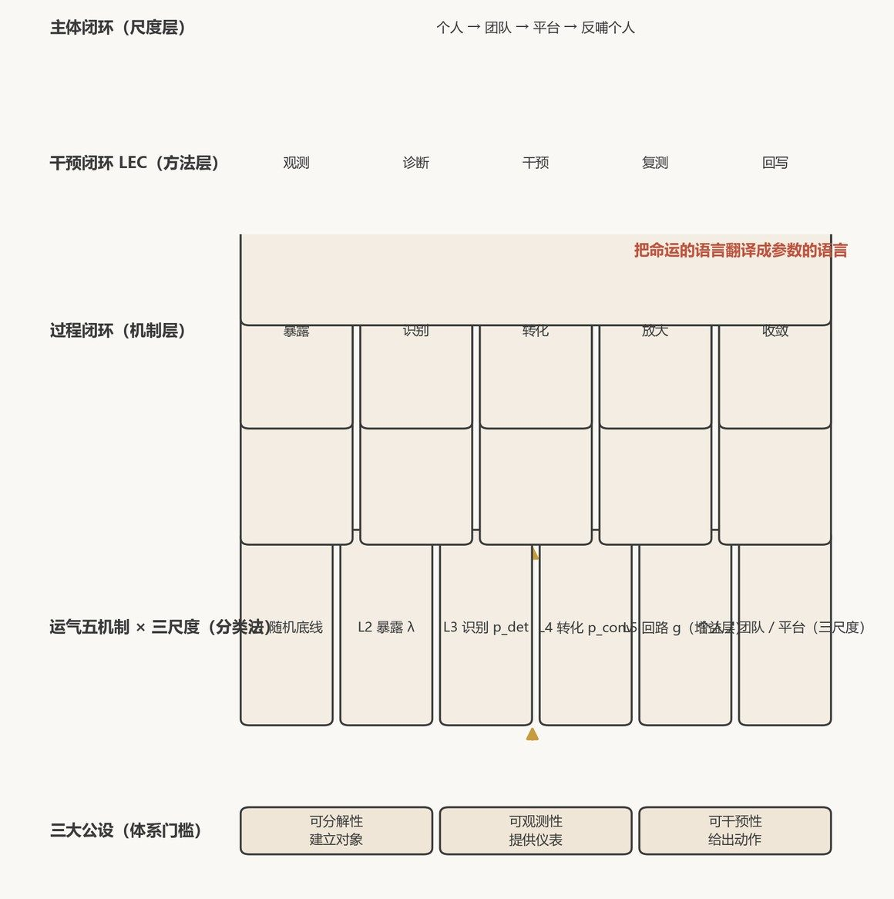
图 1-2 运气工程学体系总图 这本书的结构可以用一张图说清。它有三个层次，从下往上依次是：
第一层：概念与分类（第2—5章） 先立公设、定术语，再把“运气”分成可辨认的几类。这是全书最重要的一次整理工作：
第2章 立三条公设与术语表；第3章 处理一件中国读者最有共鸣的事：把传统那句“一命二运三风水，四积阴德五读书……”逐条翻译成可测的参数 ；第4、5章 建立本书的分类法——运气五机制—三尺度分类法 ：随机之运、暴露之运、识别之运、选择之运、回路之运，加上个人、团队、平台三个尺度。分类不是学术装饰。它的用处很实在：你得像挑毛病一样，先知道毛病有哪几种，才能知道自己缺哪一种。 第4章末尾给出一张 20 题的自评表，你自己就能定位短板在哪。
第二层：五段机制（第6—11章） 把第4章分出的五类运气，逐个拆到能施工的深度：机会怎么到达（第7章）、你如何识别（第8章）、为什么被选中的是他（第9章）、如何让运气自己滚起来（第10章）、以及怎么先保证不被一次意外抹平 （第11章）。
这一层是本书的技术内核。公式和推导都会放进“进阶”框里，你可跳过；主线只留下白话结论和一个生活化的算例。
第三层：三尺度与闭环（第12—17章） 个人把自己打理好之后，运气可以往上走一层——团队与平台。第12章给你一张“运气审计表”，第13—15章分别讲个人、团队、平台三个尺度的工程做法，第16章交代怎么检验这套东西是否真管用，第17章划边界、谈伦理。
三层结构是全书的逻辑顺序，但不是你必须的阅读顺序。三条路径供参考：
路径一：完整路径（推荐）。 按章节顺序读——每章的工具都建立在前章的概念上，每章末尾的“闭环校验”三问会替你检查理解是否到位。全书约二十余万字，每天半小时，两个月读完。
路径二：急用先学路径。 如果你正处在具体的困境里——找工作、换方向、带团队——可以先读第4章（用 20 题矩阵定位短板），然后直接跳到对应的机制章（第7—11章），最后回读第2、6章补齐概念。这条路径的代价是概念偶尔悬空：遇到没定义的词，翻附录 A。
路径三：怀疑者路径。 如果你拿起这本书的动机是“我倒要看看运气怎么能算”——先读第16章：那里有本书全部核心命题与它们的证伪条件。如果你认可“能被证伪的才值得讨论”，再回头读第1、2章，看这套体系的地基怎么打的。从验收标准倒着读入一本书，是工程师的读法。
无论哪条路径，有两处不可跳：每章的“三句话开篇”（全书的论点骨架）与“你能马上做的一件事”（全书累计十几个可立即执行的动作）——只读不做，这本书就白读了一半。
1.5 1.5 闭环总图：为什么这本书强调“循环” # 概念与机制 表格 可核数据 篇幅 一坐 含表
工程学和学问的一个区别是：工程要闭环。
成本
约 1,046 字 · 约 3 分钟 · 不需要任何数学基础
结构
7 段 · 含表 · 含插图
备注
《第1章 为什么运气需要工程学》
本节全文 · 约 1,046 字
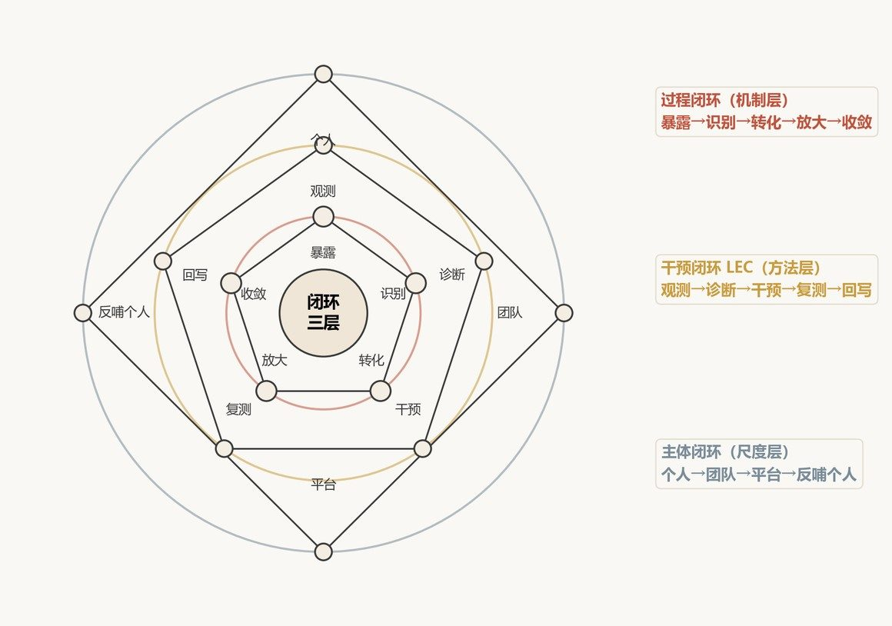
图 1-3 运气的工程学闭环 工程学和学问的一个区别是：工程要闭环 。
一台机器要有反馈回路——测出来、调过去、再测、再调。运气这件事同理。本书的闭环由三层嵌套构成：
层次 内容 一句话 过程闭环 暴露 → 识别 → 转化 → 放大 → 收敛 → 回到暴露 运气本身是个环，不是一个点 干预闭环 观测 → 诊断 → 干预 → 复测 → 参数回写 → 模型更新 做了要量，量了要改 主体闭环 个人 → 团队 → 平台 → 反哺个人 一个人的运气有上限，一群人的没有
这五条“环没闭上”的失效模式，贯穿全书，你可以现在就对照自己 ：
只观测不干预 ：记了一堆日志、看了很多书，行为没变。诊断问法：过去一个月，有哪一项指标是因为你做了什么而变化的？只干预不复测 ：动作很多，不知道有没有用。问法：上一次干预前后，同一个指标分别是多少？复测不回写 ：有数据，但估计值从来不更新。问法：你对“我的行动能带来多少机会”这个判断，什么时候修正过？回写不改模型 ：数据打脸了，行动照旧。问法：最近有没有一条你曾经相信的结论，被自己的数据推翻？单层闭环无跨层传导 ：自己有进步，团队照旧。问法：你的方法有没有变成团队的制度？五条失效模式不难理解，难的是认出它们在自己日常里的样子——失效几乎从不以“失效”的面目出现，它们以“勤奋”的面目出现。给一个复合画像（非实录）：小沈的一周。周一晚，他花两小时整理了上半年的社交记录、标注出“高价值人脉”（观测，很认真）；周二到周五，他照常上班、照常刷手机——记录整理完之后，没有任何一个动作因此改变（只观测不干预）；周六，他连发三条朋友圈“拓展人脉中，欢迎引荐”，然后盯着点赞数（干预了，但既无诊断也无复测，发完就完）；周日，他读完一本讲人脉的书，划了三十条线——合上书，下周的计划与本周一模一样（输入更新了，模型没更新）。这一周里，小沈没有一天是懒散的。失效模式的可怕之处恰恰在于：每一条单独看都像努力 。这也是为什么“闭环”要作为全书的组织原则而不是口号——它给了你一个逐段检查的框架：这周我的环，转到哪一段停住了？
【进阶 · 可跳过】
把“运气”当作控制系统的对象来建模，会遇到一个绕不开的前提问题：随机过程与不可概率化的不确定性不是一回事 。富兰克·奈特在 1921 年就做了这个区分：可以用概率分布描述的叫“风险”，无法概率化的叫“不确定性”（Knight, 1921）。
本书的立场是：把不确定性中可以结构化的部分 工程化——也就是那些能反复观测、能定向干预的部分。凡不能的，一律明确标注为不可控，并交给第11章的降损工程处理。画清这条线，比假装自己什么都能算要诚实得多。
跳过本框不影响后续阅读。
1.6 1.6 一个可核的案例：概率是被算出来的，不是被感觉出来的 # 可核证据 可核数据 篇幅 一坐
前面那个车间师傅的故事，只能让你“感觉”到随机。
成本
约 658 字 · 约 1.5 分钟 · 不需要任何数学基础
结构
9 段
备注
《第1章 为什么运气需要工程学》
本节全文 · 约 658 字
前面那个车间师傅的故事，只能让你“感觉”到随机。感觉不足以支撑判断，我们来看可以查证的数字 。
以国内两种主流彩票的一等奖为例：大乐透一等奖的中奖概率约为 1/2142 万 ，双色球约为 1/1772 万 （数据来源：官方游戏规则与公开科普材料，见附录 C）。
这两个数字太大了，大到人脑会自动把它处理成“听起来很难”，然后就放过去了。换算一下才有分量：
假设你每周买 100 注大乐透，且号码从不重复、期期不落，那么从概率上说，你需要约 4100 年 才能中一次一等奖。
一千六百多万分之一和两千一百多万分之一，在日常语言里都只是“极小概率”。但在工程语言里，它们是两个量级不同的数——一个相差 20%。这就是“感觉”和“算”的差别 ：感觉只给你“难”，算术给你“难多少、值不值、要不要参与”。
再往下看一层。关于中奖者后续的境况，国内外都有一些追踪报道与研究，普遍结论是：相当一部分中奖者在数年之内财务状况明显回落，甚至比中奖前更差〔待核：具体研究出处、样本量与结论口径待补，见附录 C〕。这个现象很关键，因为它说明了一件容易被忽略的事：
运气本身不是终点，运气之后还有一段路要自己走。
一笔横财是典型的“随机之运”（第4章会把它编号为 L1）。它落在你头上与你做了什么无关，但它落在你头上之后的结果，和你做了什么高度相关：有没有留冗余、有没有加杠杆、有没有把一次性收入变成持续现金流——这些全在第11章的处理范围内。
所以这一节的结论有两句：
随机那部分，必须用算术处理 ，因为直觉在概率面前系统性地失灵； 可干预那部分，更应该用算术处理 ，因为它是你真有旋钮的地方。
概念与机制 篇幅 一坐
一本讲运气的书，如果不在开头把边界画清楚，很快就会变成玄学。
成本
约 337 字 · 约 1 分钟 · 不需要任何数学基础
结构
5 段
备注
《第1章 为什么运气需要工程学》
本节全文 · 约 337 字
一本讲运气的书，如果不在开头把边界画清楚，很快就会变成玄学。所以这一节先声明四件不做的事：
第一，不预测。 不预测点位、不预测时点、不挑日子、不看方位。本书给出的所有方法都不依赖“知道未来会发生什么”，只依赖“提高撞上的次数与把握住的概率”。这不是谦虚，是设计原则——凡是需要预知的方法，长期看都会失效。
第二，不承诺。 没有任何一个工具能保证你成功。本书提供的每件工具都会说清它调节的是哪个环节、提高的是哪一类概率。
第三，不做成功学。 判断标准很简单：每件工具都必须能追溯到模型里的一个参数。 如果某个说法只能靠案例和感悟支撑，它就不会进入这本书的工具箱。
第四，不装神弄鬼，也不假装能算尽一切。 有一类不确定性是不可概率化的——第11章会专门处理它。承认边界，是这门学问能站住脚的前提。
概念与机制 表格 可核数据 篇幅 一坐 含表
本书的主干是自己的体系，但它的存在依赖前人的工作。
成本
约 943 字 · 约 2.5 分钟 · 不需要任何数学基础
结构
2 段 · 含表
备注
《第1章 为什么运气需要工程学》
本节全文 · 约 943 字
本书的主干是自己的体系，但它的存在依赖前人的工作。为了让你知道每条引用的位置，这里集中交代一次。完整清单见附录 D。
前人的工作 主要贡献 本书与它的关系 詹姆斯·奥斯丁《Chase, Chance, and Creativity》 第一次把运气分成可辨认的几类：盲目的随机、跑出来的机会、有准备的头脑、人设的吸引力 支撑＋升级 ：本书沿用其分类直觉，但指出这四类的划分依据是“生成机制”，与后来被称为“第五种”的系统运气、以及“团队之运/平台之运”并不在同一根轴上（第4章展开）万维钢《佛畏系统》 把运气话题系统化地引入中文世界，提出“系统运气”与“运气可被设计” 对照 ：本书把“系统运气”定位为作用于其他机制的增益层 ，而不是并列的第五种运气阿尔伯特-拉斯洛·巴拉巴西《The Formula》 用量化方法研究成功与网络结构的关系 对照 ：它主要解释“成功如何被网络放大”，本书更关心“哪一段可以动手改”迈克尔·莫布森《The Success Equation》 提出“运气—技能分解”，判断一个领域里结果由谁主导 对照＋借用 ：本书借其分解思路判断“这个领域值不值得投资运气工程”，但继续往前走，给出干预动作罗伯特·弗兰克《Success and Luck》 论证运气在成功中的份额被系统性低估 支撑 ：支撑本书“承认随机、但不放弃干预”的立场理查德·怀斯曼《The Luck Factor》 十年追踪，发现“幸运者”在行为模式上有系统差异 支撑 ：为“运气可被行为改变”提供了早期的实证底气纳西姆·塔勒布《随机漫步的傻瓜》《黑天鹅》 揭示随机性与尾部风险对判断的破坏 反证与补充 ：本书承认其警告，并把“降损工程”独立成章（第11章）富兰克·奈特《Risk, Uncertainty and Profit》 区分可概率化的“风险”与不可概率化的“不确定性” 反证边界 ：本书据此划定自己只处理可结构化部分卡尔·波普尔《科学发现的逻辑》 可证伪性是科学陈述的门槛 反证标准 ：本书第16章为五条核心命题逐条给出证伪条件
读这张表时请注意一件事：这些引用只承担三种角色 ——为本书命题提供独立证据（支撑）、说明本书与前人方案的差别（对照）、把反对意见摆到桌面上再作回应（反证）。它们不承担本书的结构。这正是本书与“文献综述型著作”的区别：前人的工作是地基上的石头，不是承重墙。
可执行清单 行动工具 篇幅 一坐
拿一张纸，列出你上个月所有产生过新联系的动作：新认识的合作方、参加的活动、发出的投稿、路演、深谈——只算“新”的，重复联系同一批人不算。
成本
约 201 字 · 约 1 分钟 · 不需要任何数学基础
结构
4 段
备注
《第1章 为什么运气需要工程学》· 本章交付的动作
本节全文 · 约 201 字
拿一张纸，列出你上个月所有产生过新联系的动作 ：新认识的合作方、参加的活动、发出的投稿、路演、深谈——只算“新”的，重复联系同一批人不算。
现在数两个数：
如果总数少于 5，或者“圈外”占比不到两成，那么你的运气链条在第一段就已经偏窄了。第7章会给你一份“机会暴露日志”，专门处理这件事。
你不用等到读完那章才开始数——今天数出来的这两个数，就是你运气工程的第一组读数。
闭环校验 与前置公设是否冲突 ：无冲突。本章即三条公设的提出处。是否新增概念需回写术语表 ：已回写——机遇、机遇域、机会到达率、有效行动暴露量、认知敏感度、人设显著性、信任传导、转化概率、增强回路、运气资本、尾部风险与回撤下界、运气审计、运气工程循环，共 15 条（见附录 A）。是否产出可测指标或工具 ：产出体系总图与闭环总图各一张；本章不含量表，量表自第4章起逐章交付。传统回响 本章有意识地把传统智慧放在“入口”的位置，而不是当成证据。传统那句“一命二运三风水”说的正是本书所谓的条件层 ：你出生的地方、赶上的时代、所处的环境，决定了你机遇域的初始边界。
本项对应详见第3章：那里会把“一命二运三风水，四积阴德五读书，六名七相八敬神，九交贵人十养生，十一择业与择偶，十二趋吉要避凶”这十二项，逐条翻译成本书的参数，并逐条说明哪些部分不进入 本书的体系。
这里只先记住一个态度：传统给了我们一份经验清单，现代工程方法要做的不是推翻它，而是把它变成可以量、可以改、可以复盘的东西。
外部对话 奥斯丁给了我最初那把刀：把笼统的“运气”切成四块。但他没有走完最后一段路——他没有告诉读者，切完之后每块该怎么动手。
巴拉巴西让我看到网络结构在成功中的巨大作用，他的坐标系里有作者、作品、观众和网络。但网络结构一旦统计出来，就容易停在“描述”层面：分布是这样的，规律是这样的。本书追问的是下一个问题：既然如此，一个普通人明天能做什么？
这个追问决定了本书的语气：少讲“世界是这样的”，多讲“你可以拧哪个旋钮”。
本章三句话 第一，运气不是一个东西，而是一组过程：机会到达、被识别、被转化、被放大、不被意外抹平。
第二，这五段里，随机的那一段必须用算术处理，可干预的那几段更应该用算术处理——因为那里才是你有旋钮的地方。
第三，本书的全部内容，就是把这五段逐段拆开，给每一段配一个仪表和一个旋钮。
篇一·体系地基 体系地基 篇一插图：地基决定能盖多高的楼。 本篇任务 ：把“运气”从一句感叹，改造成一个可以研究的对象。第2章立三大公设（可分解、可观测、可干预）——这是全书的门槛条件，过不了这三道门，后面的一切都是空中楼阁；第3章与传统十二要素正式对话，把“一命二运三风水”逐条翻译成参数，同时划清不采纳的边界；第4章与第5章建立分类法——生成机制五类（L1–L5）与主体尺度三层（个人/团队/平台），正交成一张坐标系。读完本篇，你手里的“运气”不再是一个词，是一张标注了仪表和旋钮的图纸。
本篇包含 ：
第2章 三大公设与概念体系 第3章 传统运气观的体系化重构 第4章 运气分类法（一）：五机制与增益层重整 第5章 运气分类法（二）：三尺度
篇一·体系地基
第2章 三大公设与概念体系 9 / 9图 2-1 一枚立起的硬币：一面是初生的幼苗（你被给定的起点），一面是展开的地图（你能抵达的范围）。命是幼苗，工程是地图。 【题记】当你能测量你谈论之物、并用数字表达它时，你才对它有所知。——开尔文勋爵，1883 年英国土木工程师学会演讲
第一，“运气能不能被管理”这个问题，不取决于你的态度，取决于三个前提是否成立：运气可分解、可观测、可干预。
第二，这三条不是信念，是可以被打脸的前提 ——每一条都写明了什么情况下它算失效。
第三，本章把全书的术语一次立好：每个概念都同时给出“人话版”和“正式版”，此后十七章不再另起炉灶。
概念与机制 篇幅 一坐
先看一个常见情形（复合案例，非实录，细节作了模糊处理）。
成本
约 498 字 · 约 1.5 分钟 · 不需要任何数学基础
结构
7 段
备注
《第2章 三大公设与概念体系》
本节全文 · 约 498 字
先看一个常见情形（复合案例，非实录，细节作了模糊处理）。
小赵和小钱，同一个县城出生，同一年高考。小赵家里在省城有一套房，父母供他读了大学，毕业进了省城一家设计院；小钱家在农村，父母身体不好，他高中毕业去了南方工厂，三年后攒下几万块钱，开了一家小小的手机维修店。
十年后，小赵在设计院做到了专业负责人，小钱的维修店开了第二家分店。如果只看结果，你可以说他们“都不错”，也可以拿任何一个去论证任何一个：拿小赵论证“起点重要”，拿小钱论证“努力重要”。
但两种论证都是空转 ，因为它们都在比较“结果”，而结果里混着太多不可比的成分。
本书的做法不同：不比较结果，比较可行域 ——也就是每个人“接下来能做的事”的集合。小赵的可行域里有“出国读研”这个选项，小钱的可行域里有“在珠三角开店并接触华强北供应链”这个选项。谁大谁小？在哪些维度上大、哪些维度上小？这才是可以认真讨论的问题。
传统智慧对这个问题的回答只有两个字：“一命”。这两个字把所有起点差异打包成一个不可分析的包裹。本章要做的，是把这个包裹拆开——而且要按工程学的规矩拆：拆出来的每一样东西，都要能测量、能比较、能改动。
这就引出全书的全部地基：三条公设。
2.2 2.2 公设一：可分解性——运气是链条，不是骰子 # 概念与机制 可核数据 篇幅 一坐
陈述：一次“好运气”可以分解为若干可分别考察的环节：
成本
约 655 字 · 约 1.5 分钟 · 不需要任何数学基础
结构
9 段
备注
《第2章 三大公设与概念体系》
本节全文 · 约 655 字
陈述 ：一次“好运气”可以分解为若干可分别考察的环节：
机会到达 → 被识别 → 被转化 → 被放大 → 不被意外抹平
第1章你已经见过这条链条。这里要补齐的是它的适用范围 ，因为这条公设最容易被误读成“一切皆有因果”。
它不否认纯随机存在。 抛硬币式的偶然——中彩票、被陨石砸中、生在哪个家庭——确实与你的行为没有因果关系。本书把这类事件单独编为 L1（随机之运），并承认：对 L1，你能做的只有降损，没有增益（第11章专门处理）。
它主张的是另一件事 ：你日常说的“运气好”，绝大多数不是 L1。被内推、被引荐、看到一个别人没看到的机会、一次合作滚出下一次合作——这些“可持续的运气”全部是链条的产物。链条上任何一段断了，事件都不会发生：
有人想起了你，但你想都没想就推了（识别失败）； 你看出了机会，但对方最后选了别人（转化失败）； 你做成了这件事，但成果是一次性的，没有带出下一件事（放大失败）; 你做得很好，但一次意外把积累全部抹平（收敛失败）。 可检验含义 ：如果这条公设成立，那么链条上任一环节的变化，应当能在统计上观测到对该主体机遇实现数的边际影响。反过来说——
反驳条件 ：若把运气分解成链条后，对结果的解释力并不比不分解更强，则公设一失效，本书需要重写。
这句话写在这里不是姿态。第16章的五条验收命题 H1–H3，就是这条反驳条件的操作化：它们规定了用什么数据、看什么指标、出现什么结果算“分解没有增量解释力”。
一个帮助记忆的比喻：公设一说的是，骰子确实存在，但你日常遇到的大多数“运气”，其实是流水线 。骰子交给第11章，流水线交给全书其余部分。
2.3 2.3 公设二：可观测性——每一段都要有读数 # 概念与机制 公式与参数 表格 篇幅 一坐 含表
陈述：链条上的每个环节都有可测量的代理指标（proxy，替代性读数）。
成本
约 1,021 字 · 约 2.5 分钟 · 含公式，附人话翻译
结构
12 段 · 含表
备注
《第2章 三大公设与概念体系》
本节全文 · 约 1,021 字
陈述 ：链条上的每个环节都有可测量的代理指标（proxy，替代性读数）。
“运气”本身测不出来，这一句必须先认下来。但“测不出本体”不等于“测不出任何东西”。体温不是健康本身，但它是健康的高质量读数；胎压不是安全本身，但胎压表让你不必等到爆胎。本书对运气采取同样的办法——给每一段链条配一块仪表：
环节 人话版 代理读数（举例） 机会到达 每月有多少机会撞上你 单位时间有效新接触数 （非重复） 被识别 机会摆在面前，你认得出吗 信号识别命中率（给你十条行业信号，你认对几条） 被转化 最后落在你头上的概率 被想到、被引荐、被选中的次数 被放大 一次成果带出几次下一次 复投率、复购率、引荐率 不被抹平 最坏情况坏到哪 最大回撤、冗余度、保险覆盖
表 2-1 运气链条的仪表盘
注：运气本体不可测，但链条五段每段都有可数的读数。
仪表长什么样，给三个具体的读数示例（数字为演示值，口径见附录 C）：
示例一（机会到达） ：过去十二个月，我的有效新接触数从每月 6 次降到 2 次——读数不是“我最近不太顺”，是“我的 λ 在收缩，收缩的源头是暴露塌了还是域饱和了”。示例二（被识别） ：每月的十条行业信号盲测，我连续三轮只认对三条——读数不是“这行难做”，是“我的 K 示例三（被放大） ：上一季度的五个成交客户里，零个带来引荐或复购——读数不是“客户薄情”，是“我的 g
三个示例是同一套语法：读数把“感受”翻译成“哪个参数、什么方向、多大位移” 。感受只会触发焦虑或侥幸，读数才会触发诊断——而诊断正是第12章审计表的全部起点。
这里有一条铁律，全书的诚实都系在它上面：
代理指标是近似，不是等值。
“有效新接触数”不等于“机会到达率”——它只是后者最便宜的可测影子。凡是本书出现指标的地方，都会标明它是代理；凡是有环节暂时找不到合格代理的，我们会直说“概念性参数，暂不可测”，而不是硬造一个数字。这条纪律来自心理测量学的老规矩：一个量要有用，先要测得稳 （重测信度），再要测得对 （效度）。第12章讲审计时，会把这两个标准展开成你能自己执行的检查法。
反驳条件 ：若某一环节长期找不到任何可重复测量、重测信度合格的代理指标，该环节降级为“概念性参数，暂不可测”，不再承担论证责任。
注意“降级”这个词——它不是删除。被降级的参数仍可以出现在思考框架里，但不允许再出现在证据链里 。科学史上很多概念都经历过这种降级又复归的过程；留出这条通道，体系才不会僵死。
2.4 2.4 公设三：可干预性——多数环节有旋钮 # 概念与机制 篇幅 一坐
陈述：链条上的多数环节，可以被有意设计的行为改变，而且改变有方向性。
成本
约 620 字 · 约 1.5 分钟 · 不需要任何数学基础
结构
7 段 · 含插图
备注
《第2章 三大公设与概念体系》
本节全文 · 约 620 字
陈述 ：链条上的多数环节，可以被有意设计的行为改变，而且改变有方向性。
观测只是装了仪表，工程要有旋钮。本书的旋钮清单（全书第三层将逐个展开）：
针对机会到达 ：提高有效新接触的密度，尤其是换域 ——当边际递减出现时，换一个场子比在原场子加量更有效（第7章）； 针对被识别 ：积累认知敏感度、做信号训练（第8章）； 针对被转化 ：经营人设显著性与信任存量——让别人遇到相关的事时想得起你、信得过你（第9章）； 针对被放大 ：设计增强回路，让成果带出下一轮机会（第10章）； 针对不被抹平 ：留冗余、控杠杆、设止损（第11章）。 可干预不等于可确定 ——这句话值得单独设一块路牌。拧旋钮提高的是次数与概率，不保证任何单次结果。你可以把每月有效新接触从 3 次提到 10 次，这几乎必然提高你一年内撞上机会的次数 ；但具体哪一次撞上、撞上的是什么，仍然由概率说话。
反驳条件 ：若针对某环节的干预实施后，对应指标没有出现方向一致的位移，该环节对应的工具从工具包中下架。
工具下架制度是本书跟成功学划清界限的地方。成功学的工具从不因无效而下架——因为它们从未被检验。本书附录 B 的每一件工具，都标注它调节哪个参数、预期指标怎么动、多久复测一次；复测不动，下架，记录在案。
三条公设的关系，一张图可以记住：
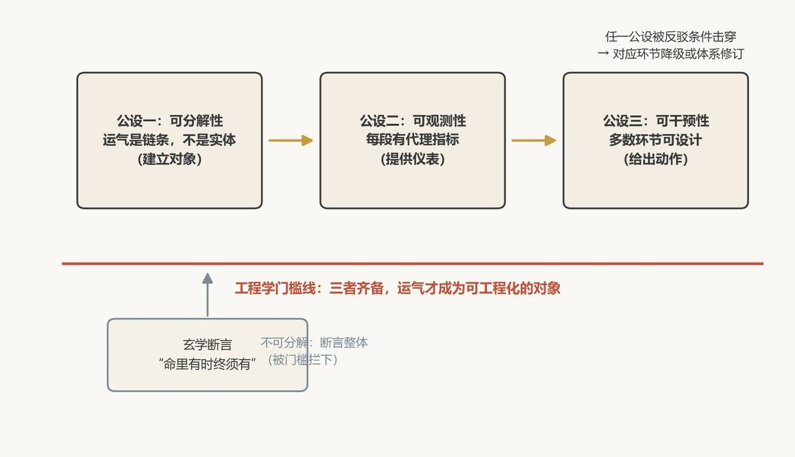
图 2-2 三大公设门槛关系 分解建立对象，观测提供仪表，干预给出动作。三者齐备，运气才够格被称为“工程学”；缺任何一条，它就退回玄学（有对象、无仪表、无动作）或鸡汤（有动作、无对象、无仪表）里去。
概念与机制 公式与参数 表格 篇幅 一会儿 含表
工程学的第一道工序是统一语言。
成本
约 1,748 字 · 约 4.5 分钟 · 含公式，附人话翻译
结构
3 段 · 含小标题 · 含表
备注
《第2章 三大公设与概念体系》
本节全文 · 约 1,748 字
工程学的第一道工序是统一语言。同一个人前脚说“运气”，后脚说“机会”，再后脚说“贵人”——三个词在他嘴里是同一个东西，在模型里却是三个不同的参数。本节把全书的核心术语一次立好。每个术语给两版定义：人话版给直觉，正式版给精度。 完整符号与量纲表见附录 A。
机遇（Opportunity） 人话版 ：一个能让你变好的机会。正式版 ：存在一组可行行动，使主体的效用增量 ΔU > 0，且该状态此前未纳入其行动集。注意：机遇不是“好事”，是“可改进的缺口”。发现机遇的前提是它原本在你视野之外。 机遇域（Opportunity Domain） 人话版 ：你能撞上机会的那片场子。正式版 ：主体在给定时空与网络位置下可达的机遇集合。机遇域是本书与传统“命”概念交接的地方：出生地、时代、行业、圈层，本质上都在划定你机遇域的初始边界。第3章会看到，“一命”翻译过来就是机遇域的初始条件。 机会到达率（ λ ） 人话版 ：单位时间里有多少机会撞上你。正式定义 ：单位时间内进入主体机遇域的候选机遇数，量纲 [次/月]（读作“次每月”）。它由两部分组成：环境给定的基础到达率 λ0 ，加你的行动带来的增量。第7章展开。 有效行动暴露量（ A e f f ） 人话版 ：真正产生新 接触的行动量。正式定义 ：单位时间内产生非重复新接触的行动次数。关键词是“非重复”：第八次约同一个老同学吃饭，不计入。第1章“你能马上做的一件事”里你数过的那个数字，就是 A e f f 认知敏感度（ K ）与识别概率（ p d e t ） 人话版 ：K p d e t 正式定义 ：K p d e t 第8章的核心内容，就是 K p d e t K 人设显著性（ S ）与信任存量（ T t r u s t ） 人话版 ：S T t r u s t 正式定义 ：S T t r u s t 两者共同决定转化概率，第9章展开。 转化概率（ p c o n v ） 人话版 ：机会最终落在你头上的概率。正式定义 ：被识别机遇转化为主体实际收益事件的概率，p c o n v 增强回路（ g ）与运气资本 人话版 ：g 正式定义 ：g λ 与 p c o n v 第10章展开。注意本书的立场：回路是设计对象 ，不是祈祷对象。 尾部风险与回撤下界 人话版 ：最坏会坏到什么程度，以及你能承受的底线在哪。正式定义 ：损失分布的尾部形态，与主体预先设定的最大可承受回撤 D m a x 第11章的主题。它的位置在链条末端，但它的优先级在链条最前——底线下滑会抹平其他一切积累。 运气审计与运气工程循环（LEC） 人话版 ：给五年运气做个体检；观测—诊断—干预—复测—回写这套循环。正式定义 ：运气审计为按五机制逐项打分并定位短板的标准化流程（第12章）；LEC 为本书的方法论主循环（第16章）。术语立完，用一张对照表收尾——把日常对运气的说法翻译成参数语言，你会发现大部分“运气管”里的困惑其实是语言混用：
日常说法 参数语言 隐含的可操作问题 “最近运气不好” λ 下降 / p d e t D m a x 哪一段的读数在动？ “他运气真好” 对方的 λ 、p c o n v g 高在哪个参数？高出的部分可复制吗？ “机会没等我” λ0 低（域的问题）或 A e f f 该换域还是该加量？ “我早就看出来了” p d e t 事前写下过判断吗？命中率多少？ “又是他” 对方的 S T t r u s t 你的可检索性与履约记录差在哪？
注：翻译表不解决任何问题，它只做一件事——把“运气”从一个感叹词变回一个可定位的变量 。说不出“哪个参数”的运气讨论，都是情绪；能指出参数的那句话，已经是诊断的一半。
概念与机制 公式与参数 表格 可核数据 篇幅 一坐 含表
现在回到开头的两个年轻人。
成本
约 1,093 字 · 约 3 分钟 · 含公式，附人话翻译
结构
10 段 · 含表 · 含插图
备注
《第2章 三大公设与概念体系》
本节全文 · 约 1,093 字
现在回到开头的两个年轻人。有了术语，我们可以把“命”这个问题说清楚了。
传统说法把“命”当作一个判决。工程学的视角不同：初始条件决定可行域，不决定轨迹。
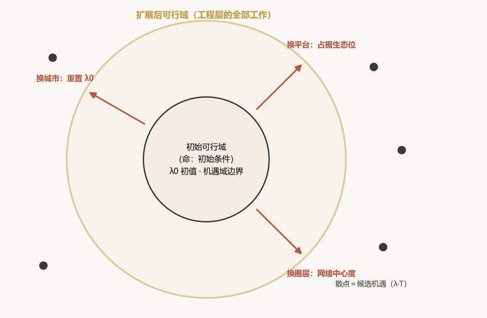
图 2-3 可行域的给定与扩展 小赵和小钱的“命”不同，翻译成模型语言是：λ0 的初值不同，机遇域的初始边界不同 。小赵的初始机遇域里，“读研、进体制、进大院”这些选项是现成的；小钱的初始机遇域里，这些选项不在，但“低成本试错、靠近制造业供应链、学一门手艺”是现成的。
这里必须立刻补上三个限定，否则这段话马上会被读成鸡汤：
第一，初始边界是真实的，不是幻觉。 承认“初始条件影响概率分布”，不等于说“努力就能抹平”。同样一件事，小钱要付出的代价确实比小赵大；有些选项对小钱在给定条件下就是关闭的。本书不假装看不见这个事实——恰恰相反，看不见它的运气观都是伪科学。
第二，“不可改变”与“不可分析”是两回事。 初始条件改不了（你无法选择出生地），但可行域可以扩展 ——换城市、换平台、换圈层，本质上是把 λ0 的初值重新设置到一个更高水平。这是一次性的大动作，成本高、收益也大，第13章会把它作为“关键决策”专门处理。
第三，比较可行域要分维度，不能只看大小。 小钱在珠三角的机遇域，在“接触供应链、低成本创业”这个维度上比小赵大；在“学历门槛型岗位”这个维度上比小赵小。“谁的命好”是个坏问题，“谁在哪个维度上可行域更大、而那个维度与他的目标相关”才是好问题。
“分维度比较”落到纸上，是这张表（演示示例，数字为演示值）：
可行域维度 小赵 小钱 学历门槛型岗位 大（学历＋平台背书） 小 低成本试错空间 小（沉没成本高：房贷、稳定岗位） 大（可随时关店重来） 供应链触达 无 大（华强北一日可达） 可调用资金 中 小（但试错单价低） 信息质量 高（专业圈） 高（生意圈）
注：五栏填完，“谁命好”这个问题的荒诞就现形了——两个人在五个维度上各有高地。可行域的正确问法不是“谁大”，是“哪个维度与我要走的路相关”：小钱若去拼学历门槛型岗位，是在拿自己的低地打别人的高地；他选择开店，是在自己的高地上造运。第13章的域选择表，就是这张草图的正式版。
一个可以查证的数据方向：城市规模与机会密度的关系。城市科学的研究者分析过多国城市数据，发现城市规模与人均创新产出、人均收入之间存在系统的超线性关系——人口翻倍，人均产出平均高出约一成到一成半〔待核：Bettencourt 等人 2007 年发表于 PNAS 的城市缩放研究，具体数值口径待双源核实，见附录 C〕。这个规律未必适用于每个人生阶段与每个行业，但它的含义与我们的直觉一致：你所在的地方，本身就是 λ0 的一部分 。这也正是传统“三风水”要说的东西——第3章见。
可核证据 公式与参数 可核数据 篇幅 一坐
本章需要一个用数据说话的例子，来说明“有了读数，判断会怎么变”。
成本
约 542 字 · 约 1.5 分钟 · 含公式，附人话翻译
结构
5 段
备注
《第2章 三大公设与概念体系》
本节全文 · 约 542 字
本章需要一个用数据说话的例子，来说明“有了读数，判断会怎么变”。
看一个很多人都纠结的问题：“我这个行业还有没有前途？” 这个问题在无仪表状态下的典型回答方式是——“我感觉还行”“网上都说不行了”“我同学转行了”。三种说法的共同点：都没有读数。
在有仪表的状态下，这个问题被拆成三个可核的数字：
行业的 λ0 你的 λ 有效新接触数 （这是你自己的日志，不是感觉）；两者的比值 ：你的行动密度在行业密度中的相对位置。举个算例（数字为演示用虚构值，真实数据与口径见附录 C）：某行业某岗位类目 2024 年职位量较 2021 年下降约三成〔待核：具体平台、类目与口径〕——这是 λ0 在漂移。同时你自己的日志显示，你的有效新接触十二个月里从每月 6 次降到 2 次。两个读数放在一起，诊断就出来了：行业在收缩，而你也在收缩，你的处境恶化是两者相乘的结果，但你能改的只有后者 ——或者，动用一次大动作改前者（换域，第13章）。
没有读数时，这个问题只会引起焦虑；有了读数，它变成一道有输入的算术题。这就是公设二和公设三合起来给你的东西：仪表 + 旋钮 。
工具与产出物 公式与参数 表格 行动工具 篇幅 一坐 含表
注：三条公设各带失效线——这套体系先说好自己怎么死，再谈怎么活。
成本
约 520 字 · 约 1.5 分钟 · 含公式，附人话翻译
结构
2 段 · 含小标题 · 含表
备注
《第2章 三大公设与概念体系》
本节全文 · 约 520 字
表 2-2 三大公设清单（适用条件版） 公设 陈述 可检验含义 反驳条件（失效线） 失效后怎么办 一、可分解性 多数可持续的运气是链条（到达→识别→转化→放大→不被抹平）的产物 环节变化应带来机遇实现数的边际影响 分解无增量解释力 退回“不可分解”表述，重立分类 二、可观测性 每环节有可重复测量的代理指标 代理指标重测信度合格、与结果相关方向稳定 某环节长期无合格代理 该参数降级“暂不可测”，退出证据链 三、可干预性 多数环节可被有意行为定向改变 干预后指标出现方向一致位移 干预后无位移或方向随机 对应工具下架，记录在案
注：三条公设各带失效线——这套体系先说好自己怎么死，再谈怎么活。
表 2-3 核心术语速查（人话版） 术语 一句话人话 首次深讲 机遇 能让你变好的缺口 本章 机遇域 你能撞上机会的场子 本章；第3章（命与风水） λ0 λ 环境给的到达率 / 你的实际到达率 第7章 A e f f 产生新接触的行动量 第7章 K p d e t 识别底子 / 识别概率 第8章 S T t r u s t 被想到 / 被信任 第9章 p c o n v 落到你头上的概率 第9章 g 好结果带下一轮的速度 / 攒下的机会 第10章 D m a x 底线在哪 / 最坏坏到哪 第11章 运气审计 / LEC 体检 / 主循环 第12、16章
（完整版含正式定义与量纲，见附录 A。）
可执行清单 行动工具 篇幅 一坐
拿一张纸，中间画一条竖线。
成本
约 167 字 · 约 1 分钟 · 不需要任何数学基础
结构
3 段
备注
《第2章 三大公设与概念体系》· 本章交付的动作
本节全文 · 约 167 字
拿一张纸，中间画一条竖线。左边写“我的初始机遇域给我的” （出生地、家庭能托举的、学历直通的门），右边写“我主动扩出来的” （自己选的城市、自己建的关系、自己攒的作品）。
不用写得完整，各写五条就够。然后看一眼比例。
这张纸不是用来内疚或自豪的，它是你扩域效率的第一份读数 。如果右边明显太薄，第7章到第15章的每一个工具，都在帮你把右边写满。
深水区（进阶·可跳过） 【进阶 · 可跳过】
代理指标的三重检验：为什么“测得出”不等于“测得对”
公设二最容易在实操中变形：一旦允许代理指标，人人都能造出看起来漂亮的数字。本书对代理指标设三道关：
信度关（测得稳吗） ：同一对象隔两周测两次，读数不应系统性漂移。有效新接触数过这一关很容易；“朋友圈互动质量分”这类主观合成就难过。效度关（测得对吗） ：代理指标应与某个外部效标（如三年内实际发生的机遇数）相关，且方向稳定。“被搜索次数”与“被邀请次数”在这一关上要分别验证。敏感关（测得动吗） ：指标应对干预敏感。若无论你做什么，读数都不动，它是背景噪声，不是仪表。三关不过的数字，本书一律不称指标，只称“观察记录”。这条纪律来自心理测量学与测量论的经典区分（信度、效度概念的系统阐述见心理测量学标准文献〔待核：Nunnally & Bernstein, Psychometric Theory 〕）。
跳过本框不影响后续阅读。
【进阶 · 可跳过】
公设一与“叙事谬误”的界线
有人会质疑：把运气分解成链条，会不会恰好是人的大脑最擅长的事——事后编故事？任何成功都可以被拆成“到达—识别—转化—放大”四段，就像任何梦都可以被解出一个含义。
这个质疑是认真的，必须正面回答。事后拆解（叙事）与事前分解（工程）的分界有三条：①事前指定 ：工程分解要求在结果发生前就指定环节与指标——先写下“我预测提高 A e f f 可错性 ：每个分解出的环节绑定一个可位移的指标，若不位移，分解被证伪；③对照存在 ：链条解释力要与“不分解”的基准模型比较（H1–H3 的设计），而非与自己比较。
换句话说，叙事谬误的问题不在“拆解”本身，而在拆解免检 。本书的分解处处设检。
跳过本框不影响后续阅读。
闭环校验 与前置公设是否冲突 ：无冲突。本章是三公设的正式定义处；第1章为提出处。是否新增概念需回写术语表 ：本章集中定义 15 个术语（机遇、机遇域、λ0 / λ 、 A e f f 、 K / p d e t 、 S / T t r u s t 、 p c o n v 、 g /运气资本、尾部风险与 D m a x 是否产出可测指标或工具 ：产出表 2-2（公设清单与失效线）、表 2-3（术语速查）；A e f f 传统回响 本章对应传统十二要素的第一条“一命” 。
古人对“命”的最好态度，其实孔子早就给过：“不知命，无以为君子也”（《论语·尧曰》）。这句话的重点不是宿命，而是自我认知的前提 ——你得知道自己是带着什么初始条件进场的。本书把“命”翻译为：初始条件（λ0 的初值与机遇域的初始边界），它决定可行域，不决定轨迹；可行域可以通过换场所、换网络、换信息源来扩展，这是一次性的高杠杆动作。
差异边界也在这条上：本书不采纳“生辰八字决定命运”的因果论证，不讨论改运仪式；只采用“初始条件影响概率分布”这一可检验的部分。完整的逐条对应与出处甄别，见第3章。
外部对话 与布里奇曼的操作主义 ：物理学家布里奇曼在 1927 年提出，一个概念的意义等于测量它的操作（Bridgman, 1927〔待核〕）。本书的“代理指标”纪律直接继承这个传统：说一个人“机会到达率高”，就等于说他“过去三个月的有效新接触数是某个值”——除此之外这句话没有别的含义。这听起来寒酸，但它是从玄学手里夺回讨论权的第一步：凡是不能落到操作上的形容，先当作情绪，不当作事实。
与怀斯曼的行为研究 ：怀斯曼追踪数百名自称幸运与不幸的人，发现幸运者在开放性、警觉性等行为模式上有系统差异（Wiseman, 2003）。这是公设三最早的一批实证底气——幸运不完全是性格抽签，它部分是行为模式的产物，而行为可以改。本书与他的差别在于：他的研究停在“幸运者有这些特征”，本书继续问“这些特征分别调节模型里的哪个参数、用多大力气、多久复测”。
本章三句话 第一，运气可以被管理的前提不是信念，而是三条可证伪的公设：可分解、可观测、可干预——每条都带失效线。
第二，全书的语言在本章一次立齐：机遇域是场子，λ 是到达率，K S T t r u s t g
第三，“命”的正解是初始条件：它决定可行域，不决定轨迹；而可行域可以被有意识地扩展。
篇一·体系地基
第3章 传统运气观的体系化重构：十二要素的理论对应 9 / 9图 3-1 村口的小路分成两条：一条通向学堂，一条通向作坊。古人早就知道，运气在岔路口上。 【题记】温故而知新，可以为师矣。——《论语·为政》
第一，“一命二运三风水，四积阴德五读书，六名七相八敬神，九交贵人十养生，十一择业与择偶，十二趋吉要避凶”——这份清单不是迷信，是古人用经验语言写下的一份影响因素清单 。
第二，本书把十二条逐条翻译成现代可测参数：凡是能测的，进入体系；凡是不能测的，明确排除并说明理由。
第三，翻译完你会发现一件事：古人排的顺序，恰好也是工程学的实施顺序 ——先认条件，再攒积累，最后做工程。这不是巧合，这是三百年民间智慧与系统方法的一次会师。
案例与直觉 篇幅 一坐 主案例
先看一个常见情形（复合案例，非实录，细节作了模糊处理）。
成本
约 633 字 · 约 1.5 分钟 · 不需要任何数学基础
结构
6 段
备注
《第3章 传统运气观的体系化重构：十二要素的理论对应》
本节全文 · 约 633 字
先看一个常见情形（复合案例，非实录，细节作了模糊处理）。
同一个村子，两个男孩，同年出生，两家隔着一条巷子，家境相差不大——用第2章的话说，初始条件近似 。
阿树十六岁南下进厂。他有个习惯：每到一个新厂，先把厂里技术最好的老师傅摸清楚，想办法调到那条产线上；工余在夜市帮人修随身听，顺带认识了一群倒腾电子元件的人。二十四岁，他和夜市认识的一个档主合伙拿下一款小家电的售后维修承包；二十九岁，承包点变成三家；三十五岁，他开了一家自己的小电子厂，厂里四个骨干，两个是当年厂里的工友，一个是夜市的档主，一个是第一批客户厂的采购——“都是一路带出来的人”。
阿海也南下，进了另一家厂。他手脚勤快，但他的原则是“干好自己的活，别的不掺和”。换过四家厂，每次都是因为“那边工资高两百”。四十岁那年，他还在流水线上，跟阿树同一年出门，收入差出了一个数量级。
如果把两个人的差距全部归给“运气”，这个说法什么也没解释——它只是把问题改了个名字。但如果把两个人四十年里做的事按清单摆开，你会看到：阿海几乎只动了“十养生”这一条 （他身体好、出勤稳，这是一项真实的资产），而阿树动的是清单里另外九条——他在攒技术眼力（五）、攒了一圈信任（四）、被人记住“手艺好人靠谱”（六、七）、有一群愿意跟他走的人（九）、四十岁前换了两次赛道（十一）、开厂后从不赊账扩张（十二）。
传统十二要素，就是这份摆开来的清单。本章的任务，是给清单上每一项找到它在现代体系里的参数对应 ——让它从“老人言”变成“仪表与旋钮”。
概念与机制 可核数据 篇幅 一坐
在翻译之前，先把原文的来历说清楚——这一步不能省。
成本
约 570 字 · 约 1.5 分钟 · 不需要任何数学基础
结构
5 段
备注
《第3章 传统运气观的体系化重构：十二要素的理论对应》
本节全文 · 约 570 字
在翻译之前，先把原文的来历说清楚——这一步不能省。一份流传了数百年的清单，如果连出处都不交代就拿来用，那是拿民间信仰冒充学问。
通行文本 ：“一命二运三风水，四积阴德五读书，六名七相八敬神，九交贵人十养生，十一择业与择偶，十二趋吉要避凶。”
出处考 ：前五项（“一命”至“五读书”）最早见于清代文康《儿女英雄传》第三十八回。后七项（“六名”至“十二趋吉避凶”）系民间陆续补充完善，版本流变不一——另有“十三遇人且行善”等更长的续句，也有将个别条目次序对调的版本。本书取十二要素版本 ，不宣称其为“定本”（本节深水区框给出版本甄别的细节）。
本书的处理原则 ，三句话：
对象化 ：把十二要素当作研究对象 （古人的一份经验清单），不当作用来背书的权威。引用它们，就像工程师引用一份老技师的手抄经验簿——尊重，但逐条验证。翻译而非注解 ：不替古人辩护，也不替古人圆场。每条只提取其可检验的内核 ，翻译为本书的参数。明确排除 ：凡不可测、不可检验的内容（面相断命、方位吉凶、笔画吉凶、流年占验），一律写进“差异边界”，明确不进入体系 。这条纪律既是学术安全阀，也是对读者的诚实。以下逐条翻译。每条四要件：传统语义与出处、理论对应与参数、可测指标与工程手段、差异边界 ，另配一个“身边场景”短例（本章全部场景短例均为复合案例，非实录；细节作了模糊处理，角色与情境仅用于演示机制）。
3.3 3.3 条件层：命、运、风水（第一至三条） # 概念与机制 公式与参数 可核数据 篇幅 需专注
古人把前三条排在最前，不是随手的。
成本
约 2,237 字 · 约 6 分钟 · 含公式，附人话翻译
结构
16 段 · 含小标题
备注
《第3章 传统运气观的体系化重构：十二要素的理论对应》
本节全文 · 约 2,237 字
古人把前三条排在最前，不是随手的。命、运、风水讲的是你无法选择的部分 ：禀赋、时势、环境。本书称之为条件层 ——它们划定你机遇域的初始边界与漂移方式。
一命：初始条件与可行域 传统语义与出处 。“命”指先天禀赋——生辰、出身、家庭背景、身体条件。这个概念在儒家传统里并非宿命判决：孔子说“不知命，无以为君子也”（《论语·尧曰》），把“知命”作为一种自我认知的前提 ——先知道自己是带着什么条件进场的，才谈得上做什么。这层意思，与宿命论有本质区别。
理论对应与参数 。命对应初始条件与可行域 ——系统的起始状态向量。参数上表现为：基础机会到达率 λ0 的初值、机遇域的初始边界。第2章已经给出关键区分：初始条件决定可行域，不决定轨迹 。两条同样的船，一条出厂即在深水港，一条搁在浅滩——这是命；但航线是船长的事。
可测指标与工程手段 。指标：先赋资源存量——家庭可托举程度、教育起点、所在地域、起点平台规模。手段：命本身不可改，但可行域可扩——换城市、换平台、换圈层，本质是把 λ0 的初值重置 到更高水平。这是一次性的大动作，归第13章“关键决策”管。
身边场景 。同一条产线上的两个师傅：一个家里在县城有铺面托底，敢停薪半年去学数控；另一个每月工资要寄回老家，一次进修机会因为“这半年家里怎么办”放弃了。两个人后来的差距，一半在技术，一半在初始条件允许的试错空间不同 。认命不是认输，是认账：先算清自己的可行域，才知道哪一步是从命里抢出来的。
差异边界 。不采纳“生辰八字决定命运”的因果论证；不讨论“改运”仪式。仅采用“初始条件影响概率分布”这一可检验部分。为什么排除八字 ：它给出的预测（同年同月同日同时生者命运相同或高度相似）是可检验的，而检验结果不支持——仅此一条，按本书的标准就出局了。这不是文化立场，是证据立场。
二运：非平稳环境下的参数漂移 传统语义与出处 。“运”指时势变化。民间有“十年一大运、五年一小运”的周期说法；“运”与“命”的区别古人说得很清楚——命为给定，运为流动 。一艘船的船体是命，洋流是运。
理论对应与参数 。运对应非平稳环境下的参数漂移 。在本书模型里，机会到达率不是常数，而是随时间变化的 λ(t ) ；行业需求强度 D(t) 同理。行业有景气周期，平台有红利期与收割期，技术有导入期与成熟期——这些周期不是背景噪声，它们就是“运”本身。这是本书模型与一切静态公式最大的差别 ：静态公式假设环境不变，而“运”这个词，古人早就把环境的变化率装进了清单。
可测指标与工程手段 。指标：行业景气指标（职位量、投资额、新企业注册数的多年趋势）、政策周期、平台流量红利期的长度。手段：本书明确不预测时点 （这是第1章四不做的第一条）。能做的是两件事：①在周期切换时提高敏感度 （早看到拐点，第8章的信号训练）；②保持可选性 （不把全部身家押在单一假设上——这是第11章“不被抹平”的纪律）。一句话：运不可测，但可备 。
身边场景 。两个做餐饮的，一个在 2018 年前后加盟外卖火锅，两年开了七家店；一个在同一时间盘下堂食大店。同一座城市，同一条街。前者赶上外卖平台的扩张红利期，后者碰上到店消费的收缩期——两个人谁也没有预测，一个漂在上升洋流上，一个漂在下降洋流上 。运不测时点，但可测方向：看近三年的漂移斜率，比猜明年的拐点有用得多。
差异边界 。不采纳“流年吉凶”“犯太岁”等占验说法；不使用生肖与年份的命理对应。周期只作为参数漂移处理，且必须可用公开数据检验（如行业统计的多年序列）。占验的说法同样过不了可检验这一关：如果“某年犯太岁者皆不利”，那么该年份该群体的负向事件率应当显著高于基线——没有统计支持的说法，不能进入体系。
三风水：环境与机遇域的空间结构 传统语义与出处 。“风水”本为相地之术，原是古人选择居所与安葬格局的经验方法，其古老的内核只有一句话：环境会影响人 。剥去神秘外壳，这是一条朴素且正确的观察——只是古人的“环境”主要指宅向山水，本书的“环境”指城市、行业与网络。
理论对应与参数 。风水对应环境与机遇域的空间结构 ：λ0 的空间异质性（同样的行动，在不同地方产出不同的机会密度）与主体的网络中心度（你在关系网络中的位置）。你在哪个城市、哪个行业、哪个圈子，决定了机会撞上你的基础频率。第2章引过的城市研究是同一个意思：城市规模与人均机会产出之间存在系统的超线性关系（Bettencourt 等 2007，PNAS，F-28 已核）。
可测指标与工程手段 。指标：所在城市/园区/行业的机构密度、信息源数量、你在关键网络中的位置（连接数与结构洞）。手段：换场所、换网络、换信息源 ——这是全书成本收益比最高的一组动作。一个粗略的直觉：与其在原地把行动量加三倍，不如把自己搬到一个 λ0 高三倍的地方；前者受边际递减惩罚，后者重置了整条曲线（第7章展开这个对比）。
身边场景 。同一个手艺，在县城一年接三十单，搬到一线城市的产业带一年接三百单——人没变，手艺没变，变的是 λ0 。还有一层更隐蔽的“风水”：同一个城市里，进哪个圈层决定你听到什么信息。坐在批发商群里的人听到的是价格，坐在工程师群里的人听到的是下一代产品。环境不是背景板，是机会密度和信号质量本身 。
差异边界 。不采纳方位吉凶、家具摆设、门向朝向等不可测内容；不接受“气场”作为解释项。只保留可测的环境变量。这里要替古人说一句公道话 ：在缺少统计工具的年代，“环境重要”这个判断只能借助“藏风聚气”这样的语言来流传。我们今天不必继承那套语言，但应当继承那个判断——并且给它配上读数。
3.4 3.4 积累层：阴德、读书、名、相、敬神、贵人（第四至九条） # 概念与机制 公式与参数 可核数据 篇幅 需专注
第四到第九条，是清单里最长的一段，也是最有意思的一段：六条全都是“攒”——攒信任、攒认知、攒名声、攒信号、攒承诺、攒关系。
成本
约 4,519 字 · 约 12 分钟 · 含公式，附人话翻译
结构
31 段 · 含小标题
备注
《第3章 传统运气观的体系化重构：十二要素的理论对应》
本节全文 · 约 4,519 字
第四到第九条，是清单里最长的一段，也是最有意思的一段：六条全都是“攒” ——攒信任、攒认知、攒名声、攒信号、攒承诺、攒关系。本书称之为积累层 。它们对应模型里的六个存量变量，全部可投资、可积累、可折旧。
四积阴德：信任资本的重复博弈积累 传统语义与出处 。“积阴德”指不为人知的善行。“积善之家，必有余庆”出自《周易·坤·文言》，这条古老的福报观，把道德行为记为一笔长期账户 上的存款。注意“积”这个字——古人选它而不选“行”，说明他们关心的不是单次善行，而是存量 。
理论对应与参数 。阴德对应信任资本的重复博弈积累 （“信任资本”是概念名；参数层即信任存量 T t r u s t S T t r u s t p c o n v g 这一条是全书最漂亮的古今对照 ：古人说“积善之家必有余庆”，现代博弈论说“重复博弈中的合作者获得长期租金”——两句话讲的是同一件事，只是后者能算。
可测指标与工程手段 。指标：履约率、合作持续时长、复购与续约率、被引荐次数。手段：①把每一次承诺记录在案并按期兑现（履约的可追溯性本身就是信任的放大器）；②在合作中主动让利于对方 ——这不是道德姿态，是用短期收益换长期回路的投资，第10章会给出算例。
身边场景 。小区门口两个修车师傅：甲只修坏的零件，报价先说清；乙什么零件都“建议换”。十年后，甲的客人排到街角，乙搬走了。乙到关店也没想明白：“我单价高、流水好，怎么没人回头？”——信任账本不看流水，看复购率 。甲的账本上每一次诚实报价都是存款，乙的每一次小聪明都是取款，取到本金见底，客人用脚投票。
差异边界 。不采纳“因果报应”的形而上学机制与“行善改运”的承诺。只承认声誉机制在重复博弈中的可测效应。这一条的排除线画得极认真，原因在于 ：本书把“德”读作可计量的信任资本，而不是神秘力量——一旦混入“善有善报”的神秘机制，这个参数就从可测退回不可测，前功尽弃。同时必须说明：不采纳其神秘机制，不等于否定善行本身的价值——只是本书只研究它作为一种信任投资的可测效应，道德价值是伦理学的事。
五读书：认知敏感度与识别概率 传统语义与出处 。“读书”是十二要素中最早被普遍认可的改变命运途径。科举传统让它带有强烈的阶层流动含义——“朝为田舍郎，暮登天子堂”。古人在这里做了一个了不起的判断：在所有积累中，读书被排在了第五位 ，高于名、相、敬神、贵人。
理论对应与参数 。读书对应认知敏感度 K p d e t k ·K K 饱和式 的——从 0 到 60 分的进步远大于从 85 到 95 分）。读书的真正功能不是“考取功名”，而是抬高你识别机会的概率、扩大你能“看懂”的机遇域 。一个只读财务报表的人和同时懂技术的人，看到同一条行业新闻，前者看见一条消息，后者可能看见一个创业窗口。
可测指标与工程手段 。指标：领域知识测评成绩、机会信号识别命中率、跨领域迁移能力。手段：①认知复利 ——长期在一个方向上积累，让模式库指数增厚；②跨领域迁移 ——把 A 领域的模式库搬到 B 领域（巴菲特的搭档芒格所谓“多元思维模型”就是这个动作）。③信号训练 ——刻意练习“从噪声里认信号”（第8章给训练法）。
身边场景 。同一份行业新闻——“上游原材料宣布扩产”——老采购读完划走了，年轻工程师读完写了一份半年后成本下行的分析。三个月后，公司靠这份分析压了价，他也从“画图的”变成了“能算账的”。读同一句话， K 不同的人看到不同的世界 。读书的账不在文凭，在每一次“我读懂了别人没读懂的东西”。
差异边界 。读书 ≠ 学历：本书不承诺“学历决定论”，也不承认“读书无用论”；实践性认知（手艺、学徒、复盘）同样计入 K 古人的排序在这里又对了一次 ：读书被排在阴德之后、名相之前，恰似 K
六名：人设显著性的符号维度 传统语义与出处 。“名”有两读：一为姓名（民间有姓名笔画吉凶之说），二为名望。本书取名望与可辨识度 之义。古人所谓“人过留名，雁过留声”，讲的就是名声作为一种跨时间的信号载体。
理论对应与参数 。名对应人设显著性 S 的符号维度 。名字与标签的本质是信息压缩与检索线索 ：它降低别人想起你的成本，提高你被提及与被选择的概率。别人遇到一件事需要找人时，脑子里检索的不是你的全部经历，而是一个标签——“做跨境财务的”“懂算法的传统行业老兵”。你能不能被压缩成一句别人记得住的话，就是你的 S 在符号维度的读数。
可测指标与工程手段 。指标：搜索引擎与平台上的可检索性、名称歧义度、被提及次数、被搜索量。手段：命名与定位策略——清晰（一句话说得清）、唯一（不与大盘同质）、低歧义（搜得到你而不是一堆同名者）、指向明确（标签直接连接一种能力而非一种气质）。
身边场景 。两个水平相近的设计师，甲的简介是“设计师”，乙的简介是“做县域零售门店升级的设计师”。一个客户要做门店改造，搜索出来的是乙。甲不缺能力，缺一个指向决策场景的标签 。“名”在现代的形态不是匾额，是搜索关键词。
差异边界 。不采纳姓名笔画、五行补缺、改名的吉凶论证。只做信息与检索层面的解释。排除理由同“一命” ：姓名吉凶给出的预测（同笔画者同运）可检验而不被支持。要说明的是，这不否定“改名”在某些情形下确实改变了境遇——但机制完全 mundane（平凡）：不是笔画变了命，是新名字降低了检索成本、重塑了自我预期。同一个现象，解释权交给可测的机制。
七相：首因信号与信号成本 传统语义与出处 。“相”指面相与仪态，民间有“相由心生”之说（该说法在佛典与民间俗语中均有表述，具体出处待核，见 fact_check F-17）。相术在传统里自成一家，但本书只取其中一层含义：仪表与表达，是别人第一次接触你时唯一可用的信息 。
理论对应与参数 。相对应首因信号与信号成本 。机制：在初次接触中，对方无法观测你的真实能力，只能读你的可观察特征——仪表、体态、表达的结构性。这些特征以“昂贵信号”的方式传递质量信息（把自己收拾得体、把话说清楚是有成本的，且能力越强成本越低），影响初次转化概率 p c o n v
可测指标与工程手段 。指标：专业形象评分（可由第三方盲评）、表达清晰度（结构化程度）、首次会面的转化率。手段：把“看起来可靠”当作可训练的技能 ——准备度（对场合的了解）、仪态（精力管理的结果）、结构化表达（“结论—依据—请求”三段式）。注意，这三样没有一样要求改变长相。
身边场景 。同一个项目提案，两份内容九成相同：一份错字三个、图表对齐混乱；一份干净齐整。评审两轮后，后者中标——评委说不出内容差别，只觉得“这份更放心”。首因信号不是长相，是准备度 ：错字是“这个人如何对待他自己的事”的最便宜样本。
差异边界 。不采纳面相断命、以貌取人的判断 ——这是十二要素中本书态度最严厉的一条排除。同时，第17章会专门讨论这一条的伦理风险：外貌与表达歧视会放大不公平，本书只主张“改善自己的可观察信号”，绝不主张“以相判人”。前者是自我工程，后者是他者歧视，界线必须划死。
八敬神：承诺装置 传统语义与出处 。“敬神”指对天地神明的敬畏。若剥去信仰内容，只看其社会功能，会发现它给古人提供的是两样东西：一套自我约束的装置，和一种面对不可控之事的谦卑态度 。“举头三尺有神明”的真实功能，是让一个人在没人看见时也守约。
理论对应与参数 。敬神对应承诺装置（commitment device） 。机制：信念与仪式降低短视偏离的倾向——等价于降低行为贴现率、内化违约成本，从而保护长期信任资本不被一次短视的违约透支。同时它对应面对尾部风险时的谦卑态度 （第11章：对“我不知道分布尾部在哪”的坦然）。奥德修斯把自己绑在桅杆上是承诺装置；签一份对赌协议是承诺装置；把“绝不赊账扩张”写进厂规、请全体员工监督，也是承诺装置。
可测指标与工程手段 。指标：履约率、对长期选项的偏好稳定性、风险准备行为（保险覆盖、冗余度、止损执行率）。手段：公示承诺、书面契约、第三方监督——把“敬畏”制度化为可执行的承诺装置 。古人的“敬”，今人的“制度”，同一个问题的两代答案。
身边场景 。两个合伙做生意的，都信守口头约定。甲把“利润怎么分、散伙怎么走、谁管钱”写成了两页纸签字；乙觉得“兄弟之间谈这些伤感情”。第三年遇到一次大分歧，甲的两个人按条款吵了三天，照常做生意；乙的两个人按感情吵了三个月，从此不再往来。敬畏之情不可测，白纸黑字可执行——承诺装置保护的不是生意，是关系 。
差异边界 。不讨论宗教信仰的真伪与效力，不做“拜神得福”的因果主张。只研究承诺装置的行为效应。这条排除线同样干净：信仰的价值不在本书的评价范围，本书只研究“相信自己在被监督”这一心理状态对履约行为的可测影响——这个影响是可以在实验与现场数据里看到的。
九交贵人：网络结构与选择之运 传统语义与出处 。“贵人”指在关键时刻给予提携与引荐的人。这是十二要素中最具操作性、也最被误解 的一项：多数人把它读成“找到贵人”，而它的原义更接近“结得善缘”——贵人是结出来的，不是求出来的。
理论对应与参数 。贵人对应网络结构与选择之运（L4） 。本书的分析比传统说法更细：贵人同时作用于三个环节 ——①抬高机会到达率 λ （有人把机会带到你面前）；②提高识别概率 p d e t p c o n v g 弱连接与结构洞 ：格兰诺维特 1973 年的经典研究发现，真正带来新信息的往往不是强关系，而是那些“认识但不太熟”的弱连接（Granovetter, 1973, AJS 78(6)，F-28 已核）——因为强关系与你共享同一个信息圈。
可测指标与工程手段 。指标：高价值连接数（不是通讯录总数，是“愿意为你说一句话”的人数）、被引荐次数、你的连接所处的网络位置。手段：先成为别人的贵人 。把自己变成网络中的高价值节点——你能帮到的人越多，“被贵人看见”就从偶然变成必然。这是双向的网络资本：单向索取的关系不是贵人网络，是消耗品。
身边场景 。一个刚入行的销售，每逢行业展会就帮主办方搬物料、给老前辈做笔记整理，两年下来没人不认识他。后来他的大单，十单有七单是“别人想到他”。他从来没开口求过谁提携——贵人是结出来的，不是求出来的 。单向索取的关系是消耗品，双向提供价值的关系才会长出引荐。
差异边界 。不采纳“攀附权贵”“命中带贵人”的说法。强调可逆性与互惠性：贵人网络的本质是重复互惠博弈 ，不是单次攀附。阿树案例里那四个骨干，就是这条的注脚——他们先是阿树的“贵人”（夜市档主带来合伙机会），后是阿树的“被贵人”（工友愿意跟他走）。一张网，双向织成。
3.5 3.5 工程层：养生、择业择偶、趋吉避凶（第十至十二条） # 概念与机制 公式与参数 篇幅 需专注
最后三条，古人的笔锋从“攒”转向“用”。
成本
约 1,938 字 · 约 5 分钟 · 含公式，附人话翻译
结构
16 段 · 含小标题
备注
《第3章 传统运气观的体系化重构：十二要素的理论对应》
本节全文 · 约 1,938 字
最后三条，古人的笔锋从“攒”转向“用”。本书称之为工程层 ——前九条攒下的资本，要靠这三条落地：时间预算、关键决策、风险控制。这三条恰好是工程学的三件套。
十养生：暴露期与单位时间有效强度 传统语义与出处 。“养生”常被当作十二要素里的闲笔——排在贵人后面，像是凑数。这个印象是错的，而且错得值得专门写一段：它对应模型中最被低估的变量。
理论对应与参数 。养生对应暴露期 T 与单位时间有效强度 。在期望机遇数公式 E [N l u c k p d e t p c o n v T λ 、p d e t p c o n v T 是唯一可以被近确定地延长的乘数项 ：别人在场四十年，你在场五十年，其他条件不变，你撞上的机会就多两成半。更关键的是，健康状态同时抬高三项乘数：状态好则接触多（λ ）、判断准（p d e t p c o n v
可测指标与工程手段 。指标：有效工作年数（不是预期寿命，是能高质量在场 的年数）、精力状态与产出稳定性、因病中断频次。手段：把身体当作“机会到达的总时长”来经营——睡眠、锻炼、定期体检，在本书的账本上不是生活方式偏好，而是延长 T 的工程手段 。
身边场景 。两个同龄的工程师：一个每天睡够七小时、坚持跑步，四十五岁还能一周连开三天评审会；一个长期熬夜赶项目，四十二岁查出问题，最好的一个上升机会在面前停了一年。T 是唯一可近确定延长的乘数——你在场多久，机会就找多久 。养生在运气账本上不是生活质量，是总时长。
差异边界 。不讨论具体养生术的疗效，不推荐任何产品与方法。只纳入有公开证据支持的“健康行为与生产率关联”，且一律标注证据强度。古人的养生术（导引、食养）中相当一部分内容，按本书的标准落在“未检验”区——未检验不等于无效，但等于不能入稿。
十一择业与择偶：关键决策工程 传统语义与出处 。第十一、十二项是全书的“闭环项”——前序积累最终要通过关键决策 落地。“尽人事而知天命”是这一项的实用理性底色：把能选的选好，把不能控的认了。
理论对应与参数 。对应关键决策工程 ，含两种性质不同的选择：①域选择 （择业、选城市、选平台）——选 λ0 高、需求强度 D 高、竞争熵低的领域；②对手方选择 （择偶、合伙人、核心雇员）——选 T t r u s t g 可逆性分级 ——可逆的决策快速试错（选错行业两年可以再换），不可逆的决策充分评估（婚姻与合伙的退出成本极高）。
可测指标与工程手段 。指标：决策矩阵评分（领域机会密度 × 自身比较优势 × 可逆性）。手段：两张决策表（第13章给出成品）——“域选择决策表”与“对手方选择决策表”，各含硬门槛项与加权评分项。
身边场景 。两个同期毕业进同一家大厂的年轻人：甲两年后跳去一家小创业公司做技术负责人，理由写在纸上——新域的 λ0 高、自己的 K 关键决策的差别不在勇气，在有没有把参数摆上桌 ——甲的选择也可以错，但错的成本被“可逆”锁住了。
差异边界 。不承诺“选对就成功”；不提供择偶吉凶、八字合婚内容。只做机会域参数与对手方可信度的评估方法。这条排除线在当代语境尤其要紧 ：婚姻决策在本书体系里只有两个可测维度——对方的可信任度（历史履约）与合作增益（回路 g 不可测 ，不可测的东西进不了决策表。
十二趋吉避凶：非对称性与降损工程 传统语义与出处 。“趋吉避凶”是十二要素的收束句。注意古人选的动词——不是“求吉”，是“趋”吉；不是“保平安”，是“避 凶”。整份清单的落点不在“求得上上签”，而在“别被下下签打垮”。这是一份三百年前的风险观。
理论对应与参数 。对应非对称性与降损工程 ：限制下行、保留上行（数学上称为凸性，塔勒布把它通俗化为“反脆弱”，Taleb, 2012，F-28 已核）。模型中表现为回撤下界约束与尾部风险控制——第11章整章展开。
可测指标与工程手段 。指标：最大回撤、冗余度（现金与时间冗余）、止损执行率、杠杆水平。手段：保险、冗余、分散、止损规则、去杠杆——五件工具全是“减法”，全在降低最坏情况的深度。
身边场景 。两个同样赚到第一桶金的生意人：甲把一半利润存成不动款、买了保险，剩下的再投；乙全部利润加杠杆扩产。行业下行的那个年份，甲关了半年店又重开，乙的店再也没开起来。避凶不是胆小，是保留下一次出牌的权利 ——先活下来，才谈得上运气。
差异边界 。不采纳择日、吉凶占验、方位避忌。避凶不是逃避风险，而是保留参与权 ——这句话是全书的风控纲领：先活下来，才谈得上运气。阿树开厂十几年从不赊账扩张，动用的正是这一条；而他同行的故事，可以留给第11章的案例分析。
3.6 3.6 三层次同构：古人的顺序为什么恰好是工程学的顺序 # 概念与机制 公式与参数 表格 篇幅 一坐 含表
十二条译完，现在把整张地图摊开。
成本
约 804 字 · 约 2 分钟 · 含公式，附人话翻译
结构
6 段 · 含表 · 含插图
备注
《第3章 传统运气观的体系化重构：十二要素的理论对应》
本节全文 · 约 804 字
十二条译完，现在把整张地图摊开。
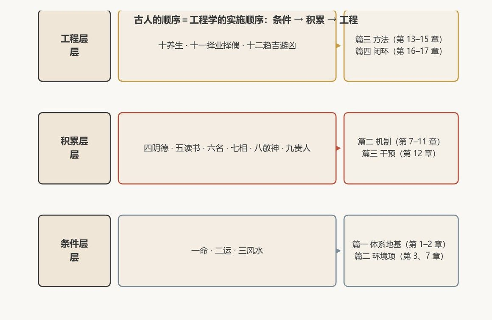
图 3-2 十二要素的三层次结构 传统层次 所含要素 本书对应篇 同构关系说明 条件层 命、运、风水 篇一（体系地基）+ 篇二（环境项） 先认清不可控与半可控的条件如何划定机遇域 积累层 阴德、读书、名、相、敬神、贵人 篇二（机制）+ 篇三（干预） 六项都是可投资本 ：信任、认知、符号、信号、承诺、网络 工程层 养生、择业择偶、趋吉避凶 篇三（方法）+ 篇四（闭环） 时间预算、关键决策、风险控制——工程学落地三件套
注：古人把“认清条件”排在“攒资本”前面，把“攒资本”排在“做工程”前面——这与工程学的实施顺序完全一致。
这张表是本章的核心论证，值得多说两句。
古人没有概率论，没有博弈论，没有测量学。他们只有一样东西：几百年的观察 。观察什么呢？观察什么样的人最后过上了什么样的日子。十二要素是这份观察的蒸馏，而蒸馏出来的顺序——条件、积累、工程 ——恰好是任何系统工程的第一课：先勘察现场，再备料，再施工。顺序错了，工地就塌。
这解释了一件让很多人困惑的事：为什么一份“封建迷信”清单里的顺序，到今天看依然大体不错？因为它压缩的不是理论，是经验 。三百年里无数人把顺序排错——不认条件就猛干、不攒资本就下注、不做风控就上杠杆——他们都成了清单的对照组。清单活下来，靠的是幸存者偏差的反面：它是失败者的墓志汇总出来的 。
当然，同构不等于等价。三个差别必须说清：
古人只有清单，没有参数 。“积阴德”知道要积，但积多少、怎么记、何时能用，全靠体感。本书的翻译把每一项都接上读数（第3.7 节总表）。古人只有方向，没有大小 。“读书”知道有用，但不知道存在饱和效应——读到什么程度边际收益下降，古人的清单不回答，本书的 p d e t 古人只有个体视角，没有尺度概念 。十二要素默认主体是一个人（或一家）。团队之运、平台之运在传统清单里没有位置——因为古代社会的组织形态还没把这两个尺度变成主要变量。本书第5章补上这一维。
3.7 3.7 总表：十二要素—参数对应（本章产出物） # 工具与产出物 公式与参数 表格 行动工具 篇幅 一坐 含表
表 3-1 十二要素—参数对应总表（速查版；完整注释版见附录 G）
成本
约 594 字 · 约 1.5 分钟 · 含公式，附人话翻译
结构
2 段 · 含表 · 含插图
备注
《第3章 传统运气观的体系化重构：十二要素的理论对应》
本节全文 · 约 594 字
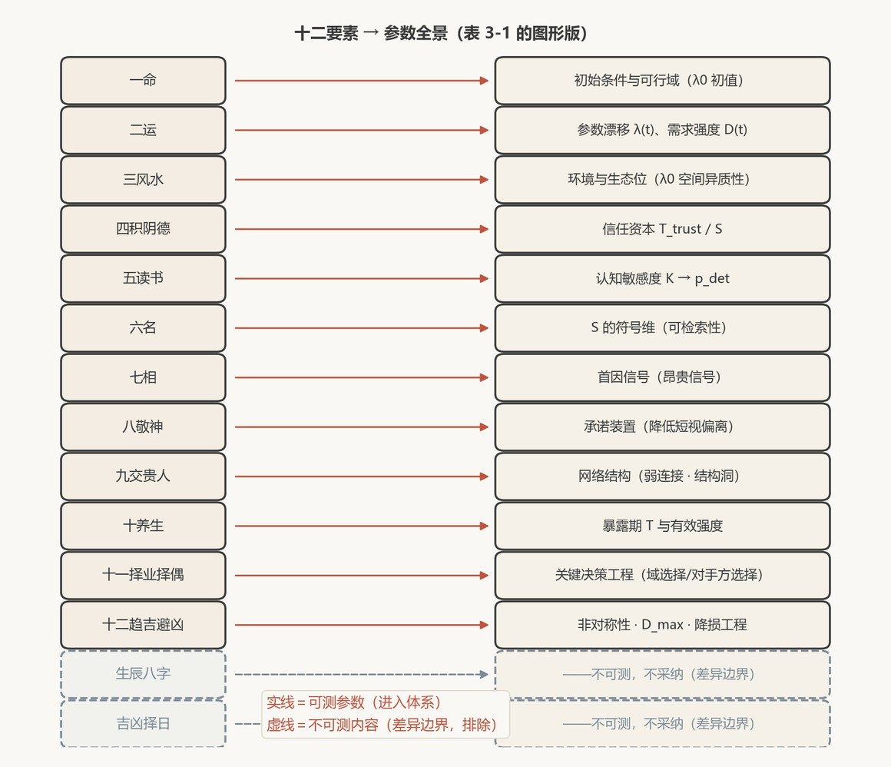
图 3-3 十二要素—参数对应全景 表 3-1 十二要素—参数对应总表 （速查版；完整注释版见附录 G）
# 要素 本书参数 核心机制 可测指标 深讲章 一 命 λ0 初值、机遇域初始边界初始条件决定可行域，不决定轨迹 先赋资源存量 第2、13章 二 运 λ(t ) 、D(t) 参数漂移非平稳环境下的时变参数 行业景气、政策周期序列 第7、16章 三 风水 λ0 空间异质性、网络中心度环境决定机会密度 机构密度、网络位置 第7、15章 四 积阴德 T t r u s t S 履约历史的重复博弈积累 履约率、复购率、引荐数 第9、14章 五 读书 K p d e t 认知存量抬高识别概率 测评成绩、信号命中率 第8章 六 名 S 标签降低他人检索成本 可检索性、被提及量 第9章 七 相 p c o n v 首因信号传递质量信息 形象评分、首面转化率 第9、17章 八 敬神 承诺装置 制度化的自我约束与风险谦卑 履约率、止损执行率 第11、14章 九 交贵人 λ 、p d e t p c o n v g 弱连接与结构洞带来机会与背书 高价值连接数、引荐数 第7–9、14章 十 养生 T 暴露期是唯一可近确定延长的乘数 有效工作年数、中断频次 第7、13章 十一 择业择偶 域选择 + 对手方选择 可逆性分级的关键决策工程 决策矩阵评分 第13章 十二 趋吉避凶 D m a x 限制下行、保留上行 最大回撤、冗余度、杠杆 第11、13章
注：十二要素无一遗漏地映射到本书参数体系——能测的全部接上了读数，不能测的全部写进了差异边界。
可核证据 公式与参数 可核数据 篇幅 一坐
本章需要一个用数据说话的检验：“五读书=K”这个翻译，在宏观数据上站得住吗？
成本
约 681 字 · 约 2 分钟 · 含公式，附人话翻译
结构
4 段
备注
《第3章 传统运气观的体系化重构：十二要素的理论对应》
本节全文 · 约 681 字
本章需要一个用数据说话的检验：“五读书=K
最能检验它的，不是“读书人的成功故事”（那是幸存者偏差的重灾区），而是代际流动性 ——教育在多大程度上让下一代的起点不再完全由上一代决定。这个领域有跨国可比的公开计量研究：
研究者用“代际收入弹性”（父辈收入对子女收入的预测力）衡量阶层黏性。全球多个经济体的数据显示：北欧国家该值普遍在 0.2 上下（父辈收入优势传递给子女的不到四分之一），美国约 0.4–0.5，中国多项研究估计在 0.4–0.6 之间（F-26 已核：世界银行全球流动性数据库 GDIM 与 Chetty 等美国研究、国内城镇代际弹性估计的跨国可比口径）。 同一批研究显示，教育年限是削弱代际弹性最强的变量之一：受教育年限每提高一档，父辈收入对子女收入的预测力显著下降〔待核：具体效应量与置信区间〕。 这两个发现放回本书的框架，说的正是“五读书”的参数化翻译：读书抬高的是 K ——它不直接给你结果，它改变你能看见和够得着的机遇域边界 。在个人层面，这表现为“同一份行业新闻读出不同判断”（第8章）；在宏观层面，就表现为教育对代际弹性的压缩。古人的“五读书”排在第五位、阴德之后——读书不是最快的积累（不如贵人提携立竿见影），但它是分布最稳、方差最小、最不会被没收 的积累。
同时要按案例纪律补上另一半：教育只是削弱而非消除黏性——即使在教育高度普及的经济体，家庭背景仍然显著影响子女的机会结构（这正是“一命”那条在数据里的回声）。读书改变概率分布的形状，不取消初始条件的位置。 这句话同时是对“读书无用论”和“学历万能论”的否定，两个极端都不符合数据。
可执行清单 行动工具 篇幅 一坐
对着表 3-1，给自己十二项各打一个分（1–5 分，凭直觉，两分钟打完）。
成本
约 249 字 · 约 1 分钟 · 不需要任何数学基础
结构
3 段
备注
《第3章 传统运气观的体系化重构：十二要素的理论对应》· 本章交付的动作
本节全文 · 约 249 字
对着表 3-1，给自己十二项各打一个分（1–5 分，凭直觉，两分钟打完）。
然后只看一件事：你的最低分落在哪个层次？
落在条件层（命、运、风水）——你的问题多半不在努力，在场子；去第7、13、15章找换域的算法。 落在积累层（阴德、读书、名、相、敬神、贵人）——你在吃老本；去第8–10章找攒资本的具体方法。 落在工程层（养生、择业择偶、趋吉避凶）——你的积累没有被用起来或没有被保护住；去第11、13章补上落地与风控。 十二个分数不用给任何人看。但请把这张纸留着——第12章的运气审计会拿它与系统版量表对答案。
深水区（进阶·可跳过） 【进阶 · 可跳过】
版本流变与出处甄别
十二要素没有“原本”——它是层累地造成的。可考的层积至少有三段：
核心层 （清·文康《儿女英雄传》第三十八回）：仅“一命、二运、三风水、四积阴德、五读书”五项。原书语境是讽刺术士妄言祸福，不是正面立论——这一点常被引用者忽略。扩展层 （清末民初，民间相书与蒙学材料）：“六名、七相、八敬神”以下各条陆续加入，各地文本次序不一。续造层 （当代网络流传）：“十三遇人且行善”“十四……”等更长续句，均无早期文献依据。本书取十二要素版本的方法论理由：核心五项有明确文献锚点；中间七项虽系民间层累，但流传广、语义稳定，作为“研究对象”合格；续造部分流传时间短、文本不稳定，不取。对“层累文本”，引用其社会存在，不虚构其权威出处 ——这是与传统文献学一致的做法。
跳过本框不影响后续阅读。
【进阶 · 可跳过】
“不采纳清单”的方法论理由：为什么排除线不是文化立场
本章每条都写了“差异边界”，四类排除反复出现：面相断命、方位吉凶、笔画吉凶、流年占验。有读者会问：这是不是以科学之名贬低传统？
排除的统一标准只有一条，而且是程序性的：凡是给出了可检验预测、而检验结果不支持的内容，排除；凡是不给出可检验预测的内容，标记为“非知识主张”，移出研究范围但不作真值判断。 举例：姓名笔画吉凶隐含的预测是“同笔画者命运相似”，可检验，不被支持——按证据出局。而“敬神之诚”是否真的上达神明，不构成可检验预测——标记为信仰内容，本书既不采纳也不否定，只研究其行为效应（承诺装置）。
这条程序性标准的好处是双向的：它既防止玄学混入体系，也防止本书越界去裁判信仰。划界，而不是宣战 ——这也是第17章伦理讨论的预演。
跳过本框不影响后续阅读。
闭环校验 与前置公设是否冲突 ：无冲突。十二要素的翻译全部落在三公设框架内：可分解（每条对应链条环节或参数）、可观测（每条给出代理指标，不可测者降级）、可干预（每条给出工程手段，无手段者入差异边界）。是否新增概念需回写术语表 ：新增“条件层／积累层／工程层”（结构概念，非参数）、“承诺装置”（已回写）、“弱连接”（引格兰诺维特术语，标注外来属性）。已同步 system_doc。是否产出可测指标或工具 ：产出表 3-1（十二要素—参数对应总表，附录 G 的正文版）与图 3-2 三层次同构图。传统回响（本章的特殊说明） 本章本身就是“传统回响”的总源。此后各章的“传统回响”小栏，一律回指本章的对应条目，不再另行展开，也不再引入第3章之后才出现的新对应——避免同一要素在不同章被翻译成不同参数 。速查就用表 3-1。
外部对话 与万维钢《佛畏系统》 ：这本书把“运气可以设计”的观念系统地带入中文世界，功不可没；它谈“系统运气”时的核心直觉——好系统让运气有更多落点、坏系统让一次坏运气毁掉一切——与本书的回路之运（L5）与收敛（第11章）高度共鸣。本书与它的差别在构造上：它以专栏文章的形式点到即止，本书给出参数、读数与工具；它的“系统”是一个比喻，本书的“系统”是一组可检验的方程（第4、6章）。
与“化约主义”的批评者 ：把十二要素翻译成参数，难免被批评为“把传统文化化约成了工程表格”。回应分两层：其一，本书从不宣称翻译穷尽了十二要素的全部语义——“积阴德”里的道德庄严、“敬神”里的终极关怀，都在本书的范围之外，而且本书明确说它们不属于工程学 ；其二，化约的目的是可检验，可检验的目的是不让这份三百年经验清单继续停留在“信不信由你”的状态。为传统智慧装上读数，恰恰是对它最认真的一种尊重。
本章三句话 第一，十二要素是古人用经验语言写下的影响因素清单，十二条全部可以在本书的参数体系里找到对应——能测的接读数，不能测的写明排除。
第二，三层次结构（条件—积累—工程）与全书四篇、与工程学的实施顺序完全同构：先认条件，再攒资本，最后做工程。
第三，对传统最好的态度不是背诵也不是打倒，而是翻译——翻译成可以量、可以改、可以复盘的东西。
篇一·体系地基
第4章 运气分类法（一）：五机制与增益层重整 9 / 9图 4-1 明亮大厅里的五扇门，每扇门后是不同的风景。运气不是一种东西，是五种东西——走错门的人，使劲推也没用。 【题记】名不正，则言不顺；言不顺，则事不成。——《论语·子路》
第一，把运气分类这件事，前人做过三次，但三次用的不是同一把尺子——于是拼在一起时“第五种运气”“团队之运”和“盲目的随机”被摆成了同一排，这不是知识，是杂物抽屉。
第二，本书把三把尺子拆开、各归其位：生成机制 归机制层（L1–L5），联结结构 归增益层，主体尺度 归尺度层（下一章）。
第三，分类的用处不是学术洁癖：你得知道运气有哪几种，才能诊断自己缺哪一种 ——本章末尾的 20 题矩阵，就是为此准备的。
案例与直觉 篇幅 一坐 主案例
先看一个常见情形（复合案例，非实录，细节作了模糊处理）。
成本
约 650 字 · 约 1.5 分钟 · 不需要任何数学基础
结构
9 段
备注
《第4章 运气分类法（一）：五机制与增益层重整》
本节全文 · 约 650 字
先看一个常见情形（复合案例，非实录，细节作了模糊处理）。
毕业十周年的同学会，包间里坐了两桌。散场时如果你在场，会听到五个人各自说了一句关于运气的话——
老周 干了十年投行，他说：“我就是赶上 2014 年前后那一波，进了个好赛道。现在让我重新毕业一次，未必进得去。”他说的运气，是时代给的一波红利 。
阿蓝 是自媒体作者，她说：“我爆款就是多，因为我发得就是多——三百多条里火了两条。别人只看到两条火的。”她说的运气，是大量尝试换来的命中 。
陈工 是一家检测公司的技术负责人，他说：“前年那条新国标一发布，全公司就我一个人在第一时间意识到检测设备要换代——就那一下，我现在的位置就定了。”他说的运气，是机会摆在所有人面前，只有他认出来了 。
小方 是设计师，她说：“我活儿不差，但没火过。我同学水平跟我差不多，就因为她在一个展会被一个大 V 转发了一次，现在档期排到明年。”她说的运气，是被选中 ——同样的东西，机会落在了别人头上。
老韩 开了家小软件公司，他说：“我运气最好的一件事，是第一年那个亏了三十万的项目。因为它丢给我三个后来的客户，还逼着我改了产品方向——没有那次亏损，我早死了。”他说的运气，是一次结果变成下一次机会的入口 。
散场了。五个人互相说“你运气真好”，心里都不服气——因为他们五个人说的根本不是同一种东西。
这不是语言问题，是分类问题。而分类问题是实操问题的前奏：老周需要的不是阿蓝的办法，阿蓝的办法救不了陈工，陈工的问题小方最懂但答不了，老韩说的那件事五个人都没听懂。分不清运气种类的人，会拿别人的药治自己的病。
概念与机制 表格 可核数据 篇幅 一坐 含表
运气分类这件事，前人认真做过三次。
成本
约 1,093 字 · 约 3 分钟 · 不需要任何数学基础
结构
10 段 · 含表
备注
《第4章 运气分类法（一）：五机制与增益层重整》
本节全文 · 约 1,093 字
运气分类这件事，前人认真做过三次。把三份清单摆在一起，是本章一切工作的起点。
第一份：奥斯丁的四分类。 医生出身的研究者詹姆斯·奥斯丁在他关于创造与机遇的著作中，把运气分成四类：①盲目的随机性 （blind luck，纯粹撞上，与你的行为无关）；②跑出来的机会 （luck from motion，行动量大的人撞上更多）；③有准备的头脑 （luck from preparation，知识储备让你认出别人看不到的）；④人设的吸引力 （luck from personality，独特的人设让机会主动找人）（Austin, 1978/2003〔待核：版本见 fact_check F-16〕）。这是现代第一份可用的运气类型学，本书的四根地基柱子里有四根来自这里。
第二份：“第五种”——系统运气。 中文世界里，万维钢在《佛畏系统》中把“系统运气”作为第五种运气引入：你的系统（做事方法与结构）本身会产生运气——好系统让运气有更多落点、且一次坏运气毁不掉你（万维钢，2022）。
第三份：团队之运与平台之运。 管理实践与组织研究里长期使用另一组概念：一个人的运气有上限，但一支团队、一个平台能“造运”——好团队让成员互相放大机会，好平台给个体送来源源不断的机遇。
问题在哪？
三份清单，分别在三根不同的轴上切蛋糕 ：
来源 分类结果 它实际用的轴 奥斯丁 盲目随机／跑出来／有准备／人设吸引 生成机制 ：运气是怎么产生的“第五种” 系统运气 联结结构 ：事件之间有没有互相强化的回路组织实践 团队之运、平台之运 主体尺度 ：谁在造运
一把尺子量长度，一把量重量，一把量温度——三份测量结果被摆进同一个抽屉，并且按“第一种、第二种……第五种、第六种”编了号。于是产生了两个具体的混乱：
混乱一 ：“第五种运气”与奥斯丁四类被读成并列关系。但仔细看它讲的东西——好系统让机会互相强化、让坏运气毁不掉你——这不是运气的另一个来源 ，而是运气被产生之后如何滚动与保全的结构 。它不在“生成机制”这根轴上。
混乱二 ：“团队之运”被读成“一种更大的运气”。但团队不是新的运气来源——团队之运仍然是机会到达、识别、转化、放大，只是主体从一个人变成一群人，参数量级与时间尺度变了。它不在“生成机制”这根轴上，在“谁在造运”这根轴上。
必须立刻说清本书对这三份清单的态度：这不是谁的错误，这是一个领域早期的正常状态 。任何学科在成型前都经历过清单混杂期——生物分类史在林奈之前同样是一锅粥。奥斯丁的第一份类型学是奠基性的；“系统运气”的直觉（本书完全接受这个直觉本身）在中文世界的影响是开创性的。本书做的不是推翻，是整理 ：把三根轴解开，各归其位——用分类学的行话说，给这个领域补一次“林奈整理”。
概念与机制 篇幅 一坐
整理的结果是一副三维框架。
成本
约 582 字 · 约 1.5 分钟 · 不需要任何数学基础
结构
7 段 · 含小标题 · 含插图
备注
《第4章 运气分类法（一）：五机制与增益层重整》
本节全文 · 约 582 字
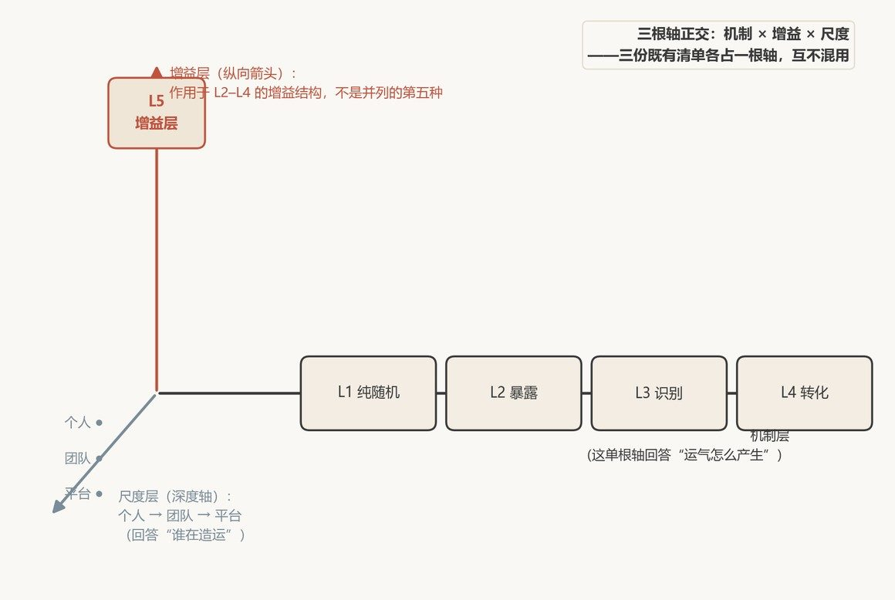
图 4-2 运气五机制—三尺度分类框架 整理的结果是一副三维框架。本章先立两维，下一章立尺度维。
第一根轴：生成机制（机制层 L1–L4） 回答的问题：运气是怎么产生的？ 奥斯丁的四类在此归位，保留其全部内容，换上可测的衣裳：
L1 随机之运 ：外部随机事件命中，与你的行为无因果关联。（老周的那波红利，一半是 L1——时代给所有人的；另一半其实是 L4，见下）L2 暴露之运 ：行动密度抬高机会到达率。（阿蓝的三百条视频）L3 识别之运 ：认知敏感度让你认出机会。（陈工的那条新国标）L4 选择之运 ：显著性与信任决定机会落在谁头上。（小方同学被转发的那一次）第二根轴：联结结构（增益层 L5） 回答的问题：运气被产生之后，会不会自己滚动、自我强化？
“系统运气”的直觉在此归位——但位置变了 ：它不是与 L1–L4 并列的“第五种来源”，而是作用于 L2、L3、L4 之上的增益结构 。这是本章的核心命题，4.5 节专门论证。
第三根轴：主体尺度（尺度层） 回答的问题：谁在造运？ 个人、团队、平台。这不是运气的类型，是运气的实现尺度 ——同一套机制，在不同尺度的主体上实现。第5章专门展开。
隐藏的第四维：价值分布 还有一根容易被忽略的维度：单次机遇的价值分布是重尾的 ——少数机会贡献绝大部分收益。这根维度不改变分类，但改变每一类的策略含义 （4.6 节展开：为什么它让 L4 比 L2 更“值钱”）。
整理完成。现在逐个把 L1–L5 讲透。
概念与机制 公式与参数 可核数据 篇幅 需专注
机制：外部随机事件命中主体，与主体行为无因果关联。
成本
约 2,259 字 · 约 6 分钟 · 含公式，附人话翻译
结构
26 段 · 含小标题
备注
《第4章 运气分类法（一）：五机制与增益层重整》
本节全文 · 约 2,259 字
L1 随机之运：不可控，但可管理 机制 ：外部随机事件命中主体，与主体行为无因果关联。
典型 ：中彩票、遭遇空难、政策突变、时代红利。
可控度 ：不可控。但本书的立场是四个字：不可控 ≠ 不可管理 。你无法决定 L1 是否发生，但你可以管理它的后果结构 ——对上行 L1（横财、红利），管理“接得住”；对下行 L1（事故、灾祸），管理“打不死”。保险、冗余、分散、去杠杆，全是对 L1 的工程动作（第11章）。
可测指标 ：基础概率、收益与损失分布的尾部形态。
边界反例 （误用警告）：把 L1 的结果归因于自身能力，是最古老的认知错误——赌徒赢钱后觉得“今晚手气是自己控制的”。识别 L1 的试金石是问一句：“这件事发生在我身上的概率，与我是谁、我做了什么，有关系吗？” 有关系，就不是 L1。
反例诊断（老周的镜像）：老周的同事老谭，同一年入行、同一波行情，把红利全记成了自己的本事。红利退潮的头两年，他的判断失误接二连三——因为他还在用红利期的参数做决策。诊断问法 ：过去两年我的每一次“成功”，如果剥掉行业的普涨、平台的流量红利、团队的集体贡献，还剩多少与“我这个人”有关？剥完是零的人，不是没有运气，是还没有为自己记过账。修法指向 ：第11章的收敛工程——把 L1 的成果与自己的能力分开记账，是接住 L1 的第一步。
老周的红利要拆开看：赶上那波行情是 L1（对所有从业者一视同仁）；但“进得去那个赛道”是 L4（他被选择了），“十年不退场”是第11章的收敛。一句“我运气好”背后往往混着四种机制 ——这正是分类的必要性。
L2 暴露之运：机会不是等来的 机制 ：行动密度抬高机会到达率。你在场、你出手、你露面，你被命运看见的次数才多。
典型 ：投简历、投稿、路演、参加行业活动、公开输出。
可控度 ：高——五类中最直接可控 的一类。你今晚就能决定下个月多发十条视频、多跑三个客户。
可测指标 ：单位时间有效新接触数 A e f f
工程手段 ：提高有效暴露量；更重要的是换域 ——当边际递减出现时，换一个场子比在原场子加量有效得多（第7章整章讲这个，含那条著名的曲线）。
边界反例 ：“假暴露”——天天在同一个群里冒泡、只跟熟人社交、年年参加同一个圈子的大会。行动量不小，A e f f
反例诊断（阿蓝的镜像）：阿蓝的同行里有一位“全天候活跃者”——所有行业群都有他，每条动态他都点赞，群里提问他必答。三年过去，他的粉丝数与三年前相同。诊断问法 ：翻我过去一个月的“社交时长”，其中多少小时的对象是我过去一年没见过的人？分母很大、分子为零的人，不是在暴露，是在取暖。修法指向 ：第7章的机会暴露日志——只记“新接触”（对象新、信息新、可追踪），一周下来 A e f f
L3 识别之运：机会摆在面前，你认得出来吗 机制 ：认知敏感度（K p d e t
典型 ：弗莱明认出那只霉菌培养皿的价值（他此前研究过溶菌酶与杀菌机制，所以“看得懂”这道题——史料可核，见第8章）；同一份行业新闻，陈工读出设备换代，其他人读到一条消息。
可控度 ：中高。不能一夜积累，但有明确方法：认知复利、跨域迁移、信号训练（第8章）。
可测指标 ：领域知识测评、机会信号识别命中率（给你十条行业动态，你能认出几条藏着机会）。
边界反例 ：两种假识别——①“名词型识别”：知道很多术语，判断力为零（知识被囤积而没有成为模式库）；②“过载型假识别”：信息摄入过量，把每条新闻都识别成机会，等于没有识别。
反例诊断（陈工的镜像）：陈工的团队里有位名校硕士，行业术语张口就来，会议发言无人能驳。但每次真到“要不要跟进”的判断，他都给出“两者都有道理”的结论。诊断问法 ：最近一次机会决策里，我给出的判断是“我觉得会怎样”，还是“如果 X 成立则怎样、如果 Y 成立则怎样”？只会名词和只会“我觉得”的人，K 修法指向 ：第8章的识别自测——给你十条信号，强迫每题给出一个可被后续结果打分的判断，连续三轮命中率低于一半，说明你在领域阈值之下。
L4 选择之运：为什么被选中的是他 机制 ：当机会需要落在一个具体的人头上时（招聘、合作、引荐、转发），人设显著性 S 与信任存量 T t r u s t
典型 ：被内推、被邀请、被引荐、被转发——小方同学那一次。
可控度 ：中。需要长期积累，且依赖他人的认知（你无法直接决定别人怎么想），但你可以系统性地影响“被想到”的概率（作品可检索、标签清晰、履约记录在案——第9章）。
可测指标 ：被搜索量、被邀约次数、被转载量、可检索性。
边界反例 ：靠包装制造的虚假显著性 。买粉、刷量、简历注水——短期抬高读数，一旦被揭穿，信任存量清零，且连带你此后的真实信号也被打折。L4 的工程手段全部以“真实履约”为地基，这是它与 L2 最不同的地方：L2 可以从零开始猛冲，L4 的资产会因一次造假而归零。
反例诊断（小方的镜像）：小方的一位同行把作品集做得光鲜——主页精致、案例齐全，报价一上来就是头部价位。第二单交付即穿帮：作品集里一半项目是“参与”而非“主导”。诊断问法 ：我的公开呈现里，有多少内容经得起“对方找到其中任何一位当事人核实”？推演一遍：对方发一条消息给我作品里提到的甲方，回复会证实我还是拆穿我？修法指向 ：第9章的纪律——S
概念与机制 公式与参数 可核数据 篇幅 一会儿
现在处理本章最重要的一个论证。
成本
约 1,522 字 · 约 4 分钟 · 含公式，附人话翻译
结构
11 段 · 含插图
备注
《第4章 运气分类法（一）：五机制与增益层重整》
本节全文 · 约 1,522 字
现在处理本章最重要的一个论证。
把“系统运气”列为与 L1–L4 并列的“第五种”，直觉上顺，结构上错。检验一个分类设计是否成立，有个老办法：看它的每一类是否在同一根轴上，并且互斥、穷尽其所在层级 。逐条检查“第五种”：
第一问：它有独立的“生成机制”吗？ L1 由随机生成，L2 由行动生成，L3 由认知生成，L4 由他人的选择生成。而“系统运气”呢？拆开看它描述的现象：爆款带来粉丝、粉丝反馈优化内容、老客户的引荐带来新客户——这些不是新的运气来源 ，它们是已经发生的运气（L2–L4 的产物）被结构性地转化为下一轮运气的输入 。它改变的不是“运气从哪来”，而是“来了之后滚多快”。轴不对。
第二问：它与 L1–L4 互斥吗？ 不互斥——回路之运必须搭载在 L2–L4 上才能运转。没有暴露（L2），回路无米下锅；没有转化（L4），回路空转。一种“与其他四类必然共存、不能独立发生”的类型，不构成并列类。关系不对。
第三问：把它并列，会不会丢失信息？ 会。并列摆放暗示读者“五选一”——仿佛一个人可以“主修第五种运气”。但 L5 的真正用法是乘法 ：它问你的是“你的 L2、L3、L4 产出，有多少比例被转化成了下一轮输入”——一个增益系数 g 信息不对。
三问答完，结论：“系统运气”的现象是真实的、重要的，但它在分类结构里的位置是“层”，不是“类”。
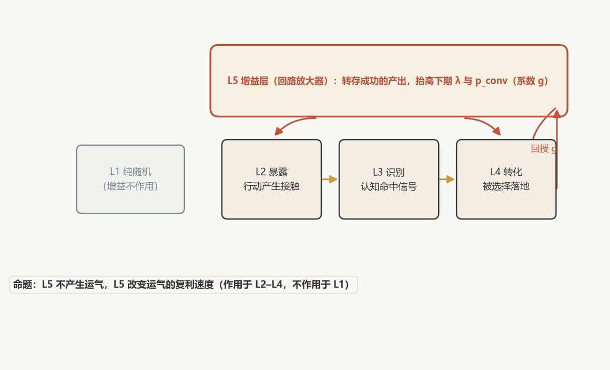
图 4-3 机制层与增益层：L5 的真实位置 所以本书的重整命题是：
L5 回路之运是增益层，不是第五种运气。 它不产生新的运气来源；它改变已产生运气的复利速度。同一个人，同样的暴露与转化水平，回路闭合与否，五年后的差距不是加法差，是指数差。
这个重整不只是分类洁癖，它有三条实打实的后果：
诊断后果 ：一个“运气不好”的人，按五类并列的思路会问“我缺哪一种运气”；按增益层的思路会多问一句——“我的每一次产出，有多少被转化成了下一次的输入？”后者才是多数人真正的短板（第10章的数据方向）。策略后果 ：增益层意味着优先级判断变了 。如果你的回路没闭合，先补回路，再加暴露——往一个漏的桶里加水，加得越快漏得越快。风险后果 ：增益层是双刃的——它放大好运，也放大坏运（第10章“回路未闭合就加杠杆”、第11章的反面案例）。并列的“第五种”直觉读不出这层对称性。老韩——同学会上那个说“亏三十万的项目是我最好的运气”的人——是增益层最好的注脚。他那次亏损是 L1 级别的坏运（项目本身失败是外部冲击），但他把一次下行结果接进了自己的回路 （三个客户、一次产品转向）——增益层的结构决定了同样的坏运在他那里被转化为输入。这不等于是好事，但请注意本书的分寸：老韩做的事不是“把坏事变好事”的心灵功课，是“把一次性结果转化为下一轮输入”的结构设计 ——怎么设计，第10章给画布。
增益层的反例同样存在，值得单独给一段（老韩的镜像）：老韩的同行老柯，同样亏过一个项目，但复盘结论是“运气差”——项目团队解散、客户断了联系、教训留在了口头。同一场坏运气，一个接进了回路（三个客户、一次转向），一个没有——差别不在运气，在有没有“把一次性结果转化为下一轮输入”的结构 。伪回路的三种常见形态：①把关联 当回路——“我粉丝涨了”不等于“粉丝会带来下一次机会”（中间缺一条转存管道）；②把一次性红利 当回路——中奖式的爆单不是回路，是 L1，它不会自我重复；③把依赖 当回路——离了某个平台、某位大哥就归零的“稳定来源”，是单向的脐带，不是双向的环。诊断问法 ：如果明天我的主要渠道突然消失，我的机会存量里还剩多少？归零的人，拥有的从来不是回路，是通道。修法指向 ：第10章的回路画布——把每次成功的转存通道画出来，画不出来的地方，就是你的增益层缺口。
4.6 4.6 隐藏的维度：重尾，或“为什么被选中比多试更值钱” # 概念与机制 公式与参数 可核数据 篇幅 一坐
分类立完，还有一根维度必须现在讲，因为它改变每一类运气的性价比。
成本
约 1,175 字 · 约 3 分钟 · 含公式，附人话翻译
结构
12 段 · 含插图
备注
《第4章 运气分类法（一）：五机制与增益层重整》
本节全文 · 约 1,175 字
分类立完，还有一根维度必须现在讲，因为它改变每一类运气的性价比 。
重尾分布 ：单次机遇的价值 V s i n g l e 少数机会贡献绝大部分收益 ——多数尝试颗粒无收，头部几次定终身。这不是文学修辞，是可测的经验规律。
先给生活化的直觉。设想两种工作模式：
模式甲 ：一百次小机会，每次收益差不多（比如打零工）；模式乙 ：一百次尝试，其中九十八次收益为零，两次各是你年收入的十倍。期望值可以相同，但策略含义天差地别 ：模式甲里，努力与回报近乎线性，“多干多得”成立；模式乙里，你全部的成败押在“那两次会不会落在你头上”——次数本身不保证任何事，被选中才保证。 而现实中的机遇分布（内容创作、创业、求职、科研成果、投资）普遍更接近模式乙。
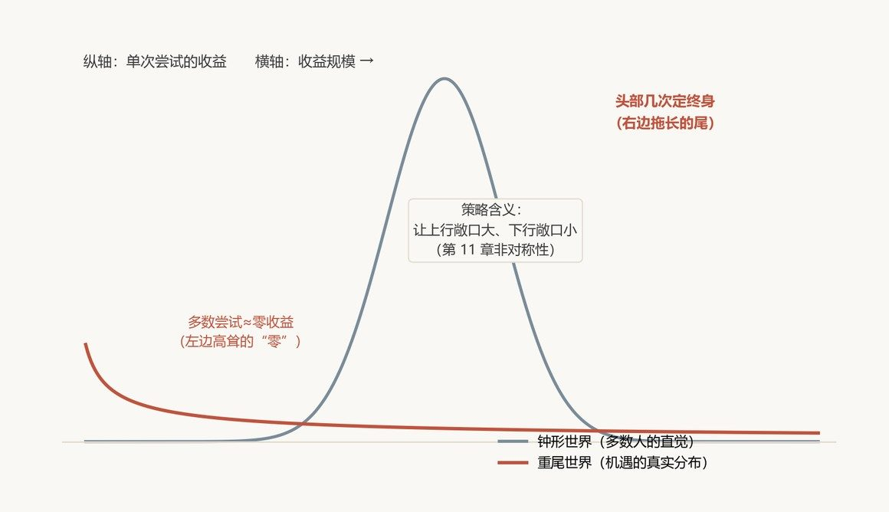
图 4-4 机遇价值分布：钟形与重尾 重尾维度的策略后果，是三句不太好听但必须说的话：
第一句：在重尾世界里，L2（多试）是入场券，不是胜负手。 多试提高你撞上“那一次”的次数，这不假——阿蓝的三百条视频确实必要。但阿蓝自己心里清楚：三百条是必要条件，火的那两条不是“发得多”的直接函数。把入场券当胜负手，是 L2 型人才的经典陷阱。
第二句：L4（被选中）的单位投入回报，在重尾世界里系统性高于 L2。 一次被大 V 转发，胜过一百次自说自话——不是因为转发有魔法，而是因为转发把你直接放到分布的头部区域 。这就是为什么小方盯着“被选中”耿耿于怀：她的直觉没错，她缺的确实是 L4，而不是更多努力。第9章会讲 L4 怎么攒——它不是等来的，但它的攒法与 L2 完全不同（慢、重、以信任为地基）。
第三句：L5（增益层）在重尾世界里的作用被指数放大。 回路闭合意味着每一次头部命中被转化为提高下一次命中概率的存量；回路断开意味着每次命中都是一次性烟花。重尾 × 回路，是“运气滚起来”的全部数学结构（第10章）。
【进阶 · 可跳过】
重尾与期望值：两个常被混淆的账
重尾分布的期望值存在且有限（对尾部指数 αv > 1 的幂律），但样本均值收敛极慢 ——你前一百次尝试的平均收益，对长期期望几乎没有预测力。这带来两个实操后果：
不要用前期样本均值评估自己 。前五十条视频的平均播放量，不是“你的水平”，是噪声。评估应该看：接触量（L2 的输入指标）与命中后的转化质量（L4 的输出指标），而不是平均收益。“多试”的价值在尾部 。在重尾下，增加尝试次数的主要收益不是提高平均值（几乎不提高），而是提高触达头部区域的次数 ——这正是阿蓝“三百条里火两条”的数学结构（Simonton 对创造性产出的研究总结出相近的规律：产出量与总成功量近似线性，而单次命中率大体恒定〔待核：Simonton 等几率规则（equal-odds rule）的原文表述与样本〕）。尾部指数 αv 的估计方法（幂律拟合与拟合优度检验）见附录 C；本书不要求读者会算，只要求知道这个数字存在、且决定你的策略 。
跳过本框不影响后续阅读。
可核证据 公式与参数 可核数据 篇幅 一坐
本章的 C 级案例回到同学会上的阿蓝，看看她的直觉在公开数据里站不站得住。
成本
约 652 字 · 约 1.5 分钟 · 含公式，附人话翻译
结构
4 段
备注
《第4章 运气分类法（一）：五机制与增益层重整》
本节全文 · 约 652 字
本章的 C 级案例回到同学会上的阿蓝，看看她的直觉在公开数据里站不站得住。
创作者数据的重尾结构 。多项针对公开平台的研究与平台年报显示：内容生态中流量与收益高度集中于头部——少数创作者与少数作品占据大部分播放量，而多数参与者长期处于长尾〔待核：具体平台研究、统计年份与口径，见附录 C〕。以学术发表为例——这是数据最干净的“创作者生态”：对科研人员产出分布的多项计量研究显示，论文与引用高度集中于少数研究者（洛特卡分布与普赖斯定律描述的现象），且高产出者的总命中数大致与产出量成比例 （Simonton 的研究传统）〔待核：洛特卡 1926 年科学生产率分布的原始口径；Simonton 系列研究的样本〕。
这两条数据放回本章框架，各验证一个命题：
重尾命题 （4.6 节）：收益分布的重尾结构在多个公开生态中稳定存在——不是阿蓝的个人体验，是环境属性。策略含义：她把“多发”当唯一策略，是把入场券当胜负手。 “多试的必要但不充分”命题 ：产出量与总成功量大致成比例（尝试多者命中多），但单次命中率不随产出量上升 ——阿蓝的三百条提高了她“有过两条爆款”的概率，没有提高“第三百零一条成为爆款”的概率。策略含义：加量有边际，攒 L4（被转发的结构——标签、作品集、可检索性）与 L5（把粉丝转化为反馈回路）才是破局方向。 按案例纪律补另一半：重尾数据不等于“普通人注定陪跑”。头部集中度在不同平台与不同时期差异很大，且平台红利期（λ0 高的窗口）对新人相对友好——这是第5章平台尺度与第7章换域时机的伏笔。重尾描述的是分布形状，不是个人判决。
工具与产出物 行动工具 篇幅 一坐
分类法的最终检验标准：它能不能帮你定位自己的问题。
成本
约 803 字 · 约 2 分钟 · 不需要任何数学基础
结构
4 段 · 含小标题
备注
《第4章 运气分类法（一）：五机制与增益层重整》
本节全文 · 约 803 字
分类法的最终检验标准：它能不能帮你定位自己的问题。 以下是 20 题诊断矩阵（完整使用说明与常模说明见附录 B、E）。
用法 ：每题 1–5 分（1 = 完全不符，5 = 完全符合），凭第一直觉，全部答完约需十分钟。各机制小计 4–20 分。
L1 随机之运（风险底线） 我为最坏情况留了现金或时间冗余。 我避免使用高杠杆或参与负期望的赌局。 我有基本的保险或对冲安排。 我清楚自己能承受的最大损失是多少。 L2 暴露之运（行动密度） 我每月有稳定的“新接触”数量。 我的新接触中，有相当比例来自我原有圈子之外。 我会主动投稿、路演、公开表达，而不是等待被发现。 我记录了自己的行动量，并知道它的边际收益是否在下降。 L3 识别之运（认知敏感度） 我对所在领域的关键信号有系统的判断标准。 我能把其他领域的模式迁移到自己的处境。 我有定期的信息摄入与复盘机制。 我能说出最近半年我“看懂了什么以前看不懂的东西”。 L4 选择之运（人设显著性） 别人在需要相关能力时，会第一时间想到我。 我有可被检索的作品或公开记录。 我的定位清晰到能用一句话说清“我是做什么的”。 我的履约记录没有让我失去过重要合作。 L5 回路之运（增益层） 我的成果会带出下一次机会，而不是一次性结束。 我有把流量/客户/成果转化为下一轮输入的具体机制。 我身边有稳定的合作关系，而不是每次都重新找。 我把个人方法变成了团队可沿用的制度或工具。 结果解读 ：
找出小计最低的 1–2 个机制 ，作为未来三个月的干预优先项（各机制对应章：L1→第11章，L2→第7章，L3→第8章，L4→第9章，L5→第10章）。 特殊规则：L1 低分优先修复 ——底线下滑会抹平其他一切积累。L1 不到 12 分的人，先读第11章，再谈其他。L5 的 20 题里第 20 题是为团队/管理者预埋的——如果你还没有团队，把它理解为“我的方法有没有变成别人能用的东西（文档、模板、教程）”。 注：这张表不测“你运不运气好”，它测“你的运气短板在哪一段”——前者没法改，后者能改。
可执行清单 行动工具 篇幅 一坐
现在就做 4.8 节的 20 题矩阵（十分钟），把五个小计写下来。
成本
约 178 字 · 约 1 分钟 · 不需要任何数学基础
结构
3 段
备注
《第4章 运气分类法（一）：五机制与增益层重整》· 本章交付的动作
本节全文 · 约 178 字
现在就做 4.8 节的 20 题矩阵（十分钟），把五个小计写下来。
然后做一件多数人不会做的事：把分数给一位熟悉你的同事或伙伴看，请他凭对你的观察再打一遍你的分。
两遍分数的差，本身就是信息：差距大的那类，要么你高估了自己（常见于 L3——人人都觉得自己识别力不错），要么你的积累还没被任何人看见（常见于 L4——“我明明做了，但没人知道”）。前者去第8章，后者去第9章。
深水区（进阶·可跳过） 【进阶 · 可跳过】
分类设计的判定标准：互斥、穷尽、同轴
本章用“三问”检验了“第五种运气”的并列资格，这里补出这套检验的完整版，供你检验任何分类（包括本书自己的）：
同轴检验 ：所有类别是否按同一判据划分？（奥斯丁四类同按“生成机制”——成立；“四类＋第五种”不同轴——不成立）互斥检验 ：任一事件是否至多属于一类？（一次“被转发后涨粉”同时命中 L4 与 L5 作用——注意：命中 L4 的是事件 ，L5 描述的是事件后的结构 ，二者不在同一描述层面，故不违反互斥；若把 L5 当类，违反。）穷尽检验（在其层级上） ：机制层是否还有遗漏的生成机制？候选者如“继承之运”（直接继承资源）——本书将其归为 L1（命中与行为无关）加初始条件（第2章），不单列；“恶意之运”（对手方的针对性伤害）——归为下行 L1 加第11章的对冲问题。穷尽性是开放问题：若读者找到无法归入 L1–L4 也不宜归入初始条件的生成机制，欢迎作为对本书分类的证伪提交 （第16章的开放接口）。跳过本框不影响后续阅读。
【进阶 · 可跳过】
为什么“多试”不能替代“被选中”：重尾下的两种投资
把第 2 章的期望公式用到极致：E[V] = E [N l u c k V s i n g l e V s i n g l e 头部位置由选择过程（L4）而非尝试过程（L2）分配 。
一个粗算例（演示值）：设每次尝试收益为 0 的概率 98%，为大额 V* 的概率 2%，则 E[V s i n g l e 。“被选中”型干预（进入头部渠道，如一次关键合作）的效果是把某次尝试的 V 从普通值提到 V 的量级——它改变的是乘积的第二因子，且杠杆巨大；“多试”型干预只改变第一因子，且受时间预算线性约束。当 V*/普通值 > 50（重尾越重，该比值越大），被选中型干预的边际回报系统性占优。这就是小方的直觉在数学上的着落点。
跳过本框不影响后续阅读。
闭环校验 与前置公设是否冲突 ：无冲突。L1–L4 是公设一（可分解性）的分类化表达；每类的可测指标落实公设二；每类的工程手段落实公设三。是否新增概念需回写术语表 ：新增 L1–L5 中文名与增益层定位（已与 taxonomy.md v1.0 定稿一致）、重尾/尾部指数 αv （已回写）、“同轴/互斥/穷尽”分类学标准（工具性概念，记入 system_doc 附录注记）。是否产出可测指标或工具 ：产出运气缺口诊断矩阵（20 题，附录 B/E）与三轴分类框架图。传统回响 十二要素在五机制的框架下可以再读一遍（对应总表见第3章表 3-1）：
一命、二运、三风水 横跨 L1 与初始条件——条件层管的是“你被分配到哪种分布里”；四积阴德、六名、七相、九交贵人 清一色落在 L4 选择之运 ——古人早就发现，人际层面的运气大头不在“碰上”而在“被选”；五读书 独占 L3 识别之运 ；十养生 管暴露期，是 L2 与 T 的交集 ；十二趋吉避凶 管 L1 的下行管理 ；而最有意思的是：十二要素里没有一条单独对应 L5 增益层 ——古人的清单描述的是“一次性的德与命”，“让成果滚动起来”这个维度，古人只以“家业”“香火”的形式隐性存在（第5章尺度维与第14章会补完这个空缺）。 外部对话 与奥斯丁 ：本书的机制层 L1–L4 完整地站在他的四分类上——这不是客气，是学术事实：第一份可用的运气类型学是他建立的。本书的修订只有一处、但牵动全身：指出他的四类与后人追加的“系统运气”不同轴，并把后者重整为增益层。这个修订不减少他四类中的任何一类，只是把杂物抽屉换成了工具架。
与万维钢《佛畏系统》 ：把“系统运气”带给中文读者，是这个话题在中文世界最重要的一次推进；他关于“好系统让运气有落点、坏系统一次坏运就毁掉”的直觉，本书全部接受，并在第6章（闭环）与第11章（收敛）给出机制化版本。本书的差异仅在结构定位：系统运气描述的不是运气的第五个来源，而是运气获得之后的滚动结构 。把它画在 L2–L4 的上方而不是旁边，读者会得到完全不同的行动指令——并列画法让人想“去找第五种运气”，层叠画法让人检查“我的产出有没有接回我的输入”。
本章三句话 第一，运气按生成机制分为四类：随机之运、暴露之运、识别之运、选择之运——外加一个作用于后三类之上的增益层（回路之运），它不是第五种运气。
第二，机遇的价值分布是重尾的：多数尝试颗粒无收，头部几次定终身——所以“多试”是入场券，“被选中”才是胜负手。
第三，分类的用途是诊断：20 题矩阵测出你的短板机制，五类运气各有各的修法，拿别人的药治自己的病是多数人运气管理的第一个错误。
篇一·体系地基
第5章 运气分类法（二）：个人之运、团队之运、平台之运 9 / 9图 5-1 三层塔：底层一人独行，中层一群人协作，顶层一个开放的平台。不是三个世界，是同一个世界的三个放大倍率。 【题记】力不若牛，走不若马，而牛马为用，何也？曰：人能群。——《荀子·王制》
第一，上一章把“运气有哪几种”讲完了；本章讲“谁在造运”——个人、团队、平台，同一套机制在三个尺度的主体上实现。
第二，尺度不是运气的新类型，是运气的放大倍率 ：参数相同、量级不同、时间尺度不同——而量级的不同，大到足以改变策略。
第三，跨尺度有两条路——个人方法上升为团队制度、团队信誉沉淀为平台位置——但每一条路都有失效模式 ，多数人的问题不是不想升维，是在升维条件不具备时硬升。
5.1 5.1 主案例：从一个人的贵人到一群人的契约 # 案例与直觉 公式与参数 篇幅 一坐 主案例
先看一个常见情形（复合案例，非实录，细节作了模糊处理）。
成本
约 1,078 字 · 约 3 分钟 · 含公式，附人话翻译
结构
7 段
备注
《第5章 运气分类法（二）：个人之运、团队之运、平台之运》
本节全文 · 约 1,078 字
先看一个常见情形（复合案例，非实录，细节作了模糊处理）。
何工是个技术很好的工程师，三十四岁那年遇到了他的“贵人”——一位赏识他的老总，把他从一个快死的岗位拉出来，给了他一个新部门。此后五年，何工的个人运气链条运转得极好：他技术上有眼力（L3），新部门三年做了两个行业标杆项目（L4 被选择的资本越攒越厚），老总逢人就夸他（λ 被贵人抬高）。典型的个人之运的高水位期。
第五年，公司要新开一条产品线，让何工牵头组队。他把部门里最能干的四个人要了过来——然后，他人生第一次撞上了“尺度问题”：
他按自己的标准要求所有人 ，可他那个标准是他十五年踩坑攒出来的，四个人里只有一个勉强跟得上；他把最难的技术都留给自己 （这是他一贯的靠谱方式），结果团队的 L4 全挂在他一个人身上——他成了部门的天花板，也是部门唯一的单点故障；分功劳的时候他很大方 ，但“大方”是他个人美德，不是团队的分配规则——第二年，最能干的那个手下走了，走的时候说：“跟着何工能学东西，但学完之后呢？”何工没做错什么——他只是把个人尺度的成功经验，原封不动地搬到了团队尺度 。个人尺度的最优解（把一切扛在自己肩上、用个人魅力聚人、以德报怨式的大方），在团队尺度恰好是三个致命伤：能力不可复制、显著性不可分担、分利不成制度。
对照组也在这个案例里。何工的老同事樊总，个人能力公认不如何工，但他带队十年，队里出了三个总监、两个创业合伙人，业内说“樊总带出来的人，抢着要”。樊总的秘诀说穿了不值钱：他从不追求自己是最强的，他追求“跟他干的人三年后行情看涨” ——把个人之运变成团队之运，靠的不是魅力，是制度。
樊总的“让手下行情看涨”落到操作上是三件固定的事，值得列出来对照何工的三处失手：其一，他从不把最难的活留给自己 ，而是把最难的项目拆成“六成交给最能干的人、自己只兜那四成的底”——兜底让新人敢上，放权让新人成长，团队的 L4 因此分布在多个人身上（对照何工的单点故障）；其二，他有一个公开的“出师标准” ：在樊总这里满三年，出去必须能拿到更好的 offer——他把标准写进培养计划，手下人知道自己是被当作“带得出门的产品”在打磨（对照何工手下那句“学完之后呢”）；其三，他每月一次的“行情复盘”会上，一半时间不讲业务，讲“这个月谁被外面挖了、什么价、为什么” ——用市场行情给成员的 S 这就是团队尺度的工程学：把个人的慷慨、眼光、魅力，逐一翻译成能复制、能审计、能传承的规则。
这个案例是本章的地图：从个人到团队到平台，机制不变，但让机制运转的东西全变了。
概念与机制 公式与参数 表格 篇幅 一坐 含表
先立框架。
成本
约 408 字 · 约 1 分钟 · 含公式，附人话翻译
结构
6 段 · 含表 · 含插图
备注
《第5章 运气分类法（二）：个人之运、团队之运、平台之运》
本节全文 · 约 408 字
先立框架。
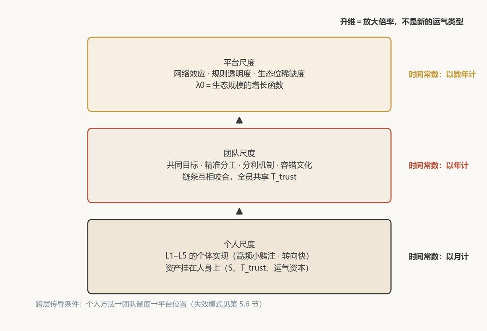
图 5-2 三尺度塔：同一套机制的三种实现 核心命题 ：团队之运、平台之运不是新的运气类型 ，而是 L1–L5 在不同尺度主体上的实现形式。判断依据与上一章同款——同一根轴吗？互斥吗？团队与平台回答的不是“运气怎么产生”（机制层），而是“谁在造运 ”（尺度层）。
三尺度的差异用一张表说清：
尺度 定义 关键实现条件 时间常数 量级直觉 个人之运 个体层面的 L1–L5 实现 时间、注意力、健康（T 以月计 一个人的 λ 有物理上限——你一天只有 24 小时去撞机会 团队之运 组织内部通过信任与协同放大 L2–L5 共同目标、精准分工、分利机制、容错文化 以年计 N 个人的有效暴露 ≈ 各成员之和（前提：圈层不重叠） 平台之运 在生态位上通过网络效应放大 L4–L5 规则透明度、网络效应、生态位稀缺度 以数年计 平台的网络效应使机会增长超线性 于规模
表 5-1 三尺度对照
注：尺度越大，机会的量级越大，但让系统运转的前提条件越多、时间常数越长。
三个尺度各有各的“物理定律”，逐个讲。
概念与机制 公式与参数 篇幅 一坐
个人尺度是全书的默认主尺度（第7–11章的全部机制章都在这一尺度展开），这里只补三点尺度视角的提醒：
成本
约 402 字 · 约 1 分钟 · 含公式，附人话翻译
结构
4 段
备注
《第5章 运气分类法（二）：个人之运、团队之运、平台之运》
本节全文 · 约 402 字
个人尺度是全书的默认主尺度（第7–11章的全部机制章都在这一尺度展开），这里只补三点尺度视角的提醒：
第一，个人尺度的硬上限是时间。 λ 的物理天花板由 T A e f f 升参数 （L3、L4 的积累）与换域 （λ0 重置）。
第二，个人尺度的独特优势是转向速度。 一个人的战略调整以周计——这是团队（以季度计）与平台（以年计）做不到的。所以个人尺度的核心策略是高频小赌注 ：保持暴露、快速试错、及时止损，用速度换概率。
第三，个人尺度的一切资产都“挂在人身上”。 你的 S T t r u s t 个人尺度的运气资本不能继承给团队 ——何工的个人声望救不了他部门的四个人。要跨尺度，资产必须重新封装 ：从“何工很靠谱”变成“这家公司交付记录良好”——从人格变成制度。这正是 5.6 节跨层传导要讲的。
概念与机制 公式与参数 可核数据 篇幅 一坐
团队造运的机制，一句话可以说完：让每个成员的运气链条互相咬合——你的 λ 是我的机会来源，我的 L4 产出是你的 L2 输入，……
成本
约 915 字 · 约 2.5 分钟 · 含公式，附人话翻译
结构
10 段
备注
《第5章 运气分类法（二）：个人之运、团队之运、平台之运》
本节全文 · 约 915 字
团队造运的机制，一句话可以说完：让每个成员的运气链条互相咬合 ——你的 λ 是我的机会来源，我的 L4 产出是你的 L2 输入，全员共享的 T t r u s t p c o n v
但这句话成立需要四个条件，缺一不可：
条件一：共同目标（对齐）。 成员的 λ 不重叠时（各自在不同的圈子里撞机会），共同目标决定撞回来的机会能否被组织吸收。没有共同目标的团队，网络再大也只是“共用一间办公室的几个个人”。
条件二：精准分工（咬合）。 分工要按机制环节 切，不是按职能切：谁负责对外暴露（L2 的专业化——市场、商务）、谁负责识别与判断（L3——技术、研究）、谁代表组织被选择（L4——品牌、交付）。何工的失败一半在这里：他把 L3 和 L4 全捏在自己手里，团队的链条没有咬合，只有他一根轴。
条件三：分利机制（动力）。 这是团队造运的核心枢纽，也是本节 C 级案例的主题。逻辑链条是：团队之运依赖成员持续暴露（L2）与组织履约（T t r u s t 私人投资 （花的是他自己的时间与声誉）→ 若回报与贡献脱钩，理性成员会降低私人投资，团队之运的链条就断了。分利不是道德要求，是团队之运的物理结构。
条件四：容错文化（保护）。 团队尺度的一个隐藏风险是错误的相关性 ：一次失败若导致整个团队的 T t r u s t 切断个人失败与组织声誉的相关性 ，让团队的回撤下界（D m a x
【进阶 · 可跳过】
为什么“分利机制”是四条件中最硬的一条：重复博弈的视角
团队可以看作一个重复博弈系统：成员每期选择“全力投入/保留投入”，组织的分利规则决定其收益矩阵。理论上（无名氏定理的直觉版本），只要折现因子够高（成员预期合作期够长）、且背叛行为可被识别与惩罚，合作可以自我维持。但现实中两个条件经常被打破：①成员流动性上升（合作期预期缩短，折现因子下降）；②贡献不可观测（搭便车不可识别）。
分利机制的工程意义就在于修复这两点：透明的贡献—回报映射 让搭便车可识别；递延的回报结构 （股权、期权、递延奖金）人为抬高折现因子。第14章把这些展开为“分利契约要点清单”。
跳过本框不影响后续阅读。
5.5 5.5 平台之运：占据一个会给你送运气的生态位 # 概念与机制 公式与参数 篇幅 一坐
平台是三尺度中最抽象的一层，先定义清楚。
成本
约 745 字 · 约 2 分钟 · 含公式，附人话翻译
结构
7 段
备注
《第5章 运气分类法（二）：个人之运、团队之运、平台之运》
本节全文 · 约 745 字
平台是三尺度中最抽象的一层，先定义清楚。
平台不是“大公司”，是生态位。 本书说的平台之运，指主体（公司、个人品牌、机构）占据了一个多方参与者经由它相遇 的位置——市场、媒介、社群、集市、行业标准、开源社区。判断你是不是在一个平台位置上，只问一句：你的机会有多少是自己撞来的，有多少是“生态自动送来的”？
平台造运靠三个条件：
条件一：网络效应。 参与方互相吸引——买家吸引卖家，读者吸引作者，开发者吸引用户。网络效应的数学后果是机会增长超线性 于规模：梅特卡夫式经验法则说网络价值近似与用户数平方成正比（注意：这是经验法则而非定律，其适用边界见第15章深水区框）。这是平台之运的源头：λ0 不再是你自己的行动函数，而是整个生态规模的增长函数。
条件二：规则透明度。 平台的规则（谁被推荐、谁被惩罚、收益怎么分）是否公开、稳定、可预期。规则透明度决定两件事：①参与者敢于长期投资 （敢囤货的商家才敢压供应链成本）；②生态的 T t r u s t
条件三：生态位稀缺度。 同一个位置能容纳多少个平台？搜索、社交、电商的历史都说明：网络效应的市场通常只剩一两个大位置。个人与团队选平台（入驻哪个生态），本质是在赌那个生态位的稀缺红利 ——红利期早，λ0 高而竞争熵低；红利期晚，λ0 依然高但竞争熵也高（详见第15章“平台红利期该不该入驻”的决策框架）。
三条件凑齐时，平台之运的量级是另外两个尺度不可比的：个人 λ 的上限是每天 24 小时，团队 λ 的上限是成员时间的总和，而平台 λ 随生态规模指数 增长。但代价是时间常数（以数年计）与条件数量（三个硬前提）——平台上没有“小赌注”，只有重仓建设。
5.6 5.6 跨层传导：上升的两条路与失效的五种方式 # 概念与机制 公式与参数 可核数据 篇幅 一会儿
三个尺度不是三座孤岛。
成本
约 1,413 字 · 约 3.5 分钟 · 含公式，附人话翻译
结构
10 段
备注
《第5章 运气分类法（二）：个人之运、团队之运、平台之运》
本节全文 · 约 1,413 字
三个尺度不是三座孤岛。本书的主体闭环（第1章总图第三层）规定了两条传导路径：
上升路径（个人 → 团队） ：个人方法制度化 。何工的技术判断力（个人 L3）若要变成部门资产，必须封装成“评审清单、设计规范、培训体系”——从“何工觉得不对”变成“流程会拦下来”。判断传导是否发生的标志：该方法在创始人不在场时是否仍然运转。
上升路径（团队 → 平台） ：团队信誉生态位化 。一家公司的交付记录（团队 T t r u s t 经过这个位置的人都变靠谱 ”——认证体系、行业标准、交易市场，都是信誉的生态化封装。
反哺路径（平台 → 个人） ：平台红利向下滴流——生态的增长反过来抬高成员个人的 λ0 与 S 可归属 （署名、案例、公开记录），否则红利只属于平台。
跨层传导的五种失效方式 （对应第1章失效模式清单的尺度版）：
人格不化 ：个人能力始终以人格形式存在（“找他就行”），没有封装为制度——何工的第一教训。制度不养人 ：制度化了，但制度只约束不培养（新人进不来、成长慢）——个人尺度资产成功的团队化，要求制度本身是培养管道 。信誉不溢出 ：团队很有名，成员无名——平台的反哺路径断裂，成员个人资本零积累，人才流失的隐性原因。跨级硬跳 ：个人尺度尚未闭环就直奔平台（个人品牌还没立住就去做“生态”）——三条硬前提一个都不满足，属于本书失效模式“单层闭环无跨层传导”的极端形式。降维误用 ：把平台尺度的打法搬回个人（个人创作者模仿平台烧钱抢量）——量级与时间常数完全不匹配。“人格不化”的解法长什么样？给一个三层封装的实录（复合案例，非实录）。某设计院的总工，年届退休，院里最担心的是“他走了，判断力也走了”。他花了两年做三件事：规则层 ——把自己三十年的审图经验写成一本《审图要点五十条》，每条一句话（“设备层高不足处，先查管线交叉”），这是硬约束；范例层 ——从院里的档案库里挑出四十七个“当年差点出事的项目”，每个写一页“当时看到了什么、拦下了什么、改了哪里”，这是半默会的案例库；师徒层 ——最后两年里，他把审图会改成了带教会：所有项目图纸必须由年轻工程师先讲一遍判断、他再逐条纠正，并且把纠正过程录音整理，作为案例库的附录 。他退休五年后，院里的审图质量没有掉——因为判断力已经从“他的直觉”变成了“五十条规则 + 四十七个案例 + 一套带教机制”。三层封装不是把他复制成一个新总工，是把他的默会知识拆开、分别交给三个载体 ——每一层的损耗都小于“写一本大部头”的总损耗。
【进阶 · 可跳过】
跨层传导失效的机理：为什么“好方法”变不成“好制度”
个人方法与团队制度是两种不同的知识形态：前者是默会知识 （tacit knowledge，波兰尼的术语：我们知道的比我们能说出的多），后者必须是明示规则 （可编码、可执行、可审计）。传导失效的根因是默会知识向明示规则的转换损耗：专家判断里 80% 的信息（情境感知、例外处理、优先级直觉）在编码时丢失，剩下的 20% 成了“看起来像那个方法”的清单。
工程解法不是追求 100% 编码（不可能），而是三层封装 ：①规则层（底线与硬约束，可编码）；②范例层（标杆案例与反例库，半默会）；③师徒层（新人在真实情境中被纠正——把最后那段默会知识的传递交给人而不是文档）。何工需要的不是把直觉写成文档，是“文档 + 案例库 + 带教机制”的三层封装。第14章展开。
跳过本框不影响后续阅读。
5.7 5.7 一个可核的案例：一群人为什么愿意跟着走 # 可核证据 篇幅 一坐
团队造运的条件清单（共同目标、分工、分利、容错），最硬的检验场景是：核心成员为什么愿意长期跟着走？
成本
约 997 字 · 约 2.5 分钟 · 不需要任何数学基础
结构
5 段
备注
《第5章 运气分类法（二）：个人之运、团队之运、平台之运》
本节全文 · 约 997 字
团队造运的条件清单（共同目标、分工、分利、容错），最硬的检验场景是：核心成员为什么愿意长期跟着走？ 中文商业史上有两个可核的公开案例，恰好一正一奇。
案例一：步步高系与“本分”文化。 段永平 1995 年离开小霸王创办步步高，其后的公开商业史显示，步步高系的核心团队表现出罕见的长期追随与裂变能力——体系内先后孵化出多个独立经营主体，核心成员长期留存（公开报道口径，fact_check F-11 已核）。用本章框架拆这个现象：①分利机制 ：步步高系以员工持股与事业部制著称，贡献与回报的映射在制度上是明确的——第 5.4 节条件三的教科书实现；②制度养人 ：体系不断把成熟业务交给内部人独立操盘——个人方法成功地封装成了“造操盘者”的管道，这正是“制度是培养管道”的含义；③容错文化 ：段永平公开反复强调“本分”与“做对的事，把事情做对”，其功能不是道德口号，而是给“长期主义折现因子”定锚——让成员相信合作期足够长，值得持续投入私人资产（时间与声誉）。〔待核：步步高系股权与裂变细节的书面来源整理，见附录 C〕
案例二：芬尼克兹的“裂变式创业”。 这家公司的公开案例（fact_check F-12 已核）更极端：新项目负责人的产生方式是——员工用真金白银入股投票选出，公司高管跟投，选出的人自带强利益绑定。用本章框架读：它把分利机制 推到了极端——把“选人”这件最典型的组织权力，也变成了利益绑定的一部分；投票者的真金白银同时解决了两个问题——贡献识别（用钱投票比用嘴表态的信号成本低得多）与折现因子（入股者的合作期预期自动拉长）。其公开报道的结果是核心团队稳定与多个裂变公司的持续孵化〔待核：裂变公司数量与存续率的最新口径〕。
两个案例合起来验证的是同一组命题：团队之运的核心枢纽是分利机制，分利机制的工程实质是“贡献—回报的透明映射 + 长期折现的制度化” 。何工的“个人式大方”（多分你一点）为什么救不了他的团队？因为大方是一次的、单向的、由他个人决定的——它不构成映射，更不构成制度；成员的理性预期里，明年的大方与否取决于何工的心情，折现因子上不去。
按案例纪律补边界：两个案例都是幸存样本，不能反推“持股/裂变必然成功”——分利机制是团队造运的必要条件 ，不是充分条件（共同目标与容错文化缺一不可；第14章给完整清单）。公开报道也存在样本偏差（成功企业的制度被追溯性美化），所以本书只把它们用于验证机制方向，不用于宣称成功率。
工具与产出物 公式与参数 表格 行动工具 篇幅 一坐 含表
三尺度的分类法最终落到一个决策问题上：你现在该在哪个尺度上造运？
成本
约 794 字 · 约 2 分钟 · 含公式，附人话翻译
结构
6 段 · 含表
备注
《第5章 运气分类法（二）：个人之运、团队之运、平台之运》
本节全文 · 约 794 字
三尺度的分类法最终落到一个决策问题上：你现在该在哪个尺度上造运？
表 5-2 造运主体可行性评估表 （评分 1–5；完整版见附录 B）
维度 评估问题 评分 共同目标 成员能否用一句话说出共同目标？ 精准分工 分工是否随任务动态调整？ 信任存量 关键成员平均合作时长与留存率如何？ 分利机制 贡献与回报是否透明对应？ 容错文化 失败项目的人是否被重新安排而非淘汰？ 规则透明度 规则是否公开、变更是否有预告与申诉通道？ 生态位稀缺度 你所在的生态位是否供大于求？ 网络效应 你的用户/成员是否互相吸引？
注：这张表不测你想做什么，测你的前提条件 支不支持你做——条件不够时，降一级造运不是退让，是工程上的正确。
判定规则 （三条，按顺序执行）：
团队造运 ：优先修“信任存量 + 分利机制”两项——这两项低于 3 分，其他项再高也不构成团队造运的条件（何工的教训：他缺的正是这两项）。平台造运 ：优先修“规则透明度 + 网络效应”两项——同样低于 3 分即不满足前提。两项都低 ：先做个人尺度（第7–11章的全部工具），不要跨级造运 ——这不是保守，是失效模式清单第五条的工程含义：个人闭环都没跑通的人去做生态，等于没学会走就去开高速公路。判定规则之外，还有三个升维时机的问题，供你在“条件已经具备”时做最后确认：
一问：个人环是否已经闭环？ ——第1章五条失效模式，你至少连续两季没有触犯前四条。个人尺度还没跑通就升维，等于把一台漏水的机器装进更大的厂房。二问：升维后，我的个人环谁来维护？ ——升维不是替换，是嵌套：带团队的人往往最先荒废自己的 A e f f K 升维不减个人档位 ——团队多出来的暴露，不能替代你自己的暴露。三问：这次升维的时间常数我付得起吗？ ——团队以年计、平台以数年计。若你的阶段目标在十八个月内，升维带来的红利来不及兑现，正确动作是“租”（加入一个好团队、进驻一个好平台），而不是“建”。能租不建，是时间常数给的最朴素建议。
可执行清单 行动工具 篇幅 一坐
做 5.8 节的八维评估表（针对你现在正在做或想做的那件事打分，五分钟）。
成本
约 198 字 · 约 1 分钟 · 不需要任何数学基础
结构
2 段
备注
《第5章 运气分类法（二）：个人之运、团队之运、平台之运》· 本章交付的动作
本节全文 · 约 198 字
做 5.8 节的八维评估表（针对你现在 正在做或想做的那件事打分，五分钟）。
重点看三处：
如果你测的是“想带团队”——信任存量、分利机制 两项过了 3 分吗？没过，先去补这两项，别急着招人。 如果你测的是“想做平台/生态”——规则透明度、网络效应 两项呢？ 如果两组都低——恭喜你，答案最明确 ：未来十二个月的最优解是个人尺度的 L2–L4（第7–9章），先把个人闭环跑通。这不是让你放弃大目标，是让你按工程顺序抵达它。
深水区（进阶·可跳过） 【进阶 · 可跳过】
尺度转换中的量纲守恒：为什么机制不变、策略全变
“三尺度是同一套机制的实现”——这句话的形式化版本：每个尺度上都能写出同样的期望机遇数公式 E [N l u c k λ ·p d e t p c o n v T 但每个参数的量纲来源变了 ：
个人尺度：T λ 由个人 A e f f 团队尺度：T λ ≈ Σ成员 A e f f 平台尺度：T λ = f(生态规模) 且 f 超线性。 注意团队尺度 λ 的“求和条件”：圈层重叠的团队，其 λ 不等于成员之和 ——这正是“精准分工”条件的数学含义（分工不只是效率问题，是让成员的暴露域互不重叠的结构问题）。何工的四人全从同一部门带出（圈层高度重叠），团队 λ ≈ 何工个人 λ + 一个小增量——他的团队在物理上就不可能有独立的运气。
跳过本框不影响后续阅读。
闭环校验 与前置公设是否冲突 ：无冲突。三尺度是三公设在组织层面的平移——可分解（三尺度各自的 L1–L5 实现）、可观测（表 5-1 的实现条件与指标）、可干预（评估表 + 判定规则）。是否新增概念需回写术语表 ：新增“个人之运/团队之运/平台之运”（尺度层术语）、“圈层重叠度”（团队 λ 的求和条件）、“规则透明度”（平台条件）。已同步 system_doc。是否产出可测指标或工具 ：产出表 5-2 造运主体可行性评估表（附录 B）与跨层传导失效清单（回写失效模式台账的尺度版）。传统回响 十二要素里没有“平台”这个词，但两个条目在本章获得了新读法（对应关系见第3章表 3-1）：
九交贵人 ：个人尺度读作“被提携”；团队尺度读作“核心成员的集体追随”——同一条要素，两个尺度是同构的：贵人网络的本质是重复互惠博弈，而团队正是把这种博弈制度化 的形式。段永平的案例用现代材料重演了这条古训。三风水 ：个人尺度读作“换场子”；平台尺度读作“选生态位”——古人观山水，今人观生态，问的是同一个问题：你所处的位置，会不会自己给你送机会？ 传统清单的缺项也在本章坐实了：十二要素全部以个人（及家）为默认主体，尺度维整体缺席——这不是古人见识短，是前现代社会的组织形态还没把团队与平台变成普通人运气的主要变量。今天不是这样了，所以分类法必须补上这一轴。
外部对话 与巴拉巴西《The Formula》 ：这本书用大数据揭示“成功如何被网络与优先连接放大”——先发者获得系统性优势，成功催生成功（无标度网络上的优先连接机制）。它为本书的 L4 与 L5 提供了最扎实的分布级证据。差异在尺度的处理上：巴拉巴西的对象主要是“成功个体在集体中的涌现规律”，他的规律是描述性 的——世界是这样分布的；本书补上的是规范性 的部分：个体与组织可以怎么设计自己的网络位置与回授结构，以及在什么条件下应该升维、什么条件下不该。一句话：他画了地图上的等高线，本书写的是登山手册。
与组织生态学（Hannan & Freeman） ：组织生态学讲“环境选择组织”——组织的存活由生态位结构决定，结构惯性使组织难以战略转型。它解释了平台尺度的残酷面：为什么生态位稀缺、为什么晚到的平台难翻盘。本书接受这个约束框架，但补上主体能动的一侧：在生态位给定的约束下，个人与团队仍保有选择位置、设计规则、构造网络效应的行动空间 ——生态学是天气，工程学是船。第15章把这条界线画成可操作的评估表。
本章三句话 第一，团队之运与平台之运不是新的运气类型，是 L1–L5 在更大主体上的实现——机制不变，量级、时间常数与运转前提全变。
第二，团队造运的枢纽是分利机制（贡献—回报的透明映射 + 折现因子的制度化），平台造运的枢纽是网络效应与规则透明度。
第三，跨尺度有两条上升路与一条反哺路，但每条路都有明确的失效方式——条件不够时降级造运不是退让，是工程上的正确。
篇二·五段机制 五段机制 篇二插图：五个齿轮咬合成环——任何一齿打滑，整环停转。 本篇任务 ：把运气链条的五段逐段拆开，每段给三样东西——机制（它怎么工作）、仪表（你怎么测量它）、旋钮（你怎么干预它）。第6章先总览闭环；第7章暴露（机会到达率与行动密度，边际递减与换域）；第8章识别（认知敏感度与饱和阈值）；第9章转化（人设显著性与被选择概率）；第10章放大（增强回路与乘性增长）；第11章收敛（尾部风险与回撤下界——先活下来，才谈得上运气）。五段首尾相接：任何一段归零，链条整体失效——这不是修辞，是串联结构的数学性质。
本篇包含 ：
第6章 过程闭环总览 第7章 暴露：机会不是等来的 第8章 识别：机会摆在你面前，你认得出来吗 第9章 转化：为什么被选中的是他不是你 第10章 放大：让运气自己滚起来 第11章 收敛：先活下来，才谈得上运气
篇二·五段机制
第6章 过程闭环总览：五段机制如何首尾相接 5 / 5图 6-1 一条环形河流，五个地标沿环等距排布。水不会在任何一个湖停下——运气也一样，停在半路的运气不算运气。 【题记】复，其见天地之心乎。——《周易·复卦·彖传》
第一，前五章把分类法立完了；从本章开始进入全书的技术内核——五段机制逐一拆解，本章先给你整条环的地图。
第二，五段机制不是流水线，是环 ：暴露产出的机会喂给识别，识别喂给转化，转化的成果经放大回到暴露——每一段的输出是下一段的输入，最后一段的输出是第一段的输入 。
第三，“环”这个形状本身就是本书的核心主张：工程与学问的分界不在知识多少，在有没有反馈 ——测出来、调过去、再测、再调。
案例与直觉 公式与参数 篇幅 一会儿 主案例
本书的章首插图给这一章画了一条环形河流。
成本
约 1,704 字 · 约 4.5 分钟 · 含公式，附人话翻译
结构
16 段 · 含小标题
备注
《第6章 过程闭环总览：五段机制如何首尾相接》
本节全文 · 约 1,704 字
本书的章首插图给这一章画了一条环形河流。这不是装饰，是本章的全部论证压缩成的一个画面。
把五段机制放到环上，五个地标依次是：
河口（暴露） ——河流入海的地方，也是一切开始的地方：你得先在场，机会才可能撞上你。
滩涂（识别） ——潮水退去，滩上留下无数东西，绝大多数是贝壳碎石，极少数是珍珠。你得认得出哪颗是珍珠。
渡口（转化） ——认出的珍珠要换到手。机会落在谁头上，由你被想到与被信任的程度决定。
水车（放大） ——换到手的收益，一部分要变成下一轮的动能：成果带来声誉，声誉带来更高质量的暴露。水车把水流变成提灌更高处的水。
堤坝（收敛） ——整条环的守护结构。洪水（下行冲击）来的时候，堤坝决定你是损失一层作物，还是连村庄一起冲走。
现在，注意这条河与一般“流程图”的本质区别：一般流程图是线，这条河是环 。线有终点，环没有——水车的转动抬高上游的水位，堤坝的完好保证枯水期河口仍有水流。五段里任何一段干涸，整条河都会慢慢死掉 ，这不是修辞，是 6.3 节要论证的结构性质。
还要注意一件事：这条河没有起点 。你可以从任何一段进入这个体系——先补短板的那一段（第4章的 20 题矩阵告诉你是哪段），环一旦转起来，每一段都会被其他段抬高。这是“运气工程”与“运气玄学”的操作差异：玄学让你等待某个神秘起点，工程学告诉你环上任何一点都是起点。
环的五种断法：一份画像集 环既然是串联结构，断法就只有五类——每一段各断一次。把五种断法画像化，你可以先给自己或身边人“对号入座”（以下均为复合画像，非实录；细节作了模糊处理），量化定位的入口在第4章的矩阵。
断法一：只暴露、不识别——“信息囤积者”。 收藏夹里躺着一千多篇文章，行业群加了几十个，讲座听了一场又一场——但问他“这半年你看懂了哪件以前看不懂的事”，答案是沉默。他的河口宽阔、滩涂上贝壳堆积如山，但从未弯腰翻检。读数特征：输入量巨大，识别输出为零。 修法在第8章：识别不是输入的函数，是存量 K K
断法二：只识别、不转化——“永远的评论家”。 眼光毒辣，点评到位，能准确说出谁的机会好、谁的做法错——但十年了，他自己从未被选中过一次。珍珠认得出，换不到手：他以为“看得准”是本事，但在渡口，船夫只问一个问题——“你是谁的人”。读数特征：判断力输出高，被想到、被信任的记录为零。 修法在第9章：转化不是判断力的函数，是显著性与信任存量的函数——评论别人的正确，从不自动转化为别人对你的委托。
断法三：只转化、不放大——“一次性好运专业户”。 每隔两三年总有一单漂亮的事：一次高薪 offer、一个大客户、一笔不错的合作——然后归于沉寂，等下一次“撞上”。他把自己当猎手，其实是漂流瓶：被捡起一次，然后重新抛回海里。读数特征：单次转化成功率高，成功之间无关联。 修法在第10章：放大不是运气的函数，是回路的函数——每次成功里都藏着一笔“可转存资本”（声誉、方法、关系），不设计转存通道，它就蒸发。
断法四：只放大、不收敛——“过山车乘客”。 起飞最快的人：三年做到行业腰部，第四年一次杠杆、一次扩张、一次押注，回到起点以下。他的水车功率惊人，堤坝从未修过——环转到最快的时候，也是离崩溃最近的时候。读数特征：增长率的方差极大，最大回撤无底线。 修法在第11章：收敛不是胆小，是给前三段的全部积累上保险——D m a x
断法五：只收敛、不暴露——“安全的守财奴”。 六份存款、三张保单、零杠杆、零风险——也零增长。他的堤坝固若金汤，河道已经干涸：安全的目的本是保住环的运转，他却把安全本身当成了终点。读数特征：回撤为零， λ 也为零——省下的所有风险，连同所有机会一起省掉了。 修法回到第7章：收敛段省下的每一分冗余，本该有一部分转化为暴露的燃料——堤坝是让水车敢转的，不是让河道干着的。
五种断法对应五张修法处方，恰好预演了第7–11章的顺序。注意画像的真正用途不是贴标签，是定位 ：多数人同时断两三处，少数人五处全断（那也不要慌——五处全断意味着随便从哪里开始都是在补最短板）。第4章的 20 题矩阵会把这份画像集从“看图说话”升级成“打分定位”。
6.2 6.2 为什么必须是环：工程学的第一性原理 # 概念与机制 公式与参数 可核数据 篇幅 需专注
把“运气”建成环，不是审美选择。
成本
约 2,540 字 · 约 6.5 分钟 · 含公式，附人话翻译
结构
18 段
备注
《第6章 过程闭环总览：五段机制如何首尾相接》
本节全文 · 约 2,540 字
把“运气”建成环，不是审美选择。这节讲清楚环的来历——它来自工程学的一条第一性原理。
开环与闭环的分野 是工程学的老地基。开环系统：设定一次、执行到底、不看结果——老式的定时洗衣机，设定十五分钟，哪怕衣服早就洗干净了，它也要转满。闭环系统：边执行、边测量、边修正——根据浑浊度决定停机的洗衣机。工程史上，闭环对开环的胜利是碾压级的：温度控制、飞行控制、生产质量控制……一切现代精确系统全是闭环。
学问与工程的分野与此同构 。一门知识如果只用来“理解世界”，它可以开环——写完论文，世界怎样与世界无关。但如果知识要用来“改变世界”（哪怕是改变你一个人的处境），它必须闭环——行动的效果必须流回来修正下一次行动 。这正是第1章那三层闭环（过程闭环、干预闭环、主体闭环）的第一层。
本书把五段机制连成环，就是在做这件事：让运气的生产过程本身带反馈 。拆开说，环上每一段对下一段的“喂给”，同时是一次“反馈”：
暴露喂给识别的，不只是机会，还有误判的样本 ——你识别错了什么，暴露量会告诉你（识别率 = 认出数 / 到达数）； 识别喂给转化的，不只是甄选后的机会，还有你判断力的履约记录 ——你认出的机会成没成，是他人信任你的证据； 转化的成果经放大回到暴露——这是最粗的一条反馈线：声誉直接抬高下一轮的机会到达率 λ （第10章的 g 收敛段对整条环是全局反馈：任何一段的崩溃都先经过收敛段报警 ——回撤逼近底线，说明环上某处出了结构性问题，而不是运气不好。 【进阶 · 可跳过】
为什么漏一段整条链都失效：串联结构的可靠性论证
设五段机制各自独立可靠，每段“当期不失效”的概率为 p_i（i = 1…5）。由于环是串联结构（任何一段断了，环就断了），整环当期正常运转的概率是 Πp_i。
一个不舒服的算术：若每段可靠性都是 0.9（单看相当优秀），整环 = 0.9⁵ ≈ 0.59——近四成的概率，环在当期不转 。若每段 0.7，整环 ≈ 0.17——环基本不转。
这个算术解释了两个日常观察：①为什么“样样不错”的人运气依然平平——串联结构对短板的惩罚是乘性的，五个 0.8 相乘只剩 0.33；②为什么第4章诊断矩阵让你优先修最低分机制 ——把最低的一段从 0.5 修到 0.8，对整环的提升（约 1.6 倍）远大于把最高的一段从 0.9 修到 0.99（约 1.1 倍）。在串联系统里，补短板不是中庸之道，是数学最优。
（严格地说，五段间存在部分并行与缓冲〔如冗余、存量的跨期平滑〕，实际系统好于纯串联模型——这正是第11章“冗余”的工程价值：给串联结构插入缓冲，降低断环概率。）
跳过本框不影响后续阅读。
从一个人的环到一群人的环（尺度预告） 。第5章说过，同一套机制在三种尺度上有三种实现——这里提前给出它们的“环形态”，后文（第13–15章）会逐一展开：
个人环是一人五段 ：你既是河口又是滩涂又是渡口——五段的仪表全部装在你一个人身上，好处是反馈路径短（决策到结果一个人闭环），坏处是每段的时间预算互相挤占（这周全部用来暴露，识别与转化就停摆）。个人的核心工程问题因此是节律 ：五段如何在一个人的一天、一周、一年里轮转（表 6-1 就是节律表）。团队环是分工五段 ：有人天然是河口（信息枢纽型成员），有人是滩涂（判断力最好的那颗脑袋），有人是渡口（对外被信任的那张脸）。环没有变，但每一段的仪表挂在不同人身上 ——团队的核心工程问题因此是传导 ：一段的输出如何低损耗地成为另一段的输入（第14章的信任与分利机制，本质都是传导的润滑剂）。分工的代价是反馈路径变长——这就是为什么大团队的“复盘文化”不是道德要求，是闭环结构对组织的硬性需求。平台环是规则化五段 ：平台自己不生产任何一次具体的好运，它生产的是让千万个环更容易转起来的规则 ——推荐算法决定所有人的 λ0 分布、审核标准决定识别的门槛、结算系统决定转化能否落袋。平台的核心工程问题因此是规则透明度 （第15章）：规则可预期，千万个小环敢投资；规则黑箱，千万个小环集体降速。三尺度的环共用同一张环图——这是第5章“同一套机制”结论的动力学版本。你在哪一层造运，就修哪一层的环；但三层环会互相嵌套（个人环转在团队的规则里，团队环转在平台的规则里）——这正是第15章“生态位”问题的由来。
环的冷启动：最难的第一次转动 。环的结构有一个先天尴尬：它对“已经转起来的人”极其友好（每一段都在为其他段充值），对“从零开始的人”极其冷酷——转化需要信任存量，信任存量需要履约记录，履约记录需要先有一次机会，机会又需要暴露与识别先转起来。环的每一段都以下一段的存量为前提，从零开始时，五段的存量同时为零 ——这就是冷启动悖论。
三个破局点，按成本从低到高：
破局点一：从暴露段强行点火（最便宜，任何人今天就能做）。 五段里只有暴露段不需要任何前置存量——A e f f 行业新人最该做的不是证明自己，而是先出现在该出现的地方 ——第7章的深谈分配模型会给出这个策略的正式版本。
破局点二：用小交付买第一笔信任（最关键）。 冷启动的信任不是谈出来的，是一次次小额履约攒出来的。接一个小到不起眼的活、按期交、超预期一点——这在参数上是给 T t r u s t 用低风险的小交付，把“此人可托付”从猜测变成记录 。
破局点三：借用别人的环（最快，但有一次性的门票）。 加入一个已经在转的环——好团队、好平台、成熟社群——你的五段暂时借用它的五段运转：它给你暴露（团队的客户就是你的接触面）、给你识别的样本（前辈的判断帮你过滤）、给你转化的背书（“某某团队的人”本身就是信号）。第14、15章的忠告在此预演：借环的代价是你在别人的规则里转 ——借环的正确用法是攒自己的存量，然后择机独立成环。
冷启动的时长预期要诚实：多数领域从零到环自转（不依赖外部点火也能产出机会），以年计，不以月计。第12章的审计表会把“环是否自转”列为长期读数——自转的标志不是机会变多，是机会开始互相引发 （这次成功带来下次暴露，第10章的 g
6.3 6.3 一个可核的案例：闭环如何救活一个产业 # 可核证据 可核数据 篇幅 一会儿
“闭环是工程学的第一性原理”——这句话不需要你信，它有产业史的证据。
成本
约 1,312 字 · 约 3.5 分钟 · 不需要任何数学基础
结构
6 段
备注
《第6章 过程闭环总览：五段机制如何首尾相接》
本节全文 · 约 1,312 字
“闭环是工程学的第一性原理”——这句话不需要你信，它有产业史的证据。最干净的案例来自制造业。
二十世纪中叶，美国统计学家休哈特提出统计过程控制（SPC）：对生产过程持续测量、画出控制图、发现偏移立即干预——把生产从开环（出成品、后检、报废）改为闭环（边生产、边测、边纠偏） 。战后，戴明把这套方法带到日本，日本制造业将其推行到车间级，此后二十年，“日本制造”从廉价品代名词变成质量标杆。这段工程史的国际影响有大量公开研究记录：日本产品在多个出口市场的质量口碑与市场份额发生了系统性的长期抬升〔待核：戴明奖设立年份（1951）、日本出口结构变化的统计口径，见附录 C〕。
这个案例对本书的价值不在制造业细节，而在它演示了闭环的三个一般性质 ——恰好对应本书三层闭环：
测量的对象是过程，不是结果 （SPC 测的是工序参数，不是成品合格率）——对应本书的公设二：代理指标要装在环节 上，不是装在结局上。只数“今年遇到几次好运”的人，等于只数报废率的厂长。干预的周期由反馈速度决定 （控制图的判异规则让干预以小时计而非以批次计）——对应本书的 LEC 循环（第12、16章）：复测周期拉得越长，闭环退化为开环。闭环的收益是复利式的 （日本制造的质量优势不是一次跃升，是二十年每批次微小纠偏的积分）——对应本书的增强回路：环转一圈，参数微调一点，二十年就是另一个物种。按案例纪律补边界：日本制造的成功是多因素的（还有设备投资、终身雇佣制、产业政策），SPC 与质量文化是其中可分离、可核 的一支——本书引它只为验证“闭环对开环的系统性优势”这一条工程原理，不宣称“闭环万能”。
闭环离你不远：三个日常切片 。制造业的案例太远？那看三个读者大概率正在经历的闭环形态——它们证明这套结构早已渗透进现代生活的毛细血管：
内容创作者的后台就是控制图 。播放量、完播率、转粉率——平台把每一件作品的过程数据实时画给你看。会经营的创作者每发一批就复盘一批：哪类选题的识别率高（观众看懂了）、哪个时点的暴露好（撞进推荐流）、哪条评论带来了合作询盘（转化）——这就是 SPC 的车间版。不看的创作者也在闭环里，只不过是被平台闭环 ：平台测他、调他、优化他，而他自己是开环的。同一个后台，两种人生——测量权在谁手里，闭环就属于谁 。销售的漏斗是环的直线投影 。CRM 系统把销售过程切成触达（暴露）、意向（识别）、成交（转化）、复购与转介绍（放大）、坏账与流失管理（收敛）。顶尖销售与平庸销售的差距很少在话术，在回流纪律 ：每单结束后记录“这次赢在哪、输在哪”，下一单的触达名单和报价策略据此微调。老销售手里那本“没人知道的小本子”，就是一个手工闭环系统。健身的渐进超负荷是闭环的老祖宗 。训练记录（观测：重量×次数×组数）→ 平台期诊断（这个动作三周没加重量了）→ 干预（换计划变量）→ 复测（下个周期同动作再测）→ 回写（更新训练基线）。健身房里练得最好的人，几乎一定是记录最勤的人——不是巧合，是这个系统里闭环即训练本身 。三个切片的共同点值得写进你的笔记本：闭环不需要宏大的系统，只需要三个要素——一个记下来的数、一个对照的基准、一个改了再测的动作。 本章末尾“你能马上做的一件事”会让你亲手装上这三个要素。
6.4 6.4 五段机制预告：每章一块仪表、一个旋钮 # 概念与机制 公式与参数 表格 篇幅 一会儿 含表
从下一章起，环上五段逐一展开。
成本
约 1,657 字 · 约 4.5 分钟 · 含公式，附人话翻译
结构
10 段 · 含表
备注
《第6章 过程闭环总览：五段机制如何首尾相接》
本节全文 · 约 1,657 字
从下一章起，环上五段逐一展开。每章的固定交付是一块仪表（该段的代理读数）+ 一个旋钮（该段的核心干预） ：
章 段 仪表（你测什么） 旋钮（你拧什么） 第7章 暴露 有效新接触数 A e f f 行动密度与换域 时机 第8章 识别 信号识别命中率 认知存量 K 第9章 转化 被想到/被信任的次数 人设显著性 S 第10章 放大 回路增益 g 增强回路的结构设计 第11章 收敛 最大回撤、冗余度 尾部控制与降损工程
表 6-1 五段机制的仪表与旋钮
注：读上表的方法——先测（仪表）后拧（旋钮），不测就拧是玄学，测了不拧是记账。
三个使用说明：
第一，环的入口按短板定，不按顺序定。 第4章矩阵的最低分机制，就是你的入口章。全书不需要按页码读——环上没有第一站 。
第二，前四章（7–10）的产出会互相加成，第11章保护前四章的全部积累。 收敛段在环上排在最后，但在优先级上永远并列第一——L1 低分的人，请先读第11章再回来。
第三，每章末尾的“你能马上做的一件事”就是该段的微闭环。 单独做任何一件都有意义；五件连起来做一个月，你就拥有了本书的最小可运转系统——一个属于你自己的、五段俱全的运气车间。
五段各一段预告 （正式展开见第7–11章，此处各给三句：它回答什么、核心结论是什么、最常见的误区是什么）：
暴露（第7章）回答“机会从哪来”。 核心结论：机会到达率是算术不是天赋——λ = λ0 + α · A e f f ，环境给底数、行动给增量、接触质量定效率；而行动的边际收益必然递减，破局靠换域不靠加量。误区：把“勤奋”等同于“暴露量”——重复冲撞同一个圈子，A e f f 识别（第8章）回答“机会摆在面前你认不认得出”。 核心结论：识别概率随认知存量指数饱和——p d e t k · K K 转化（第9章）回答“为什么被选中的是他不是你”。 核心结论：转化由显著性与信任决定——p c o n v S T t r u s t 放大（第10章）回答“一次好运如何变成一类好运”。 核心结论：增益层不产生新运气，它改变已有运气的复利速度——λ_{t+1} = λt ·(1+g 收敛（第11章）回答“如何让坏运气杀不死你”。 核心结论：收敛段的工程学只有四个字——限制下行；D m a x 环的转速：节律错配是隐形的效率杀手 。最后补一个五段机制里最容易被忽视的维度——每一段有自己的自然节律 ：暴露的健康周期是周（机会到达是连续过程，日志按周记）；识别的周期是季（认知存量的增长以季度计，速成不存在）；转化按事件计（每次被选择都是一次完整的信号—信任—交付流程）；放大的周期是年（回路的复利以年计，日看月看都是噪声）；收敛按事件计（风险事件不可预约，装置必须常设）。
节律错配的代价是真实的：把识别的节律强加给暴露（要求每周都有“认知升级”）会制造焦虑型学习；把放大的节律强加给转化（要求每次社交都“带来复利”）会把关系做成杀鸡取卵；把暴露的节律强加给收敛（每天调仓位、每月换保险）会让防护本身变成风险源。健康的状态是各段各按各的鼓点 ——表 6-1 的仪表列隐含了各段的周期，第13章的年度流程会把五种节律编排成一张日历。
可执行清单 公式与参数 行动工具 篇幅 一坐
画你自己的“环”——拿一张纸画一个大圆，分五段，每段旁边写一个数字：
成本
约 244 字 · 约 1 分钟 · 含公式，附人话翻译
结构
2 段
备注
《第6章 过程闭环总览：五段机制如何首尾相接》· 本章交付的动作
本节全文 · 约 244 字
画你自己的“环”——拿一张纸画一个大圆，分五段，每段旁边写一个数字：
暴露 ：上个月的 A e f f 识别 ：过去半年“看懂了什么以前看不懂的东西”的数量（答不出就写 0）转化 ：过去一年“别人主动来找你”的次数放大 ：过去一年的成果里，有几件“带来了下一次机会”收敛 ：你的现金/时间冗余能撑几个月（答不出就写“?”）五个数字不需要准确，这一分钟的动作本身 就是干预闭环的第一次运转——你刚刚完成了 LEC 的第一步：观测。缺哪个数字，就说明哪段还没有仪表——仪表在哪一章，表 6-1 写着。
深水区（进阶·可跳过） 【进阶 · 可跳过】
三层闭环的嵌套关系：过程 ⊂ 干预 ⊂ 主体
本书第1章给出三层闭环，这里补上它们的形式关系：三层不是并列的三张图，是嵌套的三层尺度 ：
过程闭环 （暴露→识别→转化→放大→收敛）是运气生产本身的动力学，它不依赖你意识到它 ——就像血液循环不依赖你懂生理学；干预闭环 （LEC：观测→诊断→干预→复测→回写）是你对过程闭环施加控制的元系统——它的存在依赖你的自觉，多数人一生只有第一层没有第二层；主体闭环 （个人→团队→平台→反哺）是前两层在组织尺度上的放大器。嵌套的含义：上层闭环以下层闭环为运转前提 。没有过程闭环（你的运气生产是断的），干预闭环无事可干；没有干预闭环（你从不复测回写），主体闭环放大的是噪声——一支从不复盘的团队，规模越大，错得越快。
跳过本框不影响后续阅读。
【进阶 · 可跳过】
环的动力学：一个正反馈与一个负反馈的配比
五段按反馈性质可以重新分组：暴露→识别→转化是前向链 （上游推下游），放大是正反馈 （输出回流输入，指数性质），收敛是负反馈 （偏差回抽，稳定性质）。整条环的动力学，就由这一正一负的配比决定。
正反馈主导（g g 没有哪种配比“最优” ——最优配比随人生阶段与领域变化：起步期偏正（要增长）、有存量后加负（要守住）、领域尾部风险越厚负反馈越要前置。
这个视角给出一个快速诊断：看一个人的运气系统，先看他的 g 与 D m a x 的配比，而不是看他的努力程度 。努力决定前向链的输入功率，配比决定这套系统十年后还在不在。
跳过本框不影响后续阅读。
闭环校验 与前置公设是否冲突 ：无冲突。环是公设一（可分解性）的动力学版本；每段仪表落实公设二；旋钮落实公设三。是否新增概念需回写术语表 ：新增“开环/闭环”（工程学基础概念，标注外来属性）、“串联可靠性”（工具性概念）、“断环五形态”（画像性诊断描述：信息囤积者/评论家/一次性好运专业户/过山车乘客/守财奴）、“段节律”（工具性概念：各段的自然复测周期）、“正负反馈配比”（工具性概念：g D m a x 是否产出可测指标或工具 ：产出表 6-1（五段仪表与旋钮对照，第7–11章的使用索引）与环形河流的环图（可贴墙海报版，排版阶段随附录 B 交付）。传统回响 十二要素的工程层 三条（十养生、十一择业择偶、十二趋吉避凶）在本章获得了结构位置：它们分别对应环上的时间预算（T 前面九条攒的资本，靠这三条变成一个能自己转的系统。 （对应总表见第3章表 3-1。）
外部对话 与戴明（W. Edwards Deming） ：这位统计学家大概是“闭环信仰”最有力的布道者。他的管理十四条里有一条是本书第12、16章的直接源头：“没有数据就没有改进的依据”（In God we trust; all others must bring data） 〔待核：该表述的原始出处与准确措辞〕。本书与他的体系差异在于对象：他闭环的对象是工序质量，本书闭环的对象是个人与组织的机会生产——但结构完全同构，都是“测量—干预—复测”的循环。某种意义上，本书做的事情可以概括为一句话：把戴明环从车间搬到人生。
与塔勒布 ：塔勒布对“测量—预测”的著名警告（《黑天鹅》）似乎站在闭环信仰的反面。实则不然——他的警告针对的是对罕见事件用闭环外推 （用历史波动率预测崩溃），而闭环的本义恰恰包含“测量到极限时转为制度性谦卑”：SPC 控制图的设计里就有“超过控制限即停止”的规则，而不是“修一修继续跑”。本书第11章把这种“闭环的止损边界”做成独立一章——闭环工程的成熟形态，是知道哪里不该继续拧。
本章三句话 第一，五段机制不是流水线而是环：每段的输出是下一段的输入，最后一段守护全部——环上没有起点，你从短板进入即可。
第二，串联结构对短板的惩罚是乘性的：五个“样样不错”相乘只是“平庸”，补最低的一段在数学上永远优于拔高最长的一段。
第三，闭环是工程学的第一性原理：测量的对象是过程不是结果，干预的周期由反馈速度决定，闭环的收益是复利式的——运气工程学的全部秘密，就是把这套车间纪律装进你的人生。
篇二·五段机制
第7章 暴露：机会不是等来的 8 / 8图 7-1 一侧是撒进池塘的网，一侧是面对面的深谈。机会的入口从来不止一种——但入口不会自己走向你。 【题记】不入虎穴，不得虎子。——《后汉书·班超传》
第一，机会到达率不是天赋，是算术：它等于环境给你的底数，加上你的有效行动带来的增量。
第二，行动的边际收益必然递减——在同一个场子里无限加量，是运气管理里最勤奋的错误。
第三，破局的方法不是加量，是换域：换场子、换网络、换信息源，本质是重置你的机会密度。
案例与直觉 公式与参数 篇幅 一坐 主案例
先看一个常见情形（复合案例，非实录，细节作了模糊处理）。
成本
约 843 字 · 约 2 分钟 · 含公式，附人话翻译
结构
7 段
备注
《第7章 暴露：机会不是等来的》
本节全文 · 约 843 字
先看一个常见情形（复合案例，非实录，细节作了模糊处理）。
小李和小马，同校同届，同一周开始找工作。
小李的打法是标准的“勤奋型”：一个月投出一百份简历，海投，凡沾边的岗位都投。他相信概率：“投一百份，总有一份中。”结果是 6 个面试、2 个 offer，都是他看不上的岗位。
小马的打法看起来懒得多：她只投了十一份简历，但做了另外一件事——约了三十次“深谈”：学长、学姐、导师认识的企业中层、行业社群里活跃的从业者。每次二十分钟到一小时，不谈“有没有岗位”，只谈“这个行业现在缺什么人、哪些公司在扩张”。三十次深谈带来的是：4 个内推、2 个没对外发布的岗位信息、1 个“下季度我们组要扩张，你到时候直接找我”的口头约定。她拿了 3 个 offer，其中一个岗位从未公开招聘过。
一年后复盘，两个人的差距已经清楚。但先别急着得出“深谈好过海投”的结论——这个对比里真正的机制不是“深谈比简历高级”，而是三个更一般的规律 ，本章逐一展开：
小李的一百份简历，有效暴露量远低于 100 （详见 7.4 节：重复投递同类岗位，A e f f 小李的第二年更糟——他的行动密度上升，到达率反而下降 （7.3 节：边际递减不是错觉，是结构）； 小马的三十次深谈，买到的不只是信息，而是位置 ——她把自己放进了“信息在小圈子里流转”的那个场子（7.5 节：换域的本质）。 一年后的复盘值得多看一眼，因为差距的形状有讲究。入职之后，两个人的行为模式各自延续：小马把“每月两次深谈”写进了日程表——不是靠自律，是找工作那三个月她亲身验证了这套动作的回报，工具一旦被验证就不需要意志力来维持；小李入职后投递动作归零——对他来说求职是一种“状态”，进入状态才行动，状态结束行动结束。这就是习惯与冲刺的分野：冲刺在事件结束后自动归零，习惯把 λ 的增量固化成新的底数 。两年后的差距，与其说是两次求职的差距，不如说是“每天在转的系统”与“事件来临才点火启动的系统”的差距——这个主题会在 7.7 节以日志工具的形态回来。
把这三条规律装进仪表之前，先立公式。
概念与机制 公式与参数 可核数据 篇幅 一会儿
本书用一条最简单的公式描述机会如何到达你：
成本
约 1,453 字 · 约 4 分钟 · 含公式，附人话翻译
结构
16 段 · 含插图
备注
《第7章 暴露：机会不是等来的》
本节全文 · 约 1,453 字
本书用一条最简单的公式描述机会如何到达你：
λ=λ0 +α·A e f f
用人话翻译一遍：单位时间撞上你的机会数（ λ ），等于两部分相加——环境白给你的那部分（ λ0 ），乘上一只看不见的手发牌的效率（ α ），再加上你自己的有效行动带来的那部分（ α·A e f f ）。
逐项拆开：
λ （机会到达率） ：你每月实际遇到的“候选机会”数。注意“候选”二字——到达不等于识别，识别是第8章的事。λ0 （基础到达率） ：你什么都不做也会来的机会。由你的行业、城市、平台、岗位决定——同一个人换到 λ0 翻倍的环境，什么都不做机会也翻倍。λ0 是“三风水”的数学形态。 A e f f （有效行动暴露量） ：你每月产生非重复新接触 的行动次数。给同一批公司投同类简历、跟同一群人吃饭，不产生新的 A e f f α （转化效率） ：每次有效接触变成候选机会的比例，0 到 1 之间。它由接触质量决定——一次对口的深谈，α 可以是发十份简历那么大。一个生活化算例（数字为演示值，你应当用自己的日志数据替换）：
小李：λ0 = 0.5（本行业该岗位平均每月有半个对口机会自动出现），A e f f α = 0.05（海投的接触质量低）。
小李的 λ = 0.5 + 0.05×30 = 2.0 个候选机会/月 。
小马：λ0 相同 = 0.5，A e f f α = 0.25（深谈的接触质量高——对方了解你，机会对口率高）。
小马的 λ = 0.5 + 0.25×20 = 5.5 个候选机会/月 。
差距不是五倍十倍，但小马的每个候选机会还自带更高的转化率 （第9章：被引荐的机会，p c o n v
拿到公式的第一个实际问题往往是：“我的 λ0 是多少？我不做任何事，怎么知道每月有几个机会自动出现？”——这问题有个逻辑困难：你没法真的“什么都不做”来测它。三个可操作的估计办法，精度递减、可行性递增：
办法一：回顾基线法（最准）。 翻你过去半年的记录（或诚实回忆），数一数“完全没有主动争取却来到你面前”的机会：猎头主动来电、朋友转来的合作邀请、领导指派的新项目。只要能区分“主动争取的”与“自动到达的”，λ0 就有了直读值。多数人第一次做这个练习会吃一惊——自动到达的机会比想象的多，只是大部分被当作“烦事”处理掉了，没进“机会”的账本。
办法二：同行比较法。 找同行业、同岗位的两三位朋友问同一个问题：“过去三个月，有多少机会没等你去找就找上了你？”取均值作参照。误差在于幸存者偏差（愿意认真聊这个的多半混得不差），但作量级估计够用——0.2 与 2 的差别重要，0.3 与 0.5 的差别不重要。
办法三：渠道清点法（最快，五分钟）。 列出你目前被动接收机会的全部渠道——公司内部信息、行业群、老客户、平台推送——给每条渠道估一个“每月带来候选机会数”，加总即得。这个办法的价值不在数字准，在它把 λ0 拆成了可改造的部件：清点完你会立刻看到哪条渠道在漏、哪条渠道从没建过 ——这本身就是一次微型的换域评估（7.5 节）。
这条公式先记形状就好，细节进深水区。主线只需要三句白话结论：
机会到达率 = 环境底数 + 行动增量。你拧得动的旋钮有两个：A_eff（多接触）与 α（接触质量），还有一次性大动作 λ₀（换场子）。
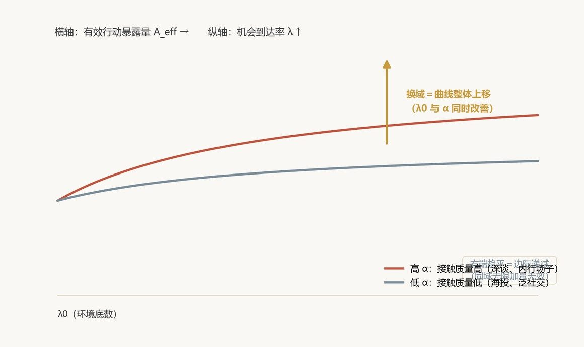
图 7-2 行动密度—机会到达曲线
7.3 7.3 边际递减：为什么第二年投三百份，只多两个面试 # 概念与机制 公式与参数 篇幅 一会儿
现在处理主案例的第二个规律——小李第二年的遭遇。
成本
约 1,542 字 · 约 4 分钟 · 含公式，附人话翻译
结构
15 段 · 含插图
备注
《第7章 暴露：机会不是等来的》
本节全文 · 约 1,542 字
现在处理主案例的第二个规律——小李第二年的遭遇。
小李毕业后进了家公司，两年后想跳槽。这次他更努力：投了三百份简历（第一年的三倍），面试拿到 8 个——行动量翻了三倍，面试只多了三分之一 。第三年再投，曲线更平。
这不是他退步了。这是边际递减 在起作用，而且它不是偶然，是结构性的。三个原因，一个比一个硬：
原因一：接触池饱和。 A e f f 新增 有效接触并没有随投递量翻三倍。手机里能装的新联系人就那么多，翻倍的是打扰，不是暴露。
原因二：信号同质化。 当几百个背景相似的人在同一渠道投同类简历，接收方的筛选成本上升，他们对“又一份同质简历”的敏感度下降——你的每份简历被认真看的概率在降低。你行动量上升的同时， α 在下降 ：这是公式里两个变量的联动，加量加到后来，加的是分子、伤的是系数。
原因三：域内熵增。 一个信息渠道用的人越多，其边际信息量越低——招聘平台、热门社群、公开路演，全都服从这个规律。你挤在里面的动作越密，你分到的信号份额越稀。
三条合起来，就是那条曲线的形状：
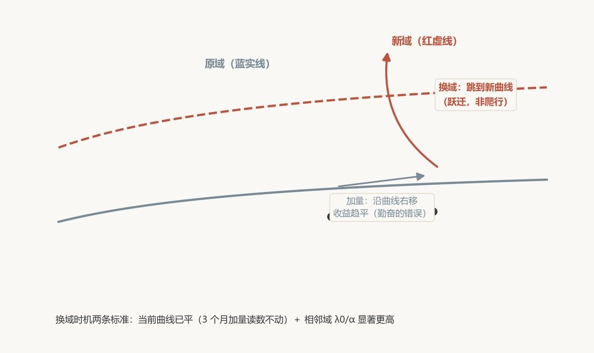
图 7-3 加量与换域：两种策略的曲线 这个图形的解释力比公式本身还直观，值得单独写三句战略结论：
当你的行动已经在曲线的平缓段（连续三个月加量，读数不动），继续加量是情绪安慰，不是工程。 边际递减是“域”的属性，不是“人”的属性 ——你在原域饱和，不代表你在所有域饱和。换一个圈层，你的 A e f f α 也会重置。换域的成本是一次性的，收益是曲线级的 ——这就是为什么“三风水”（换场子）在十二要素里能排进前三：它是全书杠杆率最高的单一动作。三条结论落到操作上，是一个三步自检——建议每季度末做一次，五分钟：
第一步，查加量史 ：过去三个月，A e f f 第二步，查产出响应 ：同期候选机会数动没动？——注意是“数”，不是“感觉”，翻日志，不凭印象。第三步，对照判型 ：加量而产出不动（曲线平缓段）→ 停止加量，启动换域评估（7.5 节的两条标准）；加量且产出同升（曲线陡段）→ 继续用完当前域的红利；没加量且产出不动 → 先确认自己是不是根本没上路。
第三种情形值得单独点破，因为它是最常见的误诊：很多人把“边际递减”当成不行动的借口——“反正努力会递减，何必努力”。边际递减是写给已经行动的人的警告，不是发给没行动的人的赦免 。A e f f
【进阶 · 可跳过】
λ = λ₀ + α·A_eff 的量纲检验与边际衰减
三道自洽闸门逐一过（闸门规则见 system_doc）：
量纲 ：λ 与 λ0 同为 [次/月]；α 无量纲（每次接触的命中率），A e f f α ·A e f f 值域与单调性 ：各参数均非负；λ 对 A e f f A e f f λ =λ0 ，即“躺平者仍有环境底数”；α =0 时行动完全无效——对应“在无人区拼命吆喝”）。✓可检验 ：A e f f λ 有结果级代理（候选机会计数），α 可由 λ −λ0 对 A e f f A e f f 边际衰减的正式处理：α 不是常数，而是域饱和度的减函数 α (s)，s ∈ [0,1] 为该域内你已触达的比例。于是 λ = λ0 + α (s)·A e f f A e f f 工程含义：日志里除了记 A e f f ，还应该记“新接触里有多少来自未饱和的域”——这是判断你处在曲线哪一段的读数。
跳过本框不影响后续阅读。
概念与机制 公式与参数 表格 可核数据 篇幅 需专注 含表
回到主案例的第一个规律：小李的一百份简历，为什么 A_eff 只有三十？
成本
约 2,242 字 · 约 6 分钟 · 含公式，附人话翻译
结构
13 段 · 含表
备注
《第7章 暴露：机会不是等来的》
本节全文 · 约 2,242 字
回到主案例的第一个规律：小李的一百份简历，为什么 A e f f
因为有效暴露的判定标准是“新”，不是“多” 。这里给出可操作的判定——一次接触计入 A e f f
对象新 ：接触的是此前未有实质互动的人或组织（同一家公司的三个岗位 = 一次接触；同一群朋友的第六次饭局 = 零次）；信息新 ：接触带回了你此前不掌握的信息或关系（约谈一小时但没有新信息 = 社交，不是暴露——它可能有益心情，但别记进 A e f f 可追踪 ：这次接触留下了可回访的痕迹（名片、聊天记录、引荐人）——不可追踪的接触无法进入第9章的转化环节。按这三条，可以给常见的“假暴露”画像（每种都极其勤奋）：
假暴露一：回音壁社交。 天天在自己的圈子里活动——同乡会、老同事群、固定饭局。行动量极大，对象永远是同一批人，信息在圈子里循环。读数特征： A e f f 趋近于零而“社交时长”很高。
给这个画像配一个具体场景（复合案例，非实录；细节作了模糊处理）。老周，四十二岁，制造业采购经理，圈子里公认“人缘最好的人”。他的社交日程排得很满：同乡会每月聚餐、老同事羽毛球每周一场、大学同学群天天说话——每月十几次活动、几十个小时的投入。某年他想换个方向，先找了位猎头朋友聊。猎头只问了一个问题：“最近一年你新认识的人里，有谁在做你想去的方向？”他翻遍通讯录：一年新增联系人七个，全是被拉进群时顺手加上的。几十小时的社交， A e f f 的年读数约等于零 ——不是他不出门，是他每次出门进的都是同一间屋子。回音壁的迷惑性在于手感极好：饭局上人人认识你、事事有回应——但圈子里流通的信息早就是你听过的信息，能帮你的人早就是帮过你的人，你在里面转得越熟，墙就越厚。先给一个重要的定性：回音壁社交不是负资产 ——它保养 T t r u s t 占用暴露的时间预算，却不产出任何新连接 。所以修法不是退圈，是配额制：社交总时长不动，切四分之一给跨域活动——把“每月一场羽毛球”换成“每月一场邻行业沙龙”，A e f f
假暴露二：广播式撒网。 群发消息、批量点赞、评论区打卡——触达数惊人，但对方收到的不是“一次接触”，而是“一条噪声”。读数特征：触达量高，带回的新信息与新关系为零（判定 2 不过）。
配第二个场景（复合案例，非实录）。小吴，保险经纪人，微信三千好友。她的动作清单：每天三条朋友圈、逢节日全员群发祝福、看到行业动态就转发到自己所在的十几个群。按“触达”计，她每月触达上万人次，后台数据漂亮得像个运营账号。但拿三条判定逐一过：对象新？触达对象几年没换过。信息新？群发祝福不携带新信息。可追踪？对方收到的是“一条群发”，不是“一次接触”。三条全不过——上万次触达， A e f f 记零 。广播式撒网的缺陷埋在“接触”的定义里：接触要求对方把你识别为一个“具体的人”，而群发的本质恰恰是把对方当作一个“列表”。这一形态的读数欺骗性比回音壁更强——触达量、点赞数、好友数，仪表盘上每个数字都在涨，每一个上升的数字都在奖励错误的行为 。修法是把广播降级为背景音（维持存在感仍有价值），把主要预算转给点对点：每周挑三个真正相关的人，发一条为对方定制 的消息——看到与他相关的信息转给他，能在他的问题上搭把手就出手。记住判定第二条是双向的：你带给对方新信息，才算一次有效接触 。
假暴露三：重复冲撞。 给同一个人每两周发一次“最近有机会吗”。第一次是接触，第二次是提醒，第三次开始是消耗——你在消耗自己的 T t r u s t 读数特征：单一对象接触频次上升、回信率下降。
配第三个场景（复合案例，非实录）。阿玲，想进大厂的产品经理，经人介绍认识了一位在大厂任职的学长。她的动作很“坚持”：每两周发一次“哥，最近你们那边有机会吗”。第一次，学长认真回复，真的去问了组里；第二次，简短回了句“暂时没有”；第三次，已读不回；第四次，学长开始在共同朋友的饭局上绕着她走。阿玲的委屈是真实的——“我这么诚恳、这么坚持，为什么没人肯帮我？”日志替她把账算清：对同一对象，接触频次逐次上升，回信率逐次下降 ——重复冲撞的标准读数。机制残忍在每一跳：学长第一次帮忙是投资，第二次回复是情面，第三次沉默是止损。她在用自己的信任存量购买零收益的暴露 ——这比不接触更糟：不接触只是不涨，重复冲撞是在亏，亏的还是第9章转化环节最贵的本金。修法是把索取式接触改造成供给式：把频率降到每两个月一次，每次带去新东西——“我看到你们竞品上了个新功能，拆了一下，笔记发你”（信息增量）、“你们组要的那类数据我手上正好有一份”（价值供给）、哪怕只是“上次你提的那本书我读完了，有个想法想跟你聊聊”（关系延续）。让每一次接触都值得回，对方才有理由继续在你身上投资 。
三个场景排在一起，能看出假暴露的病灶各不相同，修法也就各不相同：
表 7-1 三种假暴露的改造对照
形态 病灶 修法 要保留的东西 回音壁社交 对象不新（判定 1 不过） 配额制：社交总时长不动，切四分之一给跨域 圈子保养 T t r u s t 广播式撒网 不构成接触（判定 2、3 不过） 广播降为背景音，预算转点对点定制消息 存在感的维持 重复冲撞 消耗信任存量 索取式改供给式，每次接触带新东西 —（净伤害，最急）
注：前两种是“浪费预算”，第三种是“透支本金”——按急迫度排序，先治第三种，它在把未来转化段的概率也一起花掉。
三种假暴露的共同教训：暴露的单位不是“动作”，是“新连接” 。日志上要数的是后者。
概念与机制 公式与参数 篇幅 一会儿
边际递减逼出一个问题：曲线平了之后怎么办？
成本
约 1,279 字 · 约 3.5 分钟 · 含公式，附人话翻译
结构
12 段
备注
《第7章 暴露：机会不是等来的》
本节全文 · 约 1,279 字
边际递减逼出一个问题：曲线平了之后怎么办？答案已经在图 7-3 里——换域 。
先定义。域 是“机会密度与你可及性的组合”：一个行业、一座城市、一个平台、一个圈层，都是域。换域的三个层级，成本与收益依次放大：
一级：换信息源（成本：周）。 订阅新信源、加入新社群、换一批关注的对象。信息源的更换改变你看到的机会结构——很多“没机会”其实是“没看见”。
二级：换圈子（成本：月）。 进入新的从业者网络——行业会议、专业社群、跨部门项目。这是小马的三十次深谈在做的事：把自己放进“信息在小圈子流转”的那个圈子。注意她的顺序：先换圈子（深谈进入网络），机会才向她打开 ——而不是反过来“先看到机会再去找人”。
三级：换场子（成本：年，一次性）。 换城市、换行业、换平台。这是 λ0 本身的重置——第2章说过，城市规模与人均机会产出存在系统的超线性关系〔待核，见附录 C〕；行业间的 λ0 差异更大。第13章把这一级列为“关键决策”，给完整决策表。
三个层级听起来都不小，但换域有一个“最小可行版本”，成本以天计：换一个信息源，坚持一个月 。做法：①清点你现在的主要信息源（关注的账号、常看的群、订阅的刊物）；②找出一个与你目标方向相关、但你从未进入过的信源——一个邻行业的通讯、一个高质量社群、一个专业论坛；③每天花十分钟读它，只做一件事：记下“这个世界里正在发生什么” 。一个月后你会得到两个产出：一份新域的机会地图（谁在扩张、什么在增长、哪里缺人），和一张自然的接触清单（地图上出现的人，就是你的深谈候选——回到 7.2 节深水区的结论，深谈需要由头，地图就是由头的来源）。换域不始于搬家，始于换眼睛 ：λ0 的重置是最后一步，眼睛先换，机会的“可见性”立刻就变——很多“没机会”到这一步就已经松动，因为它们本来就是“没看见”。
换域的时机判断只有一条标准：你在当前域的曲线已经平了（连续三个月加量， λ 读数不动），而相邻域的 λ0 α 显著更高。 两个条件缺一不可——曲线没平就换域是逃兵（你还没用完当前域的红利），相邻域不更高是乱跳（为换而换）。
【进阶 · 可跳过】
深谈与广撒网的分配：一个简化的最优策略
设时间预算固定（每月可用于暴露的小时数 H）。两种行动的参数：广撒网每小时产生 m_s 次低质量接触（α_s 低），深谈每小时产生 m_d 次高质量接触（α_d 高，但 m_d ≪ m_s）。期望到达增量 Δλ = α_s·m_s·h_s + α_d·m_d·h_d，约束 h_s + h_d ≤ H。
线性情形下最优解是全押单位时间期望更高的那种——但真实的深谈有线性模型抓不住的两项 ：①深谈的接触自带可追踪性 （判定 3），能进入第9章的转化漏斗，撒网接触大多不能；②深谈有信息外溢 （对方告诉你“真正缺人的是隔壁组”），外溢信息反过来抬高你后续每次行动的 α 。把这两项折进来，深谈的长期回报显著高于单次期望值——这就是“三十次深谈打赢一百份简历”的机制分解。
但注意边界：深谈是高 T t r u s t 依赖 的行动（你得约得动人）。冷启动阶段（新入行者、无人脉者）先靠低成本暴露攒下第一批可追踪接触，再逐步转向深谈——策略随存量而切换，不存在全时段最优 。
跳过本框不影响后续阅读。
7.6 7.6 一个可核的案例：投稿量、接收率与“多投”的真实价值 # 可核证据 公式与参数 可核数据 篇幅 一坐
“多试有没有用、有多有用”——这个问题在学术投稿系统里有现成的公开数据，因为它有完整的记录（投稿数、接收数、接收率逐年可查）。
成本
约 749 字 · 约 2 分钟 · 含公式，附人话翻译
结构
4 段
备注
《第7章 暴露：机会不是等来的》
本节全文 · 约 749 字
“多试有没有用、有多有用”——这个问题在学术投稿系统里有现成的公开数据，因为它有完整的记录（投稿数、接收数、接收率逐年可查）。
看机器学习领域顶级会议的公开统计：以 NeurIPS 为例，投稿量在 2010 年代经历了数量级增长（从数千级增长到两万级），而接收率长期在百分之二十上下波动〔待核：具体年份的投稿量与接收率数字，见附录 C〕。类似的“投稿量猛增、接收率大体稳定”的模式在多个学科的主要会议与期刊中均可观察到〔待核：跨学科样本〕。
这组数据支撑三条判断，每条都是本章机制的注脚：
“多投”提高命中数，不提高命中率 ——接收率稳定意味着单篇的命中概率没有随着你投得多而上升。这正是 Simonton 在创造性产出研究中的经典发现（等几率规则：单次命中率大体恒定，总成功量随产出量上升）〔待核：Simonton 表述的原文与样本〕。A e f f 的价值是线性的，别指望它变成指数。 同质投稿的边际递减在系统层面可见 ——当整个领域都在加量（投稿量翻数倍），单个投稿者分到的审稿注意力被稀释，“被认真读到”本身变成稀缺资源。个人层面的 α 下降（7.3 节原因二）在系统层面就是“平均审稿时长与拒稿速度的变化”。真正的破局者换的是域 ——同一批数据里，新兴子领域的论文接收率与引用增长显著高于饱和领域〔待核：子领域差异的统计〕。“选一个 λ0 更高的新方向”在学术系统里的回报，与“在饱和方向多写三篇”完全不是一个量级——图 7-3 的换域跃迁，在学术版图上清晰可见。按案例纪律补边界：学术投稿是一个“反馈规范、记录完整”的特殊系统，普通职场与商业环境的信号噪声更大——所以本章用它验证的是机制方向 （边际递减、多试的线性价值、换域的跃迁），不是具体数值（别把“接收率 20%”读成任何人生场景的命中率）。
工具与产出物 公式与参数 表格 行动工具 篇幅 一坐 含表
表 7-2 机会暴露日志（周模板）
成本
约 288 字 · 约 1 分钟 · 含公式，附人话翻译
结构
3 段 · 含表
备注
《第7章 暴露：机会不是等来的》
本节全文 · 约 288 字
表 7-2 机会暴露日志（周模板）
周次 新接触对象 域（新/旧） 信息增量（一句话） 可追踪（Y/N） 后续动作 例 W37 张工（邻行业架构师） 新 得知其司明年扩编储能团队 Y 11 月回访
注：只记“新”接触——对象新、信息新、可追踪；三缺一就不计入 A e f f
填法与判定 ：
每周日花五分钟填，只记满足 7.4 节三条判定 的接触； 月末看三个读数：A e f f 总量 、新域占比 （接触来自你未饱和域的比例——7.3 节深水区的 s 读数）、信息增量密度 （带回新信息的接触占比，α 的代理）； 预警线 ：连续三个月 A e f f
可执行清单 公式与参数 行动工具 篇幅 一坐
今晚做一件事：把你最近三个月的社交与求职/商务动作列出来，逐条判定是不是“新接触”（对象新、信息新、可追踪，三缺一不算）。
成本
约 199 字 · 约 1 分钟 · 含公式，附人话翻译
结构
3 段
备注
《第7章 暴露：机会不是等来的》· 本章交付的动作
本节全文 · 约 199 字
今晚做一件事：把你最近三个月的社交与求职/商务动作列出来，逐条判定是不是“新接触”（对象新、信息新、可追踪，三缺一不算）。
然后算一个比例：新域占比 ——真正的“新接触”里，有多少来自你原来的圈子之外？
低于两成的人，你不需要更努力——你需要去一个陌生的场合（跨行业沙龙、邻城的行业会、线上新社群），本月一次即可。这“一次”不是去碰运气，是去给 A e f f 开一条新的供给线 ——曲线平了的人，先换域，再加量。
闭环校验 与前置公设是否冲突 ：无冲突。λ 公式通过三道自洽闸门（深水区框）；A e f f λ 均有代理指标；干预手段（加量、提 α 、换域）方向明确。是否新增概念需回写术语表 ：新增“域”（机会密度与可及性的组合）、“域饱和度 s”、“假暴露”三形态（回音壁/广播式/重复冲撞）。已同步 system_doc。是否产出可测指标或工具 ：产出机会暴露日志（表 7-2，附录 B/E）与换域时机判定的两条标准。传统回响 本章激活十二要素里的两条（对应总表见第3章表 3-1）：
三风水 ：“换域”就是它的工程形态——古人观山向水流定“气场”，本书测机构密度与网络中心度定 λ0 。差异边界照旧：不采纳方位吉凶，只保留“环境决定机会密度”的可测内核。第15章会把这条扩展到平台生态位。十养生 ：暴露期 T 别在暴露的黄金窗口期透支身体 。第13章把时间预算纳入年度流程。外部对话 与“一万小时”投入论（Ericsson 等） ：刻意练习研究证明了投入时长对技能的塑造力，这个结论本书完全尊重——但“投入时长”与“有效暴露量”是两个变量：前者塑造 K λ （本章）。把两者混用的后果是一种常见的错位：用练技能的方式等机会 ——闭门苦练一万小时，A e f f K A e f f
与巴拉巴西的人类动力学研究 ：他对人类行为时间戳的大规模分析发现，人的行动（通信、邮件、在线活动）在时间上高度不均匀——长静默夹杂密集爆发（重尾的时间分布）（Barabási, 2005〔待核：Nature 论文的具体表述〕）。对本书的启示是低调但重要的：多数人的暴露是“阵发性”的——想起来猛冲两周，然后消失仨月。而机会的到达是连续过程 。日志的一个隐藏功能就是把阵发暴露改造成节律暴露——这也是表 7-2 按周而不按月设计的原因。
本章三句话 第一，机会到达率是算术不是天赋：λ=λ0 +α·A e f f ——环境给底数，行动给增量，接触质量定效率。
第二，行动的边际收益必然递减，因为域会饱和、信号会同质、渠道会拥挤——曲线平了还加量，是最勤奋的错误。
第三，破局靠换域不靠加量：换信息源、换圈子、换场子，把 λ0 一次性重置到更高水平——这是全书杠杆率最高的单一动作。
篇二·五段机制
第8章 识别：机会摆在你面前，你认得出来吗 9 / 9图 8-1 两个人读同一份报纸：一人手持放大镜，看见纸页上隐藏的纹样；另一人望向别处。同一片滩涂，认得出珍珠的只有一种人。 【题记】众里寻他千百度，蓦然回首，那人却在，灯火阑珊处。——辛弃疾《青玉案·元夕》
第一，机会到达你的速度由上一章的 λ 决定；机会被你认出来 的概率，由你的认知存量决定——两件事常常被混为一谈。
第二，识别概率随认知存量饱和式 上升：从 0 到 60 分进步飞快，从 85 到 95 分进步缓慢——这个曲线形状决定了“读书读到什么时候够”的答案。
第三，识别力不是知识总量，是模式库 ——你见过多少种“机会长什么样的样本”，决定你能不能认出眼前这一个。
案例与直觉 公式与参数 篇幅 一坐 主案例
先看一个常见情形（复合案例，非实录，细节作了模糊处理）。
成本
约 611 字 · 约 1.5 分钟 · 含公式，附人话翻译
结构
8 段
备注
《第8章 识别：机会摆在你面前，你认得出来吗》
本节全文 · 约 611 字
先看一个常见情形（复合案例，非实录，细节作了模糊处理）。
某个周三的早上，一份行业主管部门的文件出现在官网上。文件很长，核心是三句话：试点范围扩大、新增两类服务目录、过渡期十八个月。
程工和老白在同一天读到了这份文件，两人在同一家公司的相近岗位，能力测评的成绩也差不多。
程工读到的：政策新闻一条。他花了两分钟扫完标题，转发到了部门群里，配了一句“看来要放开了”。
老白读到的：不一样的东西。他注意到“新增两类服务目录”里的其中一类，正是公司两年前立项又砍掉的那个方向；他注意到“过渡期十八个月”意味着资质申请窗口就在这半年；他还注意到附件里的一行小字，试点名单里有一家客户公司。当天下午，他给那家客户的老联系人打了个电话，问了两个问题；周末，他写了一份三页纸的内部建议书，交了上去。
两年后，公司靠这个重新启动的方向拿下了三个试点项目，老白是项目牵头人。程工在同学会上说：“老白运气好，赶上了政策。”
政策是同时到达两个人的（ λ 相同），但只对一个人成为机会。 差异不在视力，不在信息渠道——文件就挂在官网上，人人可查。差异在识别 ：老白的脑子里存着两年前那个被砍掉的项目（一个“机会长什么样”的样本），所以新信息一来，模式对上了。
这个案例的推广性极强，因为它的结构每天都在重演：同一场行业会、同一份财报、同一条招聘启事、同一次饭桌闲谈——信息到达所有人，机会只属于认得出的人。 本章讲的就是“认得出”是怎么构成的、怎么攒的、什么时候够用。
概念与机制 公式与参数 可核数据 篇幅 一坐
机会被你认出来的概率，本书写成：
成本
约 723 字 · 约 2 分钟 · 含公式，附人话翻译
结构
9 段 · 含插图
备注
《第8章 识别：机会摆在你面前，你认得出来吗》
本节全文 · 约 723 字
机会被你认出来的概率，本书写成：
p d e t e x p (−k ·K )
用人话翻译：你认出机会的概率，随你的认知存量 K 上升——但像往一杯已经很多水的杯子里倒水，越倒越慢，永远倒不满。
逐项拆开：
p d e t （识别概率） ：一个候选机会摆在你面前，你正确认出“这是个机会”的概率，取值 0 到 1。K （认知敏感度存量） ：你在相关领域的“模式库”总量——见过的案例、吃过的亏、读过的拆解、复盘过的判断。可以用投入的有效学习与实战时长近似（单位：知识单位，粗略以百小时计）。k （识别效率） ：每单位存量兑换成识别力的效率，因领域而异——规则清晰的领域（棋类、标准明确的行业）k k 一个生活化算例（演示值）：
设 k
K p d e t 0 ——什么也认不出；K p d e t 0.33 ——三个机会能认出一个；K p d e t 0.63 ——过半能认出；K p d e t 0.86 ；K p d e t 0.98 ——从 100 到 200 翻倍投入，只换来 12 个百分点。四个数字连起来看，曲线的形状自己会说话：前段的每一点投入都立竿见影，后段的翻倍投入只换来零头。 这就是“饱和”，它不是读书无用的证据，恰恰是“读书有用但有边际”的精确表述。
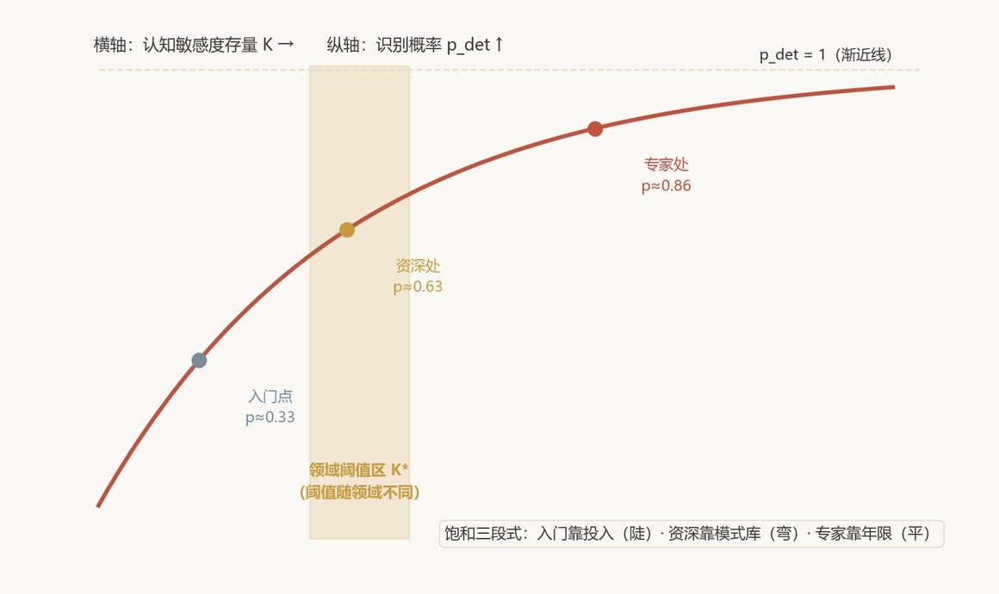
图 8-2 认知存量—识别概率的饱和曲线 主线只需要记住三句白话结论：
识别概率随认知存量上升，但边际收益递减。从零到入门的收益最大；过了资深线，别靠加时间，要靠换方法（8.5 节的跨域迁移）。
概念与机制 公式与参数 可核数据 篇幅 一坐
现在拆解这条公式里最容易被误解的量：K。
成本
约 983 字 · 约 2.5 分钟 · 含公式，附人话翻译
结构
9 段
备注
《第8章 识别：机会摆在你面前，你认得出来吗》
本节全文 · 约 983 字
现在拆解这条公式里最容易被误解的量：K
K 不是你知道多少，是你存了多少“模式”。 证据来自专家—新手研究的一个经典设计（下节详述）：给象棋大师和新手看 5 秒真实对局棋盘，大师能复盘出大半棋子，新手只能放对几个——但把棋子随机 摆放，大师和新手的复盘成绩一样差。这说明大师的优势不是记忆容量，而是真实棋局里的“组块”（chunk） ：多年对弈让大师的脑子里存了几万个“棋形模式”，看一眼不是记 25 个棋子，是认 5 个模式。
把这个发现搬到机会识别上：
老白能认出政策里的机会，是因为他脑子里存着“被砍项目 + 资质窗口 + 客户名单”这些模式 ——新信息一出现，模式匹配瞬间完成； 程工不是没读到那行小字，是读到了也无法匹配 ——他的模式库里没有对应的样本，那行小字对他只是小字。 由此可以给 K
K = 你的“机会样本库”容量 = 见过的真实案例数 × 每个案例的复盘深度。
注意这个定义的两个乘法项带来的实操含义：广撒案例而不复盘， K 增长缓慢（第一项大、第二项近零）；只复盘自己的少数经历， K 有上限（第二项大、第一项受限）。 有效的攒法是两个乘子一起上——多见案例，且每个案例都追问“当时什么信号在场、什么人先看懂了、为什么我没看懂”。
反面教材是“名词型学习”（第4章 L3 的边界反例）：把行业黑话背得滚瓜烂熟，模式库里却没有一个真实样本。名词是压缩包，模式库是解压后的内容——你收藏了一百个压缩包，不等于你有一百份文件。
模式库里的样本按来源分三类，各管一段：①亲身案例 （你做过、亏过、赢过的项目——深度最高，数量最少）；②他人案例 （你拆解过的别人的成功与失败——数量可以很大，深度取决于复盘质量）；③迁移案例 （相邻领域的结构相似样本——数量取决于你的跨域宽度，是 8.5 节姿势二的储备）。
三类来源配一次实操清点（半小时，一年一次）：拿一张纸分四栏。第一栏写你所在领域近三年“后来被证明是机会”的十个事件（政策、技术、公司、人事）；第二栏逐个写“当时在场的人里，谁最先看懂了”；第三栏写“他凭的什么模式”；第四栏最诚实——写“这个模式我有没有”。十行填完，第四栏里“有”的个数，就是你的 K 这份尴尬不是坏消息——它把“我的识别力如何”从感觉变成了一张可以逐月补的清单 ：第四栏空缺的那几行，就是接下来要攒的样本。
概念与机制 公式与参数 篇幅 一坐
饱和曲线回答了一个古老的问题：读书（广义的：攒 K）读到什么时候算够？
成本
约 628 字 · 约 1.5 分钟 · 含公式，附人话翻译
结构
6 段
备注
《第8章 识别：机会摆在你面前，你认得出来吗》
本节全文 · 约 628 字
饱和曲线回答了一个古老的问题：读书（广义的：攒 K ）读到什么时候算够？
答案分三段：
第一段（0 到入门阈值）：怎么投入都不亏。 这是曲线最陡的一段，每一百小时存量的识别概率增益都在十几个百分点以上。对新入行者，这一段的结论近乎朴素：你在该领域还没有“资格谈边际”，先攒够入门存量。
第二段（入门到领域阈值）：边际递减明显，但仍有价值。 所谓领域阈值 ，是该领域里“主要机会类型”被你的模式库覆盖的存量水平——过了阈值，日常机会你基本都能认出；没过阈值，你会在关键场合系统性漏认。阈值因领域而异：规则清晰、案例可归档的领域（会计、标准类工程）阈值较低；规则模糊、案例发散的领域（创业、投资、内容）阈值较高。工程判据 ：看你的“漏认记录”——过去一年里“事后才发现是机会”的事件数。漏认多，你在阈值之下；漏认趋于零，你在阈值之上。
第三段（阈值之上）：加时间的收益断崖式下降，升级方式改变。 这一段的正确动作不是继续在本领域堆小时数，而是两件事之一：①跨域迁移 （8.5 节）——把本领域的模式库带进一个新领域，你会突然拥有该领域新玩家不可能有的识别力（你回到曲线陡峭段，且带着加速度）；②识别外包 （8.6 节）——让贵人替你识别，你只需要维护好“有人愿意点破你”的关系结构。
这个三段式也顺手拆掉两桩公案：“读书无用论” 错在拿第三段的边际收益否定全部曲线（用专家难再进步论证读书无用）；“读书万能论” 错在拿第一段的斜率外推到全程（以为堆时间能线性涨识别力）。两个极端都不符合曲线的形状。
概念与机制 公式与参数 可核数据 篇幅 一坐
认知存量的积累方法，按性价比排序讲三种。
成本
约 940 字 · 约 2.5 分钟 · 含公式，附人话翻译
结构
5 段
备注
《第8章 识别：机会摆在你面前，你认得出来吗》
本节全文 · 约 940 字
认知存量的积累方法，按性价比排序讲三种。
姿势一：认知复利（在正确的方向上待得够久）。 复利的关键不是利率高，是不间断 。每天一小时、持续五年的领域投入，胜过每年突击一次的十小时×十次——因为模式库的存储发生在“间隔重复的编码”里，突击式学习存进的是压缩包（名词），不是模式。实操形态：固定信源日报（每天 20 分钟）、每周一次的案例复盘、每季度一次的“我认错过什么”清点。识别力的复利来自节律，不来自强度。
姿势二：跨域迁移（把 A 领域的模式库带进 B 领域）。 这是饱和曲线上的“免费跳段”：你在 A 领域的存量对 B 领域的新手是降维优势——不是你聪明，是你的模式库里有些结构相似 的样本在 B 领域还没有人见过。老白案例的隐藏背景是：他两年前那个被砍的项目，用的正是从相邻行业搬来的方案——所以新政策一出现，只有他同时匹配上“政策模式”和“方案模式”两套样本。实操形态：每季度深度接触一个邻域（读它的行业史、拆它的头部案例）；跨域不是转行，是给自己的模式库加第二个语料库 。
姿势三：信号训练（刻意练习“认”这个动作）。 前两种攒的是库存，第三种练的是取用。识别作为技能可以单独训练，形式与一切技能训练相同：样本、即时反馈、重复 。实操形态：拿“已揭晓的历史案例”做盲测——找行业里过去三年“后来被证明是机会”的十个事件（比如某政策、某技术发布、某公司异动），只看事件发生当时能看到的公开信息，逼自己先判断“这是不是机会、是谁的机会”，再对照后来的真实走向打分。每轮十分钟，每月一轮——这是把 p d e t
三种姿势落到一个月里，是一张固定的月度作业（总投入不到两小时）：第一周，盲测轮 （表 8-1 第一题）——五个事件判断，二十分钟；第二周，案例入库 ——把本月最值得记的一个“别人看懂了而我没看懂”的事件，写成三行：信号是什么、对方凭的什么模式、我的库缺哪一块，二十分钟；第三周，邻域搬运 ——读一篇相邻领域的最佳实践拆解，写下“这个模式搬到我的领域长什么样”，一小时；第四周，漏认清点 ——回看本月盲测，统计漏认率，更新“缺块清单”，十分钟。四件月度动作把“攒 K
概念与机制 公式与参数 篇幅 一坐
本章还差最后一块：当自己的 K 不够时，识别可以外包吗？
成本
约 787 字 · 约 2 分钟 · 含公式，附人话翻译
结构
8 段
备注
《第8章 识别：机会摆在你面前，你认得出来吗》
本节全文 · 约 787 字
本章还差最后一块：当自己的 K 不够时，识别可以外包吗？
可以，而且这是十二要素里“九交贵人”的一个重要机制——贵人的三重作用之一就是“有人点破”（第3章表 3-1：贵人同时作用于 λ 、p d e t p c o n v
识别外包的工程要点有两条，缺了就会退化成“到处问人”：
外包的是盲区，不是判断。 有效的外包是“我已尽力识别，剩这一格看不清，向您求证”——问得具体，对方才能点破得具体。“您觉得现在有什么机会”式的问法不会带来识别，只会带来寒暄。外包必须双向记账。 别人替你点破一次，你欠一次“点破额度”——要么日后替对方点破，要么以别的方式回补。单向索取的“请教”消耗 T t r u s t 识别外包的成本记在第9章的信任账户上。 两条要点落在一通电话上，长这样（复合案例，非实录）。老白打给客户老联系人的那通电话，值得原样拆开——它是一次标准的最小识别外包：
老白：“王工，新出的试点文件我看了，C 类目录跟你们前年想做的方向撞上了。想跟您求证两件事：目录里的资质条件，你们当时卡在哪儿？”——外包的是盲区 ：对方的内部经验他不可能有，且问题具体到“卡在哪儿”，不是“您怎么看这个文件”。
王工：“资质本身不难，卡在检测能力认证——我们那年排了八个月队。”——对方一句话，补上了模式库里缺的那块：窗口期等于“认证排队期”，倒推就是申请时点。
老白：“明白了，那第三季度前不动手就赶不上了。这份内部建议书我写完后发您一份，您帮我看看哪儿跟实际对不上。”——双向记账的即时版 ：他拿对方的点破，回补的是自己的分析成果；一个月后建议书成了，他把最终版和署名感谢一并寄回。
这通电话的模板价值：问具体、付回补、留凭证。识别外包的失败版本全都败在同一处——把“点破”当免费的。
8.7 8.7 一个可核的案例：那只被认出来的培养皿 # 可核证据 公式与参数 可核数据 篇幅 一坐
识别机制最干净的历史标本，是青霉素的发现——不是因为它的戏剧性，而是因为它的可核性：史料完整，且恰好完整到能看清“识别”与“到达”的分界。
成本
约 1,088 字 · 约 3 分钟 · 含公式，附人话翻译
结构
7 段
备注
《第8章 识别：机会摆在你面前，你认得出来吗》
本节全文 · 约 1,088 字
识别机制最干净的历史标本，是青霉素的发现——不是因为它的戏剧性，而是因为它的可核性 ：史料完整，且恰好完整到能看清“识别”与“到达”的分界。
1928 年，伦敦圣玛丽医院的细菌学家亚历山大·弗莱明度假归来，发现一只葡萄球菌培养皿被霉菌污染——按实验室的常规，这是一只该清洗掉的失败样本。弗莱明没有扔，他注意到霉菌菌落周围的葡萄球菌被溶解出了一圈清澈区域，并沿着这个观察一路走到青霉素的发现。
机会到达了吗？ 到达了——而且不止对弗莱明。培养皿的污染在当时的实验室里是常事，“被霉菌污染的培养皿”这个信息同样“到达”过无数细菌学家（λ 从来不是瓶颈）。
为什么只有他认出来？ 因为他有那个模式：六年前的 1922 年，弗莱明已经从人的鼻腔黏液中发现过一种天然抗菌物质（溶菌酶），此后他持续在“自然界存在抗菌物质”这个方向上工作（fact_check F-15 已核）。在他的模式库里，“某种生物源物质溶解细菌”是一个正在等待更多样本的模式 ——所以污染培养皿上那圈清澈区域，对别人是事故，对他是数据的第四个点。
这个案例的机制拆解是纯本书式的：
K 的来源 ：不是弗莱明更聪明，是他六年的前置工作恰好构建了覆盖这一信号的模式库（8.3 节）；饱和曲线的位置 ：在“抗菌物质”这个具体模式上，他早已过了入门阈值（8.4 节）——别人在阈值之下，同信号面前识别概率悬殊；“运气”的社会归因错在哪 ：教科书把这一刻叫作“运气”，等于把 p d e t p d e t 到达是公共的，识别是私人的。 补一条对照研究，把机制一般化：专家—新手的差异实验在多个领域重复验证过同一结构——国际象棋大师对真实棋局几秒内可复盘大半，但对随机摆放的棋子，其复盘能力与新手无异（Chase & Simon, 1973〔待核：实验细节与样本〕）。这说明专家优势完全绑定在“真实模式”上：他们的模式库是为真实世界的机会形状准备的，不是为抽象智力准备的。 还有一条来自幸运研究本身的旁证：怀斯曼的实验里，自称幸运者在执行“数报纸照片”任务时，更容易注意到报纸中间夹着的一行大字提示（“别数了，一共 43 张”），而不幸者因专注目标而错过（Wiseman, 2003〔待核：实验设计细节〕）——专注窄化了识别带宽 ，这为 8.5 节的信号训练提供了另一个理由：识别力不仅靠库存，还靠“留出带宽”。
按案例纪律补边界：弗莱明到青霉素真正成为药物之间还有弗洛里与钱恩的工程化（那是转化与放大——第9、10章的故事），本节只用它验证识别一段；怀斯曼实验的样本规模与统计强度在学界有讨论，本书引它作为方向性证据而非定量结论。
工具与产出物 表格 行动工具 篇幅 一坐 含表
表 8-1 机会信号识别自测（每月一轮，每轮十分钟）
成本
约 406 字 · 约 1 分钟 · 不需要任何数学基础
结构
3 段 · 含表
备注
《第8章 识别：机会摆在你面前，你认得出来吗》
本节全文 · 约 406 字
表 8-1 机会信号识别自测（每月一轮，每轮十分钟）
题项 你的判断 揭晓后复盘 1. 列出本月你所在领域的 5 个“事件”（政策/技术/人事/异动） 逐个判断：是机会吗？是谁的机会？ 一个月后回看：判断对了几个？漏认了哪个？ 2. 其中哪一件你“本能觉得重要但说不清为什么”？ 写下直觉与理由 直觉命中率与理性命中率各多少？ 3. 本月有没有“事后才发现是机会”的事？ 写下漏认原因：模式库缺什么样本？ —— 4. 你向谁求证过一次识别（识别外包）？ 记下对方点破了什么 回补了吗？怎么回补的？
注：这张表把“眼力”从天赋改造成四行月度作业——判断、复盘、漏认清点、外包记账。
三轮之后的诊断规则：漏认率 （第 3 行非空的轮数占比）连续两轮高于一半——你在领域阈值之下，主攻 8.5 节姿势一；直觉命中率 （第 2 行复盘）显著高于理性命中率——你的模式库好于你的表述，重点练“说出来”（为转化段做准备）；两项都好——恭喜，你的瓶颈不在这段，去做第4章的 20 题矩阵看下一段。
可执行清单 行动工具 篇幅 一坐
今晚做一次十分钟盲测：挑你所在领域去年最重要的一个机会型事件（政策、技术、异动均可），现在去查它发生当周的公开信息——只看当周能看到的，别偷看后来。
成本
约 183 字 · 约 1 分钟 · 不需要任何数学基础
结构
3 段
备注
《第8章 识别：机会摆在你面前，你认得出来吗》· 本章交付的动作
本节全文 · 约 183 字
今晚做一次十分钟盲测：挑你所在领域去年 最重要的一个机会型事件（政策、技术、异动均可），现在去查它发生当周的公开信息——只看当周能看到的，别偷看后来。
然后写下一句话：如果我在那一周，我会把它识别为机会吗？凭哪个模式？
写不出“凭哪个模式”的，答案就是你的模式库缺口——把它记进表 8-1 的第 3 行，它就是你下个月该补的那一块样本。识别力的第一笔投资，从承认一个具体缺口开始。
深水区（进阶·可跳过） 【进阶 · 可跳过】
p_det = 1 − exp(−k·K)：形式选择与参数估计
为什么是指数饱和而不是线性或对数？设机会信号需匹配 n 个特征、存量 K
参数估计：k K p d e t K ) = 1 − e^(−kK ) 达到某基准（如 0.8）的存量。H2 命题（K
边界：本式假设单一领域内识别。跨域迁移（8.5 节姿势二）下应写成多存量叠加 p d e t
跳过本框不影响后续阅读。
【进阶 · 可跳过】
识别的敌人：带宽窄化与信息过载
两个方向相反的敌人：
带宽窄化 （专注过度）：目标导向的专注会系统性地屏蔽目标外信号——怀斯曼实验里专注数照片的被试错过大字提示，是这个机制的人为放大版。日常形态：求职者眼中只有“招聘启事”这一个信号类别，看不见政策、人事、客户抱怨里的机会信号。信息过载 （接触过度）：信息输入超过处理带宽，识别退化为“扫读”——每条都见过、每条都没处理。第4章讲过“过载型假识别”：把每条新闻都识别成机会，等于没有识别。两个敌人的共同解药是节律与配额 ：固定信源（防过载）＋每日固定处理时长（防窄化）＋每月盲测轮（校准识别带宽）。识别工程的成熟形态不是“看得更多”，而是在固定带宽内看得更准 。
跳过本框不影响后续阅读。
闭环校验 与前置公设是否冲突 ：无冲突。p d e t K p d e t 是否新增概念需回写术语表 ：新增“模式库”（K K 是否产出可测指标或工具 ：产出机会信号识别自测（表 8-1，附录 B/E）与领域阈值判据（漏认记录法）。传统回响 五读书 ：本章就是它的机制章。“读书”的工程含义不是学历，是 K K 九交贵人 ：贵人三重作用里的第二重（有人点破）在本章落地为“识别外包”——注意第3章的纪律：外包必须双向记账，单向索取的关系不构成贵人网络。外部对话 与西蒙（Herbert A. Simon）一系的专家研究 ：西蒙学派用组块理论解释专家直觉——专家的“直觉”是模式库的快速检索，不是神秘天赋。本书的 K K
与速读文化与信息囤积文化 ：两种流行文化在本章的标准下都判不及格——速读追求的是“处理信息的速度”，但识别的瓶颈从来不在读取速度，在模式库的匹配（你没有那个模式，读一万字也只是过了一遍）；囤积文化（收藏＝学过）混淆了压缩包与解压后的文件（8.3 节）。两者共同的盲区：把输入当成了存量 。识别工程只认“可调用”的存量——能不能在盲测里认出来，是唯一的验收标准。
本章三句话 第一，到达是公共的，识别是私人的——同一条信息对有模式的人是机会，对没有模式的人是噪声。
第二，识别概率随认知存量饱和式上升：零到入门收益最大，门槛过后别堆时间，靠跨域迁移和信号训练续曲线。
第三，模式库攒的是“机会长什么样的样本”，不是名词——多见案例 × 深度复盘，两个乘子一起上才算 K
篇二·五段机制
第9章 转化：为什么被选中的是他不是你 8 / 8图 9-1 柔和舞台光下站着一个人，周围靠墙立着装裱好的作品，旁边是一块空白木牌。被看见的前提，是先被想起。 【题记】千里马常有，而伯乐不常有。——韩愈《马说》
第一，机会认出来之后，还差最后一跳：落到你头上——这一跳的概率由两个存量决定：别人想不想得到你（ S ） ，和想倒你之后信不信你（ T t r u s t ） 。
第二，被选择的过程含有真实的随机成分——这不是坏消息，恰恰是你需要把“被想到的基数”做大的全部理由。
第三，S T t r u s t
案例与直觉 公式与参数 篇幅 一坐 主案例
先看一个常见情形（复合案例，非实录，细节作了模糊处理）。
成本
约 778 字 · 约 2 分钟 · 含公式，附人话翻译
结构
7 段
备注
《第9章 转化：为什么被选中的是他不是你》
本节全文 · 约 778 字
先看一个常见情形（复合案例，非实录，细节作了模糊处理）。
两家公司同时招一个高级岗位，猎头把名单上的两个人都推了过去——郑帆和路明，同班同学，履历几乎对称：同校同专业，毕业后各自十年，项目规模、管理年限、跳槽节奏都相仿。能力测评的分数，路明还高两分。
两家公司的选择结果一样：都要了郑帆。
路明托猎头打听原因。第一家给的答复很直白：“我们内部讨论时，有个高管说他读过郑帆在行业年会的分享，观点记得很清楚。”第二家的答复更扎心一些：“两位都很好。但搜索郑帆的名字，第一页全是他的行业文章和访谈；搜路明的名字，第一页是同名的篮球教练。”
路明的能力并不差——测评分数说明问题。他输掉的不是能力比较，是被想到的比较 ：第一家的高管在决策前“想起了”郑帆（一个具体的、带观点的记忆），第二家的 HR 在尽调时“找到了”郑帆（一个干净的、指向明确的检索结果）。
被选择发生在别人的脑子里，但你为这一刻做的准备，可以全部发生在你自己的日程表上。 本章讲的就是这个准备：它有两个存量（S T t r u s t
先给主案例补一个后续。路明被拒后没有愤而“提高能力”——测评分数本来就证明能力不是问题——他做了一次自我检索（方法在 9.3 节实操小节），被自己的第一页吓到，然后花了一年做三件事：清理与统一全部网络署名、把三份内部项目复盘改写成可公开的行业文章、为自己写了一句能被别人转述的定位语。第二年猎头再把他推给类似岗位，这一次，尽调的搜索结果干净了。他仍没拿到那个岗位——输给了一位内推候选人——但进了终面。从“第一轮被检索淘汰”到“输在最后一轮”，中间隔的不是能力，是一年的 S 维护 。这个后续先立在这里，给本章定调：工具只承诺这种量级的改变——把你在档内的位置做实；它不承诺把噪声变成必然（那部分在 9.6 节）。
概念与机制 公式与参数 可核数据 篇幅 一坐
被识别的机会最终落到你头上的概率，本书写成：
成本
约 875 字 · 约 2.5 分钟 · 含公式，附人话翻译
结构
9 段 · 含插图
备注
《第9章 转化：为什么被选中的是他不是你》
本节全文 · 约 875 字
被识别的机会最终落到你头上的概率，本书写成：
p c o n v 0 +β1 ·S +β2 ·T t r u s t
其中 σ 是 logistic 函数（S 你被选中的概率，由三个数共同决定——这门生意的基准难度（ β0 ）、你被想起的程度（ S ）、你被信任的程度（ T t r u s t ）；三个数加总后，压成一条 0 到 1 之间的概率。
逐项拆开：
β0 （基准项） ：这个机会本身的竞争难度与选择标准——供不应求的热门岗位 β0 低（谁都难），冷门稀缺的匹配 β0 高（对上就中）。它不由你决定，但它决定 S T t r u s t β0 低的红海机会，S T t r u s t S （人设显著性） ：你出现在他人决策集里的强度——能不能被想起、被搜到、被一句话说清。第2章立过定义：可检索度 × 稀缺度 。T t r u s t （信任存量） ：想起你之后，对方心里那杆秤的读数——你的履约历史在他的经验里是加分还是减分。一个生活化算例（演示值，帮你建立数量感）：
设某岗位的基准项 β0 = −1（竞争较激烈），β1 = β2 = 0.1。
路明：S T t r u s t σ (−0.3) ≈ 43% 。 郑帆：S T t r u s t σ (0.1) ≈ 52% 。 差距只有九个百分点——单次对决，路明仍有四成多胜算 。但被选择不是一次对决：猎头、内推、公开渠道，郑帆一年进入“被考虑池”的次数若比路明多 50%（第7章的 λ 差距），累计下来，年度被选中数的期望差距就是约 1.8 倍。S 的真实作用从来不是赢下单次比较，而是抬高每次比较的起点＋增加进入比较的次数。
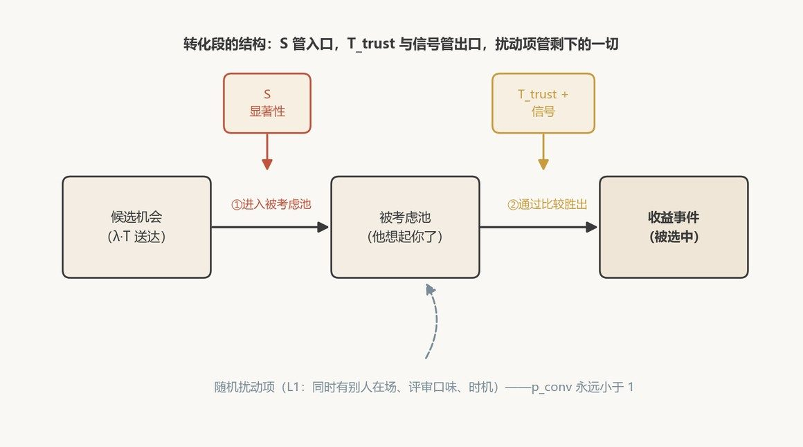
图 9-2 转化路径：从被想到到被选中 主线只需要三句白话结论：
被选中 = 被想起（S）× 被信任（T_trust）× 运气（基准与随机）。前两项是你能经营的存量，第三项是你必须尊重的现实。
概念与机制 公式与参数 可核数据 篇幅 需专注
S 这件事，玄学的版本是“缘分”，心理学的版本叫可得性（availability）：人在决策时，想起谁，不是全记忆检索，而是“最容易浮现的那几个”。
成本
约 2,289 字 · 约 6 分钟 · 含公式，附人话翻译
结构
19 段 · 含小标题
备注
《第9章 转化：为什么被选中的是他不是你》
本节全文 · 约 2,289 字
S 可得性（availability） ：人在决策时，想起谁，不是全记忆检索，而是“最容易浮现的那几个”。可被想起的概率，工程上拆成三个可修的子项：
子项一：可检索性（搜得到）。 搜索引擎与内部推荐系统是当代“被想起”的第一入口。测试方法残酷而简单：搜索你自己的名字和“名字＋领域关键词”，看第一页是不是你、是不是指向你想让人知道的那个你。 路明的第一页是篮球教练——这在检索意义上等于“此人在本领域不存在”。修法：稳定的署名（笔名/本名一致）、干净的阵地（一个能集中呈现你作品的主页）、对外的一致性（各平台头像简介统一）。
实操：搜索你自己（三十分钟，一年一次） 子项一的关键动作是一次彻底的自我检索。给一个完整的操作流程，建议每年固定做一次（比如生日或元旦）：
第一轮：四个搜索（十五分钟）。 用无痕窗口（避免个性化结果污染）依次搜：①你的本名；②你的名字＋领域关键词（客户/雇主会怎么搜你）；③你的名字＋公司名（合作方会怎么核验你）；④你常用的 ID 或笔名（熟人会怎么找到你）。每一轮记两行：第一页十条里有几条是你？那几条拼出的“你是谁”，与你想要的“你是谁”一致吗？
第二轮：画像判读（五分钟）。 四轮结果对照下面四种画像——多数人是混合型，找出主导型：
洁净型 ：十条里七八条是你，且指向一致（作品、观点、履历）。S 同名淹没型 （路明型）：第一页很热闹，但没有一条是你——或者有几条属于“另一个你”。修法是差异化：给署名加上可区分的中间要素（地域词、领域词、中间名），并把所有阵地统一到同一个“完整署名”上。混乱型 ：有几条是你，但拼出的“你”不是你想要的你——十年前的旧职位、无关的讨论区发言、过期信息排在前排。修法是覆盖而非删除（旧内容多半删不动）：用新的、指向一致的内容把旧内容挤出第一页——第一页的位子有限，新内容进一条，旧内容退一位。零存在型 ：十条里零条是你。先别急着做个人品牌——零存在型的问题通常不在呈现，在存量：你还太少可公开说的成果。第一动作回到第7章（先攒可追踪的接触与交付），攒出三件可说的事，再回来做这一轮搜索。第三轮：修复排程（十分钟规划，执行分散到之后一个月）。 修法就是老三样——稳定署名、干净阵地、对外一致——但顺序按画像定：零存在型先攒料再上线；混乱型先一致后增量；淹没型先区分后布局；洁净型只做维护。
一个容易被忽略的判读维度：搜索结果里“谁在说你”比“有几条”更重要 。十条里八条是你自己发的，不如十条里三条是别人在引用你、讨论你——第三方引用是更硬的信任信号（9.4 节的“可审计”），且几乎无法伪造。所以搜索完自己，值得追加一问：过去一年，有谁在他们的场合提到过你？（表 9-1 第 4 项的“被引证”就是把这个变成读数。）
子项二：标签精度（说得清）。 别人想起你时，脑子里挂的标签是什么？“人很好”不是标签（不指向任何决策场景），“做跨境结算合规的”是标签（指向每一个相关决策场景）。判据照抄第4章 L4 的说法：你的定位要清晰到能用一句话说清“我是做什么的”，且那句话里含有别人做决策时会用到的词。 修法：为自己写三行简介（我是谁、我做过什么可核的事、找我做什么），贴在所有阵地，一年一修。
三行简介值得给一个可直接套的模板与示例（示例人物为演示）：
第一行（标签行）：我是做＿＿的 ——一句话定位，含决策关键词。
第二行（证据行）：我做过＿＿，＿＿可核验 ——可核的事一件就够，两件封顶。
第三行（行动行）：如果你要＿＿，可以找我 ——把你想要的决策场景写明。
示例：我是做出海 app 本地化合规的；主导过两款产品在东南亚三国的合规落地，案例页可查；如果你的产品要出海东盟，可以找我聊合规路径。
判据在第二行：“可核的事”是简介与广告的分界线 。写“深耕行业十年”不如写“某项目从 0 到 1，甲方是谁”——前者任何人都能说，后者只有做过的人说得出。三行里只要有一个可核实的锚点，陌生人就有理由往下读；一个都没有，再漂亮的排版也只是自我描述（纪律三：陌生人不信自我描述）。
子项三：稀缺度（绕不开）。 S 把标签收窄会减少你出现的场景，但会暴涨你出现时的权重 。“做营销的”检索亿万人，“做医疗器械出海营销的”检索几百人——当那个具体决策出现时，你是几百人里的第一名，而不是亿人里的第一万名。窄定位的代价是放弃泛场景，收益是独占窄场景：这是一个用频率换权重的交易，权重在重尾世界里更值钱（第4章） 。
【进阶 · 可跳过】
为何 S 作用于“被选择”而非“机会到达”（H3 命题）
一个容易混淆的问题：S S λ （机会到达率），S p c o n v 选择方 ：当机会需要一个落点时，决策者在他的候选集里检索——S
检验设计（H3 命题）：对照两组 S S S S S λ 与经 p c o n v
跳过本框不影响后续阅读。
概念与机制 公式与参数 可核数据 篇幅 一坐
第二段存量比第一段慢，但比第一段厚。
成本
约 1,094 字 · 约 3 分钟 · 含公式，附人话翻译
结构
8 段 · 含插图
备注
《第9章 转化：为什么被选中的是他不是你》
本节全文 · 约 1,094 字
第二段存量比第一段慢，但比第一段厚 。
T t r u s t 重复博弈中，履约历史形成的信任存量。 它是这样一本账：
每一次按约交付（哪怕小事），存款 +1； 每一次违约（哪怕有理由），取款 −N，N 远大于 1 ——信任账本是不对称的：建立需要十次，摧毁只要一次（这不对称本身有博弈论根据：背叛在重复博弈中是最难被原谅的策略，因为它证明“在足够大的诱惑下你会违约”）； 账本不只记在你和对方之间——旁观者也在记账 。行业是个小地方的真实含义是：账本之间会互相抄送。 由此推出三条工程纪律，每条都反直觉：
纪律一：小额履约是主战场。 大项目的履约人人盯得紧，真正的账本差距在小事上：说好周三给的资料、随口答应的引荐、会上承诺的一小时帮忙——这些“不值得记”的小履约，恰是账本上最密集的记账行为。 把它们当作正式承诺管理（记下、做到、闭环告知），是 T t r u s t
纪律二：拒绝也要履约。 做不到的事，清晰而及时地拒绝 ，在信任账本上不是违约，是履约——它记的是“此人的承诺有含金量”。真正扣分的是含糊其辞的拖延（既不答应也不拒绝，拖到对方自己死心）：这在账本上记为“不可预测”。可预测的不合作，好过不可预测的合作。
纪律三：让账本可审计。 信任存量的一大半价值在于“能被第三方查证”——作品集、案例页、可联系的前合作方、公开的交付记录。郑帆的检索结果为什么值钱？因为它是一份任何人可审计的账本摘要 。把履约记录整理成可展示的形态，是 T t r u s t 陌生人对你的信任，来自可审计的痕迹，不来自你的自我描述。
三条纪律落到一周里，账本长这样（复合示例，细节为演示）：周一，答应同事“周三前把数据口径文档发你”——记下，周三上午发出，附一句“发了，有疑问随时说”（存款 +1，闭环告知让记账可见）；周三下午，邻组的人问一个领域问题，超出能力范围，回复“这块我给不了可靠答案，建议问某某，他是这个方向的”（纪律二：可预测的不合作）；周四，客户随口说“下次帮我留意下这类供应商”，周五真的转去一条线索（小额履约 +1——“随口的托付”是账本上最容易被漏记的存款）；周五晚，发现周一发出的文档里有个数字要更新，主动补发修订版并说明原因（履约后的主动修正也是存款——它记的是“此人交了东西之后还盯着”，这比交付本身更稀缺 ）。
一周下来：三次存款、一次有质量的拒绝、零违约。这样的周复一周，就是 T t r u s t 没有一件大事 ：大事一年遇不上几回，小事每周几十件——账本的斜率由小事决定。
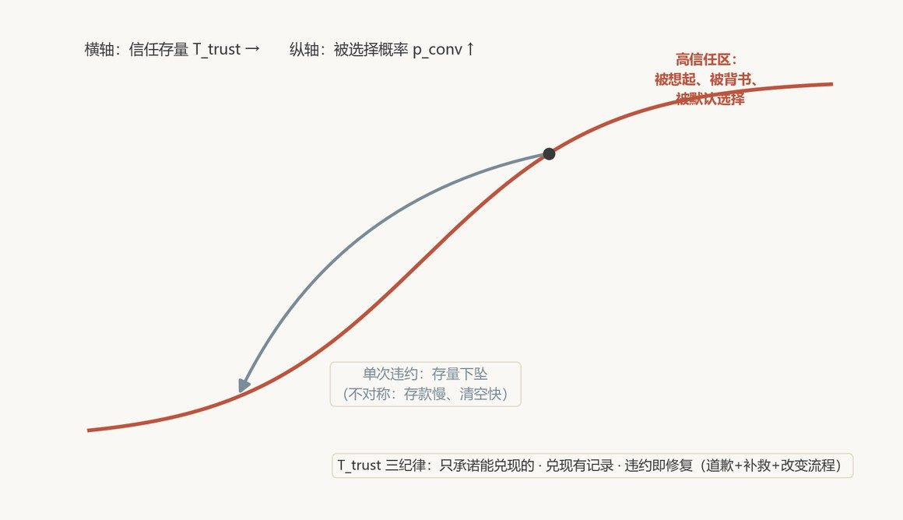
图 9-3 信任存量与被选择概率
概念与机制 篇幅 一坐
第三个转化变量藏在公式之外，但每个用过它的人都知道它的存在：信号——第3章讲“七相”时立过的概念（首因信号与信号成本）。
成本
约 537 字 · 约 1.5 分钟 · 不需要任何数学基础
结构
4 段
备注
《第9章 转化：为什么被选中的是他不是你》
本节全文 · 约 537 字
第三个转化变量藏在公式之外，但每个用过它的人都知道它的存在：信号 ——第3章讲“七相”时立过的概念（首因信号与信号成本）。
在陌生人决策里（多数被选择的场景里，决策者对你并不熟），对方无法观测你的真实能力，只能读你的可观察特征 ：材料的齐整度、表达的结构性、时间的守约性、细节的一致性。这些信号之所以有效，是因为它们有成本且难以伪造 ——把材料做到齐整需要投入认真，这份认真无法在最后一夜伪装（这就是信号理论里“昂贵信号”的含义：正因为造假贵，信号才可信）。
本章把信号工程收敛为三条最便宜的实操（不需要改变长相，正如第3章的承诺）：
材料的齐整度 ：简历/提案/作品集的格式、错字、一致性——它是“这个人如何对待他自己的事”的最便宜代理；时间的守约性 ：迟到十五分钟在信号账本上的扣分远超十五分钟的价值——守时是“尊重契约”的最小可观察样本；表达的结构性 ：结论先行、依据跟上、请求明确的三段式（第2章出现过）——它让对方“处理你”的认知成本最低。在别人的决策疲劳区里，省下对方认知成本的人，赢。 三条的共同点：全都不关于你是谁，只关于你如何呈现你是谁 ——这正是“七相”被本书保留的内核（差异边界不变：不采纳面相断命；第17章会回到它的伦理边界：信号工程有天花板，以貌取人是歧视，不是识别）。
9.6 9.6 一个可核的案例：被选择中的真实随机成分 # 可核证据 公式与参数 可核数据 篇幅 一坐
现在兑现 9.1 节的承诺——本章的坏消息与它的正确用法。
成本
约 992 字 · 约 2.5 分钟 · 含公式，附人话翻译
结构
5 段
备注
《第9章 转化：为什么被选中的是他不是你》
本节全文 · 约 992 字
现在兑现 9.1 节的承诺——本章的坏消息与它的正确用法。
顶级学术会议 NeurIPS 在 2014 年做了一次著名的自体实验：组织者将当年约 10% 的投稿（170 份）复制后交给两组独立的评审委员会 走完全相同的评审流程，然后比较两组的接收决定。结果是：两组的重叠度远低于完美——若评审是完全确定性的，两组应当完全一致；实际数据显示，整体接受率约 22.7%，而相当比例的论文在一组被接收、在另一组被拒——按实验报告的口径，评审结论存在大量不可归因的随机成分 （NIPS 2014 experiment，F-24 已核：NeurIPS 官方回顾与实验组织者的公开数据）。
这个实验的价值在于它把“被选择的随机性”从轶事变成了测量。把结论放回本章框架：
同一篇论文（S T t r u s t 、“能力”完全相同——因为是同一篇），送进两个等价的选择过程，得到不同结果——p c o n v 的随机成分被直接观测到了 ； 随机场景里由此得出的一切错误结论，现在可以一并清理：落选 ≠ 不够好 （两组论文的“真实质量”无差别），当选 ≠ 完胜 （换一组评审，结局可能翻转）； 工程结论不是“躺平认命”，而是一个精确得多的策略：既然单次选择含大量噪声，就不要把资源押在“打磨单次申请”上，而要押在“进入被考虑池的次数与质量”上 ——同一篇论文多投几个合适会议（L2：暴露）、让更多人记得这篇工作（S T t r u s t 同方向的证据还有更多：同行评审一致性的多项研究发现，评审者之间的信度普遍不高（不同评审对同一稿件的评价相关性有限）〔待核：多项评审信度研究的元分析口径〕；招聘与选拔研究中，面试对实际绩效的预测力也长期低于大众直觉（Schmidt & Hunter 1998 选拔方法效度元分析，F-28 已核）。把这三处证据并置，一个反直觉但站得住的结论浮出来：在多数专业选拔里，“被选中”这件事的运气成分，比参与者愿意承认的大得多——所以第4章把 L4 命名为“选择之运”，不是一个修辞选择，是对文献的忠实概括。
按案例纪律补边界：随机成分大 ≠ 一切无差别。随机性决定“同等水平的两人谁当选”，不决定“不同水平的两人谁当选”——S T t r u s t 所在的那一档 ，噪声只在档内起作用。这正是“尽人事”（经营存量）与“知天命”（尊重噪声）的分界线，第16章还会回来。
工具与产出物 公式与参数 表格 行动工具 篇幅 一坐 含表
表 9-1 人设显著性自评量表（每半年一轮）
成本
约 375 字 · 约 1 分钟 · 含公式，附人话翻译
结构
3 段 · 含表
备注
《第9章 转化：为什么被选中的是他不是你》
本节全文 · 约 375 字
表 9-1 人设显著性自评量表（每半年一轮）
# 检验项 操作 评分（1–5） 1 搜索洁净度 搜你的名字＋领域词，第一页有几条是你且指向正确？ 2 标签精度 请三位熟人各用一句话说“我是做什么的”，答案一致吗？含决策关键词吗？ 3 作品可审计性 有没有一个页面，陌生人 3 分钟能核验你最重要的三件成果？ 4 被引证 过去半年，别人在他们的场合提到/引用/转发过你几次？ 5 被想起 过去半年，“有人主动来问一件你领域的事”发生了几次？ 6 稀缺度 你的标签搜出来，全国大约有多少人能挂上？量级（百/千/万）
注：六项测的不是“你行不行”，是“需要你的人找到你、想起你、核验你的摩擦有多小”。
判读规则 ：1、2、6 项是 S S 结果读数 ——存量修了半年，这两个数不动，说明修的方向不对（通常是标签问题：被想起的标签和你想要的机会不匹配）。
可执行清单 行动工具 篇幅 一坐
现在花三分钟，做量表的第一项：用无痕窗口搜索你的名字＋你的领域关键词（比如“张三 渠道合规”），数一数第一页有几条是你。
成本
约 208 字 · 约 1 分钟 · 不需要任何数学基础
结构
3 段
备注
《第9章 转化：为什么被选中的是他不是你》· 本章交付的动作
本节全文 · 约 208 字
现在花三分钟，做量表的第一项：用无痕窗口搜索你的名字＋你的领域关键词 （比如“张三 渠道合规”），数一数第一页有几条是你。
零条的人，今晚就做一件事：把你近三年做过的、可公开说的成果整理成一页（做什么、结果如何、谁可核证），发到任何一个公开可检索的地方（行业社区、职业平台、个人页面均可）。
这不是自我营销，这是把你的信任账本从“熟人记忆”升级为“可审计记录”的第一笔资产入账 ——路明输给郑帆的那九个百分点，就藏在这一页里。
深水区（进阶·可跳过） 【进阶 · 可跳过】
p c o n v 的 logistic 形式：从机制到参数
为什么用 logistic 而不是线性？设选择方的决策为“候选集内比较后取综合评分最高者”，当评分含随机扰动（评审噪声、偏好异质）时，“主体 i 被选中”的概率对评分的依赖呈 S S S T t r u s t 边际最大点在中部 ——对多数人（既非无名也非顶流），S T t r u s t S 先有存在，再谈显著性。
参数估计：β1 、β2 可由追踪数据估计（主体的 S T t r u s t S 你大概率在中段 。
跳过本框不影响后续阅读。
闭环校验 与前置公设是否冲突 ：无冲突。p c o n v S T t r u s t 有代理（量表、审计痕迹）；干预手段（三子项、三纪律、三信号）方向明确。是否新增概念需回写术语表 ：新增“可检索性/标签精度/稀缺度”（S 是否产出可测指标或工具 ：产出人设显著性自评量表（表 9-1，附录 B/E）。传统回响 本章是十二要素对应最密集的一章——三条要素在此聚齐（对应总表见第3章表 3-1）：
四积阴德 ：信任账本就是它的会计科目表——“积善之家必有余庆”的现代版本是“履约历史形成复利存量”；差异边界照旧：不采纳因果报应机制，只承认重复博弈的可测效应。六名 ：S 七相 ：首因信号（材料、守时、结构）是其可训练的内核——伦理边界不变：改善自己的信号 ≠ 以相判人。外部对话 与巴拉巴西《The Formula》 ：巴拉巴西用大规模数据证明：在众多领域，“成功”（引用、收入、影响力）的关键变量不是业绩本身，而是业绩被网络感知与放大的方式 ——他那个著名的结论常被概括为“成功不取决于你做了什么，而取决于人们是否知道你”。本书的 S S T t r u s t S T t r u s t
与斯宾塞（A. Michael Spence）的信号理论 ：斯宾塞 1973 年用教育信号解释劳动力市场——教育的作用之一是可观测地证明你属于高生产力类型 （因为它有成本、且对不同类型的人成本不同）。本书的“信号工程”是这个原理在面试、提案、首因场景的微缩应用。差异在尺度：斯宾塞研究的是市场级制度，本书给的是个人级清单——但原理同源：可信的信号必须是昂贵的，廉价的自我标榜在博弈里自动折价。
本章三句话 第一，被选中 = 被想起（S T t r u s t
第二，S
第三，信任账本十次建立、一次摧毁——小额履约是主战场，清晰拒绝也是履约，让账本可审计是它作用于陌生人的唯一方式。
篇二·五段机制
第10章 放大：让运气自己滚起来 8 / 8图 10-1 雪球沿坡滚下，身后留下渐宽的轨迹；旁边一只光轮安静地转。滚动本身，就是第二重运气。 【题记】凡有的，还要加给他，叫他有余。——《马太福音》25:29
第一，前四段机制管的是“机会如何来到你、被你认出、落到你头上”；本章管一件事：如何让已经发生的成功，变成下一轮成功的输入 。
第二，增益层的数学本质是乘性增长：本期结果按固定比例改变下期的机会到达率——同样一次成功，接进回路的人和没接进的人，五年后差出指数。
第三，回路是双刃的：它放大好运，也放大坏运——回路未闭合就加杠杆，是本书失效模式清单里代价最大的一条。
10.1 10.1 主案例：一条爆款如何滚成一条飞轮 # 案例与直觉 可核数据 篇幅 一坐 主案例
先看一个常见情形（复合案例，非实录，细节作了模糊处理）。
成本
约 803 字 · 约 2 分钟 · 不需要任何数学基础
结构
10 段
备注
《第10章 放大：让运气自己滚起来》
本节全文 · 约 803 字
先看一个常见情形（复合案例，非实录，细节作了模糊处理）。
小满是个做职场内容的两万粉小创作者。某年三月，她的一条视频意外爆了——三百万播放，一夜涨粉八万。
爆款落地的那个周末，她的后台涌进来四样东西：几十条广告询价、几百条私信提问、几家 MCN 的签约邀请、以及十几万“路过”的粉丝。这四样东西，就是一次 L4 命中（被平台算法选中）的完整产出清单。
接下来三个月，两个平行宇宙的故事都真实发生过（她是两个人物的复合）：
宇宙 A 的版本 ：她接了三条广告（报价按粉丝数给），签约了 MCN，随后按经纪方的排期高频更视频。三个月后，流量回落——爆款的流量红利耗尽，广告报价随数据下滑而缩水，粉丝从“路过的人”变成“沉默的大多数”。年底复盘，那条爆款给她留下的，是一段“曾经到过三百万”的记忆和十几万不互动的粉丝数。一次性的烟花。
宇宙 B 的版本 ：她做对了三件小事。第一，她把私信里一百多条高频提问整理成选题库——爆款的流量被转存成了内容雷达 ；第二，她只接了一条与她定位契合的广告，把另外两条的档期用来做“爆款拆解”系列——单次成功被转成了可复用的方法论资产 ；第三，她在简介里挂了一个“职场问题互助”的社群入口，两万人沉淀下来——路人流量被转存成了可反复触达的关系存量 。六个月后她没有第二条三百万——但有五条五十万级的稳定输出、一个活跃的社群、和广告主们“她的粉丝真的会买东西”的口碑。两年后，她的月收入结构里，广告占比不到一半：社群、课程、咨询全是那条爆款滚出来的。
同一个爆款，两种命运。区别不在爆款本身（L4 的随机成分对两个宇宙一视同仁），在于爆款的产出有没有被接进一个会转的结构 ：
宇宙 A：爆款 → 现金 → 消耗。一次成功是一张提款卡，用完即弃。
宇宙 B：爆款 → 现金 + 选题库 + 方法论 + 关系存量 → 更高的下期到达率 → 更多命中 → ……一次成功是一台发动机的第一个冲程。
本章的任务：把宇宙 B 那个“……”里的结构讲清楚，并给你一张能自己动手设计的画布。
概念与机制 公式与参数 可核数据 篇幅 一坐
先立本章的公式。
成本
约 765 字 · 约 2 分钟 · 含公式，附人话翻译
结构
7 段 · 含插图
备注
《第10章 放大：让运气自己滚起来》
本节全文 · 约 765 字
先立本章的公式。
λt +1t g ·1本期成功)
用人话翻译：如果这一期你撞上并抓住了机会，下一期你的机会到达率在原有基础上乘上一个放大系数（1+ g ）；如果这期没有，到达率保持不变。
λt 𝟙{本期成功} ：指示函数——本期有没有“成功事件”（一次爆款、一个大客户、一个标杆项目），有则取 1，无则取 0；g （回路增益系数） ：每次成功转化成到达率增幅的比例——g 这个式子看起来温和，算起来吓人。演示算例（数字为演示值）：
设两条起跑线相同的轨道，每期成功率都受 λ 影响，暂且简化为“每期一次成败判定”：
无回路（ g = 0） ：λ 恒定。十期里的成功次数服从固定的二项分布，期望稳定，收入曲线是平的 （围绕均值波动）。有回路（ g = 0.15，每成功一次 λ 提高 15%） ：前期两条线看不出差别（运气还没分出先后）；大约从第四、五期开始，经历过成功的轨道 λ 已经系统性高于另一条——它不但更容易再成功，每次成功还把优势进一步乘大 。二十期后，两条轨道的累计命中数可以差出数倍，且差距还在加速。注意这个模型里没有任何一方更努力 ——两条轨道的行动密度相同、能力相同。差距完全由“成功是否被结构性地转存为下一期的 λ ”造成。这就是第4章增益层命题的定量版本：L5 不产生运气，L5 改变运气的复利速度。
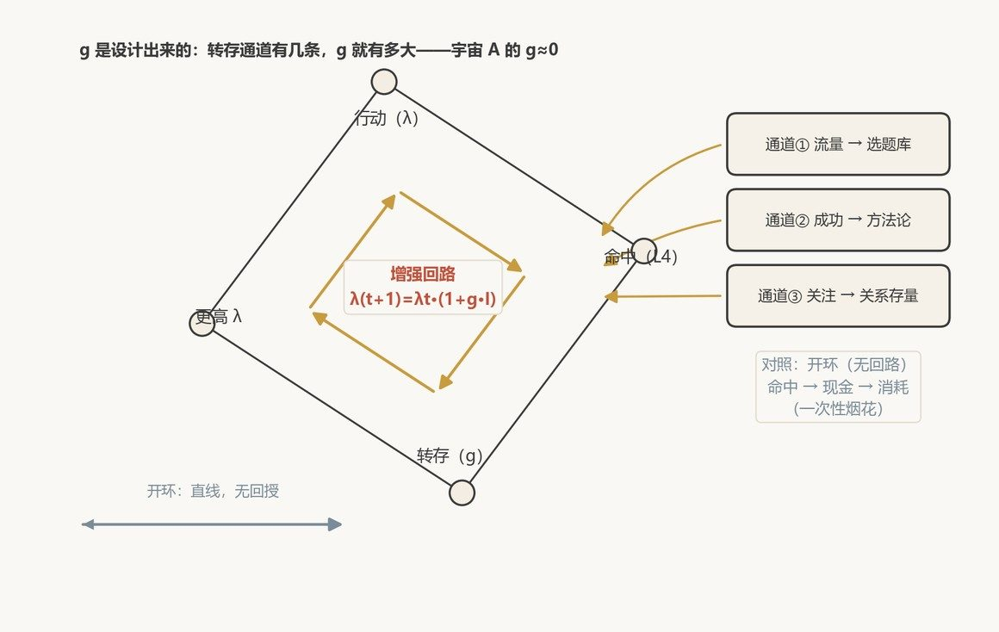
图 10-2 增强回路：把命中转存为下期到达率 一个必须立刻说破的技术细节 ：g g 设计出来的 。宇宙 A 也有成功，但她的成功没有转存通道——流量变现金，现金离开系统，g 给系统焊接转存管道，把“自然的 g ”从近零提到 0.15 。这正是“增益层”三个字的工程含义：回路增益系数是本书所有参数里，最依赖主动设计的一个。
概念与机制 公式与参数 表格 篇幅 一坐 含表
三条转存管道，对应的都是同一个概念：运气资本——历史成功沉淀下来、能提高未来机会到达率与转化率的结构性存量。
成本
约 1,095 字 · 约 3 分钟 · 含公式，附人话翻译
结构
11 段 · 含表
备注
《第10章 放大：让运气自己滚起来》
本节全文 · 约 1,095 字
三条转存管道，对应的都是同一个概念：运气资本 ——历史成功沉淀下来、能提高未来机会到达率与转化率的结构性存量。
工程上，运气资本有四个可辨认的形态，全部可审计：
形态一：作品与案例库（可检索的存量）。 每一次交付都沉淀成“可指给下一个人看”的东西——作品集、案例页、项目复盘。它同时抬高 S λ （别人照着案例找上门）。判据 ：一次成功结束后，除了钱，你能不能在十分钟内向一个陌生人出示“它发生过的证据”？
形态二：关系存量（可反复触达的网络）。 宇宙 B 的社群是教科书式的转存：平台流量是“租来的”（下个月算法改版就收回），社群关系是“买断的”（你可以反复触达）。判据 ：一次成功带来的关注者里，有多少进入了你能主动触达的渠道（名单、社群、私域）？转化率即转存率。
形态三：方法论资产（可复用的判断力）。 成功复盘沉淀出的清单、流程、模板——它抬高 p d e t 判据 ：同样的事做第二次，你的成本降了几成？降不下来，说明方法论没被提炼。
形态四：声誉与信任余额（第9章的 T t r u s t 增项）。 每次成功交付都是信任账本的大额存款。判据 ：成功之后，“被引荐/被复购/被回头找”的次数有没有台阶式上升？没有，说明成功没有被计入他人的账本（常见原因：成功发生在无人见证的场景）。
四个形态合起来，给“运气资本”下一个可操作的定义：
运气资本 = 一次成功之后，仍留在你系统里、可提高未来命中概率的全部结构性存量。
一个冷峻的推论随之而来：现金默认不算运气资本 ——除非它被配置成前四种形态之一（用奖金雇助理提升 A e f f 潜在形态 ，转存动作完成之前，它躺在系统外。
把“转存”从概念变成动作，需要一张对照表——五种最常见的成功，分别可以转存成什么：
成功类型 作品/案例（形态一） 关系存量（形态二） 方法论（形态三） 信任余额（形态四） 一笔大成交 案例页（背景—动作—结果） 客户进入回访名单 成交话术与流程清单 客户引荐承诺的跟进 一次晋升 晋升答辩材料改写的复盘 新岗位的决策者网络 晋升评审的打分逻辑 提名人/评审人的后续关系 一个项目交付 可出示的交付物摘要 甲方关键人联系方式 项目复盘报告 验收背书与案例授权 一条内容爆款 置顶作品与合集 粉丝进社群/名单 爆款拆解笔记 转载与引用的授权记录 一次获奖 获奖证书与作品陈列 评审与其他获奖者网络 参赛作品的选题方法论 组织方的后续邀约关系
注：每一行的四格都是同一件事的四个转存动作——空着的格子，就是那次成功漏掉的部分。检查过去一年的成功清单，多数人的形态一栏几乎全空：不是没成果，是成果没被“可出示”地存下来。
概念与机制 公式与参数 表格 可核数据 篇幅 一会儿 含表
现在把宇宙 B 的做法一般化。
成本
约 1,428 字 · 约 4 分钟 · 含公式，附人话翻译
结构
11 段 · 含表
备注
《第10章 放大：让运气自己滚起来》
本节全文 · 约 1,428 字
现在把宇宙 B 的做法一般化。增强回路的设计，收敛在一张画布上——四个问题，四个答案，一个环：
表 10-1 增强回路设计画布
设计位 问题 小满（宇宙 B）的答案 你的答案 ① 命中识别 什么算一次“成功事件”？（要定义到能自动记账） 播放 > 50 万 / 单条涨粉 > 1 万 / 单笔成交 ② 转存通道 成功的产出经哪几条管道转存？（至少两条：流量→存量、经验→方法论） 私信→选题库；爆款→拆解系列；关注→社群 ③ 回投比例 成功带来的资源，固定多大比例回投到下期暴露与质量？ 广告收入的四成回投制作与设备 ④ 触发复测 多久检查一次 g g 每季度：老粉占比、复购率、被引荐数
注：四个格子填满，你的成功就有了“下一个冲程”——空着哪个格子，成功就从哪里漏走。
四个设计位各自的坑，提前标出：
①的坑：定义太宽 。把“感觉不错的一周”当成功，指示函数乱跳，回路无规律可循。成功事件必须客观、可数、与到达率有因果直觉。②的坑：只有现金一条管道 。绝大多数“运气好却没滚起来”的人，输在这里——单管道系统的 g ③的坑：全额消费或全额回投 。前者是宇宙 A；后者是另一个极端——回投比例压到 100%，当期生活质量崩塌，系统不可持续。合理区间因人而异，但比例必须预先固定 （写下来说明理由），临场决定的比例会系统性漂向零。④的坑：从不复测 。g g 两项升、一项平—— g 为正且稳定，回路在转 ；复购率持平需要单独查（可能只是样本小，也可能是产品端问题，与回路无关）。若三项全平或为负，按④的坑处理：管道漏了，回头查②。注意读数纪律：三个数都必须是“结果读数” ——日志里的数字，不能用“感觉老客户挺多”代替；g
画布不只适合创作者。给一个销售岗位的填写示例（复合案例，非实录；数字为演示值），看看四个设计位在非内容行业怎么填：
①命中识别 ：定义成功事件为“单笔回款超过全年目标的八分之一，或一个客户从新开发转为续约”——客观、可数、与到达率有因果直觉（大单带来口碑，口碑带来新线索）。
②转存通道 （两条）：第一条，每笔大单结束后一周内，把成交过程写成三页案例页（形态一），发给团队并在客户同意后公开；第二条，客户关系录入季度回访名单（形态二），大客户本人加进年度答谢名单。
③回投比例 ：大单提成的三成固定投入三条渠道——请客户吃饭的预算（维护 λ ）、买行业数据（喂养 K 比例写死在绩效发放当天 ——不写死的话，奖金到手那天就是比例归零那天。
④触发复测 ：每季度数三个数——新线索里“老客户介绍”的占比（g
填完再看，销售岗位的“增强回路”与创作者没有本质区别：成功定义、转存管道、回投纪律、季度读数——四个格子对一切职业同构 。差别只在形态的具体载体：创作者的载体是内容，销售的载体是案例与关系，工程师的载体是交付物与方法论文档。
概念与机制 公式与参数 篇幅 一坐
增益层有一个对称性，所有鼓吹“复利飞轮”的成功学都不会告诉你：回路不区分方向。
成本
约 1,166 字 · 约 3 分钟 · 含公式，附人话翻译
结构
10 段
备注
《第10章 放大：让运气自己滚起来》
本节全文 · 约 1,166 字
增益层有一个对称性，所有鼓吹“复利飞轮”的成功学都不会告诉你：回路不区分方向。
λ_{t+1} = λt ·(1 + g 失败若被结构性地转存 （一次失败烧掉信任、赶走客户、摧毁现金流），下期的到达率同样乘性下降——声誉回路的 g g g 火灾蔓延与水车转动，用的是同一条传送带。
由此引出增益层的两条安全规程（第11章将展开为完整的风控章）：
规程一：回路未闭合，不加杠杆。 “回路闭合”的判据是②③两个格子已在至少两个周期里被验证有效（g 预支 第二期尚未实现的到达率——如果第二期命中没来（它是概率事件！），乘性下降从杠杆的一端开始。宇宙 A 若签的是对赌型 MCN（保底流量承诺），她三个月后的流量回落就不只是收入下滑，而是违约——回路未闭合时加杠杆，等于给随机过程上了倒扣的保险。
规程二：区分“可转存的失败”与“不可转存的失败”。 老韩案例（第3章：亏三十万的项目带出三个客户）说明失败可以被转存——但转存的前提是失败原因被清算成方法论资产 （形态三），且失败本身没有击穿信任与现金的下界 （第11章的 D m a x 保留参与权，就是保留回路的正向运行能力。
【进阶 · 可跳过】
波利亚过程：为什么增强回路通向极端
波利亚坛子（Eggenberger & Pólya, 1923）：坛中初始一红一白两球；每次摸出一球后放回并补入一球同色球 。问：n 次之后红球比例收敛到哪？答案惊人：收敛，但收敛点本身是随机的 ——红球比例以正概率收敛到 [0,1] 区间上的任何一点，初始的微小随机优势被过程完整锁定为渐近份额。
这是增强回路的数学原型：①早期事件 disproportionately（不成比例地）重要——前几期的随机命中决定系统的长期份额；②系统有强路径依赖——同样的参数，不同的初始运气序列，收敛到完全不同的终点；③个体不可预测与总体可预测并存 ——单个坛子的终点随机，但成千上万个坛子的比例分布是确定的（Beta 分布）。把它翻译回人生：单个人的“滚起来能滚多大”含大量随机，但“接了回路的人群比没接的人群分化得更彻底”是确定的。你无法保证成为波利亚过程的最大受益者，但你可以决定自己是否进入这个过程。
乘性增长的姊妹结果：Gibrat 定律（比例效应）描述“增长率独立于规模”的乘性过程如何生成对数正态与幂律——这是第4章重尾分布（αv ）与本章回路（g 重尾的世界之所以重尾，一半功劳在回路的乘性放大。 （M-01/M-02/M-03 三条数学引用的正文着落点即此处，详见附录 D。）
跳过本框不影响后续阅读。
10.6 10.6 一个可核的案例：被回路放大的初始随机 # 可核证据 公式与参数 可核数据 篇幅 一坐
“增强回路放大初始随机性”——这个命题最干净的实验证据，来自一个著名的在线音乐市场实验。
成本
约 1,124 字 · 约 3 分钟 · 含公式，附人话翻译
结构
6 段
备注
《第10章 放大：让运气自己滚起来》
本节全文 · 约 1,124 字
“增强回路放大初始随机性”——这个命题最干净的实验证据，来自一个著名的在线音乐市场实验。
2006 年，Salganik、Dodds 与 Watts 在 Science 发表了一项大规模实验：他们搭建了一个在线音乐社区，放 48 首未知乐队的歌曲，招募上万名用户下载。用户被随机分入八个平行世界 ：一个“无社会信息”世界（看不到任何下载统计，纯听歌打分），七个“有社会信息”世界（能看到每首歌的下载量排行——社会影响存在的条件）。
结果（方向性结论，具体数字见附录 C〔待核：实验规模、排名相关系数与质量—成功脱钩的量化结果〕）：
同样的歌、同样的人，八个世界排出八张不同的榜 ——各世界之间的排名相关性远低于完美；某首歌在这个世界登顶、在那个世界垫底，司空见惯。成功高度不可预测。 社会信息越强，排名越分化 ——后续实验中提高社会影响的可见度，世界间的分歧进一步加大，成功与歌曲“客观质量”（无社会信息世界里得到的评分）的相关性进一步下降。回路放大随机，胜过质量决定成功。 初始的领先会被锁定 ——歌曲早期的下载优势在排行可见的条件下被自我强化（越靠前越被下载，越被下载越靠前）：优先连接，一个标准的社会版波利亚过程。这个实验对本书的价值在于它把 L5 的三个论断一次性做成了实验事实：回路真实存在（社会信息改变一切）、它放大的是初始随机而非质量（成功与质量脱钩）、它产生锁定（先发优势自我巩固） 。
放回实操框架，三句话读数：
对个人 ：你的“第一波小优势”（最初的一批客户、第一批粉丝、第一段履历）比你以为的重要得多——不是因为它们本身多大，而是它们是否被接进回路，决定了它们是波利亚过程的第一次摸球还是一次孤立事件。宇宙 B 的社群，本质上是把“第一波粉丝”这个随机初始条件锁进 了自己的坛子。对质量论者 ：实验没有说质量无用——无社会信息世界里质量与评分稳定相关。它说的是：在有回路的世界里，质量的边际作用小于“是否进入回路” 。第8章的 K A e f f λ 的产出不回流，你仍是无社会信息世界的高分乐队——好，但没人知道 。对宿命论者 ：初始随机被放大 ≠ 结局注定。八个世界的排行榜虽各不相同，但没有一首“质量垫底”的歌在任何一个世界登顶 ——回路放大的是有底子的随机，不是无底子的赌博。质量决定你进入的是哪一组抽奖，回路决定你在组内滚多远。 按案例纪律补边界：音乐下载是一个强社会影响的场景（消费选择天然从众），并非一切领域同构——职业选择、企业采购等场景中质量权重更高。实验结论的适用边界是“存在显著社会影响/口碑传导的领域”，而恰恰是这类领域（内容、消费、就业市场的热门赛道）占据现代人运气的大头 ——这也是为什么它值得作为本章的主证据。
10.7 10.7 一个可核的案例（续）：科学界的马太效应 # 可核证据 公式与参数 可核数据 篇幅 一坐
补充第二个方向的证据——回路不只发生在大众市场，最讲质量的科学界同样存在。
成本
约 483 字 · 约 1.5 分钟 · 含公式，附人话翻译
结构
4 段
备注
《第10章 放大：让运气自己滚起来》
本节全文 · 约 483 字
补充第二个方向的证据——回路不只发生在大众市场，最讲质量的科学界同样存在。
社会学家默顿 1968 年提出“马太效应”：已有声誉的科学家，会不成比例地获得新荣誉的承认 ——同样的贡献，署上知名者的名字获得更高的评价与更多的引用（Merton, 1968〔待核：原文案例与后续实证综述〕）。这个概念得名于《马太福音》：“凡有的，还要加给他，叫他有余。”——大概是增益层最古老的一句话表述。
科学界的后续计量研究普遍发现累积优势的证据：早期微小的引用差距随职业生涯被系统性放大（如同样水平的博士论文，发表在高影响期刊者获得显著的引用先行优势，且该优势随时间自我强化）〔待核：科学界累积优势的代表性研究与效应量〕。
两条证据合起来，第4章那条“L5 作用于 L4 之上”的结构关系就完整了：音乐实验展示了市场端 的回路（下载量自我强化），马太效应展示了制度端 的回路（承认自我强化）——同一个 g ，穿两件衣服。 而两者的共同推论，就是小满案例的宏观版本：任何系统里，“被选中”的先行者会系统性地滚大——除非后来者自带另一条回路（跨域迁移、窄定位的稀缺度）来对冲。这为第5章“生态位”的讨论埋下了伏笔。
可执行清单 公式与参数 行动工具 篇幅 一坐
拿出你过去一年最大的一次成功（一个项目、一笔成交、一次晋升、哪怕一条高播放），花十分钟做转存审计：
成本
约 283 字 · 约 1 分钟 · 含公式，附人话翻译
结构
2 段
备注
《第10章 放大：让运气自己滚起来》· 本章交付的动作
本节全文 · 约 283 字
拿出你过去一年最大的一次成功 （一个项目、一笔成交、一次晋升、哪怕一条高播放），花十分钟做转存审计：
它留下了作品或案例 吗？（十分钟内能出示证据？） 它留下了可反复触达的关系 吗？（谁进入了你能主动联系的名单？） 它留下了方法论 吗？（第二次做同类的事，你的成本降了吗？） 它在别人的账本 上记了一笔吗？（之后有人因此回头找你、引荐你吗？） 四个问题，三个“没有”——那么恭喜你找到了自己最大的运气漏点：你不是没运气，你的运气是一次性的。 今晚就把第一个“没有”补上：把那次成功写成一页可出示的案例（背景—你的动作—可核结果），发出去。这是焊接转存管道的第一道焊缝，g
闭环校验 与前置公设是否冲突 ：无冲突。回路公式两端量纲一致（[次/月]×无量纲）；g 是否新增概念需回写术语表 ：新增“转存通道”（四形态的前置概念）、“回投比例”、“可转存失败/不可转存失败”（已回写 system_doc）。是否产出可测指标或工具 ：产出增强回路设计画布（表 10-1，附录 B/E）与两条安全规程（未闭合不加杠杆、失败分类清算）。传统回响 九交贵人 ：贵人四重作用的第四重（抬高 g 贵人网络本身就是一条天然的增强回路，只要每一轮互惠都被兑现。 四积阴德 （回指第3、9章）：信任账本的存款利息在本章结算——T t r u s t g 外部对话 与巴拉巴西《The Formula》 ：第5、9章两次引用过巴拉巴西，本章正面处理他与本书记录最深的一处分歧。巴拉巴西的成功科学研究“成功如何被网络放大”——优先连接、无标度分布、Q 因子（业绩被感知的品质），他的结论多数是分布级的描述 ：世界的成功分布长这样、放大机制是这些。本书尊重全部这些描述，但认为描述不是工程的终点：知道优先连接存在，与知道“我的系统该在哪三个位置焊接转存管道”，是两种知识。 本书的 g 少讲世界是怎样的，多讲你能拧哪个旋钮。
与成功学的“复利叙事” ：流行成功学深爱复利曲线，但三个偷换让他们的版本失真：①把确定性复利 （固定利率）偷换进实际是随机过程 的系统（波利亚坛没有固定利率，只有随机的补球）；②只画正向回路，不画对称的反向冲程（10.5 节）；③从不给复利装仪表（g 回路存在、可设计、可测量、会反向——四件事同时为真，才是工程。
本章三句话 第一，增益层的算术是乘性的：每次成功若被转存为下期的 λ ，二十期后与不转存者的差距是指数级的——而 g
第二，运气资本有四个可审计的形态：作品案例库、关系存量、方法论资产、信任余额——现金默认不算，除非配置成四者之一。
第三，回路是双刃的：它同样放大失败——回路未闭合不加杠杆，是增益层的头号安全规程。
篇二·五段机制
第11章 收敛：先活下来，才谈得上运气 9 / 9图 11-1 退潮后的沙滩，空长凳与一双凉鞋。运气故事的第一页总是涨潮，工程学的第一页是退潮。 【题记】昔之善战者，先为不可胜，以待敌之可胜。——《孙子兵法·形篇》
第一，前四段机制都在做乘法的其他各项；本章管最后一项——只要这一项归零，前面所有积累的乘积同时归零 。
第二，收敛段的工程学只有四个字：限制下行 ——你无法让好运必然发生，但你可以让坏运无法致命。
第三，本书全部参数里只有一个是完全由你设定的：最大可承受回撤 D m a x
案例与直觉 可核数据 篇幅 一坐 主案例
先回到第1章开头的那个车间师傅（A级案例，人人有共识、无需出处；它的作用是引入与共情，不是证据——证据在本章 11.7 节）。
成本
约 680 字 · 约 2 分钟 · 不需要任何数学基础
结构
6 段
备注
《第11章 收敛：先活下来，才谈得上运气》
本节全文 · 约 680 字
先回到第1章开头的那个车间师傅（A级案例，人人有共识、无需出处；它的作用是引入与共情，不是证据——证据在本章 11.7 节）。
买了十几年彩票，中了足以提前退休的奖金。此后五年：换大房子、给孩子付首付、跟朋友投了两个“稳赚”的项目。五年后，他重新回到车间，还多了一笔债。
第1章用这个故事引出“运气不是一个东西”；现在用它的第二层结构。师傅的五年里，运气链条的哪一段出了问题？
不是暴露（他的彩票确实是高强度的“暴露”，虽然是对负期望游戏的暴露——11.6 节专门算这笔账）；不是识别（他看得懂“钱能生钱”，他也确实看见了机会——两个投资项目）；甚至不是转化（他确实把奖金投出去了）。出问题的是最后一段：他把自己置于“一次不利事件就足以抹平全部”的位置。
具体拆：奖金进来的那天，他的资产负债表上出现了一个从未有过的数字——而他的风险管理结构 还是车间工资时代的：没有冗余的概念（全部投入）、没有分散的概念（两个项目、同一朋友圈）、没有止损的概念（“投都投了”）、杠杆藏在人情里（“朋友的 project”不能撤）。收入结构一夜之间升级了，风控结构还停在原点。 五年只是一个随机过程在错误结构上走完的时间——项目顺利，可能八年后出事；项目糟糕，两年就够。结局不写在项目的质量里，写在他的结构里。
这个故事必须配一句泼冷水的话：它不能证明“中奖者普遍如此” ——那是轶事推论，本书的案例纪律不允许。它只说明一件事：一个人可以在其他四段机制全部正常运转的情况下，仅仅因为第五段的结构缺陷，把系统性收益还给随机性。 至于“中奖者作为一个群体究竟过得怎样”，是数据问题，11.7 节给可核的研究。
概念与机制 公式与参数 篇幅 一坐
为什么收敛段在环上排最后，优先级却并列第一？
成本
约 637 字 · 约 1.5 分钟 · 含公式，附人话翻译
结构
7 段 · 含插图
备注
《第11章 收敛：先活下来，才谈得上运气》
本节全文 · 约 637 字
为什么收敛段在环上排最后，优先级却并列第一？
两步推理，都不需要数学。
第一步：整条运气链是乘法结构。 第6章讲过串联可靠性（五段概率相乘）；第7–10章立过期望机遇数的乘法形式 E [N l u c k p d e t p c o n v T 任何一项趋近零，乘积趋近零 ——无论其他项多大。
第二步：五段中，只有收敛段能被“一次事件”击穿。 λ 再低，下个月可以重来；p d e t S T t r u s t 它面对的对手是尾部事件 ——一次爆仓、一次重病、一场诉讼、一次担保连带。尾部事件的定义就是“低概率、高冲击”：它不给你“下个月重来”的机会，它直接修改你的参数空间 ——清空你的 K S T t r u s t
合起来的冷结论：
前四段的积累速度决定你走多快；第五段的下界设定决定你能不能一直走。走得快而走不稳的人，在足够长的时间里，必然遇到一次足够深的回撤——这不是运气差，是结构的必然。
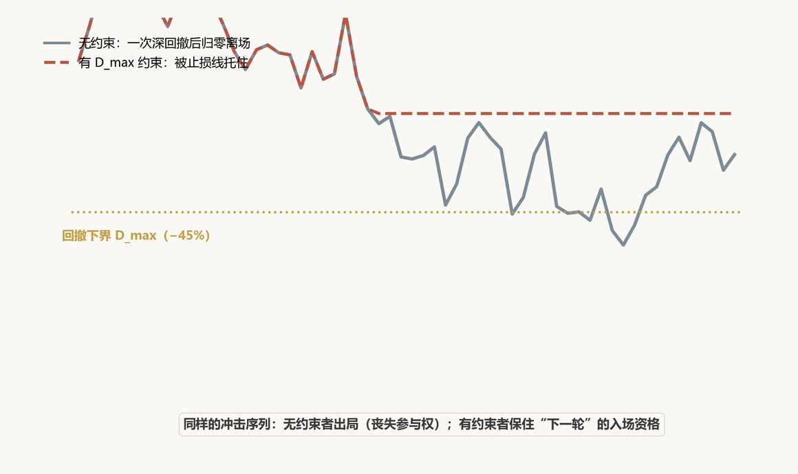
图 11-2 回撤下界与参与权 “必然”两个字需要一个诚实的前提：在足够长的时间里 。这来自概率论的基本事实——只要不利事件概率非零，尝试次数趋无穷时其发生概率趋于 1（大数定律的另一面）。这不是危言耸听，是时间的朋友的阴暗面：活得够久的人，都会遇到自己的尾部事件。 工程学对此的全部回答只有一句：你无法决定它是否来，你只能决定它来的时候你在不在场外、伤不伤筋骨。
概念与机制 公式与参数 可核数据 篇幅 一坐
本书的参数表里，λ_0 环境给定、α 由数据估计、K 与 S 靠积累、g 靠设计——只有一个参数完全出于你的设定：D_max，最大可承受回撤。
成本
约 1,017 字 · 约 2.5 分钟 · 含公式，附人话翻译
结构
8 段
备注
《第11章 收敛：先活下来，才谈得上运气》
本节全文 · 约 1,017 字
本书的参数表里，λ0 环境给定、α 由数据估计、K S g 只有一个参数完全出于你的设定： D m a x ，最大可承受回撤。
它的定义要一次说清，含三层：
它是损失的上限，不是收益的下限 ——问的不是“我想赚多少”，是“我倒下之前最多能亏多少”；“承受”的口径是结构性的 ——不是“心理上能忍”，是“亏掉这个数之后，我的基本盘（健康、住所、核心关系、重启能力）仍然完整”；它必须预先、书面、具体地设定 ——危机中临时估出来的 D m a x 设定的操作方法，三个问题：
现金层 ：多少个月的“底线生活成本”是不可动的？（常规建议的量级是一年，本书不给统一数字——它与你的行业波动率、家庭结构、收入重启速度相关，附录 B 给推算表）事业层 ：哪几项资产/关系/资格是“重启的本钱”，它们对什么冲击暴露？（把不可再生的东西列出来——执业资格、核心设备、关键客户关系）致命线 ：什么事件一旦发生就是“必须离场”级别的？（担保连带、单一客户的应收占比、不加止损的单向头寸）设定完 D m a x 让现实回撤被约束在 D m a x 之内。
一个必须当场拆穿的误解：D m a x 不是“保守”的代名词。 设定下界从来不等于放弃上行——恰恰相反，第 11.4 节会说明：正因为下行被封死，你才有资格持有更大胆的上行头寸 。收敛段的工程学，一半是防守，另一半是“让进攻可持续”。
给一份设定示例（复合案例，非实录；数字为演示值）。三十四岁的咨询顾问，收入结构是一个全职客户加零星散单。他的 D m a x
现金层 ：底线月成本一万八，行业再就业的典型周期八到十个月——取十二个月，二十一万六，这是不可动现金。事业层 ：重启的本钱列了三样——执业资格（无财务暴露，安全）、两台专业设备（价值七万，无负债，安全）、核心客户关系（有一个占收入六成的单一客户——这就是暴露 ）。致命线 ：三条——不为任何人提供连带担保；单一客户应收占比不超过四成（当前六成，超标——缺口动作：三个月内开发第二个大客户或主动降低依赖）；任何投资头寸不做融资融券（无止损机制的单向头寸不碰）。
三个数字写完，他发现自己最大的风险不是“行情不好”，是那个占收入六成的客户——而这个暴露他从没在“风险”的框架里看过，一直当“稳定”看。D m a x 设定的副产品，就是把“稳定的收入”翻译回“集中的暴露” ——这是设定过程本身比数字更值钱的部分。
概念与机制 公式与参数 可核数据 篇幅 一坐
收敛段的第二根支柱，是对收益结构形状的管理——术语叫非对称性，直觉版一句话：把“亏有限、赚无限”的结构找出来、造出来；把“赚有限、亏无限”的结构退回去。
成本
约 947 字 · 约 2.5 分钟 · 含公式，附人话翻译
结构
8 段
备注
《第11章 收敛：先活下来，才谈得上运气》
本节全文 · 约 947 字
收敛段的第二根支柱，是对收益结构形状 的管理——术语叫非对称性，直觉版一句话：把“亏有限、赚无限”的结构找出来、造出来；把“赚有限、亏无限”的结构退回去。
生活里的非对称结构比比皆是，只是很少被这样命名：
投稿 ：成本是几小时写作，潜在收益是被发表、被引用、被看见——下有底、上没顶；公开分享 ：成本是准备与出丑的小概率，收益是陌生人的信任与机会——同型；反面：为他人的巨额债务做担保 ：收益是有限的利息（或人情），潜在损失是全额连带——赚有限、亏无限，教科书级的负非对称。 判断一个参与是否值得，本章给一把粗尺子——非对称三问 ：
这个游戏里，我方最大损失 是多少？封得住吗？（封不住的不参与） 我方最大收益 有上限吗？上限是谁设的？（上限越低、越是他方设定，结构越差） 有没有办法改造 结构——用抵押物封损失、用条款保上限、把一次性改成可分期退出？ 三问都过不了关的参与，无论故事多动人，都属于收敛段要拦截的对象。这不是胆小——第 4 章讲过机遇价值是重尾的，重尾世界里的正确姿势是“让上行敞口大、让下行敞口小” ，而不是“少参与”。不参与是保守主义，非对称参与才是工程学。
【进阶 · 可跳过】
凸性的形式化与“波动是朋友”的条件
收益结构对不确定性因素的二阶暴露决定其凸凹：payoff 为凸（二阶导 > 0）时，同一期望值的波动越大，期望收益越高——Jensen 不等式的直接应用；payoff 为凹时正相反。期权是凸结构的原型（损失锁定在权利金、收益随标的上行）；担保是凹结构的原型（收益锁定在利息、损失随债务下行）。
由此得两条可操作的推论：
塔勒布“反脆弱”的形式内核就是“凸性 + 去杠杆” （Taleb, 2012，F-28 已核）——凸性负责“波动有利”，去杠杆负责“凹段的深坑不致命”。两者缺一：只有凸性而重杠杆，一次反向波动直接出局；只有低杠杆而无凸性，活得久但走不远。几何收益的算术 ：随机收益率下，长期复合收益由几何平均决定，而几何平均 ≈ 算术平均 − 方差/2（波动拖累）。演示算例：先 +50% 后 −50%，算术平均 0，实际净值 0.75——每轮波动都在偷走本金的平方项 。这给 D m a x 深回撤对长期复合收益的惩罚是超比例的 （−50% 需要 +100% 回本，−90% 需要 +900%）——限制回撤不是情绪管理，是复利数学的强制令。跳过本框不影响后续阅读。
概念与机制 公式与参数 篇幅 一会儿
收敛段的工具箱一共五件，全是减法，按实施成本从低到高排：
成本
约 1,364 字 · 约 3.5 分钟 · 含公式，附人话翻译
结构
9 段
备注
《第11章 收敛：先活下来，才谈得上运气》
本节全文 · 约 1,364 字
收敛段的工具箱一共五件，全是减法，按实施成本从低到高排：
工具一：止损规则（事前锚定退出点）。 对每一项有下行暴露的参与（项目、头寸、客户集中度、一段消耗性关系），在进入时 写下“什么信号出现即退出、退出动作是什么”。事前写，是因为事后判断会被沉没成本与处置效应劫持（“再等等”是回撤的助燃剂）。止损规则的读数：执行率 ——过去一年触发的止损里，按规则执行了几次？
工具二：分散（不让任何单点持有你的全部）。 收入的来源数、客户的集中度、平台的依赖度、技能的可迁移性——分散的工程含义是降低任何单点失效对参数空间的破坏半径 。注意分散的敌人是效率：单点集中永远短期更高效（只服务一个大客户的交付成本最低）——分散买的是“下一次机会还在”的期权，付的是当期效率的保费 。
工具三：冗余（现金与时间的缓冲垫）。 现金冗余（月度底线成本 × 月数）买的是“不在最差时点被迫行动”；时间冗余（日程里不排满的两成）买的是“识别与转存的带宽”（第8章：带宽窄化是识别的敌人；第10章：转存需要时间）。冗余在效率报表上永远是浪费，在存活报表上永远是资产 ——两种报表你都得看。
工具四：保险与对冲（把尾部转移出去）。 可保风险（意外、医疗、设备、责任）用保险转移；不可保但可对冲的（汇率、利率、单一客户依赖）用反向敞口或退出条款对冲。判断标准回到第1章 Knight 的划分：可概率化的风险优先转移，不可概率化的不确定性优先规避或让渡 ——而不是硬扛。
工具五：去杠杆（不给凹段加速）。 杠杆把一切收益与损失乘同一个倍数——它不改变结构，只放大结构。因此：凸结构（下有底）可以适度杠杆；凹结构（下无底）绝不上杠杆 。这条规则与第10章的“回路未闭合不加杠杆”是同一条规则的两个侧面——回路未闭合的参与者，整个处境就是一个大号凹结构。
五件工具的统一读数只有两个：最大回撤 （过去十二个月，你离 D m a x 冗余度 （当前缓冲还能撑几个月？）——这两个数进第12章的审计表。
五件工具的执行顺序有一个固定优先级，值得单独写明：先止损（止血）、再冗余（保命）、再分散（降单点）、再保险（转移尾部）、最后去杠杆（改结构） 。理由是执行成本与失效后果的匹配：止损只需要“事前写一行字”，是零成本的第一道闸；冗余需要“忍住不花”，是对纪律的第一场考试；分散与保险需要持续投入，是第二梯队；去杠杆最难（通常意味着承认之前的仓位错了），但也最彻底——它改的不是这一次的结果，是下一次的结构。判断自己现在该动哪一件，只问一句：“如果明天最坏的情况发生，哪一件工具能让我留在牌桌上？” ——先做那一件。
五件工具里，止损规则是最容易被“破例”的一件。给一个执行实录（复合案例，非实录）：某店主给一项新产品线的试销写了止损规则——“三个月内单月流水达不到四万，或累计亏损超过十五万，即下线清算”。第三个月，流水三万五、累计亏损十三万。团队会议开始讨论“再给两个月”“同行都是这么熬出来的”——店主翻出当时写规则的记录，问了一句：“当时为什么把线画在这里？”答案是当时清醒的他担心现在的他舍不得。于是按规则下线，剩余资金转投另一个方向——半年后那个方向成了主收入来源，而继续熬的原赛道，同行的店平均又亏了一年。止损规则的全部价值发生在写的那一刻 ：写下规则的人，是在替未来那个被沉没成本劫持的自己做决定。
11.6 11.6 负期望游戏：算一笔被直觉隐瞒的账 # 概念与机制 可核数据 篇幅 一坐
收敛段还要处理一类特殊的“参与”：期望值为负的游戏——彩票是原型，各类“看起来像机会的赌博”是变体。
成本
约 616 字 · 约 1.5 分钟 · 不需要任何数学基础
结构
5 段
备注
《第11章 收敛：先活下来，才谈得上运气》
本节全文 · 约 616 字
收敛段还要处理一类特殊的“参与”：期望值为负的游戏 ——彩票是原型，各类“看起来像机会的赌博”是变体。
第1章算过彩票的概率账（大乐透约 1/2142 万、双色球约 1/1772 万，F-04/F-05 已核）。现在补上期望值那半笔账：以一张 2 元的彩票为例，只有当奖池期望返还超过 2 元时购买才是非负期望的——而彩票的返奖率 （返奖金额/销售额）由发行规则设定：超级大乐透按销售额的 51% 计提奖金，双色球为 50%–51%（F-27 已核，官方规则口径）。这意味着：彩票购买在期望上每投入一元，长期平均约拿回五角——它是确定性的负期望 （极小概率的大奖改变不了期望值的符号，只改变分布的形状——把五成的返还集中在亿分之一的头部）。
把这笔账放到收敛段的框架里，得到一条比“彩票不值得买”更精确的结论：
小额购买彩票的合理定位是娱乐消费（花两元买一周的想象），不是机会投资；而任何把彩票当作“翻身路径”的仓位管理——投入影响生活的金额、或用“加倍买回损失”的策略——都是对负期望游戏的复利做空：期望亏损随投入线性累积，且没有任何收敛工具能对冲“确定性的负号”。
推广到变体：负期望游戏不只穿彩票的衣服。判断一件“机会”是否负期望，三问：①期望值能算吗？（不能算的按最坏假设处理）②若能算，符号为正吗？③参与方是按期望值决策，还是按头奖画面决策？ ——第三问最要命：多数负期望游戏的营销，本质是把决策者的注意力从期望值挪到分布的头尖上（第4章的重尾认知偏差，反着用）。
11.7 11.7 一个可核的案例：杠杆与尾部的合谋 # 可核证据 公式与参数 可核数据 篇幅 一坐
收敛段的命题——“结构缺陷会把系统性收益还给随机性”——最贵的一堂公开课来自长期资本管理公司（LTCM）。
成本
约 1,085 字 · 约 3 分钟 · 含公式，附人话翻译
结构
5 段
备注
《第11章 收敛：先活下来，才谈得上运气》
本节全文 · 约 1,085 字
收敛段的命题——“结构缺陷会把系统性收益还给随机性”——最贵的一堂公开课来自长期资本管理公司（LTCM）。
事实（公开史料，可核）：LTCM 由前所罗门兄弟债券交易主管约翰·梅里韦瑟于 1994 年创立，合伙人阵容包括两位未来的诺贝尔经济学奖得主（期权定价理论的迈伦·斯科尔斯与罗伯特·默顿）。基金的策略是固收套利——在不同市场的定价偏差间做收敛交易：单笔交易的期望利润薄如刀刃，靠极高的杠杆放大 。基金成立前几年回报惊人。1998 年 8 月，俄罗斯债务违约引爆全球流动性危机，利差不收敛反扩散，LTCM 的杠杆头寸在数周内巨亏约 46 亿美元（危机前杠杆约 25:1），资本金基本归零，最终由美联储召集 14 家银行与券商注资约 36 亿美元接管，避免了更大范围的连锁违约（F-25 已核，联邦储备史专题与公开史料）。
用本书的语言复盘，LTCM 是五段机制的完美样本，倒着读 ：
识别（L3） ：精英团队的定价模型是真的好——他们的 K 转化（L4） ：机构资信是真的强——募资毫无困难（T t r u s t 放大（L5） ：杠杆是转存的极端形态——用借来的资源预支下一期的到达率（第10章规程一的原型违反）；收敛段的结构缺陷 ：①策略的凹性 ——收敛套利的盈利有上限（价差归零即止）、亏损无上限（价差可无限扩大）：赚有限、亏无限；②杠杆 把这个凹结构放大了二十多倍；③相关性假设 ：模型假定不同市场的价差头寸低相关，危机中相关性趋近于 1——分散（工具二）在尾部失效，这是尾部事件的标准狞笑。结论句 ：LTCM 不是输给了“没想到的风险”——俄罗斯违约无法预测，这一层他们与其他所有人一样无辜。他们输给的是结构 ：凹形收益 × 高杠杆 × 尾部相关。换任何一个别的触发点（或晚两年触发），同样的结构一样会把巨亏交给某个随机事件。随机事件只是扣扳机的手指，结构才是上膛的枪。
补第二个方向的证据（对应 11.1 节挂起的问题）：中奖者群体的长期境况有严肃的实证研究。以美国佛罗里达州彩票中奖者的破产研究为代表：该研究追踪了数万名中奖者，发现中等金额（数万美元级）中奖者的破产率与更大额中奖者相比并无预期的显著改善——财务结构的改善没有跟上收入的跳升（Hankins, Hoekstra & Skiba, 2011, Review of Economics and Statistics，F-28 已核）。另需按 fact_check 纪律声明：中文网络流传的“约 70% 中奖者几年内破产”一类的数字找不到可靠原始出处，本书不采用 ——采用的说法只有证据支持的那句：收入的跳升不会自动带来风控结构的升级；结构不变，破产率对中奖金额相当不敏感。
11.8 11.8 本章产出物：尾部风险清单与对冲表 # 工具与产出物 公式与参数 表格 行动工具 篇幅 一坐 含表
表 11-1 尾部风险清单与对冲表（年度盘点版）
成本
约 558 字 · 约 1.5 分钟 · 含公式，附人话翻译
结构
5 段 · 含表
备注
《第11章 收敛：先活下来，才谈得上运气》
本节全文 · 约 558 字
表 11-1 尾部风险清单与对冲表（年度盘点版）
风险源 冲击类型 致命性（高/中/低） 概率评估（粗） 当前对冲 缺口动作 健康事件 收入中断 + 支出跳升 医保/重疾险？ 单一收入/客户依赖 收入腰斩 第二来源占比？ 职业资格/平台依赖 重启成本剧增 可迁移技能？ 担保与连带 追偿至个人资产 在保余额？ 投资与杠杆头寸 净值深回撤 止损位？杠杆率？ 关键关系断裂 信任与情绪双损 冗余度？
注：每年填一次这张表——它不预测哪只黑天鹅会来，它只保证任何一只落地时，你的 D m a x
填表三纪律：致命性优先于概率（高致命低概率项永远排在低致命高概率项前面 ——这是收敛段与一般风险管理的分野）；每一行必须有“缺口动作”（没有动作的行等于没盘点）；动作落到五件工具（止损/分散/冗余/保险/去杠杆）之一，否则不算收敛段的动作。
表 11-1 填好后长这样（演示示例，仅列三行示意）：
风险源 致命性 概率 当前对冲 缺口动作 健康事件 高 中低 医保＋重疾险 无（年度续保即可） 单一客户依赖 高 中（该客户正处并购窗口） 无 三个月内开发第二客户，应收占比降到四成以下（工具二） 担保与连带 高 低（正被请托中） 无 拒绝原则书面化：不签任何连带担保（工具五＋事前锚定）
注：致命性一列永远排在最前——第三行概率最低，但处理顺序排第一；第一行概率更高，却因对冲已完整而无需新动作。这就是“致命性优先于概率”填出来的样子。
可执行清单 公式与参数 行动工具 篇幅 一坐
今晚做 11.3 节的三个问题，但只要做到第二个：写下你的 D_max——……
成本
约 176 字 · 约 1 分钟 · 含公式，附人话翻译
结构
3 段
备注
《第11章 收敛：先活下来，才谈得上运气》· 本章交付的动作
本节全文 · 约 176 字
今晚做 11.3 节的三个问题，但只要做到第二个：写下你的 D m a x
写完把它放在你看得见的地方（备忘录首页、钱包夹层均可）。
这一行字不会带来任何机会——它只是保证：从今晚起，无论哪只黑天鹅落地，你都还有资格翻开这本书的第12章。 收敛段的全部工程学，从这一行字开始。
深水区（进阶·可跳过） 【进阶 · 可跳过】
D m a x 与存续的优先性：为什么收敛段先于其他段检验
把第6章的串联可靠性再推一步。设收敛段被击穿的后果不是“本期收益归零”，而是“系统永久退出”（存续终止）——那么其他四段的期望贡献必须乘上一个存续因子（在场概率）。数学上，这把收敛段的地位从“五分之一”提升为其他四段的公因子 ：λ ·p d e t p c o n v g
由此得到两个非对称的投资法则：①在任何资源分配决策里，降低致命风险的投资回报率以“全部未来现金流”计 ，而提高任何一段机制的投资回报率以“该段的边际增量”计——前者天然系统性占优（这也是为什么第4章矩阵规定 L1 低分优先修复）；②存续因子的时间结构决定了“先防守后进攻”是序列最优而非性格保守——第1年的正确配置比例与第十年不同，因为复利存量的存在改变了各段投资的边际回报。
跳过本框不影响后续阅读。
闭环校验 与前置公设是否冲突 ：无冲突。收敛段可分解（五件工具）、可观测（回撤、冗余度读数）、可干预（五件工具各有执行率）。D m a x 是否新增概念需回写术语表 ：新增“非对称三问”、“波动拖累”（几何收益概念）、“存续因子”（串联可靠性的推广）、“负期望游戏三问”。已同步 system_doc。是否产出可测指标或工具 ：产出尾部风险清单与对冲表（表 11-1，附录 B/E）与五件工具的执行率读数。传统回响 十二趋吉避凶 ：本章是它的机制章。古人的“避凶”排在清单收尾处，本书把它的优先级提到并列第一——但含义完全一致：避凶不是逃避风险，而是保留参与权。 差异边界照旧：不采纳择日、方位、占验——本书的“避凶”全部通过五件可执行的工具完成。八敬神 ：风险谦卑是“敬神”在本书里的两个落点之一（另一个是承诺装置，第14章）。它在这里的形态是三条纪律：D m a x 谦卑不是姿态，是给未知留出的安全边际。 外部对话 与塔勒布 ：本书在收敛段与他的距离最近，也最需要划清分工。接受的部分：尾部风险的不可预测性、凸性的数学、反脆弱的洞见、“存活优先于最优”的排序——本章 11.4 的凸性形式化与波动拖累算例，都是他的思想的工程化转写。分歧的部分：塔勒布的叙事容易让读者走向“预测无望，只谈防御”的极端防御主义；本书的立场是——可结构化的部分（第7–10段的四个参数）恰恰值得全力以赴地经营，防御的目的是保护这些经营，而不是替代它们。 一句话：塔勒布守住了下界，本书用其余四章守住上界。
与奈特（回指第1章） ：Knight 的风险/不确定性之分（可概率化 vs 不可概率化）在本章完成它的最后一次分工落地：可概率化的进保险与对冲（工具四），不可概率化的进规避与冗余（工具三、五）。这条 1921 年的老分界线，全书用到这里——它是第17章学科划界的骨架之一。
本章三句话 第一，运气链条是乘法结构：收敛段归零，前面所有积累同时归零——所以下界的优先级并列第一。
第二，D m a x
第三，非对称是进攻的一部分：限制下行、保留上行，亏有限赚无限的结构才配得上重尾世界——收敛段不是让你少参与，是让你能一直参与。
篇三·三层干预 三层干预 篇三插图：脚手架不是建筑本身，但楼是从它上面长出来的。 本篇任务 ：从机制到施工。第12章交付运气审计表与 LEC 循环——先体检，后动工，这是干预的入口；第13、14、15章按主体尺度给出三套施工方案——个人层（择业择偶与关键决策：域选择与对手方选择两张决策表）、团队层（信任机制五件套与分利契约五要点：让一群人的运气叠加）、平台层（生态位评估、规则透明度与仓位纪律：占据一个会给你送运气的位置）。三层的顺序有讲究：个人层的工具不到位的团队是空中楼阁，团队层不稳的平台是流沙上的塔。
本篇包含 ：
第12章 运气审计：给五年运气做个体检 第13章 个人运气工程：择业择偶与关键决策 第14章 团队造运：让一群人的运气叠加 第15章 平台造运：占据一个会给你送运气的生态位
篇三·三层干预
第12章 运气审计：给五年运气做个体检 7 / 7图 12-1 桌上并排放着一张打分表和一份体检报告，旁边一支铅笔、一盆绿植。运气也需要年检——不是算命，是查指标。 【题记】吾日三省吾身：为人谋而不忠乎？与朋友交而不信乎？传不习乎？——《论语·学而》
第一，前十一章给了你十几种仪表和旋钮；本章把它们组装成一张定期可用的体检表 ——运气审计表。
第二，审计的产出不是“你的运气几分”，是三样东西 ：短板定位、干预处方、下期复测的基线。
第三，审计的另一半是 LEC 循环——观测、诊断、干预、复测、回写——审计表只完成前两步，不做后三步的审计是记录，不是工程。
12.1 12.1 主案例：一份体检报告教会我们的事 # 案例与直觉 篇幅 一坐 主案例
先看一个常见情形（复合案例，非实录）。
成本
约 747 字 · 约 2 分钟 · 不需要任何数学基础
结构
8 段
备注
《第12章 运气审计：给五年运气做个体检》
本节全文 · 约 747 字
先看一个常见情形（复合案例，非实录）。
你一定见过体检报告。想想它是怎么工作的——它有什么值得运气管理抄走的东西。
第一步，它不问你“感觉身体怎么样”。它测指标：血压、血脂、肝功、结节大小——每一个都可重复测量 （这是第2章公设二的要求），每一个都有参考区间 （哪个范围正常、哪个范围要盯、哪个范围马上处理）。
第二步，它不给你一个总分。没有“健康 82 分”这种东西 ——各系统分别报告，你的肝可以优秀而血压报警。总分掩盖了短板，而医学早就知道：决定寿命的往往不是平均健康，是最差的那个器官 （与第6章的串联结构一模一样）。
第三步，它区分“指标异常”与“需要干预”。不是所有异常都要吃药——报告会标“建议复查”（先确认信号不是噪声）、“生活方式干预”（你自己能改）、“专科就诊”（交给专业流程）。这个三级分流，正是审计与干预之间的正确接口。
第四步，它有周期。一年一次，同样指标，同一台仪器，同一参考区间——变化比水平更有信息量 （一次血糖 6.1 说明不了什么，三年从 5.2 爬到 6.1 是一条趋势线）。
现在把这份作业抄到运气上。运气审计表要长得像体检报告，而不是像性格测试：分系统、有区间、分诊、可复查、看趋势 。这就是本章的工程目标。
体检报告还有第五个特点，值得单独拎出来——它不替代医生 。报告上所有箭头与提示语，最终都指向同一个出口：“请携报告至专科门诊。”体检的职责是发现异常，不是治疗异常；治疗需要另一套流程（诊断、方案、随访）。运气审计同样如此：审计表发现“L2 连续三期低读数”，但“要不要因此换城市”不是量表能回答的 ——那是重大决策，有自己的流程与工具（第13章的两张决策表）。审计管发现，决策管处置，两者之间靠分诊单衔接（12.2 节末）——把审计表当成人生总指挥的人，会把体检报告当处方单用，两种误用同源。
12.2 12.2 审计表的结构：五机制 × 三层读数 # 概念与机制 公式与参数 表格 可核数据 篇幅 一坐 含表
运气审计表由三层读数堆叠而成，自下而上越来越“硬”：
成本
约 1,024 字 · 约 2.5 分钟 · 含公式，附人话翻译
结构
9 段 · 含表
备注
《第12章 运气审计：给五年运气做个体检》
本节全文 · 约 1,024 字
运气审计表由三层读数堆叠而成，自下而上越来越“硬”：
第一层：自评量表层（每半年一次，二十分钟）。 就是第4章的 20 题诊断矩阵——五机制各 4 题、每题 1–5 分。它的角色是初筛 ：快速、便宜、全谱扫描。初筛的纪律与体检一致：分数只用于定位“哪个机制可能有问题”，不用于确诊 （自评的坑见 12.5 节）。
第二层：客观读数层（每季度一次，半小时）。 六项硬指标，全部来自你自己的日志（第7、10、11章已经交付了记录工具）：
表 12-1 运气审计客观读数（季度）
读数 来源工具 方向 警戒参考* A e f f 暴露日志（表 7-2） 越高越好，但看边际 连续三月加量而候选机会数不动 → 换域评估 新域占比 暴露日志“域”列 > 20% 为健康 < 10% → 回音壁暴露 漏认率（月盲测） 识别自测（表 8-1） 越低越好 连续两轮 > 50% → 在领域阈值之下 被想起次数（季度） “主动来找你”的记录 越高越好 长期为零 → S g 回路画布（表 10-1）④ 正且稳定 为负 → 回路在放大坏运，立即查 10.5 节 回撤距离 / 冗余月数 风险清单（表 11-1） 距 D m a x 冗余 < 3 个月 → 收敛段优先
（*警戒参考为方向性提示，非诊断标准；个体基线以自身前两期均值建立。一句话解读：六个数一张卡，每个数都由前几章的工具自动产出——审计不新增负担，只汇总读数。）
第三层：他评校验层（每年一次，十五分钟）。 请两三位熟悉你的人（同事、合作方、深交的朋友），对你做一次匿名化的 20 题矩阵与“被想起”三项打分。自评与他评的差值，是审计表里信息量最大的一栏 （为什么，见 12.4 节的 C 级案例）。
三层读完，审计的产出是一张分诊单 ，不是一张成绩单——按体检报告的三级分流：
“建议复查” （信号可能只是噪声）：单期、孤立的异常读数 → 下季度加测一次再判断；“自行干预” （结构清晰、工具明确）：某机制连续两期低读数 → 对应章的工具直接上（表 12-2 有映射）；“重大调整” （多机制联动或收敛段告急）：如 L1 与 L2 同时警戒、或回撤逼近 D m a x 表 12-2 分诊映射：低读数 → 干预章
低读数机制 对应章 第一动作 L1 风险底线 第11章 写下 D m a x L2 暴露 第7章 开暴露日志，查新域占比 L3 识别 第8章 月度盲测一轮，定位模式库缺口 L4 转化 第9章 搜索自检 + 三行简介 L5 回路 第10章 上次成功的转存审计
注：审计表的最后一列永远是“翻到第几章、做第一个什么动作”——没有动作列的审计是装饰品。
概念与机制 公式与参数 表格 可核数据 篇幅 需专注 含表
审计表完成观测与诊断；干预、复测、回写由 LEC（运气工程循环）接管——它就是第1章干预闭环的五步操作版：
成本
约 2,667 字 · 约 7 分钟 · 含公式，附人话翻译
结构
27 段 · 含小标题 · 含表 · 含插图
备注
《第12章 运气审计：给五年运气做个体检》
本节全文 · 约 2,667 字
审计表完成观测与诊断；干预、复测、回写由 LEC（运气工程循环）接管——它就是第1章干预闭环的五步操作版：
第一步：观测（Observation） ——把三层读数填进审计表。纪律：只记数字，不写解释 （“被想起次数：1”就行，“其实是他们不好意思麻烦我”不行——解释留给诊断步，混在观测步的解释会污染数据）。
第二步：诊断（Diagnosis） ——对照参考区间与自身基线，做分诊（表 12-2）。纪律：一次只立一个主诊断 （与体检“本次重点随访项”同理）——同时开五条干预线的人，三个月后一条也没有坚持。
第三步：干预（Intervention） ——执行对应章的第一动作，并事前写下预期 ：“我预计三个月后 A e f f
第四步：复测（Retest） ——一个固定周期后（建议：暴露类 4 周、识别类 8 周、转化与回路类 12 周——周期长度对应各参数的变动时滞），重测同一指标。纪律：同一口径 （换指标的复测等于没测）。
第五步：回写（Write-back） ——三种结局，三种写法：指标如预期位移 → 更新你的参数直觉（“我的 α 大概是 0.1”）；指标不动 → 下架或改造该干预 （公设三的反驳条件，记录在案）；指标反向 → 停止干预，回查诊断（可能诊断错了机制——比如狂补暴露却无效，真正的问题在 S
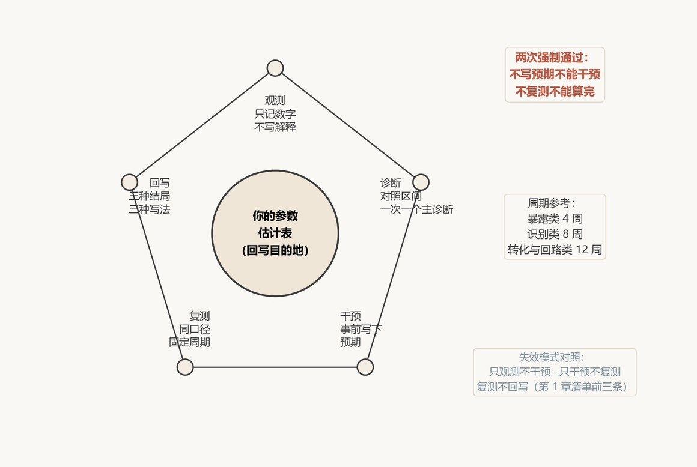
图 12-2 LEC 循环操作卡 五步环最容易被跳过的是第四步和第五步——这正是第1章失效模式清单的前三条（只观测不干预、只干预不复测、复测不回写）。LEC 的价值不在五步的名称，在五步之间的两次“强制通过” ：不写预期不能干预，不复测不能算完。
一份完整的 LEC 操作实录（一个季度，五步全记录） 五步听着简单，第一次做的人几乎都会卡在“不知道具体写什么”。这里给一份完整的操作实录——人物小陈（复合案例，非实录；细节作了模糊处理），某行业咨询公司入行第四年的顾问，用他的一个季度，把五步逐帧走一遍。格式可以直接抄 ：每步的记录方式，就是你自己 LEC 卡片的填法。
实录 · 第一步：观测（十月第一周，周一晚，二十分钟）。 小陈把六项客观读数从日志里汇总填进审计卡：
读数 本期值 上期值 趋势 A e f f 3 4 ↓ 新域占比 8% 15% ↓ 漏认率（月盲测） 60%（10 题错 6） 45% ↑恶化 被想起次数（季） 0 1 ↓ g 无数据 无数据 — 冗余月数 5 6 ↓
注意观测步的纪律在实录里的样子：全是数字，零解释 。小陈没写“最近项目太忙所以没空社交”——那句可能是真的，但它属于诊断步；观测步只负责把现状钉在纸上。（例外：g 回路段从未装过仪表 。）
实录 · 第二步：诊断（同晚，十分钟）。 对照表 12-1 的警戒参考，小陈标出三个异常：①新域占比 8%，低于 10% 警戒线（回音壁暴露）；②漏认率连续两轮超 50%（在领域阈值之下，第8章）；③被想起次数长期为零（S
然后是诊断步的纪律最难的一课：三个异常，只立一个主诊断 。小陈的取舍过程值得原样记录：②看起来最严重，但漏认率的改善要靠认知存量 K 当期可改、路径明确 （换域动作清单在第7章）且同时喂养②③ （新域带来新信号样本，也能带来新的被想起场景）。于是主诊断定为：L2 暴露塌缩（回音壁形态） ，②③记入观察项，下期复测。
一次只立一个主诊断的判据，实录里可以提炼成三条 ：优先选可立即行动的（诊断的下游是干预，不能行动的诊断是抱怨）；优先选上游的（暴露是识别与转化的供给线，上游一动下游受益）；优先选有独立证据的（连续两期同方向，而不是单期波动）。
实录 · 第三步：干预（同晚，最后十分钟）。 主诊断定了，小陈从第7章拿动作，并事前写下预期 （原样照录）：
干预 A：每月参加一次跨行业活动（技术社群、邻行业沙龙），只求三次以上可追踪新接触。
干预 B：把每月三次老同事饭局中的两次，改造为“带一个外人的饭局”（每人带一位对方不认识的朋友）。
事前预期（四周后复测）：A e f f
注意预期的写法有三个要件：可测指标 + 具体幅度 + 证伪条款 。“我要多出去走走”不合格（不可测）；“A e f f
实录 · 第四步：复测（四周后，同口径，十五分钟）。
读数 预期 实际 判定 A e f f 6 5 部分达标 新域占比 20% 17% 部分达标 候选机会/月 1 0.75 部分达标
三项全部方向正确、全部未到目标——这是复测最常见的结局，也是“强制通过”条款的用武之地：没有这份事前预期，小陈此刻的自我评价只会有两种 ——“效果不错”（凭方向乐观）或“白忙了”（凭差距沮丧）。有了预期，他可以精确地说：方向对，幅度打七折 。
实录 · 第五步：回写（同晚，十分钟）。 小陈的回写记录（原样照录，这张卡片就是他的“参数账本”第一页）：
①A e f f
②新域占比 17%/20%：新域接触的“可追踪率”低于预期（活动上认识的人，事后追踪不到）——下季度在活动现场就完成“追踪三要素”（名片/引荐人/约定回访），而不是事后回忆。
③候选机会 0.75/1：参数更新——我的 α 约为 0.05，低于第7章演示值 0.25；接触质量是我的真瓶颈，不是接触数量 ——下季度的主干预从“加暴露”改为“提高单次接触质量”（深谈化，第7章深谈分配模型）。
④主诊断处置：L2 塌缩确认但性质修正——不是“量塌”，是“质塌”；观察项②③转为下期正式诊断候选。
回写步的本质，是把一个季度的经历压缩成四行可复用的参数结论 。注意④的表述——诊断本身也被修正了。这不是失败，这是 LEC 最值钱的时刻：原始诊断错了，但因为在事前预期里埋了证伪条款，错误被四复测以 15 分钟的成本捕获，而不是被三年的人生以“运气不好”的成本掩盖。
实录的通用格式，提炼成一张五栏卡（附录 E 的 LEC 卡即此格式）：日期 | 读数 | 预期 | 实际 | 判定与回写 。每季一行主诊断，一年五张卡订成一册——这册卡片就是你的“运气病历”：它不保证任何一次干预成功，但它保证你从不浪费任何一次失败 。
12.4 12.4 一个可核的案例：自评为什么必须配他评 # 可核证据 公式与参数 可核数据 篇幅 一坐
审计表的三层结构里，第三层（他评校验）最反直觉也最容易被砍掉——“我自己还不知道自己吗？
成本
约 768 字 · 约 2 分钟 · 含公式，附人话翻译
结构
4 段
备注
《第12章 运气审计：给五年运气做个体检》
本节全文 · 约 768 字
审计表的三层结构里，第三层（他评校验）最反直觉也最容易被砍掉——“我自己还不知道自己吗？”这个案例说明：恰恰是这个问题，数据给出的答案最打脸。
组织行为学里有一整支研究叫多源反馈 （multisource feedback，商业上常称 360 度评估）：让本人、上级、同事、下属对同一组行为维度分别打分。数十年的实证研究得到一个反复出现的发现：自评与他人评价的相关性，显著低于一般人的预期 ——元分析口径下，自评与上级评价、同事评价的相关系数通常只在 0.2–0.4 区间（中低程度），且自我评价系统性偏乐观 （多数人把自己排在人群中位之上，统计上不可能）〔待核：多源反馈元分析的效应量、样本与年份，见附录 C〕。
把这条研究放回审计框架，三条设计结论立刻成立：
自评量表只能定位“可能的问题”，不能确认“没问题” ——你给自己 L3 打 18 分（满分 20），他评 12 分，差值比两个绝对分数都更有信息：它说“你的模式库没有你以为的那么满，而身边的人已经看到了”（第8章的名词型学习陷阱，在自评里是隐形的）。他评要匿名或半匿名 ——多源反馈研究同时发现，实名评价显著趋近“社会期望”答案（说好话），匿名或聚合呈现（“三位评价者的均分”）才保留信息量。差值的方向要分开读 ——自评高他评低（盲区：你以为的积累没被任何人看见，通常是 S T t r u s t 按案例纪律补边界：多源反馈研究的对象是职场行为维度，本书的 20 题矩阵与之结构同型 （自评 vs 他评的偏差机制）但内容不同 ——所以本书只用它验证“自评需要他评校验”这条方法论，不搬运其具体效应量到运气维度。审计表第三层的评分差值本身，将来可以作为本书 H 系列命题之外的一个开放检验方向（第16章）。
概念与机制 公式与参数 可核数据 篇幅 一坐
即使配了三层结构，自评的坑仍在。
成本
约 498 字 · 约 1.5 分钟 · 含公式，附人话翻译
结构
5 段
备注
《第12章 运气审计：给五年运气做个体检》
本节全文 · 约 498 字
即使配了三层结构，自评的坑仍在。提前标出，各给补丁：
坑一：参照系漂移。 “我接触的人多了不少”——跟谁比？跟上季度比还是跟三年前？参照系每漂一次，量表作废一次。补丁 ：审计表固定三个锚——上期读数（趋势）、自身基线（前两期均值）、同一人群的粗略分布（“我的新域占比在同行里算多少”——只需要量级判断）。
坑二：中心化偏差。 人人都把自己往中间评（“我大概中等偏上”）——量表分数挤在一起，机制间差异被抹平。补丁 ：20 题矩阵打分时强制排序法——先给五个机制排座次 （哪个最强、哪个最弱），再回填分数。排序强迫你使用相对判断，而相对判断比绝对判断可靠得多（这是测量学里 paired comparison 对 rating scale 的经典优势）。
坑三：情绪时间窗污染。 最近一周的挫败会把整年的自评拉低（可得性偏差，第9章 S 补丁 ：审计安排在平静的普通周 进行，避开大捷与大挫之后的十四天；且季度读数靠日志（客观层）纠偏——日志没有情绪。
三个补丁共用一个底层原则，值得单独写一行：审计的一切设计，都在与“人脑的统计缺陷”搏斗 ——这不是因为我们悲观，是因为第2章公设二早就承认：直觉不是合格的仪表。
12.6 12.6 一张年度审计日历：把五套节律编进一年 # 概念与机制 公式与参数 表格 可核数据 篇幅 一坐 含表
审计系统的最后一件事，是把所有周期装进日历。
成本
约 885 字 · 约 2.5 分钟 · 含公式，附人话翻译
结构
7 段 · 含表
备注
《第12章 运气审计：给五年运气做个体检》
本节全文 · 约 885 字
审计系统的最后一件事，是把所有周期装进日历。前面各章交付的工具各自带着自己的节律（第6章的段节律），不做统一编排的话，它们会互相打架——月底连续三天填四种表，第四个月开始全部奔置。编排的原则只有两条：同类合并，异类错峰 。下面这张日历是单人版基准（团队版见第14章末）：
表 12-3 年度审计日历（单人版）
频率 动作 耗时 对应章 每周日 暴露日志（只记新接触三要素） 5 分钟 7 每月末 识别盲测一轮 + g 15 分钟 8、10 每季末 客观读数汇总 + LEC 一次（主诊断一个） 30–45 分钟 本章 每半年 自评 20 题（强制排序法） 20 分钟 4、本章 每年一次 他评校验（2–3 人匿名）+ 年度总盘点 + 关键决策清单 约 1 小时 本章、13 事件触发 风险清单复查（大额支出/签约/扩张前） 15 分钟 11
注：全年刚性投入约 8–10 小时——比多数人刷短视频一周的时长还短；换来的是五个机制全部有仪表、有基线、有趋势。
三个使用说明：
第一，容错条款——漏了就漏了。 某周忘了记日志？跳过，下周继续，不要补录（补录的记忆数据比空缺更糟）。某季忘了 LEC？下季继续，把两季数据合并看趋势。审计系统对人的宽容不是懈怠，是设计：一个“漏一天就作废”的系统，第三周就会被放弃 ——这是新年计划与审计日历的本质区别。工程系统追求的不是完美运行，是长期运行：50% 执行率的十年，远远胜过 100% 执行率的三个星期。
第二，错峰原则。 不要把自评、他评、年度盘点排在同一周（情绪互相污染，且总耗时超过两小时会触发心理抵抗）。建议的错峰：他评请求在十一月初发出（给评价者两周元裕），自评排在十二月中，年度盘点排在元旦前后——三件事拉开一个月，每件都在自己的“平静普通周”里进行（12.5 坑三的补丁在日历层的落实）。
第三，与传统节律的接口。 年度盘点排在元旦前后不是唯一选择——中国传统节令里有现成的审计节点：春节前的“年终盘算”是他评与自评的自然时机（家人与旧友都在场，观察样本最全）；清明与中元前后适合风险清单复查（这两个节日本身就是传统的“风险提示日”）。古人没有量表，但节令就是他们的审计日历 ——这张表 12-3 只是给老节律换上了新仪表（传统回响的又一处）。
可执行清单 行动工具 篇幅 一坐
今天做他评校验的第一次：把第4章的 20 题矩阵发给一位熟悉你的同事或合作方，措辞就用这句：“帮我做个匿名小问卷，凭观察打分，别客气——你的实话比我的感觉值钱。
成本
约 180 字 · 约 1 分钟 · 不需要任何数学基础
结构
3 段
备注
《第12章 运气审计：给五年运气做个体检》· 本章交付的动作
本节全文 · 约 180 字
今天做他评校验的第一次：把第4章的 20 题矩阵发给一位熟悉你的同事或合作方 ，措辞就用这句：“帮我做个匿名小问卷，凭观察打分，别客气——你的实话比我的感觉值钱。”
拿到分数后先别看绝对值，先看差值 ：哪个机制的“自评分 − 他评分”最大？
那个机制，就是你未来三个月的第一诊断——第4章末尾做过一次的两遍打分，今天是它的正式版、成册版。从这次起，你的运气体检进入了年度节律。
深水区（进阶·可跳过） 【进阶 · 可跳过】
代理指标的信度与效度检验：审计表的科学底座
审计表的两层量表（自评 20 题、他评节选）作为测量工具，需过第2章立过的三道关（信度、效度、敏感），这里给逐项的检验方法（工具书口径见心理测量学标准文献〔待核：Nunnally & Bernstein《Psychometric Theory》版本〕）：
信度（测得稳） ：①重测信度——同一人隔四周重测，各机制小计的相关应达中等以上（量表惯例 r ≥ 0.7）；②内部一致性——同一机制 4 题之间的相关性（Cronbach's α ≥ 0.7 为可用线）。自评通过、他评节选（题量少）只做重测。效度（测得对） ：①校标关联——各机制小计与对应客观读数（表 12-1）的相关方向应为正（如 L2 小计与 A e f f 敏感（测得动） ：干预前后同量表位移量应显著大于重测的自然波动（以重测信度的残差波动为噪声基准）。诚实声明 ：以上是本书审计表的设计标准与检验方案 ，不是已完成的检验报告——大样本的信效度数据属第16章的开放检验议程（本书给工具与验收线，验证由读者与后续研究完成）。在数据齐备之前，审计表的身份是“标准化自用工具”，不是“标准化心理测量工具”——这个差别我们写在脸上。
跳过本框不影响后续阅读。
【进阶 · 可跳过】
单期数据能说明什么：审计的样本量问题
一个季度一次的读数，在统计上是什么？以 A e f f A e f f 单期读数 3.8 与 6.2 之间，都可能来自同一个真实的你 。这直接推出三条纪律：
①警戒参考为何要看连续两期 （表 12-1）：单期越线可能是波动，连续两期同方向越线才显著——这是小样本下唯一便宜的自守规则；②基线为何要三期 ：自身基线（前两期均值）在第 1–2 期是“无基线状态”，主要靠参考区间；第三期起趋势才有意义——所以审计系统的头两个季度是“磨合期”，读数只记不判，不要急着干预；③主诊断为何只能一个 ：每期有效信息量就这么大，开五条干预线等于把每条的检验功效推到噪声水平——统计上的理由与行为上的理由（12.3 实录）在此汇合：一次一个主诊断，不是谦虚，是功效最大化 。
顺带一个提醒：年度盘点时不要用“同比变化率”做结论（年发事件的分母太小，变化率噪声极大）——年度对比看方向与量级，季度对比才是趋势分析的主战场。
跳过本框不影响后续阅读。
闭环校验 与前置公设是否冲突 ：无冲突。审计表三层读数全部来自前章工具（公设二的落实）；分诊映射指向各章干预（公设三）；LEC 的回写机制内置公设的反驳条件（干预无效即下架）。是否新增概念需回写术语表 ：新增“审计三层结构”（自评/客观/他评）、“分诊三级”（复查/干预/重大调整）、“参照系漂移/中心化偏差/情绪窗污染”（三个自评坑）。已同步 system_doc。是否产出可测指标或工具 ：产出运气审计表完整版（表 12-1 + 12-2 组装，附录 E 可复印版）与 LEC 循环操作卡（图 12-2）。传统回响 本章给十二要素一个总回响：第3章那张十二项打分（本章前的“你能马上做的一件事”）就是传统版的审计表 ——古人没有量表学，但“定期自省”的直觉是一样的（曾子“吾日三省吾身”是它的个人版）。本书的升级不在“要自省”，在三处：分系统 （十二项按五机制归组，避免一锅粥）、配客观读数 （自省不校数据是自恋的温床）、成循环 （省完必须干预、复测、回写——三省的“省”字古人只做了一半，另一半要工程学来补）。
外部对话 与年度复盘文化（OKR、KPI 复盘等） ：企业管理里的复盘方法论与 LEC 高度同构（目标—结果—差距—归因—调整），本书吸收了它的全部节律纪律。两处差异：①复盘的对象通常是任务与目标 ，LEC 的对象是参数与机制 ——前者问“这单为什么丢”，后者问“我的转化概率结构是否恶化”；前者打一仗复盘一次，后者把仗当样本持续估计参数。②复盘的终点是下期目标，LEC 的终点是参数回写与工具上下架 ——多了这一步，经验才真正沉淀为模型而不是文档。
与体检医学的筛查逻辑 ：本章开头抄了体检报告的作业，这里补一句诚实的话：医学筛查的有效性建立在大样本的循证基础 上（哪些指标预测哪些结局，经过了几十年的队列验证）；运气审计的参考区间目前只有方向性依据与个人基线 ，没有人群常模。差距即议程——审计表的人群常模数据（各机制的分布、与结果变量的纵向关联）是第16章开放检验清单的第一项。在常模建成之前，请把审计表当“个人趋势仪”用，不要当“人群百分位表”用。
本章三句话 第一，运气审计像体检不像考试：分系统、看区间、分三级、重趋势——产出是分诊单和第一动作，不是总分。
第二，三层读数缺一不可：自评定位问题、客观读数确认问题、他评暴露盲区——自评单独使用，就是偏差发生器。
第三，审计只完成 LEC 的前两步；不写预期不干预，不复测不算完，不回写等于白干——记了一堆日志而行为不变，是失效模式清单的第一条。
篇三·三层干预
第13章 个人运气工程：择业择偶与关键决策 8 / 8图 13-1 一个十字路口，路牌上没有字；行者手里的不是地图，是一张画着表格的清单。关键决策面前，你要的不是预言，是清单。 【题记】人生的道路虽然漫长，但紧要处常常只有几步。——柳青《创业史》
第一，前十二章给了你全套仪表与旋钮；本章把它们收束成两样东西——两张决策表 （域选择、对手方选择）和一条年度流程 ——这是个人运气工程的最终形态。
第二，关键决策之所以关键，不是因为它“更重要”，而是因为它一次性重置你的多个参数 ：λ0 、α 、T D m a x
第三，本书不承诺“选对”——没有任何方法能承诺这个；本书承诺的是决策过程的质量 ：参数看得清、可逆性分得级、底线条款立得住。选错之后的恢复速度，同样是决策表的一部分。
案例与直觉 公式与参数 篇幅 一坐 主案例
先看一个常见情形（复合案例，非实录，细节作了模糊处理）。
成本
约 688 字 · 约 2 分钟 · 含公式，附人话翻译
结构
7 段
备注
《第13章 个人运气工程：择业择偶与关键决策》
本节全文 · 约 688 字
先看一个常见情形（复合案例，非实录，细节作了模糊处理）。
阿哲三十二岁那年春天，一个月里同时接到两道题。
第一道是域的题。 两个 offer 摆在桌上：一个是现公司内调的稳定岗——成熟业务、职级不动、收入可预期；另一个是一家做新材料的初创公司给的负责人岗——行业在风口上，团队三十人，薪资打八折但给了期权。所有朋友都给了意见，且意见完全相反：“稳定最重要”和“风口不等人”各占一半。
第二道是对手方的题。 他和相恋两年的伴侣到了谈婚论嫁的关口。不是感情出了问题——是他在犹豫“现在”：换了赛道、收入打折、期权是纸面的，这个节骨眼上把关系推进到下一阶段，合适吗？
两道题在他脑子里搅成一团，标准的决策焦虑。用本书的语言把这团乱麻拆开，其实非常清爽：
第一道题是域选择 ——它改变的是他自己的参数空间（λ0 、 α 、 K 的用武之地、D m a x 第二道题是对手方选择 ——它改变的是他的回路结构 （谁与他共同经营长期重复博弈，T t r u s t g 两道题的公共部分是可逆性 ——都不容易“错了重来”，但两者的可逆性结构完全不同（13.5 节专门讲）。 更要紧的是第三层：两道题不是独立的。 初创公司的期权兑现周期是四年，婚姻是“以十年计的重复博弈”——把两道题放在一起看，真正的决策变量只有一个：他愿意把自己的未来五年，押在哪一组结构性参数上。
朋友们的意见为什么截然相反？因为每个人都在用自己的参数表替他回答。而本书在这一章要做的，是把参数表还给他自己 ——两张决策表，一张管域，一张管对手方；外加一条年度流程，让这类决策不再总在“突然到期”时才被仓促处理。
13.2 13.2 关键决策的工程学：为什么它自成一章 # 概念与机制 公式与参数 篇幅 一坐
先立概念。
成本
约 696 字 · 约 2 分钟 · 含公式，附人话翻译
结构
4 段
备注
《第13章 个人运气工程：择业择偶与关键决策》
本节全文 · 约 696 字
先立概念。什么算“关键决策”？
不是“重要的决策”。给领导的汇报很重要，但它不改变你的参数空间。关键决策的判据有三条，缺一不可：
低频 ：一生遇到的次数以十计，不是以百计——没有大量试错的空间；难分批 ：无法拆成小步骤增量尝试（能拆的，第 7 章的高频小赌注就处理了，轮不到本章）；乘性重置 ：一次决策同时改写多个参数——换城市改写 λ0 与机遇域边界，换行业同时改写 λ0 、 α 和 K T t r u s t g 第三条是本质。日常行动是在给定系统里调参数 ：多接触一次、多发一篇、多攒一个案例。关键决策是换系统 ：参数表本身被重写。这就是为什么第 12 章的审计分诊里，“重大调整”单列一级——多机制联动的问题，靠拧旋钮救不回来，必须回到决策层。
由此得出本章的工程学立场，先说破三句：
关键决策的质量，取决于事前的结构分析，不取决于事后的结果。 结果由概率裁决——初创公司成败、婚姻走向，都有巨大的随机成分（第 4 章讲过，机遇价值是重尾的）。好的决策可能输，坏的决策可能赢。工程学管的是让好决策的比例上升，不是让单次结果必赢。 关键决策的最大敌人是“到期才处理”。 域的红利期不等人，关系的窗口不重开——但绝大多数人对关键决策的处理方式是：拖到不得不决的那一周，用情绪和直觉现答。年度流程（13.6 节）的全部意义，就是把决策从“应激”改造成“例行” 。可逆性是关键决策里唯一可以被工程改造的属性。 选什么域、选什么人，世界里没有标准答案；但“这个决策有多不可逆”，是可以被你亲手改变的——把不可逆改造成分阶段可逆，是决策工程的核心动作（13.5 节）。
概念与机制 公式与参数 表格 可核数据 篇幅 需专注 含表
域选择覆盖的不只是“择业”——选城市、选行业、选平台、选赛道，凡是回答“我把自己的暴露与积累放在哪片场子里”的决策，都是域选择。
成本
约 1,955 字 · 约 5 分钟 · 含公式，附人话翻译
结构
11 段 · 含表
备注
《第13章 个人运气工程：择业择偶与关键决策》
本节全文 · 约 1,955 字
域选择覆盖的不只是“择业”——选城市、选行业、选平台、选赛道，凡是回答“我把自己的暴露与积累放在哪片场子里”的决策，都是域选择。第 3 章翻译“十一择业与择偶”时立过它的参数判据：选 λ0 高、需求强度 D 高、熵值低的域 。现在把它展开成一张可打分的表。
表 13-1 域选择决策表
评估维度 要回答的问题 证据来源（谁说了算） 常见错觉 ① 机会密度 λ0 单位时间里，这片场子产出多少新机会？（岗位数、成交数、融资事件、项目招标） 公开统计与行业数据，不是 从业者的热情 把“行业热闹”当“机会密集”——热闹是曝光度，密度是产出率 ② 需求强度 D 这片场子的需求在扩张还是收缩？斜率多陡？ 近三五年的方向性数据（第 2 章“二运”：看漂移方向，不预测时点） 用当下景气线性外推十年——周期顶部的行业看上去最迷人 ③ 竞争熵 机会是均匀撒开的，还是被头部垄断？入局者增速多快？ 头部集中度、新进入者统计、你自己投递/投标的响应率 只看 λ0 不看熵——高密度加高垄断的域，λ0 与你无关 ④ 比较优势迁移 我现有的 K S 可迁移技能清单 + 新域里“懂旧域的人”的稀缺度 高估可迁移性——旧域的专家身份常是域绑定 资产（第 10 章：形态一的存量要重新封装） ⑤ 可逆性 进出这个域的成本是什么？（资格、年限、关系、年龄窗口） 过来人的进出记录，不是传闻 把可逆想成二值——它是分级且可改造的（13.5 节） ⑥ 复利期 T 我预计在这片场子待多久？这个时长够不够回路转起来？ 与人生阶段、家庭约束的诚实对账 只算起点收益不算复利期——λ0 再高，三个月的域没法积累 T t r u s t
注：六个维度替你把“这个领域好不好”翻译成六个可分别取证的问题——每一个维度都必须有证据来源，没有证据来源的那一格，就是你正在用想象做决策的地方 。
回到阿哲。他拿这张表过了一遍两个 offer：
①② ：新材料域的 λ0 与 D 无疑更高（招聘增速、融资热度都有公开数据可查）；③ ：但熵也高——三十家同类初创同场竞技，他的“负责人”头衔对应的存活率他没查（这是他打分时最该补的一格）；④ ：他现职积累的工艺知识 K S ⑤⑥ ：初创失败后回大厂的窗口约为两年（行业惯例对“创业经历”的容忍期），而大厂岗的复利期一眼看到头。注意，表打完了——表没有替他做选择 。稳定岗在⑤上赢，初创岗在①②上赢，这取决于他把多大的权重放在“下行的可逆”与“上行的空间”。决策表的职责是把参数的估计 与偏好的排序 分开：前者靠证据，后者只有他自己有权填。任何一张替你填好权重的表，都是把别人的参数表塞给你。
把阿哲的打分过程展开成一份完整实录（复合案例，非实录；数字为演示值）——重点不在结论，在每一步的动作：
第一步：取证（一个周末）。 六个格子不许凭印象填。阿哲的取证清单：①——查两个行业的公开招聘数与融资事件数（招聘平台的行业筛选＋创投数据库的年度统计，新材料域的岗位年增速约为两倍）；③——他给三十家同类初创各投了一份定制简历，两周后统计响应率（11%，比他现域的 32% 低了三分之二——这是“熵”的个人级实测，比任何行业报告都硬）；④——列自己的技能清单逐项标注“可迁移/需重学/域绑定”，诚实结论是工艺 K S D m a x
第二步：权重排序（半小时，独自）。 这一步谁也不能替他：①②的权重多高，取决于他这个阶段更怕“上不去”还是更怕“掉下来”。阿哲三十四岁，家庭跑道按第 11 章口径算出十一个月——他给⑤的权重排到了第二。权重是偏好的地盘，参数是证据的地盘，两张纸分开写 （决策表的全部防错机制就在这个分开里）。
第三步：把对立选项翻译成可检验的赌注。 打分不能替代选择，但能把“选哪个”翻译成“我在赌什么”。阿哲写下的是：选初创＝赌“新材料域的 D 斜率撑过未来两年，且我在 11% 响应率的熵场里能进入前四分之一”。赌注一写，他发现自己真正没底的是后半句——不是行业，是自己在那个熵场里的相对位置。
第四步：降级改造（13.5 节的预演）。 他没有在两个 offer 里二选一，而是用降级手段一造了个中间选项：向前辈要到了“先做三个月付费顾问、后谈全职”的方案——这三个月他拿到的是初创的真实内部样本（决策层的真实运转、现金流的真实节奏），初创拿到的是对他的真实测试。三个月后，表 13-1 上至少三个格子的证据从“外推”升级为“实测”，④的“可迁移”从假设变成已验证 。
这份实录的模板价值在于它的结构：取证 → 权重 → 赌注翻译 → 降级改造 → 复测。任何第三、四级决策都可以照此走一遍——多数人只做了第二步（拍脑袋定权重），把最贵的第一步（取证）和最值的第四步（降级）跳掉了。
概念与机制 公式与参数 表格 篇幅 需专注 含表
第二张表管的是另一类决策：选择与谁进入长期重复博弈——择偶、合伙、联合创始人、长期大客户、带谁进核心团队。
成本
约 1,826 字 · 约 5 分钟 · 含公式，附人话翻译
结构
12 段 · 含表
备注
《第13章 个人运气工程：择业择偶与关键决策》
本节全文 · 约 1,826 字
第二张表管的是另一类决策：选择与谁进入长期重复博弈 ——择偶、合伙、联合创始人、长期大客户、带谁进核心团队。
先立一个必须说破的定位，本章的伦理底线所在：这张表评的不是“人好不好”，是“这段关系的结构参数能不能咬合”。 善良、才华、吸引力都不在表里——不是因为它们不重要，而是因为它们不是工程学的对象。工程学只回答一个问题：这个长期博弈的结构，会让双方的运气链条互相放大，还是互相消耗。 （伦理边界的完整讨论在第 17 章；这里先立住“评结构不评人”的纪律。）
第 3 章给过参数判据：对手方选择选 T t r u s t 高、能让回路 g 持续 的长期合作者。展开成表：
表 13-2 对手方选择决策表
评估维度 要回答的问题 可观测的证据（不是“感觉”） 警示信号 ① 履约历史 对小承诺的兑现率如何？ 迟到、还钱、答应的小事——履约是全频段的习惯，不是大事上的表演 “大事靠得住就行”——从无小事样本者，大事是首次测试 ② 危机行为 压力之下的行为样本？ 观察一次TA的失利/生病/被冤枉（不必等灾难，小危机即可） 危机中先找替罪羊、先毁约、先消失——第 11 章的尾部，在对手方身上同样存在 ③ 分歧处理 冲突时TA偏好什么规则？ 一次真实分歧的走法：对事实、愿复盘、能认错 从不冲突（回避）或每次都“赢”（零和）——重复博弈里两种都致命 ④ 回路兼容 与TA协作后，你的 λ 与 K 六个月复盘：接触面变宽了吗？判断被补强了吗？ “回路人”让你出去见人、带资源回来；“消耗人”让你闭门、耗尽带宽（第 8 章：带宽窄化杀死识别） ⑤ 独立结构 TA保有独立的目标与判断吗？ TA有没有不依附于这段关系的追求、朋友、专长 单向依附不构成回路——只有一根轴的回路（第 5 章何工团队的教训），风一大就倒 ⑥ 底线条款 双方对“最坏情况”的约定清楚吗？ 分开/散伙的规则有没有谈过、敢不敢谈 谈散伙规则就伤感情的关系，还没到能扛第 11 章尾部事件的程度
注：前三维看对方的参数 ，后三维看你们俩构成的系统 ——一段关系不是两个人的相加，是一套共同参数的运转。
阿哲的第二道题在这张表前慢慢清晰。他与伴侣真正的分歧不在感情浓度，在④：伴侣从事的行业与他的新域几乎无交集，而她的社交风格内敛——不是说内敛不好 ，而是阿哲的回路假设（伴侣分担一部分暴露与识别）与她的真实偏好（小而深的关系圈）结构不咬合。他一直回避的是⑥：万一期权归零，两个人对“回撤到哪里”的预期从来没对过账。
把这一段展开成完整实录（复合案例，非实录）——注意它的用法是“对账”，不是“打分淘汰”：
第一次对话：只对⑥。 阿哲没有把表摊开给伴侣看（那张表会杀死对话），他只发起了一个具体问题：“如果这个期权最后归零，我们的底线在哪？”第一次交换，两个人第一次发现各自想象的底线完全不同：他以为的底线是“回大厂、两年恢复”，她以为的是“卖掉现在的房子回老家城市”。“最坏情况”的定义不同——而这从未在任何一次日常谈话里出现过 。
第二次对话：只对④。 回路假设的对账更难，因为它容易被听成抱怨。阿哲的问法绕开了“你为什么不陪我社交”这个雷区，换成结构语言：“如果我去新材料域，我的暴露半径得扩大三倍，家里的事怎么分工？我需要你替我挡掉哪一类事？你愿意挡哪一类？”——问分工，不问性格；问愿意，不问应该 。伴侣的回答让他修正了一个假设：她不愿做“社交型分担”，但愿意做“信息型分担”（她读书广，愿意每周替他筛两个领域的动态——这恰好是第 8 章的识别输入）。结构不咬合的解法未必是换人，常常是重新分工 。
第三次对话：形成条款。 两次对话的产出写成了一段双方都认可的话：试错期两年、家庭跑道十一个月内不动、她保留职业发展的完整独立（⑤的对账）、每月一次十分钟的“参数对表”（不是感情谈话——专门对结构假设：这个月的分工还好吗？哪个假设被证伪了？）。
实录展示的是这张表在亲密关系里的正确打开方式：六个维度是六个待对账的结构假设，不是六道淘汰题 。阿哲和伴侣的分歧没有消失——④的张力仍在——但它从“背景里的暗礁”变成了“桌面上有条款的已知问题”。表 13-2 在恋爱语境的全部价值，就是这三次对话。
这张表对择偶场景的适用边界，必须诚实标注：婚姻不是合伙，感情本身是目的，不是运气链条的零件。 本书的表只处理“长期共处结构”这一个切面——它适合作为决策的一个输入 （重要输入），不适合作为决策的全部。把这张表当筛子用，筛掉的可能是最适合你的人（有些最高 T t r u s t
概念与机制 公式与参数 可核数据 篇幅 一坐
两张表都有一个反复出现的维度：可逆性。
成本
约 992 字 · 约 2.5 分钟 · 含公式，附人话翻译
结构
9 段
备注
《第13章 个人运气工程：择业择偶与关键决策》
本节全文 · 约 992 字
两张表都有一个反复出现的维度：可逆性。现在专门讲它——这是关键决策工程里杠杆率最高的一节 。
多数人把可逆性当成决策的固有属性：“换工作可逆、结婚不可逆、生孩子绝对不可逆。”这个直觉方向对，颗粒度错。工程学的做法是分级，然后改造 。
第一级：易逆（周—月）。 换个信息源、进个新社群、接个副项目。这类决策的最优策略第 7 章已经给过：高频小赌注，快进快出 ——犹豫的成本高于试错。
第二级：可逆但有摩擦（月—年）。 换岗位、换城市、启动一段合作。错误可修正，但修正要付代价（时间、履历、关系）。策略：分阶段进入 ——试用期、异地先租后买、联合小项目先行。
第三级：难逆（年—数年）。 换行业、合伙创业、婚姻。路径依赖已经形成，回头的成本高到接近重新决策。策略：事前充分评估 （两张表全过一遍）＋降级改造 ——见下。
第四级：不可逆。 生育、健康损伤、刑事记录、耗尽 D m a x 唯一适用第 11 章全额纪律的级别 ——D m a x
分级之后是改造 ——决策工程的核心动作，把不可逆降级为难逆、把难逆降级为可逆：
降级手段一：小规模先行。 全职加入之前，先做三个月的付费顾问；搬去新城市之前，先住一个月。你要买的不是“确定”，是降低估计误差 ——见本章深水区框一。降级手段二：分阶段承诺。 期权四年 vesting、婚前的共同生活、合伙的先项目后股权——把一次性的大赌注拆成序列的小赌注，每一阶段都产生对方的真实行为样本（表 13-2 的证据就是这么攒出来的）。降级手段三：预设退出条款。 合伙协议里的退出机制、关系里的“散伙规则”（表 13-2 第⑥项）——谈退出条款最好的时机是关系最好的时候，就像买保险最好的时机是没生病的时候（第 11 章工具四的对称应用）。降级要付成本（先行阶段的收益打折、条款谈判的尴尬），所以不是所有决策都值得降级——降级的成本，要对照“该决策的估计误差 × 错误代价”来权衡 。这个权衡的算术，正是深水区框一的内容。
还有一个反向的坑，同样致命：用“再研究研究”回避第三、四级决策。 研究是有边际收益递减的（和 λ 曲线同构）；更阴险的是，“不决策”本身是一个决策——它默认选了现状，而现状的参数在漂移（第 2 章“二运”：λ(t ) 不是常数）。红利率在衰减的行业里“再看看”，两年后你的选项只会更差。拖延不是中立的安全区，是默认押注现状——而押注就要对赌注负责。
概念与机制 公式与参数 表格 篇幅 一坐 含表
最后一块拼图：把前面所有工具装进一条年度节奏。
成本
约 805 字 · 约 2 分钟 · 含公式，附人话翻译
结构
7 段 · 含表 · 含插图
备注
《第13章 个人运气工程：择业择偶与关键决策》
本节全文 · 约 805 字
最后一块拼图：把前面所有工具装进一条年度节奏 。这是第三层干预（第 12–17 章）在个人尺度的总装件——到此为止，本书交付的个人版运气工程学全图如下：
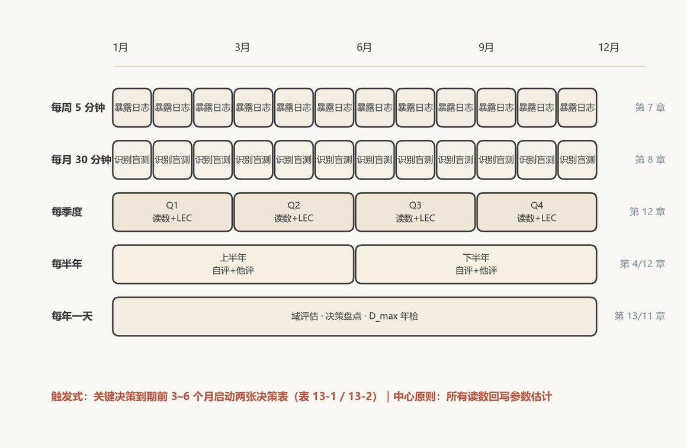
图 13-2 个人年度运气工程流程 表 13-3 年度流程的节奏与动作
频率 动作 来源章 产出 每周（五分钟） 填暴露日志 第 7 章 A e f f 每月（半小时） 识别盲测一轮 第 8 章 漏认率；模式库缺口 每季度（半小时） 客观读数六项 + LEC 五步 第 12 章 分诊单；一次干预的事前预期 每半年（两小时） 20 题自评矩阵 + 他评差值 第 4、12 章 五机制短板定位 每年（一天） 年度审计 + 域评估 + 关键决策评审 本章 见下三问 触发式 关键决策到期前 3–6 个月启动 本章 两张决策表的完整评估
注：这张表就是“个人运气工程”的全部日常——每周五分钟、每季半小时、每年一天；没有一项动作要求你辞职创业或改造人生 ，它只要求你定期看仪表。
年度那“一天”是全流程的重心，三个动作：
动作一：域评估。 用第 7 章换域的两条标准检查当前域——①当前域的曲线平了吗（连续三个月加量而读数不动）？②相邻域的 λ0 α 特别注意：域评估每年做一次就够 ——每月评估一次“要不要换赛道”的人，不是在管理运气，是在喂养焦虑。
动作二：关键决策窗口盘点。 这是本章新增的、也是最容易被忽略的动作：列出未来 12–24 个月里可能到期的第三、四级决策 ——合同到期、晋升窗口、生育计划、合伙邀约的预兆、行业政策的变盘点。提前列出来不是为了现在决定，是为了让每个大决策都有 3–6 个月的评估期，而不是 3–6 天的应激期。阿哲式的“两道题挤在同一个月”，多数不是命运的安排，是决策窗口长期不盘点、拖到一起爆发的结果。
动作三： D m a x 年检。 第 11 章的五件工具（止损、分散、冗余、保险、去杠杆）逐项过一遍执行率。年度一次，与体检同月安排——“运气的体检”与身体的体检放在一起，是让两者都更容易坚持的行为设计。
13.7 13.7 一个可核的案例：换域的收益与它的代价 # 可核证据 公式与参数 可核数据 篇幅 一坐
决策表的①②两维（机会密度、需求强度）不是拍脑袋项——它们有公开统计可查，而且经济学里恰好有一支文献，研究的就是“换域”这件事的收益分布：……
成本
约 641 字 · 约 1.5 分钟 · 含公式，附人话翻译
结构
6 段
备注
《第13章 个人运气工程：择业择偶与关键决策》
本节全文 · 约 641 字
决策表的①②两维（机会密度、需求强度）不是拍脑袋项——它们有公开统计可查，而且经济学里恰好有一支文献，研究的就是“换域”这件事的收益分布：职业转换者与留任者的收入轨迹对比 。
反复出现在多国数据里的一个模式（口径随国家与年代不同）：主动转换工作者的工资增长，在转换后数年内系统性快于留任者 ——换雇主的工资溢价常见于一次跳槽百分之几到百分之十几的量级；行业间流动（真换域）的方差更大，但条件中位数同样向上〔待核：具体研究、样本与效应量，见附录 C〕。
这本书是引用它的反直觉方式：不是用“跳槽涨薪”来证明换域好——恰恰相反，用它来标出换域决策表里最容易做错的两个格子。
第一，选择效应 。能跳槽且跳得动的人，本身 K S p c o n v
第二，下行尾巴被平均数藏住了 。换域的收入方差远大于留任：向上的跳槽者拉高均值，向下者（换错域、行业遇冷）的损失被均值抹平。这正对应第 4 章的重尾课与第 11 章的 D m a x 决策表评的是分布，不是均值 。
按案例纪律补边界：各国劳动力市场的制度差异大（社保、竞业条款、行业结构），跨研究的具体数字不可直接搬运；本书只取其机制方向 ——换域的期望收益为正但有条件（可迁移、有积累），且分布是重尾的 。这两个方向与决策表的设计一一对应：④防选择效应高估，⑤⑥与 D m a x
可执行清单 行动工具 篇幅 一坐
今晚花二十分钟，写下你未来 12–24 个月里可能到期的三个关键决策（合同、关系、行业、城市——……
成本
约 142 字 · 约 1 分钟 · 不需要任何数学基础
结构
1 段
备注
《第13章 个人运气工程：择业择偶与关键决策》· 本章交付的动作
本节全文 · 约 142 字
今晚花二十分钟，写下你未来 12–24 个月里可能到期的三个关键决策（合同、关系、行业、城市——任何低频且难分批的题），每个决策只标两样东西：它现在是第几级可逆？有没有一个降级动作能让它低一级？ 这一张清单，就是你的第一份“关键决策窗口盘点表”——13.6 节的年度动作，你已经做完了第一次。
深水区（进阶·可跳过） 【进阶 · 可跳过】
框一：决策成本的最优停点——什么时候“再想想”变成“想太多”
可逆性分级的背后是一个可计算的权衡：采集信息的期望价值 vs 决策的延迟成本。
设一个难逆决策的错误代价为 C（走错域的机会成本＋回撤成本），当前判断正确率为 p，花时间 τ 采集证据能把正确率提到 p′。信息采集的期望价值 ≈ (p′ − p)·C；它的成本 = τ 期间的机会成本＋现状漂移的损耗（若现状参数在恶化）。最优停点在中断处：当下一单位时间的信息增益 < 延迟成本时，立刻决策。
三个可操作的推论：①错误代价 C 越大的决策，值得投入的评估期越长——这就是第三、四级决策“充分评估”、第一级“快进快出”的定量根据；②证据的边际价值是递减的（第二个前员工的访谈远不如第一个），而延迟成本往往恒定甚至上升——所以“研究过度”不是态度问题，是算术问题；③降级手段（13.5 节）的价值等价于把 C 变小 ——先行、分期、退出条款都在压缩错误代价，从而缩短最优评估期。这就是“小规模先行”的数学本质：它买不到确定性，但它把“需要确定性才能做的决策”变成“允许带误差做的决策”。
跳过本框不影响后续阅读。
【进阶 · 可跳过】
框二：域选择的机会成本估算——把 λ0 差异折算成“五年机遇差”
表 13-1 的六个维度里，①②③可以合起来做一个粗估：两个候选域的期望机遇数差 。
用第 7–9 章的框架：E[N] = λ ·p d e t p c o n v T λ0 （密度）、α （接触转化效率）与 K p d e t λ0 的公开代理读数（岗位数、成交事件数的量级即可，不追求精确）；②诚实估计你的 K p d e t T T 这个域允许你有效待多久 （合同周期、行业波动、年龄窗口取交集）。
两个必须标注的折扣：第一，估计方差随域的新颖度上升 ——新兴域的 λ0 估计误差大，应做保守折扣（或用区间而非点值）；第二，乘性结构对短板敏感 ——p d e t λ0 优势削掉大半。很多“高估换域收益”的错误，不是 λ0 估错了，是把首年当成了稳态。
这个估算的产出不是“选哪个”的数字判决，是让“五年机遇差”从直觉变成一张可以吵架的草稿纸 ——参数化的错误，比参数正确的含糊更有讨论价值。
跳过本框不影响后续阅读。
【进阶 · 可跳过】
框三：评分表的稳健性——你的权重经得起扰动吗
表 13-1 与表 13-2 都是加权评分表。评分表的已知缺陷，第 12 章三坑里讲过一半（中心化、参照系漂移）；另一半是权重脆弱性 ：两三个候选方案的总分常常只差零点几分——而这点差距对权重假设极其敏感。
工程上的处理不是追求更精确的权重，而是做敏感性检验 ：把每个维度的权重上下扰动两成，重算排序。结果稳健（领先者在多数扰动下仍领先）→ 决策可以下；结果翻转（排序随扰动换人）→ 说明这根本不是一个参数问题，而是一个偏好问题——参数表已经尽职了，剩下的分歧在你自己的价值排序里，别再往表上要答案 。此时正确的动作是把决策降级（框一：分阶段先行），用真实样本替代纸面推演。
跳过本框不影响后续阅读。
闭环校验 与前置公设是否冲突 ：无冲突。域选择与对手方选择都作用于已定义参数（λ0 、 α 、 K 、 T t r u s t 、 g 、 D m a x ），未引入新机制；决策表满足公设二（每维绑定证据来源即代理指标）与公设三（分诊到动作）。第 12 章审计的“重大调整”级在本章落地为关键决策流程，闭环接续。是否新增概念需回写术语表 ：新增“关键决策”（低频、难分批、乘性重置三判据）、“可逆性分级”（四级）、“决策降级”（小规模先行/分阶段承诺/预设退出条款）。已同步 system_doc。是否产出可测指标或工具 ：域选择决策表（表 13-1）、对手方选择决策表（表 13-2）、年度流程表（表 13-3）、关键决策窗口盘点——全部进附录 B/E。传统回响 本章是三件传统要素的合流点（对应关系均见第 3 章表 3-1，不引入新对应）：
十一择业与择偶 ——传统把它排在第十一位：前面积累的一切（读书、积德、交贵人）最终要在这里落地。本书给它的工程化翻译正是本章的主体：域选择（表 13-1）与对手方选择（表 13-2）。传统的差异边界同样被遵守——不承诺“选对就成功”，不提供八字合婚，只做机会域参数与关系结构的评估。
十养生 ——对应时间预算。年度流程里“每月半小时、每年一天”的节奏设计，本质上是在经营 T T
十二趋吉避凶 ——对应第 11 章风控在本章的收口：关键决策流程的最后一步永远是 D m a x 趋吉是上限的事，避凶是入场券的事 ；一张只评上限、不查底线的决策表，是不完整的。
外部对话 与贝索斯“两类决策”的对照。 贝索斯在 1997 年致股东信里区分 Type 1（不可逆、需慎重）与 Type 2（可逆、应快速）决策，并警告多数组织把 Type 2 当 Type 1 做、陷入决策迟缓〔待核：信件原文表述〕。本书的差异有两点：其一，可逆性从二分改为四级连续谱 ——真实决策多数落在中间两级，二分法给出的指导过于粗糙；其二，也是更关键的：贝索斯把可逆性当作决策的给定属性 ，本书把它当作可改造对象 ——降级三手段（先行、分期、退出条款）的存在，使“这是个不可逆决策”不再是分析的终点，而是工程改造的起点。
与“选择大于努力”流行叙事的对照。 这类说法方向上与本书一致（关键决策的乘性影响确实大于日常努力），但止步于口号，且常滑向“选对了就躺赢”的叙事。本书给它的地基与刹车：选择之所以大，是因为一次决策重置多个参数（第 13.2 节）——这是它大的原因 ，不是玄学；但没有任何流程能保证选对 ，工程学保证的是过程质量与选错后的恢复速度（可逆性分级）。把“选择大于努力”读成“要选对”是赌博，读成“要把决策流程工程化”才是本书。
本章三句话 关键决策与日常行动的差别在于：行动调参数，决策换系统——所以它需要专属的流程，而不是更大的决心。
两张决策表把两类最难的选择参数化：域选择评机会结构（λ0 、D、熵、迁移、可逆、复利期），对手方选择评关系结构（履约、危机、分歧、回路、独立、底线）——表评结构与参数，不替你排价值次序。
可逆性是关键决策里唯一可改造的属性：分级之后动手降级——先行、分期、退出条款——把“需要确定性才能做的决策”变成“允许带误差做的决策”。
篇三·三层干预
第14章 团队造运：让一群人的运气叠加 7 / 7图 14-1 几只手共同握住一根绳索的另一端，绳索绷直；远处山道上有前行的队伍。团队之运不在人多，在链条咬合。 【题记】上下同欲者胜。——《孙子兵法·谋攻篇》
第一，团队之运不是个人之运的相加，是一套让成员运气链条互相咬合 的结构——你的 λ 是我的机会来源，我的 L4 产出是你的 L2 输入（第 5 章立过的命题，本章给出全部施工图）。
第二，这套结构有两根承重柱：信任机制 （组织版的 T t r u s t 分利契约 （成员的私人投资怎么获得回报）——前者是四条件里“咬合”的润滑剂，后者是第 5 章说过的“物理结构”。
第三，团队造运最容易死的地方不是缺人、缺钱，是个人方法没能变成制度 ：能力挂在人身上，人一走，链条上的那段就断——把转存管道制度化，是本章与第 10 章的分界线。
案例与直觉 公式与参数 篇幅 一坐 主案例
先看一个常见情形（复合案例，非实录，细节作了模糊处理）。
成本
约 788 字 · 约 2 分钟 · 含公式，附人话翻译
结构
6 段
备注
《第14章 团队造运：让一群人的运气叠加》
本节全文 · 约 788 字
先看一个常见情形（复合案例，非实录，细节作了模糊处理）。
老周的设备公司在第三年撞上了至暗时刻：下游砍单，现金流只够撑四个月。就在这个月，竞对出手挖他的技术合伙人老陈——职位平移，薪水开到现在的两倍多。
老陈拒绝了。老周不知道该怎么谢他，只说了一句“等缓过来我补你”。老陈的回答让整个会议室愣了几秒：“我不是为你留的，是为我自己。”
这句话用本书的语言逐字翻译，信息量惊人。老陈留下来的真实理由，是一条完整的参数账：
他的运气资本大头记在这套系统里。 老陈在这家公司是“技术合伙人”——他的 S K T t r u s t S 打折、 K 变现渠道变窄、 T t r u s t 归零重建 （第 13 章表 13-1 第④维：域绑定资产）。他分享这个系统的 g 。 公司的分配结构里有他的份——只要链条转起来，复利里有他的股份（14.4 节展开）。竞对给的是两倍薪水，买断的恰是他的 g 固定高薪是把他从“回路所有者”降级成“参数提供者”。 他评估过老周的危机行为。 现金流告急的那两个月，老周没有拖欠任何人的报销与工资、砍自己的薪水砍得最狠、把账本摊开给核心团队看——第 13 章表 13-2 第②维（危机行为），是信任最硬的证据。危机不是信任的敌人，是信任最快的验钞机。 对照面同样真实（老周同期的另一家公司）：薪资高出三成，年流失率却是行业均值的两倍。挖人电话一来就散——因为成员的参数账上，除了薪水，什么都不记在这套系统里 。
主案例讲完，先把丑话说在前面：“员工愿意留”不是本章的目标 ——留住人不等于团队造运（一潭死水也留得住人）。目标始终只有一个：让每个成员的运气链条咬合运转、并把咬合的产出制度化。留人只是这条结构正常运转的副产品——老陈不是被留住的，是被结构自己“持有”的。
概念与机制 篇幅 一坐
第 5 章立过团队造运的四个条件：共同目标（对齐）、精准分工（咬合）、分利机制（动力）、容错文化（保护）。
成本
约 376 字 · 约 1 分钟 · 不需要任何数学基础
结构
4 段 · 含插图
备注
《第14章 团队造运：让一群人的运气叠加》
本节全文 · 约 376 字
第 5 章立过团队造运的四个条件：共同目标（对齐）、精准分工（咬合）、分利机制（动力）、容错文化（保护）。当时只立了判据，本章把后三个条件逐个展开成可施工的清单（第一个条件“共同目标”在第 13 章对手方选择表的⑤⑥维已有对应工具——目标对齐与底线条款的评估方法，此处不重复）。
先给一张总图，看清三根施工线各自要解决的问题：
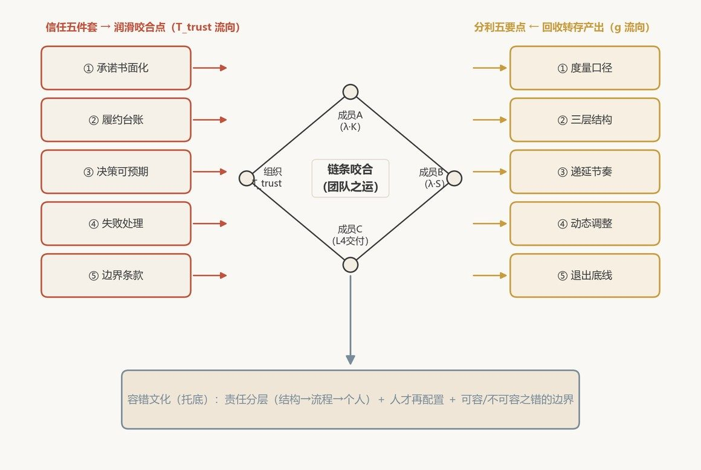
图 14-2 团队信任与分利机制：咬合、润滑、分配、托底 三根线对应三个不同的失效模式：没有信任机制，链条咬合处全是摩擦 （每件事都要重新谈判，交易成本吃掉协作增益）；没有分利契约，链条转起来也漏 （成员的私人投资——花他自己的时间与声誉去暴露和履约——得不到对价，理性人选择降档投入）；没有容错文化，一次失败整环崩 （错误的相关性把单点回撤放大成组织回撤，第 5 章条件四）。
下面三节，一根线一节，每节末尾给一张清单——三张清单就是本章的全部产出物。
14.3 14.3 信任机制：组织版 T t r u s t 的五件套 # 概念与机制 公式与参数 表格 篇幅 一坐 含表
个人的 T_trust 靠履约历史慢慢攒（第 9 章）；组织的 T_trust 攒得慢、碎得快——……
成本
约 1,183 字 · 约 3 分钟 · 含公式，附人话翻译
结构
8 段 · 含表
备注
《第14章 团队造运：让一群人的运气叠加》
本节全文 · 约 1,183 字
个人的 T t r u s t T t r u s t 它由组织对每个成员的每一次承诺兑现构成，却可以被一次食言清空大半 。信任机制的工程含义：把“值得信任”从性格问题改造成制度问题。
机制一：承诺的书面化与公示。 口头的“回头给你调薪”不是承诺，是气氛。组织版的最低标准：凡涉及成员利益的承诺，落字、署期、公示 。这不是官僚——书面承诺同时保护双方：承诺方被自己的字约束（第 13 章表 13-2 第⑥维的组织版），被承诺方获得了可核的凭证。传统智慧早就翻译过这一条：八敬神的工程对应物就是承诺装置 （第 3 章表 3-1）——敬畏之心不可测，白纸黑字可执行。
机制二：履约台账。 一张公开的表：组织答应过什么、到期没有、结果如何。听起来幼稚，威力在于不对称性 ：兑现的记录逐条累积 T t r u s t 包含失败与延期 ——只记成功的台账是宣传材料，记着“这条没做到、原因是什么”的台账才是账本。
机制三：决策规则的可预期。 信任的另一半不是“人品好”，是可预测 ：哪些事谁拍板、按什么标准拍、多长时间给答复。成员对决策规则的可预期性，决定他敢不敢把私人资源押进协作（敢不敢把大客户引荐进来、敢不敢把业余时间投进项目）——规则不透明的组织里，理性成员的私人投资永远是最小值。这一条是第 15 章平台“规则透明度”的团队版预演，机制同源、尺度不同。
机制四：失败的处理方式。 组织处理失败的方式，是成员更新 T t r u s t 先问“我们的结构与假设错在哪”，再问“流程与个人”，这个顺序本身就是最大的信任装置 。容错文化的完整机制见 14.5 节。
机制五：边界条款的预先存在。 散伙规则、竞业边界、利益冲突申报、亲属回避——这些“难听的话”有没有预先 写好，决定组织在翻脸时刻是按规则走还是按情绪走。第 13 章说过：谈退出条款最好的时机是关系最好的时候——组织的版本更极端：没有预先边界条款的组织，第一次利益冲突就是信任机制的定型时刻 ，而定型结果通常不是设计出来的，是吵出来的。
表 14-1 信任机制清单（组织版 T t r u s t 五件套）
机制 动作 可测读数 承诺书面化 利益承诺落字、署期、公示 书面化率（口头承诺占比） 履约台账 公开记录承诺的兑现/延期/失败 兑现率；平均延期时长 决策可预期 决策权限与流程成文 决策平均响应时长；“拍脑袋”申诉次数 失败处理 复盘先问结构与假设，后问人 高难度项目的自愿接手率（最诚实的读数） 边界条款 散伙/竞业/利益冲突规则预先成文 条款覆盖的关键场景数
注：五件套没有一件谈“人品”——组织信任的全部工程内容，就是让守信便宜、失信昂贵、边界清楚 。
14.4 14.4 分利契约：把“物理结构”写成条款 # 概念与机制 公式与参数 表格 可核数据 篇幅 一坐 含表
现在讲承重柱的第二根，也是第 5 章埋得最深的一根。
成本
约 1,182 字 · 约 3 分钟 · 含公式，附人话翻译
结构
9 段 · 含表
备注
《第14章 团队造运：让一群人的运气叠加》
本节全文 · 约 1,182 字
现在讲承重柱的第二根，也是第 5 章埋得最深的一根。当时立过的逻辑链值得原样重放：团队之运依赖成员持续暴露与组织履约 → 这两样是成员的私人投资 （花的是他自己的时间与声誉）→ 回报若与贡献脱钩，理性成员降档投入，链条断。分利不是道德要求，是团队之运的物理结构。
把“物理结构”翻译成条款，五个要点：
要点一：贡献的度量口径——透明的映射。 分利契约的第一难不是“分多少”，是“凭什么分”。贡献—回报映射必须透明到能复核 ：什么算贡献（营收、交付质量、带新人、关键引荐）、各占什么权重、谁核算。度量必然不完美——但公开的不完美优于完美的黑箱 ：成员可以抱怨权重不对，无法抱怨规则不明。搭便车的识别（第 5 章深水区说的“可识别性”）就靠这一条。
要点二：回报的三层结构——即期、递延、权益。 只有月薪的组织，卖的是参数（劳动力），不卖 g 即期 （工资奖金）维持生存参数；递延 （年终奖、里程碑奖）绑定当年的行为质量；权益 （股权、期权、分红权）让成员持有 g g
要点三：递延即信任——vesting 的时间常数。 权益要分期兑现（行业通行的四年归属期是无数试错换来的近似最优解〔待核：归属期惯例的统计口径〕）。逻辑：递延结构人为抬高成员的折现因子——提前离开的代价被制度放大，合作期预期随之拉长，重复博弈的合作解就更稳定 （无名氏定理的工程应用，深水区框一展开）。注意递延的双刃：递延期太长等于变相扣押，会反向筛选——留下的不是最忠诚的，是最没有外部选择的。递延买的是博弈结构，不是人身依附。
要点四：动态调整条款。 贡献格局会变（有人成长、有人躺平），静态的分配结构两三年后必然失真。契约里要预写调整机制：多久复核一次权重、复核的证据是什么、分歧的仲裁在谁。没有动态条款的分利契约，会在第一次“有人觉得不公平”时静默失效 ——没有人正式违约，只是所有人的私人投资悄悄降档。
要点五：退出与底线条款。 与第 13 章表 13-2 第⑥维同构：退出定价、回购条件、竞业补偿、不可转让条款（权益不得转给损害组织 T t r u s t
表 14-2 分利契约要点清单
要点 回答的问题 条款要素 度量口径 凭什么分？ 贡献维度、权重、核算人与复核流程 三层结构 分的是什么？ 即期/递延/权益的比例设计 递延节奏 怎么绑定长期？ 归属期、里程碑、加速条款 动态调整 规则怎么保鲜？ 复核周期、调整证据、仲裁机制 退出底线 散伙怎么走？ 定价、回购、竞业补偿、不可转让
注：五条要点合成一句话——让成员的每一份私人投资都有对价、都有凭证、都有退出通道 ；做不到这条的组织，不是没有团队之运，是租了一群个人的运气，租约到期即收回。
概念与机制 公式与参数 篇幅 一会儿
第三根线处理团队造运最诡异的失效模式：一次失败，全队回撤。
成本
约 1,606 字 · 约 4 分钟 · 含公式，附人话翻译
结构
12 段 · 含插图
备注
《第14章 团队造运：让一群人的运气叠加》
本节全文 · 约 1,606 字
第三根线处理团队造运最诡异的失效模式：一次失败，全队回撤。
机制在第 5 章立过：组织的 T t r u s t 个人失败与组织声誉的相关性，是团队尺度的系统性风险 ——它惩罚的不是犯错的人，是下一次敢接难事的所有人。
工程上拆解这条相关性，三个动作：
动作一：失败的责任分层声明。 每次公开复盘，先做一次分层：结构之责 （我们共同的假设错了——归组织）、流程之责 （哪个环节的检查该升级——归制度）、个人之责 （确属能力或态度——归个人，但也归“当初为什么把这个人放在这个位置”的用人判断）。三层分完，“公司做砸了”就不再是混沌的一片黑，成员们能看清：砸掉的是这次的结构假设，不是我的同事，也不是这家公司的履约能力。
动作二：人才再配置而非淘汰。 失败项目的成员往哪去，是容错文化最响的行为信号。再配置 （带着复盘资产进入新位置）传递“失败是组织学习的一部分”；淘汰 （失败者出局）传递“接难事=职业风险”，然后你会看到全员的暴露行为收缩——没有人再主动接识别难度高的项目，λ 的组织分布整体左移（第 7 章的个人曲线，在团队身上以更慢的速度重演）。
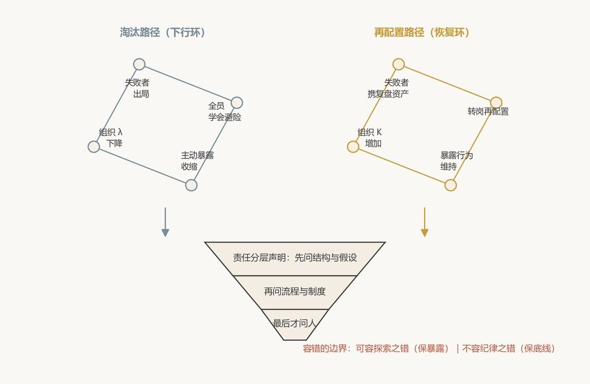
图 14-3 容错文化与人才再配置 动作三：容错的边界。 容错不是无限度的——可容之错与不可容之错必须预先划线 ：探索性的错误（结构假设错了、难事没做成）可容；纪律性的错误（突破底线条款：食言、瞒报、损害 T t r u s t D m a x 容错文化买的是探索的暴露，底线条款守的是存续的下界——两者缺一，要么死于一潭死水的谨慎，要么死于无底线的纵容。
三个动作怎么落到一场会上？给一份复盘会实录骨架（复合案例，非实录；细节作了模糊处理）。某软件公司的交付项目失败——客户中途终止合同。复盘会一小时，议程按三个动作走：
第 0–10 分钟：事实重放，不含评判。 主持人是没参与项目的合伙人（这不是形式——当事人主持的复盘，参会者会不自觉地看他脸色归类责任）。他把时间线过一遍：哪个节点客户第一次表达不满、哪个节点团队内部发现了风险、决定继续推进的依据是什么。纪律只有一条：只放事实。“当时为什么这么判断”可以问，“你们怎么不早点说”不许出现。
第 10–30 分钟：责任分层（动作一）。 白板上画三栏，逐条归类。结构之责：“我们对客户内部决策链的假设错了，把口径确认寄托在单线联系人上”（归组织，产出：此后对外项目一律双线确认条款）。流程之责：“需求变更没有触发重新评估，改动被当作顺手的事消化了”（归制度，产出：变更工单阈值制度）。个人之责：只有一条，且落点仍是用人——“项目总监第二个月已发现信号但未上报。为什么不上报？因为上一任上报坏消息的人被贴了”负能量“标签。这是我们的问题，不是他的。”（会议室安静了三分钟，然后项目总监自己开口：“如果上报的代价这么高，换我也会犹豫。”——这句诉求的出口，就是组织 T t r u s t 重新开始记账的时刻 。）
第 30–45 分钟：资产清点与再配置（动作二）。 复盘的产出不是检讨书，是三样可带走的东西：一份“决策链假设核查清单”（进知识库，组织的 K
最后 15 分钟：边界确认（动作三）。 主持人收尾只做一件事，把这次失败放进边界声明里：“这次是探索之错——难啿的客户结构我们没啿下来，这类错我们容，而且要再试。上个月有人篡改测试报告那件事，是纪律之错——那位同事已经离开，这类错一个都不容。两件事都处理了，处理方式不一样，大家都知道为什么。”
这一小时的账：组织 K T t r u s t 全员学会下次别接难事。
14.6 14.6 一个可核的案例：用真金白银投票的裂变实验 # 可核证据 公式与参数 可核数据 篇幅 一坐
分利契约五要点有没有真实世界的大样本版本？
成本
约 996 字 · 约 2.5 分钟 · 含公式，附人话翻译
结构
5 段
备注
《第14章 团队造运：让一群人的运气叠加》
本节全文 · 约 996 字
分利契约五要点有没有真实世界的大样本版本？有——而且中国制造业里就有一个把“要点二、三”推到极致的公开案例。
广州芬尼克兹（PHNIX）从 2005 年前后开始实行裂变式创业 制度：公司鼓励内部员工发起新业务，总经理人选由员工用真金白银投票 ——员工拿自己的钱入股新公司竞聘总经理，公司出资控股、创业团队跟投；用创始人宗毅的公开表述说，这套设计的核心是“用钱投票，选出最有信心、也最被同事信任的人 ”〔已核：芬尼克兹裂变式创业制度，见附录 C；制度细节与年份数据仍标〔待核〕〕。
用本章的框架拆这套设计，每一件都对应一个要点：
真金白银投票=度量口径的自动化 。贡献与能力的评估最难量化——芬尼克兹的解法是把评估问题转化为下注问题 ：愿意把钱押在这个人身上，是同事们在用自己的 T t r u s t 跟投=把管理者的参数与组织 g 焊死 。竞聘成功的总经理自己出资入股——他的个人 λ 、 T t r u s t 、 S 全部注入新公司，“给组织打工”变成“给自己造运” （要点二的权益层，直接焊到最高频的岗位）；控股+跟投的结构=递延与底线的组合 。母公司控股保住组织信誉池（容错的资源池），创业团队的跟投构成递延绑定（要点三），失败时的清算规则预先写明（要点五）。效果侧的公开报道口径：裂变出的多家公司在没有空降职业经理人的情况下连续运转，核心团队流失率显著低于行业常态〔待核：流失率的具体口径与数据来源，见附录 C〕。必须按案例纪律补边界：芬尼克兹是一家特定规模、特定行业的民营企业，其制度的可迁移性依赖三个前提——业务可拆分、现金流母体健康、创始人对控制权的让渡意愿；任何一条不满足的组织，直接抄条款都会抄出灾难 。本书引用它论证的只是机制方向：当分利契约把成员变成回路的持有者，“核心成员为何愿意跟着走”就不再需要用忠诚来解释。
同一方向上的更大样本来自员工持股计划（ESOP）的实证研究：多国数据显示，员工持有权益的公司在生产率、留存率上相对对照组呈正向差异，同时研究者持续争论其中的选择效应（什么样的公司才会推行 ESOP）与设计效应（同是 ESOP，结构差异导致的绩效差远大于有无差异）〔待核：ESOP 元分析的样本、效应量与年代，见附录 C〕。方向与本章一致，且争论本身正好印证要点四、五：同样的分利意图，结构设计的差异决定成败——契约是工程图，不是口号。
可执行清单 行动工具 篇幅 一坐
用表 14-1 的第一列给你的团队（或你所在的组织）做一次五分钟体检：承诺书面化了吗？
成本
约 138 字 · 约 1 分钟 · 不需要任何数学基础
结构
1 段
备注
《第14章 团队造运：让一群人的运气叠加》· 本章交付的动作
本节全文 · 约 138 字
用表 14-1 的第一列给你的团队（或你所在的组织）做一次五分钟体检：承诺书面化了吗？有没有履约台账？决策规则成文了吗？上次失败复盘先问的是什么？退出条款存在吗？ ——五项里数一数达标的数量。少于三项的组织里，你的“运气好同事”大概率不是团队造运，只是个人之运碰巧挤在一间办公室里。
深水区（进阶·可跳过） 【进阶 · 可跳过】
框一：重复博弈的声誉机制——合作解在什么条件下稳定
第 5 章给过无名氏定理的直觉版，这里补全工程细节。合作解稳定的两个条件：①折现因子够高 （成员对未来合作的估值相对当期背叛收益的比值超过阈值）；②背叛可识别、可执行惩罚 （搭便车能被发现，且存在可信的惩罚渠道）。
组织设计对两个条件的操控正是本章两张清单的本质：递延报酬与权益归属直接抬高折现因子 （把“未来”按制度加权，相当于给远期合作收益贴上制度折扣率）；透明的贡献度量修复可识别性 （把搭便车从“感觉”变成“数据”）；履约台账与声誉记录提供执行渠道 （晋升、分红池、再配置，都是组织内的赏罚机构——不需要道德，只需要记账）。
一个常被忽略的推论：组织内声誉与个人市场声誉存在张力 。你培养的人才被市场定价（被挖）是组织声誉资产的外溢——正确的姿势不是提高退出壁垒（那会降低组织对高折现因子人才的吸引力），而是把外溢变成网络：引荐费、校友网络、合作网络（第 5 章条件一的对外版）。强组织的标志不是人走不出去，是人走了还想回来合作。
跳过本框不影响后续阅读。
【进阶 · 可跳过】
框二：回路在组织内的传导条件——个人的 g 怎么变成组织的 g
第 10 章的转存管道（流量→存量、经验→方法论、关系→存量）在组织尺度要过三道关，才从“优秀个人的习惯”升级为“组织参数”：
①载体制度化 。转存动作的载体必须落在组织资产上，而非个人记忆里：复盘写进知识库（组织的 K T t r u s t 关键成员离职两周后，他负责的链条是否仍在产出读数？ ——不是，说明转存管道还挂在他身上（跨层传导失效清单第五条的微观版）。
②时间常数匹配 。个人的复测以周计，组织的参数漂移以季度计——组织的转存管道若按“随时想起来就做”的节奏运转，永远追不上人员的流动速度。制度化=给每条管道定周期与责任人（知识库更新周期、客户台账的维护人、复盘会的频率——表 14-1 机制四的延伸）。
③容错保护下的暴露意愿 。转存的源头是成员愿意持续暴露（L2 的组织版：商务、售前、解决方案的主动接触）。14.5 节的容错边界保护的就是这个源头：暴露是有失败概率的私人投资，若失败即出局，理性成员的最优暴露水平是零——组织的 λ 直接躺平。
三道关合起来，就是第 5 章“跨层传导”失效模式清单的组织内版本：传导不是口号，是载体、周期、保护三件事的逐一落实。
跳过本框不影响后续阅读。
闭环校验 与前置公设是否冲突 ：无冲突。信任机制与分利契约均作用于已定义参数（T t r u s t g 、 S 的域绑定）；五件套与五要点每项绑定可测读数（表 14-1、14-2 第三列），满足公设二；容错文化对 λ 的组织分布有明确干预方向，满足公设三。是否新增概念需回写术语表 ：新增“信任机制五件套”、“分利契约五要点”、“责任分层声明”（结构/流程/个人三层）、“可容之错/不可容之错”的边界划分。已同步 system_doc。是否产出可测指标或工具 ：信任机制清单（表 14-1）、分利契约要点清单（表 14-2）、人才再配置路径设计——全部进附录 B。传统回响 本章回指三条传统要素（对应关系见第 3 章表 3-1，不引入新对应）：
四积阴德——信任资本的重复博弈积累 。传统把“不为人知的善行”记为长期资本；本章给出它的组织账本：履约台账就是组织的“积德簿”——每条兑现的承诺都是存款，且组织账户的复利比个人更快 （一人的履约被全员看见，T t r u s t
八敬神——承诺装置 。敬畏不可测，装置可执行：书面化、公示、台账、边界条款——把“举头三尺有神明”翻译成“每一句承诺都有落字”。传统智慧里最玄的一项，在工程学里获得了最不玄的实现。
九交贵人——网络的组织化 。第 3 章说过贵人的机制是弱连接与结构洞；本章的补充是：组织是贵人网络的生产车间 ——分利契约把成员的对外网络转化为组织的 L2 入口，校友网络把离职者的网络留作组织的引荐渠道。个人靠“先成为别人的贵人”入网；组织靠“让每个成员的网络都增值”扩网。
外部对话 与《联盟》（霍夫曼、卡斯诺查）的对照。 《联盟》主张用“任期制+明确的双向投资”替代终身雇佣的幻觉：雇主投资员工的职业资产，员工把任期的产出投给公司，坦诚谈论离职规划。本书与它方向高度一致——可以说《联盟》是本章在雇佣关系话语层的同路人。差异有二：其一，《联盟》的契约主要绑定“职业发展”（K g 与 T t r u s t
与“兄弟式合伙”创业文化的对照。 中国创业圈流行“先合伙后算账”：股权平分、口头约定、情谊兜底。本章的全部框架都在说它的反面：规则先行不是不信任，是保护感情的装置 ——事先谈清退出条款的合伙人散伙后还能一起吃饭，从没谈过的散伙即是绝交。这条对照同时也是“八敬神→承诺装置”翻译的现实注脚：最难开口的条款，恰恰是最值得在关系最好的时候写下的条款。
本章三句话 团队之运靠结构不靠人多：链条咬合（分工）、咬合处润滑（信任五件套）、转存产出分配（分利五要点）、底部托底（容错边界）——四件事齐，一群普通人也能造出超出个体之和的运。
分利不是道德要求，是物理结构：成员的暴露与履约是私人投资，投资必须持有回路的对价——固定高薪买断的恰是对方最值钱的东西（g
容错有边界：可容探索之错以保暴露，不容纪律之错以保底线——一潭死水的谨慎与无底线的纵容，是团队造运的两种对称死法。
篇三·三层干预
第15章 平台造运：占据一个会给你送运气的生态位 7 / 7图 15-1 一座码头，货船与灯塔各安其位；水面上航道纵横如网。码头不生产货物，但所有货物都经过它。 【题记】君子生非异也，善假于物也。——《荀子·劝学》
第一，平台之运的判据只有一句：你的机会有多少是自己撞来的，有多少是生态自动送来的 （第 5 章立过）——生态送运的机制，本章拆成三个可评估的条件：网络效应、规则透明度、生态位稀缺度。
第二，个人与团队面对平台，永远在回答同一个问题：红利期该不该入驻 ——本章给的不是答案，是一张把“红利”翻译成 λ0 、熵、规则、可逆性四组参数的评估量表。
第三，平台是造运者最大的杠杆，也是最大的单点依赖：它替你抬升 λ0 的同时，也在替你保管 λ0 ——本章的结论一句话：多归属试探、差异化立足、退出通道常备。
15.1 15.1 主案例：同一张邀约函，三种命运 # 案例与直觉 可核数据 篇幅 一坐 主案例
先看一个常见情形（复合案例，非实录，平台与人物均作了模糊处理）。
成本
约 792 字 · 约 2 分钟 · 不需要任何数学基础
结构
9 段
备注
《第15章 平台造运：占据一个会给你送运气的生态位》
本节全文 · 约 792 字
先看一个常见情形（复合案例，非实录，平台与人物均作了模糊处理）。
老梁做实木家具十二年。那年春天，一个新兴电商平台“匠选”的区域经理带着优厚条件登门：头三个月零抽成、首页流量扶持、“原产地直供”官方标识、区域只签五家。经理的原话是：“现在进来，你们就是平台的种子商家——等生态起来了，红利都是你们的。”
同一张邀约函，发到了同一个产业园的三家厂子。三种选择：
老梁：all in。 他算了一笔账：老平台抽成两成多、流量越来越贵，新平台零抽成还给流量——“这账傻子都会算”。他把六成产能转了过去，专门开了新厂区排单。
周厂长：观望。 “新平台能活几年都不知道。”他一家没动，守着老渠道。
小蒋：试水。 她切了两成产能过去，同时把老平台店铺和线下渠道照常经营，还让运营每周记录新平台的真实复购数据。
两年后的三份成绩单：
匠选起量了 ——用户数翻了数倍，“区域直供”打出了名头。但规则也变了两次 ：第二年春天，平台把流量分发从“区域标识加权”改为“竞价+平台自营优先”，扶持资源向头部和自营倾斜；第三年初，抽成从零涨到两成。老梁的店铺在规则切换后订单腰斩——他六成产能压在新平台，老渠道已经断供两年，客户名单掌握在平台手里，想撤，撤不动 ：他把厂子的运气链条焊死在了一个自己不参与规则制定的地方。周厂长呢？没挨刀，也没吃到红利——老渠道的流量成本照样年年在涨，他守住的其实是“缓慢失血”。小蒋的新店在规则切换时也掉了订单，但只占总盘的两成；她带着两年攒下的真实复购数据与客户微信，把主力迁向了私域与第二个新平台——红利她吃到了大半，刀她躲掉了大半。
三家的差别，事后看不在眼光——没有人预判对了规则切换的时点，本书也不主张任何人能预判 ——差别在结构：老梁单一归属、深度绑定、无退出通道；小蒋多归属、浅绑定、数据与客户关系随身。这个结构差别从哪来？从他们各自有没有一张平台评估量表来。本章剩下的篇幅，就是把这张表造出来。
15.2 15.2 平台如何送运：三个条件复述与深化 # 概念与机制 公式与参数 可核数据 篇幅 一坐
第 5 章立过平台造运的三个条件。
成本
约 884 字 · 约 2.5 分钟 · 含公式，附人话翻译
结构
5 段 · 含插图
备注
《第15章 平台造运：占据一个会给你送运气的生态位》
本节全文 · 约 884 字
第 5 章立过平台造运的三个条件。本章逐一深化，每个条件补上“造运者视角”的读法。
条件一：网络效应—— λ0 的生态来源。 参与方互相吸引：买家吸引卖家、读者吸引作者、开发者吸引用户。网络效应的数学后果是生态规模的增长直接变成你的机会供给 ——你不用自己去撞每一个客户，生态的扩张替你把客户送上门。造运者的读法 ：网络效应送来的是生态总量（λ0 的分子），你的实际份额还要除以竞争熵（同类参与者的密度）——总量涨十倍、同侪涨百倍的平台，你的 λ0 在下降 。老梁的错误一半在这里：他只看见用户数翻倍，没数同期入驻的家具厂翻了几倍。
条件二：规则透明度—— T t r u s t 的平台版。 平台的规则（谁被推荐、谁被惩罚、收益怎么分）是否公开、稳定、可预期。第 14 章说过决策可预期性决定成员敢不敢投入私人资源——平台版同构：规则透明度决定参与者敢不敢做长期投资 （敢压供应链成本的商家、敢深耕内容的创作者，都出现在规则稳定的平台上）。造运者的读法 ：规则透明度不是平台的“性格”，是可评估、可打分的历史记录——每一次规则变更都是已发生的数据（15.3 节给五维量表）。匠选的两次规则突变并不偶然——补贴期零抽成+高扶持的平台，从第一天起就在“烧钱换规模”，规则切换是它的商业模式自带的日程表 ，不写在邀约函上而已。
条件三：生态位稀缺度——红利的时间窗。 同一个位置容纳多少个同类？网络效应的市场通常只剩一两个大位置——而红利期是“ λ0 高而熵低”的时间窗口 ：早期入驻者少、平台急于招商、每个参与者都能分到超比例的生态流量。窗口会关闭：随着参与者涌入，λ0 依然高，但熵同步升高，直到“竞争的均摊”吃掉红利。造运者的读法 ：红利期的存在是结构性的（平台招商的先后顺序决定），但红利期“何时关闭”不可预测 ——所以正确的姿势不是赌时点，而是用结构对冲时点的不确定性（15.4 节）。
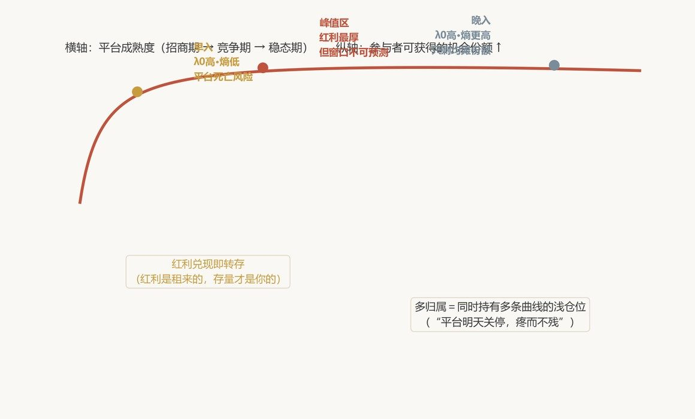
图 15-2 生态位红利曲线与三个入驻时点 三个条件合起来，就是平台与造运者的全部关系：平台用网络效应给你送运（ λ0 ），用规则透明度决定你敢接多少（投资深度），用生态位稀缺度决定送多久（窗口） ——评估一张平台邀约函，就是给这三件事逐一取证。
概念与机制 表格 可核数据 篇幅 一坐 含表
三个条件里，网络效应看数据、稀缺度看时间窗，都偏“客观”；唯独规则透明度最像“性格”——所以最需要量表化。
成本
约 719 字 · 约 2 分钟 · 不需要任何数学基础
结构
5 段 · 含表
备注
《第15章 平台造运：占据一个会给你送运气的生态位》
本节全文 · 约 719 字
三个条件里，网络效应看数据、稀缺度看时间窗，都偏“客观”；唯独规则透明度最像“性格”——所以最需要量表化。第 5 章承诺过本章给出可操作的评估，先定义后打分。
定义 ：规则透明度 = 参与者对“平台将如何对待我”的可预期程度 。注意它不是“规则对我好不好”——抽成两成但十年不变的平台，透明度高于零抽成但一年三变的平台。苛刻而稳定 > 优厚而善变 ，这是造运者视角的铁律（你的投资决策依赖可预期性，不依赖单期优惠）。
表 15-1 规则透明度五维量表 （每维 0–4 分，总分 0–20；历史证据优先于口头承诺）
维度 要取证的问题 证据来源 打分锚点 ① 规则公开度 分发/惩罚/抽成的规则成文可查吗？ 官方规则文档的完整度 4=完整成文；0=全靠经理口头 ② 变更节奏 历史上多久变一次？变更前预告多久？ 老商家的记忆与社区记录 4=年度级且预告充分；0=季度级且突袭 ③ 解读一致性 同一规则，不同商家得到同样解释吗？ 商家社区的一致性吐槽率 4=解释统一；0=客户经理各说各话 ④ 申诉与纠错 误判有通道吗？纠错率多高？ 公开的申诉案例与处理时长 4=有通道且常纠错；0=无通道 ⑤ 承诺兑现史 平台答应过的扶持，兑现了几成？ 前几批商家的实际对照 4=承诺基本兑现；0=承诺仅存在于邀约函
注：五维全部取历史证据 ，一维都不取当前谈判中的口头承诺——平台对你未来的态度，藏在它对过去商家的态度里 。
一个重要的诚实标注：五维量表测的是过去与现在的透明度 ，用它预测未来有一个已知盲区——平台自身的生存转折点 （融资失败、商业模式转型、被并购）会非连续地改写规则。量表对此无能为力，只能靠仓位结构（15.4 节）兜底——任何评估工具都有边界，仓位结构是评估工具的最后一层保险 （这句话本身就是第 11 章的纪律：不要用参数评估替代下界管理）。
概念与机制 公式与参数 可核数据 篇幅 一坐
现在正面回答主案例的问题：红利期该不该入驻？
成本
约 850 字 · 约 2 分钟 · 含公式，附人话翻译
结构
8 段
备注
《第15章 平台造运：占据一个会给你送运气的生态位》
本节全文 · 约 850 字
现在正面回答主案例的问题：红利期该不该入驻？
先立决策的三问，每一问都在给评估量表取一个关键读数：
第一问：红利是真实的规模增长，还是补贴幻觉？ 取证方法：看平台的自然复购率与留存 （用户拿到补贴后还会回来吗），别只看 GMV 与流量扶持。烧钱期的数据天然漂亮——用平台的获客数据估计你的 λ0 ，就像用烟花亮度估计电网容量 。小蒋每周记录真实复购，就是在为这一问积累一手数据。
第二问：你能在平台上差异化吗，还是纯拼价格？ 生态位的稀缺度不只看“同类多少”，看你有没有独特的 S 没有差异化依托的红利，本质是平台的流量批发，你只是零售终端之一 。差异化的判据回到第 9 章：停掉付费流量后，还有多少人搜你的名字？
第三问：退出通道在哪？ 三样东西盘点清楚：资产可迁移吗 （店铺装修、数据、内容能导出吗）？客户关系在谁手里 （平台私域还是你的私域）？沉没成本多深 （专属产能、独家合同、合规投入——退出时哪些归零）？老梁在签约那天就该问的三个问题，拖到撤不动时才第一次问。
三问之后，是本章最重要的操作原则——仓位结构 ：
红利期用“试探性多归属”，不用“单一押注”。
理由用第 11 章的话说一遍就够：平台规则切换是你无法预测的尾部事件 ，对它的正确姿势不是猜时点，是让任何单一平台的规则突变都打不穿你的 D m a x
仓位上限 ：单一新平台的产能/时间/预算占比，以“平台明天关停、你疼但不残”为上限 ——这个上限因人而异（参照第 11 章冗余月数的推算），但必须事前写下；多归属是常态 ：同时经营两个以上平台＋一条自有渠道（私域、线下、直连客户），多归属的代价是分散精力，但它的本质是用当期效率买“参与权保险” （第 11 章工具二的原话）；红利兑现即转存 ：平台红利带来的流量与成交，按第 10 章的转存管道沉淀为自己的存量 （客户私域、复购数据、案例库）——红利是租来的，转存下来的才是你的 。小蒋两年后能带着“真实复购数据与客户微信”迁移，靠的就是这条。
15.5 15.5 一个可核的案例：网络效应真的值 n² 吗 # 可核证据 公式与参数 可核数据 篇幅 一坐
本章的机制地基——“网络效应送运”——本身有没有可核的证据？
成本
约 856 字 · 约 2.5 分钟 · 含公式，附人话翻译
结构
6 段
备注
《第15章 平台造运：占据一个会给你送运气的生态位》
本节全文 · 约 856 字
本章的机制地基——“网络效应送运”——本身有没有可核的证据？有，而且恰好有一支文献专门检验它的定量形式。
网络价值的经验法则（梅特卡夫式）：网络的价值近似与用户数的平方成正比 ——含义是每新增一个用户，让所有 存量用户的价值都上升（连接数按 n² 增长）。这一定量形式不是哲学思辨：2015 年前后，有研究者用腾讯（社交网络月活）与 Facebook（用户数对市值）各约十年的公开数据做过拟合，结论是两家公司的价值—规模关系都与 n² 法则吻合得相当好，显著优于线性（n）与立方（n³）假设〔待核：论文作者、期刊、样本区间与拟合方法，见附录 C〕。
这正是“平台送运”的实证注脚：生态规模的增长确实超线性地放大每个参与者可及的机会总量 ——λ0 的分子端，证据成立。
但本书引用这篇研究，重点在它的适用边界 （深水区框一展开细节，正文先给三条边界，全部直接影响造运者的决策）：
总量不等于份额 。n² 是生态总量的增长——你的份额还要除以同侪数量与头部集中度。生态总量涨百倍、同质参与者涨千倍时，个体均摊的 λ0 在下降 ——这是“平台越成功、中小商家越难”悖论的参数表达（15.2 节条件一的读法，此处得到实证侧的呼应）；n² 假设每对连接价值均等且为正 。现实网络里，同类参与者之间的“连接”是负价值 （竞争），跨边参与者的连接才是正价值（互补）——你是卖家，买家增长对你是 n²，卖家增长对你是除数；多归属削弱锁定 。n² 法则隐含“用户单属一个网络”——当参与者（商家与用户）可以同时挂在多个平台，任一平台的网络效应都会被分流。三条边界翻译成一句造运者的行动准则：评估平台，看它的跨边规模差（买家/需求侧相对供给侧的富余度），不看它的总规模 ——总规模是 n² 的幻觉，跨边富余度才是你的 λ0 。
按案例纪律补边界：上述研究的两家样本是社交网络巨头，拟合时段为高速成长期；不同类型平台（电商、内容、专业服务）的网络效应强度与形式差异很大，n² 不应作为跨平台的普适常数引用——本书只用它确立“超线性存在”这个方向，量级判断永远回到具体平台的跨边数据。
工具与产出物 公式与参数 表格 可核数据 行动工具 篇幅 一会儿 含表
把本章全部内容收进一张表——任何一张平台邀约函（新平台入驻、老平台续约、多平台之间的仓位调整），都过这张表：
成本
约 1,496 字 · 约 4 分钟 · 含公式，附人话翻译
结构
7 段 · 含表
备注
《第15章 平台造运：占据一个会给你送运气的生态位》
本节全文 · 约 1,496 字
把本章全部内容收进一张表——任何一张平台邀约函（新平台入驻、老平台续约、多平台之间的仓位调整），都过这张表：
表 15-2 平台生态位评估量表
维度 要回答的问题 取证方法 权重逻辑 ① 跨边网络效应 需求侧（买家/读者/用户）相对供给侧富余吗？在涨吗？ 平台公开的双边数据、供给侧的入驻增速 红利来源——权重最高 ② 规则透明度 表 15-1 五维得分 历史证据（文档、社区、老商家） 决定投资深度 ③ 竞争熵 同类参与者密度与头部集中度？还在涌入吗？ 类目搜索的供给计数、头部份额 均摊你的 λ0 ④ 差异化依托 停掉付费流量，还有人搜你吗？ 自然搜索/复购/指名而来的占比 没有它，红利=批发 ⑤ 资产归属 数据、客户关系、内容，产权归谁？能导出吗？ 试用期的导出测试 决定可逆性 ⑥ 抽成与规则史 抽成趋势、变更频率、扶持兑现史 前几批商家的纵向记录 预测未来待遇 ⑦ 退出成本 明天退出，哪些归零、哪些带走？ 清单盘点（产能/合同/合规/关系） 仓位上限的依据
注：七个维度里，①③看红利真不真，②④看立足稳不稳，⑤⑥⑦看走的时候能带走什么 ——最后三问在签约之前问，叫尽调；在规则突变之后问，叫追悼 。
与第 13 章域选择表的关系说清楚：平台是域的一种 （第 7 章定义过：行业、城市、平台、圈层都是域），所以表 15-2 与表 13-1 共享“可逆性、复利期”的底层逻辑；差异在两点——平台表的①③必须看跨边结构 （普通域只看机会密度），⑤必须看产权归属 （普通域的资产天然归你，平台的资产默认归平台）。把两张表的关系记成“域表的一般式 + 平台特化项”即可。
一个完整的打分算例（复合案例，非实录；数字为演示值）。 手工皮具工作室的主理人阿蓝，在两个平台之间做选择：老平台甲（成熟的综合性电商）与新平台乙（垂直手工艺平台，正在招商期）。她花一个周末过完表 15-2：
维度 平台甲（成熟综合电商） 平台乙（垂直新平台，招商期） ①跨边效应 需求侧巨大，但同类供给已极度饱和（搜“手工皮具”，供给十万级） 需求侧小而精准，供给刚起步（同类千级），跨边富余度高 ②规则透明度 五维均分 3.5/5——规则成文，但近一年两次流量规则大改 4.5/5——条款写进合同；但历史短，“兑现史”一栏是空的 ③竞争熵 高——头部集中，投放成本逐年抬升 低——暂时；招商期满后供给会涌入 ④差异化依托 弱——她的店在甲上主要靠付费流量，停投即断流 强——乙的用户本来就是冲手工艺来的，自然搜索占比高 ⑤资产归属 客户联系方式不可导出，内容版权归平台 客户关系可导出（合同写明），内容版权归作者 ⑥抽成与规则史 抽成 8% 三年未变，但同行纵向记录显示流量成本实际在变相抬升 抽成 5% + 两年扶持递减；无历史，只有合同 ⑦退出成本 低——产能与品牌是自己的，带走即可 低——同左，且数据可导出
七个维度打完，没有出现“甲全面胜出”或“乙全面胜出”——这正是量表的常态输出：两个平台各有三个维度占优，真正的决策落在权重上 。阿蓝的权重来自她的发展阶段：工作室第三年，S 主力仓位给乙 （吃跨边红利与精准需求），甲上保留一个低成本展示位 （维持 λ0 的第二来源，兼作乙规则突变时的备份）；并且预先写下反应规则：乙的抽成若在扶持期内上调、或招商期满后自然流量腰斩，仓位下调一档——触发了才动，不靠猜。
这个算例顺带演示量表的三条使用纪律：打分必须有取证动作 （阿蓝的每一格都来自实测——类目搜索、导出测试、同行访谈，不是印象）；维度分数不平均 （权重跟着发展阶段走，红利期的权重逻辑与存续期不同）；结论常常是仓位结构而非站队 （七问的真正输出是“各放多少”，很少是“全押哪个”）。
可执行清单 行动工具 篇幅 一坐
今晚用表 15-1 给你当前最依赖的平台（雇主也算——组织是你最大的“平台”）打一遍五维分，再数一数你的收入/机会里有多少比例来自它。
成本
约 126 字 · 约 1 分钟 · 不需要任何数学基础
结构
1 段
备注
《第15章 平台造运：占据一个会给你送运气的生态位》· 本章交付的动作
本节全文 · 约 126 字
今晚用表 15-1 给你当前最依赖的平台（雇主也算——组织是你最大的“平台”）打一遍五维分，再数一数你的收入/机会里有多少比例来自它。透明度低于 10 分且依赖度超过六成的，你的当期高效正在透支你的可逆性 ——不要求你马上分散，要求你今晚写下自己的“仓位上限”。
深水区（进阶·可跳过） 【进阶 · 可跳过】
框一：梅特卡夫式网络效应的适用边界——从假设到失效
n² 法则的隐含假设逐条列出，失效条件随之显形：
①连接价值均等 ：n² 把所有连接（n(n−1)/2 对）记为等值正贡献。现实：连接价值高度右偏（少数强连接贡献大部分价值），且随网络规模上升、单连接的边际注意被稀释（社交的邓巴约束在平台侧表现为用户注意力的均摊——“内容过载”就是 n² 供给撞上 n 注意力的宏观表现）。
②连接价值为正 ：同类参与者之间的连接是竞争关系（负外部性）；只有跨边连接（供给—需求）是正的。因此对单一参与者，网络效应的正确形式是跨边的 n₁·n₂ （双边乘积）而非全网的 n²——这是“看跨边富余度、不看总规模”（15.5 节）的数学根据。
③单归属假设 ：用户与商家均单属时，网络效应全部内化；多归属（用户同时用三个平台、商家同时开三家店）让 n² 的增量在平台间分流——竞争结构决定 n² 法则的可捕获份额 。
④无摩擦假设 ：n² 忽略匹配成本。生态再大，搜索与匹配效率低（供需错配、算法分发差），参与者的有效 λ0 就上不去——平台的匹配算法本质上是 n² 潜力的兑现率调节器 ，这解释了为什么“同一个规模体量、不同分发效率”的平台，商家体感天差地别。
对造运者的净结论：n² 描述生态潜力的上限 ；你能捕获的是“跨边乘积 × 你的差异化份额 ÷ 竞争熵 × 匹配效率”——四个因子，一个都不能省。
跳过本框不影响后续阅读。
【进阶 · 可跳过】
框二：规则透明度的量化与它测不到的东西
五维量表（表 15-1）在方法学上属于历史频率外推 ：用平台过去的行为分布预测未来。它的效度前提是过程的平稳性 ——平台的行为生成机制不变。什么时候前提破产？平台自身的生存状态切换时：商业模式转型（补贴期→收割期）、控制权变更（并购、换帅）、监管冲击、增长拐点（用户见顶后，平台从“增量逻辑”切换为“存量逻辑”——后者的规则天然更苛刻，因为蛋糕不再变大）。
工程上无法预测切换时点，但可以监测切换的前置指标 ：抽成的边际变化（任何一次上调都是存量逻辑的信号）、扶持资源的去向（向自营倾斜=平台开始与参与者争利）、供给侧的准入收紧（熵控制的开始——对存量参与者短期利好，长期是依赖度加深）。三个指标任何一个触发，就把仓位上限下调一档——不做预测，做反应规则 （与第 2 章“二运”的处理完全同构：不预测时点，监测漂移）。
诚实声明：这套监测与第 12 章的量表一样，测不到跳跃式突变 （监管一纸文书、并购一夜完成）——对跳跃的防护只有一种：仓位结构。评估工具管“多数情形”，下界管理管“全部情形”——两种工具不互相替代。
跳过本框不影响后续阅读。
闭环校验 与前置公设是否冲突 ：无冲突。三条件均落在已定义参数上（λ0 的生态来源、T t r u s t 是否新增概念需回写术语表 ：新增“跨边网络效应”（n₁·n₂ 形式）、“规则透明度五维量表”、“试探性多归属”、“平台仓位上限”（事前写定的单一平台暴露上限）。已同步 system_doc。是否产出可测指标或工具 ：规则透明度五维量表（表 15-1）、平台生态位评估量表（表 15-2）、红利期三问与仓位结构规则——全部进附录 B。传统回响 本章回指一条传统要素，但它是分量最重的一条（对应关系见第 3 章表 3-1，不引入新对应）：
三风水——环境与机遇域的空间结构。 第 3 章的翻译在这里获得完整的现代对应：平台就是这个时代的“场子” ——古人观山水定居所，今人看生态选平台；古人迁宅避凶地，今人多归属防突变。第 7 章说过“换场子是全书杠杆率最高的单一动作”，本章补上它的完整版：选场子（生态位评估）与搬场子（退出通道）是同一个动作的两端——只会进场不会退场的造运者，把风水做成了抵押 。差异边界照旧遵守：不谈方位吉凶，只看可测的环境参数——跨边结构、规则记录、熵、产权归属。
外部对话 与“风口论”的对照。 “站在风口上，猪都能飞起来”——这句话的传播度与它的参数完整度成反比。风口论看见了 λ0 （趋势的力量），这正是它对的部分；但它没有告诉你：①风口的 λ0 要除以同批起飞的猪（竞争熵）；②风向由平台的规则决定，而猪不参与规则制定（规则透明度）；③风停时怎么着陆（可逆性与仓位）。本书的平台章可以看作风口论的参数补全版：趋势确实抬升所有人，但只有结构合理者能把抬升转存为存量 ——剩下的人在为趋势打工。
与平台经济学（双边市场理论）的对照。 罗歇与梯若尔以来的双边市场理论、以及《平台革命》一类著作，主体视角是平台的设计者与经营者 ：网络效应怎么启动、补贴哪一边、规则怎么定价。本书的视角刻意反过来——参与者（造运者）视角 ：不研究怎么建平台，研究怎么选平台、怎么在平台上立足、怎么在平台转身时不被甩下。两个视角共享同一套机制语言（网络外部性、多归属、锁定），但关心的函数不同：平台方最大化生态的 n²，参与者最大化自己的捕获份额——你在平台经济学里是变量，在本书里是主体 。这也是“平台造运”四字里“造”字的全部含义：位置是平台给的，立足是自己造的。
本章三句话 平台送运的机制是跨边网络效应，但你分到的不是 n² 的总量，是“跨边乘积 × 差异化份额 ÷ 竞争熵”——评估平台看跨边富余度，不看总规模。
规则透明度用历史证据打分：苛刻而稳定优于优厚而善变——平台对你未来的态度，藏在它对过去商家的态度里。
红利期的正确姿势是试探性多归属加转存纪律：仓位以“平台明天关停、你疼而不残”为上限，红利兑现即沉淀为自有存量——红利是租来的，转存下来的才是你的。
篇四·闭环、边界与议程 闭环、边界与议程 篇四插图：桥的两端，一端是“知道自己知道什么”，另一端是“知道自己不知道什么”。 本篇任务 ：收官，并留好下一程的接口。第16章把全书押上检验台——五条验收命题（H1–H5），每条注明数据来源、检验设计、预写判决与证伪后的降级预案；体系向外部开放三类接口（数据贡献、工具反馈、对抗性检验），“怎么知道这套东西真管用”的答案是：让它可以被证明没用。第17章划定学科的边界与伦理——与占卜摊、成功学、概率论、行为经济学六个邻居的划界；伦理六条（结构不公个人化为第一条红线）；以及十年研究议程。终点回到起点：巷口的两个摊位，卖确定的谎言，或卖可错的真话——本书选后者。
本篇包含 ：
第16章 闭环验收与外部接口：怎么知道这套东西真管用 第17章 边界、伦理与体系建设路线图
篇四·闭环、边界与议程
第16章 闭环验收与外部接口：怎么知道这套东西真管用 6 / 6图 16-1 一张工程验收单贴在完工的桥墩上，签字栏空着；旁边摆着卷尺与水平仪。交付之前，图纸自己说了不算。 【题记】博学之，审问之，慎思之，明辨之，笃行之。——《礼记·中庸》
第一，一套自称工程学的东西，必须回答一个成功学从来不问的问题：“怎么知道它错了？” ——本章给出五条验收命题（H1–H5），每条都预先写好证伪条件。
第二，验收的主角不是本书作者，是任何人 ——本章把全部命题、数据来源与检验设计开放成公共接口：你可以验证它、反驳它、或者用你自己的数据扩展它。
第三，最重要的一句诚实声明：以下五条命题，本书尚未全部完成检验 ——本章交付的不是“已证明”，是“可检验”——这两者的差别，正是工程学与宣传品的分界线。
16.1 16.1 主案例：把“爆单能否复制”押上审判台 # 案例与直觉 公式与参数 可核数据 篇幅 一会儿 主案例
先演示一遍完整流程。
成本
约 1,419 字 · 约 3.5 分钟 · 含公式，附人话翻译
结构
11 段
备注
《第16章 闭环验收与外部接口：怎么知道这套东西真管用》
本节全文 · 约 1,419 字
先演示一遍完整流程。这是全书方法论的自查示范：拿一个本书最核心的主张，按验收纪律走一遍——从口号到命题，从命题到数据，从数据到判决。
起点是一句流行的话 ：“爆单是玄学，复制不了。”以及本书的反主张（第 10 章）：有转存纪律的成功者，后续的成功率系统性更高 ——爆款之后，接回路的与不接回路的，命运分岔。
这两句话吵不出结果，因为它们都还不是命题 。验收的第一步是命题化——把口号翻译成可判错的形式：
命题 H4（个体版） ：在控制更新频率与总产出量的条件下，“有转存行为”（成功后出现可辨识的存量沉淀：作品库扩充、私域沉淀、方法论复盘——按第 10 章表 10-1 的四形态编码）的创作者，其后继产出的成绩分布尾部更重 （大成功的相对频率更高），且成绩的持续性更高 （面板数据的自相关更强）。
命题化的三个动作值得单独列出，它们是全部验收工作的通用工序：
变量化 ：把“接回路”这个动作操作化为可编码的变量（四形态转存行为，有无与强度）——公设二（可观测性）的执行；控制化 ：排除掉更平凡的解释——转存者可能只是“更新更勤、产出更多”（第 7 章讲过产出量对命中数的线性贡献），所以必须控制频率与总量，只看同等努力下的分布差异 ；预写判决 ：什么结果算支持、什么结果算推翻，看数据之前 写死（16.3 节展开为什么必须事前）。第二步是找数据。 候选数据源：公开的创作平台面板数据（视频/文章的发布记录、成绩、账号资产变化——多数平台有第三方聚合的公开统计）、音乐行业的专辑连续表现数据（第二张专辑现象有长期公开榜单可查）、体育竞技的连续成绩数据。数据要求三件：公开可核、口径统一、时间跨度覆盖“成功前—成功后” （没有前后对照，谈不上检验转存的作用）。具体的来源清单在 16.5 节的表 16-2。
第三步是设计检验 （统计细节在深水区框一）：把创作者面板按转存行为编码分组，比较两组成绩分布的尾部指数与序列自相关。这一步本书不做纸上判决 ——没有跑完数据的结论都是营销。本章交付的是：命题、编码方案、数据来源、检验设计与证伪条件，五件套齐了，任何人（包括立志推翻本书的人）都能执行 。
第四步，也是这一案例真正要教的东西——先看一个前车之鉴。
体育统计史上有一场著名的方法论争论，恰好就是“连续成功”命题的检验史：1985 年，Gilovich、Vallone 与 Tversky 用 NBA 投篮数据得出“热手效应不存在”——连续命中后的命中率不升反降，经典结论流传三十余年；2018 年，Miller 与 Sanjurjo 指出原研究的序列抽样方式存在系统性选择偏差（在有限序列里，“命中之后的表现”被人为低估），纠正偏差后，同一批数据里热手效应显著存在 〔待核：两篇论文的数据口径与修正方法细节，见附录 C〕。三十年里无数人“复现”过原结论——复现的是同一个带偏差的流程。
这个案例给本章的三条教训，条条致命：
测量设计先于数据规模 ——偏差不在数据少，在抽屉构造的方式；运气工程学的全部代理指标（A e f f S 、 g ……）都是“抽屉”，抽屉本身先要被审；“被多次重复”不等于“被验证” ——重复同一流程只是重复同一偏差（这是可复现性与正确性的区别，16.4 节的 C 级案例正是讲这个）；对本书的直接警示 ：H4 的检验里，“转存行为的编码”（什么算接了回路）就是最大的抽屉——编码标准必须在看结果前锁定，并公开编码手册供他人复查。演示到此。注意这个案例的产出：没有结论，只有流程 ——这不是回避，这是本章的立场本身。下一节说明为什么。
概念与机制 公式与参数 可核数据 篇幅 一坐
第 1 章承诺过：本书与玄学、成功学的分界，不在结论动听与否，在可证伪性。
成本
约 605 字 · 约 1.5 分钟 · 含公式，附人话翻译
结构
4 段 · 含插图
备注
《第16章 闭环验收与外部接口：怎么知道这套东西真管用》
本节全文 · 约 605 字
第 1 章承诺过：本书与玄学、成功学的分界，不在结论动听与否，在可证伪性 。这个承诺需要制度来兑现——验收命题就是制度。它对三类人的价值各不相同：
对读者 ：你不需要信仰这本书。任何一章的主张——“暴露有边际递减”“识别有饱和”“回路放大结果分布”——都对应一条命题、一组数据、一条证伪线。如果 H2 被数据推翻（认知存量与识别概率不是饱和关系而是线性关系），第 8 章的“领域阈值”策略就作废，你按它攒 K 的计划应该调整 ——本书的每个可操作工具都押在某个命题上，命题倒，工具改。这是负责任的杠杆率：你执行的每一个工具，都能追溯到它赌的是什么。
对作者（我们） ：验收是最强的自我保护。任何长篇方法论都有一种缓慢的腐烂方式——叙事惯性 ：写顺了的框架开始自我确认，反例被解释掉，边界悄悄外推（第 12 章的“复测不回写”在作者身上的版本）。预写证伪条件，等于在体系最得意的时候给未来的自己留好反对票。
对体系本身 ：第 2 章“二运”讲过，环境是非平稳的——参数会漂移 。这条对体系自身同样成立：即使 H1 今天成立，十年后平台结构、信息环境、职业形态的漂移也可能改变它（比如算法分发强化到某种程度，A e f f 所以验收不是一次性的竣工检查，是周期性的复检 ——每条命题都有“复检周期”的建议间隔，写进表 16-1。体系对自己的“运”，也要做参数漂移管理——这可能是全书最深处的一个自指闭环。
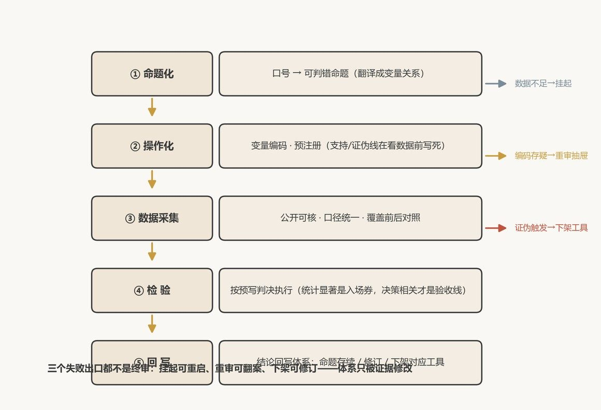
图 16-2 验收流程：从口号到判决的五个关口
16.3 16.3 五条验收命题：全书主张的公开抵押 # 概念与机制 公式与参数 表格 可核数据 篇幅 一坐 含表
现在把全书抵押出去。
成本
约 1,164 字 · 约 3 分钟 · 含公式，附人话翻译
结构
7 段 · 含表
备注
《第16章 闭环验收与外部接口：怎么知道这套东西真管用》
本节全文 · 约 1,164 字
现在把全书抵押出去。五条命题（编号沿用第 2 章体系真源），每条对应前文一组核心主张——任何一条被证伪，对应章节的工具必须下架或改造 ：
表 16-1 验收命题表（H1–H5）
编号 命题 对应章 数据来源（候选） 支持性结果 证伪条件 复检周期 H1 有效暴露量 A e f f 第 7 章 纵向暴露日志；创作者/销售岗位的面板数据 回归中 A e f f 二次项不显著或为正（线性甚至超线性） 5 年 H2 认知存量 K 第 8 章 自建识别盲测（第 12 章月度盲测可众包）；专家—新手对照的既有研究 饱和模型（1−exp）拟合显著优于线性模型 线性模型拟合不劣于饱和模型 3 年 H3 人设显著性 S p c o n v λ ） 第 9 章 评审/招聘/投稿的对照数据（同一候选池、不同显著性条件）；平台实验 只有 p c o n v 两条路径均显著，或仅 λ 路径显著 3 年 H4 引入增强回路（转存纪律）者，结果分布的尾部指数显著更小 第 10 章 创作者面板（16.1 节方案）；企业再投资数据 转存组的尾部指数显著小于对照组 组间尾部指数无显著差异 5 年 H5 运气的可控份额随领域系统变化，且可排序 第 4、5 章 各领域运气—技能方差分解（体育、游戏、创业、创作的公开绩效数据） 领域间方差份额差异显著且排序稳定 领域间无系统性差异（可控份额是常数） 5 年
注：五条命题是全书可操作工具的抵押物清单 ——每条都预先写死了“什么结果算输”；一张没有证伪条件的命题表，不是验收单，是许愿单。
三点补充说明，避免误读：
其一，命题的粒度是“机制方向”，不是“参数数值”。 H1 检验的是“递减存在”，不是“你的 α 等于 0.1”——参数估计因人而异（这正是 LEC 回写的对象），命题检验的是方向与形状。把机制当定律、把参数当常数，是对本书最常见的误读 ，验收表从粒度上就堵住这条路。
其二，“部分证据”与“已验证”必须分开标。 目前的诚实状态：H2 有既有文献的方向性旁证（专家—新手的识别差异研究、组块理论的饱和现象——第 8 章引用过，但“饱和模型优于线性”的直接比较尚缺）；H5 有可类比的方差分解研究（体育领域相对充分，商业领域稀缺）；H1、H3、H4 的直接检验均未执行 。本书在附录 C 里逐条标注每条命题的证据状态（已验证/部分旁证/未检验）——这个标注本身接受读者监督 。
其三，证伪之后怎么办，预先写好。 证伪不是体系的末日，是体系的维修流程：H1 被证伪（暴露不递减）→ 第 7 章“换域时机”的两条标准作废，“加量”策略升级为主线；H3 被证伪（S S S 每条证伪条件旁边，都应当预写“若此条倒下，哪些章节降级、哪些工具下架” ——就像第 11 章要求每个参与者预写止损规则一样，体系对自己也预写止损。
16.4 16.4 一个可核的案例：为什么“可复现”是硬通货 # 可核证据 可核数据 篇幅 一坐
本章的 C 级案例不是关于运气的，是关于检验本身的——它来自当代科学方法论的最大规模自查之一。
成本
约 826 字 · 约 2 分钟 · 不需要任何数学基础
结构
4 段
备注
《第16章 闭环验收与外部接口：怎么知道这套东西真管用》
本节全文 · 约 826 字
本章的 C 级案例不是关于运气的，是关于检验本身 的——它来自当代科学方法论的最大规模自查之一。
2015 年，开放科学协作组（Open Science Collaboration）组织了心理学史上最大规模的可复现性检验：选取顶级期刊的一百项实证研究，用预注册的方案、原作者审阅过的流程逐一复现。结果震动学界：按原研究的统计显著性标准，成功复现的比例只有三分之一上下 ；效应量整体显著缩水〔待核：精确复现比例、效应量缩水幅度与分领域差异，见附录 C〕。
这个结果对本书的直接价值，是三条方法论纪律——全部已写进 16.1–16.3 节的验收设计里 ：
预注册的必要性 。原研究里“显著”的结果在复现中大量失效，主要嫌疑之一是研究者的自由度 （分析路径在看到数据后可以挑选：剔不剔极端值、用哪个控制变量、何时停止采样——每一步都朝着“显著”的方向偏）。本书的对应纪律：支持/证伪线在看数据前写死（表 16-1 的第 5、6 列），编码手册在结果前锁定 （16.1 节热手教训的第三条）。效应量优先于显著性 。p 值显著但效应量微小的结果，工程上等于没用（一个统计显著但只解释 1% 方差的“运气规律”，不改变任何决策）。本书的对应纪律：每条命题的验收标准都含效应量的实践门槛 （比如 H1 的二次项不仅显著，且曲率足以改变“加量还是换域”的决策分界）——统计显著是入场券，决策相关才是验收线。单次检验不判死刑 。复现失败的研究不全是错的——也有复现流程本身的问题（被试差异、情境漂移）。对应纪律：证伪需要两次独立数据的合力 （第一次证伪→修订编码与设计→第二次复检仍证伪→命题下架）。这不是拖延，是与 Duhem-Quine 问题（深水区框二）的正面对峙。按案例纪律补边界：可复现性项目的对象是实验室心理学，其结论不能直接迁移为“社科研究三分之一不可信”这类大话——但作为方法学镜鉴 ，它对任何自称可检验的体系（包括本书）都是一面照妖镜：愿不愿意被复现、敢不敢预注册、能不能接受效应量缩水，三问之下，可检验性是真是假立现。
16.5 16.5 外部接口：这本书向所有人开放什么 # 概念与机制 公式与参数 表格 可核数据 篇幅 一会儿 含表
验收命题若只留在书里，就只是姿态。
成本
约 1,754 字 · 约 4.5 分钟 · 含公式，附人话翻译
结构
12 段 · 含表
备注
《第16章 闭环验收与外部接口：怎么知道这套东西真管用》
本节全文 · 约 1,754 字
验收命题若只留在书里，就只是姿态。本节把接口具体化——你能拿本书做什么 ：
接口一：数据贡献。 表 16-2 列出每条命题的候选数据源与采集口径。个人读者最有价值的贡献是纵向日志 ：暴露日志（表 7-2）、审计读数（表 12-1）、LEC 干预记录——按统一模板记录满两年以上的个人面板，是 H1 与 H4 个体版最稀缺的数据（公开平台上“转存行为”难以观测，个人日志可以）。数据只以聚合与匿名形态进入任何公开分析 ——这是伦理底线，也是第 17 章的伏笔。
接口二：工具反馈。 全书交付的工具（诊断矩阵、决策表、量表、审计表）都是“设计稿”——它们的信度效度（重测一致性、与结果的预测力）需要使用数据来修订。最低成本的参与：用满一个年度周期（表 13-3）后，把“哪些工具你实际在用、哪些早就放弃了”反馈回来 ——被弃用的工具与被证伪的命题同等重要（失效模式清单第一条“只观测不干预”的用户版，就是工具弃用率本身）。
接口三：对抗性检验。 最有价值的贡献来自反对者 。本书特别欢迎三类攻击：①证伪性攻击——按表 16-1 的证伪条件跑出反向结果；②编码性攻击——指出代理指标的抽屉偏差（16.1 节热手教训的第三条，永远欢迎重审抽屉）；③边界性攻击——在某个领域（如体制内职业、学术圈、跨境商业）整套参数失效的案例。对第三类，本书的预设立场是“边界存在且比我们写的大” ——第 5 章讲过三尺度、第 15 章讲过平台特化，但领域间的参数差异（第 17 章的“运气可控份额”路线图）确实可能让某些领域的本书工具全线失灵——找到这些领域，是路线图上最重要的输入。
表 16-2 验收数据来源表
命题 候选数据源 获取方式 口径要求 隐私处理 H1 读者纵向暴露日志；销售/BD 岗位面板 模板众包；企业合作 两年以上、同一口径的 A e f f 匿名化、聚合报告 H2 众包识别盲测；既有专家—新手研究 附录 B 自测题的标准化版本 同一题库、跨领域分层 匿名、只报聚合命中率 H3 招聘/评审/投稿的对照样本 与机构合作的准实验设计 同池对照（仅 S 个体级数据脱敏 H4 创作者公开面板；音乐/体育连续成绩 平台公开统计与第三方聚合 成功前后的完整序列；转存编码手册公开 仅公开数据或授权数据 H5 各领域绩效的方差分解 既有研究二次分析 领域抽样框与运气/技能的分解声明一致 无个体隐私风险
注：五个接口对应五种参与深度——从“用两年工具”到“跑一次证伪”——本书的验证计划里没有旁观席 。
接口一落到操作层，是一份三页纸的协议。给它的骨架，供未来的协作方与读者预先知道规则：
数据贡献协议样例（个人面板版）
第一部分：你提交什么。 一份“个人运气面板”＝四张表的两年序列：暴露日志（表 7-2，周度 A e f f
第二部分：数据怎么处理。 三级处理链条：①你自持原件（模板是本地文件，不联网）；②提交时只交“参数版”——所有人名、公司名、地名替换为编号（替换规则随模板提供），事件描述删除，只留结构化读数；③公开分析只用聚合层——任何报告只出现“样本量 N、分组均值与分布”，单个面板永远不进任何公开材料。反向承诺同样成文：模板与提交通道不设任何“雇主可见”接口 （第 17 章伦理五的理由：测量工具天然携带权力，先设计权力的边界，再推广工具）。
第三部分：你得到什么。 贡献者收到的不是报酬，是三样东西：①面板的自动化年度报告（你自己的参数估计：α 、k
为什么规则要写这么细？数据协作的失败史几乎全是“规则后补”的历史——先收数据、后定用途，是信任透支的标准路径（第 9 章信任账本的组织版）。协议先行，是本书体系的一次自我应用：预先边界条款（14.3 机制五）、可审计的承诺（14.3 机制二）、聚合匿名的底线（第 17 章伦理五）——三件工具在同一份协议里合体 。
可执行清单 可核数据 行动工具 篇幅 一坐
从五条命题里挑一条你最不信的（如果一条都不信，挑最反直觉的），把表 16-1 对应行的“证伪条件”读三遍，然后问自己一个问题：……
成本
约 147 字 · 约 1 分钟 · 不需要任何数学基础
结构
1 段
备注
《第16章 闭环验收与外部接口：怎么知道这套东西真管用》· 本章交付的动作
本节全文 · 约 147 字
从五条命题里挑一条你最不信的 （如果一条都不信，挑最反直觉的），把表 16-1 对应行的“证伪条件”读三遍，然后问自己一个问题：如果明天有一份数据满足了这条证伪条件，你希望本书的对应章节怎么改？ ——把这个答案写下来。你刚才完成的，就是一次“预写判决”的演练——你自己知识体系的验收流程，从这一问开始。
深水区（进阶·可跳过） 【进阶 · 可跳过】
框一：五条命题的统计检验设计
逐条给出可执行的检验骨架（细节以附录 C 的技术附录为准）：
H1 ：被解释变量为机遇实现计数（五年窗口），核心解释变量为 A e f f 边际递减的判据是二次项显著为负 ，且拐点落在 A e f f
H2 ：同一批被试在受控时间内做识别盲测（命中率），K 判据是嵌套模型比较 ：饱和模型 p d e t k K p d e t K K
H3 ：最干净的设计是准实验对照——同一评审池，同一作品集，仅操纵显著性信息（作者署名的公开度/检索度），观察①被邀约率（λ 路径）与②被选择率（p c o n v 判据 ：路径分解（结构方程或两阶段设计）中，S p c o n v S λ 路径不显著。证伪的判读要小心 ：若两条路径均显著，先查 S
H4 ：转存编码分组（编码手册预注册），比较两组成绩分布的尾部指数（Hill 型估计量，附自举置信区间）与面板自相关（持续性）。两组必须在产出总量与更新频率上匹配 （倾向得分或精确匹配）——否则测到的是“勤快”而不是“转存”（16.1 节的控制化要求）。
H5 ：各领域分别做绩效的运气—技能方差分解（方法随领域而异：体育用表现的时间序列方差分解，游戏用天梯的随机匹配设计，创业用行业 cohort 的存活分析），比较“运气份额”的领域间排序在时间与子样本上的稳定性。注意 ：分解方法本身的选择会引入抽屉——不同方法得到的份额不可直接横比，只在同一方法内比较领域 。
跳过本框不影响后续阅读。
【进阶 · 可跳过】
框二：证伪的哲学边界——Duhem-Quine 问题与三重防护
波普尔式的“可证伪”听起来干脆：命题撞上反例就死。实际的检验永远测的是命题+辅助假设的合取 ——H1 被证伪时，死的有可能是“A e f f 判决性实验不存在，因为打包的责任无法在逻辑上拆分。
工程学的回应不是回避，而是给拆分提供流程——本书的验收设计里已经埋了三重防护：①代理指标的事先分级 （第 2 章公设二：代理是近似不是等值）——检验失败时，按“测量层→编码层→机制层”的顺序逐层排查，测量与编码层的问题先修，机制层的问题才下架命题（16.1 节热手案例正是“测量层翻案”的示范）；②两次独立证伪才下架 （16.4 节纪律三）——第一次证伪触发的是“重审抽屉”，不是“宣布死刑”；③复检周期 （表 16-1 末列）——参数漂移（二运）可能让旧命题在新环境里复活或失效，验收是周期性的，不是终审制的。
这三重防护有一个共同的代价必须承认：它们让证伪变慢了 。慢不是纵容——没有防护的快证伪，死掉的往往是最有用的理论（热手效应冤案三十年）。工程学的立场始终是：宁可修得慢，不可杀得冤；但该下架的，最终必须下架。
跳过本框不影响后续阅读。
闭环校验 与前置公设是否冲突 ：无冲突，且本章是三公设的自我应用 ——命题表是公设一（机制分解）的检验清单，操作化与编码手册是公设二的执行，证伪下架流程是公设三（干预无效即下架）在体系自身的运行。验收流程本身构成第 4 章干预闭环的体系级实例。是否新增概念需回写术语表 ：新增“验收命题（H1–H5）”“预写判决”“复检周期”“两次独立证伪”的维修流程。已同步 system_doc（命题表本就源于此，本次补充维修流程字段）。是否产出可测指标或工具 ：验收命题表（表 16-1）、数据来源表（表 16-2）、三类外部接口协议——全部进附录 C/D。传统回响 本章回指一条传统要素（对应关系见第 3 章表 3-1，不引入新对应）：
二运——非平稳环境下的参数漂移 。第 3 章翻译“运”时立过纪律：不预测时点，监测漂移方向。本章把这个纪律转向体系自身：运气工程学的参数（ α 的形态、 S 的作用域、回路的强度）本身就是环境的函数，环境漂移，参数漂移，命题必须复检 ——“十年一大运”的传统直觉，在体系内的落点不是个人的吉凶周期，而是知识本身的有效期管理 。体系对自己的“运”，同样保持谦卑（第 11 章八敬神的对照：风险谦卑的认识论版本）。
外部对话 与波普尔证伪主义的对照。 本书的“每条命题预写证伪条件”直接承认证伪主义的核心洞见：不可反驳的理论没有信息量 （“运气是天注定”与“努力就一定成功”共享同一个缺陷——怎么都对）。但本书做了两处工程化修正：其一，接受 Duhem-Quine 的教训，证伪走“三重防护+维修流程”，不做一次判决的终审（框二）——纯Popper式的决绝在实践科学里从未真正运行过；其二，证伪的条件预先量化到决策相关 （效应量门槛），因为本书的目标不是认识论的纯粹，是工程决策的改进。一句话：向波普尔要纪律，向工程学要分寸。
与成功学/玄学出版物的对照。 这是全书外部对话的收束点。成功学著作的典型结构是“案例—道理—更响亮的道理”——每个故事都支持结论，无一条主张可以被任何数据伤害。本书的结构刻意相反：主张—命题—证伪线—复检期 ——五条命题是全书的公开抵押，读者手里的每件工具都标注了“它赌什么、赌输了怎么办”。这不是姿态谦虚，是结构差异：不可证伪的书教人相信，可证伪的书教人核对——你要的若是相信，合上本书去找它；你要的若是核对，欢迎之至，接口在 16.5 节。
本章三句话 验收是工程学的身份证：五条命题（H1–H5）把全书主张押上公开审判台，每条预写证伪条件与下架流程——没有证伪线的命题表是许愿单。
检验的方法纪律先于检验的结论：预写判决、效应量门槛、两次独立证伪、代理指标分层排查——热手效应与可复现性危机的教训，全部铸进验收流程。
外部接口是体系开放的凭证：数据贡献、工具反馈、对抗性检验三个接口向所有人（尤其反对者）敞开——本书的验证计划里没有旁观席。
篇四·闭环、边界与议程
第17章 边界、伦理与体系建设路线图 6 / 6图 17-1 巷口两个摊位：左边一张方桌、一盏茶；右边一张图纸、一把卷尺。问路的人站在中间——这一步的选择，比答案本身重要。 【题记】知之为知之，不知为不知，是知也。——《论语·为政》
第一，任何一门想长期存在的学科，都要先回答两个问题：它和邻居学科的边界在哪（不僭越），它的能力边界在哪（不全能） ——本章逐条划界，一共六位邻居、六条边界。
第二，运气工程学携带着六种特有的伦理风险——从“把结构不公归因为个人不努力”到“用人设工程伪造信号”——每一条都比“没用”更危险，因为它们是“有效但错”的 。
第三，全书以一张路线图收束：短期把量表与命题验掉，中期画出领域参数地图，长期让这套东西进入它该在的位置——学科的终点不是一本书，是一条任何人都可以来修的路。
案例与直觉 可核数据 篇幅 一会儿 主案例
先看一个常见情形（复合案例，非实录）。
成本
约 1,241 字 · 约 3.5 分钟 · 不需要任何数学基础
结构
11 段
备注
《第17章 边界、伦理与体系建设路线图》
本节全文 · 约 1,241 字
先看一个常见情形（复合案例，非实录）。
老城区的巷口，十米之内摆着两个摊。
左边是先生的摊。 方桌、茶盏、一方绒布。年轻人坐下，问的还是那件事：要不要辞掉厂里的活，去南方。先生的流程很稳定——问生辰，看掌纹，沉吟，然后是断言：“你命里带驿马，明春有贵人，动则吉。”年轻人追问“去了要是混不好呢”，先生摆手：“命里有的躲不掉，命里没有求不来。佩个物件，逢七不出门。”收三十块，完事。年轻人走的时候，脚步比来的时候轻——焦虑被收走了，换成了一个确切的答案。
右边是社区咨询台——市设计院退休的工程师老温在这做义务咨询。 同一个年轻人换个座位。老温的流程同样稳定，但每一步都不同——他不问生辰，问数据：“厂里干什么工种？几年了？想去的南方是哪个城市、哪个行业？那边有你认识的人吗？”然后摊开纸笔画了三栏：留下来是什么局（收入曲线、技能过时的风险）；过去是什么局（头两年的收入缺口、你的手艺在那边的需求量、你一个人都不认识意味着什么）；折中是什么局 （先投简历探路、请假去一趟、找找老乡会）。最后老温说：“这三栏是我按你说的信息画的，信息你要是核实出新的，回来改图。要我说，你现在最缺的不是决心，是南边那三行空格的数据。”不收钱，约定“查完了再来”。
年轻人后来去了右边的摊第二次、第三次——不是去求答案，是去改图 。
先给这个巷口补一个数据底座 （C 级参照，按案例纪律入册）：求助于左边摊位的人，既不是少数，也谈不上恶昧——多国的抽样调查显示，相当比例的成年人曾在人生决策前后使用占卜类服务（占星、塔罗、命理咨询），且使用高峰集中在不确定性最高的决策期：择业、婚嫁、迁移、患病〔待核：具体民调机构、年份与口径，见附录 C〕。这个数字在本章的用法只有一条：左边摊位接住的需求，真实、普遍、且在高压时刻剧增 ——任何替代方案（包括本书）都必须先回答“拿什么接住这份需求”，才轮得到谈别的。
这个对照不是用来嘲笑左边的。恰恰相反——先做三句公道话，它们决定了本章对传统的全部态度：
其一，先生卖的不是预测，是焦虑的即时止痛 。确定性是奢侈品，重病患者、破产者、迷途者对“确切答案”的需求是真实的——先生满足的这个需求，工程学满足不了（工程学永远只给概率与流程，它治不了“我只想知道结果”的痛）。
其二，占卜仪式承载着承诺装置的真实功能 ——“佩个物件”“逢七不出门”是一套自我约束的锚点，行为上真的降低了当事人冲动决策的频率（第 11 章讲过：仪式降低短视偏离，这正是八敬神的工程翻译）。先生的摊位，一半是心理服务，一半是行为装置——这两半都真实有效。
其三，问题只出在职能僭越 ：当摊位开始回答“去不去南方”这种工程问题 时，它给出的是不可核的断言、不可测的解法、无复购的验证、外置的责任——四样凑齐，再灵的仪式也撑不起一个决策。
右边摊位的全部优势，用本书的语言一句话说完：图纸把参数还给提问的人，并约定了复测。 全书十七章，说到底就是右边那张桌子上的东西。而本章的任务，是在收摊之前把话说完：这张桌子管什么、不管什么、用错了会害什么人。
概念与机制 公式与参数 表格 篇幅 一会儿 含表
运气工程学站在一片热闹的街区里。
成本
约 1,244 字 · 约 3.5 分钟 · 含公式，附人话翻译
结构
7 段 · 含表 · 含插图
备注
《第17章 边界、伦理与体系建设路线图》
本节全文 · 约 1,244 字
运气工程学站在一片热闹的街区里。把边界划清楚，它才能不卑不亢地存在：每一条边界的句式都是“邻居管A，本书管B，接口在C” ——划界不是割席，是接口声明。
表 17-1 学科划界表
邻居学科 它管什么 本书管什么 接口 概率论/随机过程 随机现象的数学结构（分布、过程、定理） 数学结构在人生系统上的工程安装 ：测量、干预、复测 全书公式（λ 、p d e t g 决策论/决策分析 单次决策的最优选择（期望效用、偏好公理） 跨期、跨机制的参数管理 ——决策只是流程中的一个事件（第 13 章）决策表借用期望效用思想；关键差异：本书管理的是“决策的制度环境”（可逆性、信息期） 风险管理 下行防护：风险识别、对冲、资本约束 下行防护加 上行制造——第 11 章与风险管理最亲，第 7–10 章是风险管理没有的半边 D m a x 行为经济学 人类偏离理性的描述与解释 （偏差清单） 偏差的对抗性工程 ：把“你应该知道”翻译成“你按下周一晚八点会做的流程” 每一件工具都在堵一个已知的偏差（第 12 章三坑对应三类偏差） 复杂系统/网络科学 涌现、幂律、网络结构的描述性规律 规律之上的可设计性 ：给个体与组织的操作位 Barabási 描述分布（第 1 章外部对话），本书回答“分布里的你怎么办” 组织理论/管理学 组织结构、激励、文化的机制与证据 组织的运气参数视角 ：把团队与平台看作造运装置（第 14、15 章） 信任机制与分利契约承接组织行为学证据，接口是 T t r u s t g
注：六条边界合并成一句——邻居们回答“世界如何运转”“人如何选择”“组织如何激励”，本书回答“一个具体的人如何系统地管理自己的运气链条” ——这个问题此前没有专门的家。
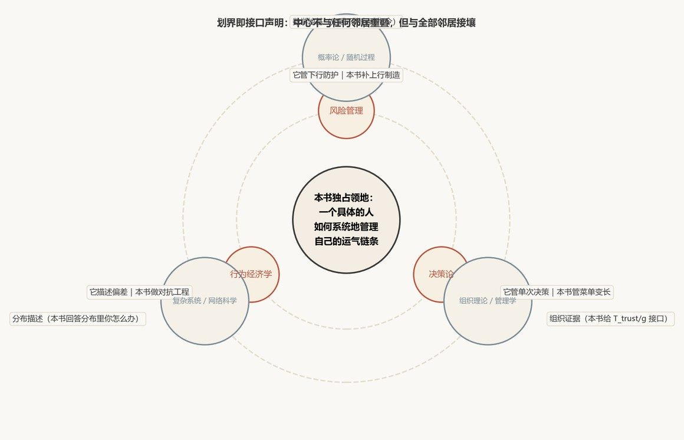
图 17-2 学科划界同心圆 划界的深水区逐条版见本章框一。这里只强调三条最容易被误判的边界：
边界一：本书不是概率论的通俗版。 概率论给你“彩票期望为负”的定理，但不给你“该不该买”的行动（这取决于你的效用函数、娱乐预算与自我欺骗倾向——全是概率论外的东西）。本书的全部重心在概率论不管的那段：怎么测量你自己的参数、怎么设计你的干预、怎么复测并回写 ——定理是地图，工程是修路。
边界二：本书不是行为经济学的应用文摘。 行为经济学诊断偏差（“人类有可得性偏差”），处方稀缺且效果依赖读者自觉（“知道了，下次注意”）。本书的立场更冷：知道偏差不等于能对抗偏差 ——对抗靠流程与装置（审计表避开情绪时间窗、决策表先于到期、承诺书面化），不靠意志力。诊断学与工程学的分界，就是内科与外科的分界。
边界三：本书不是成功学的新包装。 这条边界第 1 章立过、第 16 章用可证伪性钉死过，此处只补最后一块砖：成功学承诺任何人都能复制第一名，本书承诺任何人都能管理自己的分布 ——前者卖的是榜样的故事，后者给的是你的仪表盘。分布里必然有人留在原地（第 4 章讲过，重尾世界的大多数注定在中位数附近）——运气工程学改善的是你的分布参数，不保证你在分布里的位置 ；这句话在成功学那里是免责声明，在本书这里是第一性原理。
概念与机制 公式与参数 可核数据 篇幅 需专注
现在说全书最重的一节。
成本
约 2,319 字 · 约 6 分钟 · 含公式，附人话翻译
结构
13 段
备注
《第17章 边界、伦理与体系建设路线图》
本节全文 · 约 2,319 字
现在说全书最重的一节。运气工程学的伦理风险有个凶险的特点：它们都发生在工具有效的时候 ——没用透、没写透。
伦理一：结构不公的个人化。 最重的一条。当“暴露、识别、转化”的工程语言普及后，最坏的滥用是反过来审判失败者：“你穷是因为你 A e f f K 把结构性的机会不平等（第 2 章： λ0 的出生地差异、机遇域的初始边界）翻译成个人的工程失职。 本书的全部防御在第 2 章已经埋下：命=初始条件与可行域——可行域窄的人，最优策略也可能只是维持 ；对起点不平等视而不见的“努力叙事”，是工程学最大的伦理滑坡。工具的使用者必须记住：审计表测的是“链条上的短板”，链条的长度本身是社会的产物 。
滑坡情景（微型演示）：一位面试官刷掉了来自县域的候选人，评语写着“社交痕迹稀少，暴露意识不足”。他不知道的是，那位候选人过去三年在工厂两班倒——不是没有暴露意识，是没有可支配的曝光时间。滑坡的完整路径 ：工具测到了“链条短”，使用者却把“链条短”判为“人的错”——λ0 的差异，就在这一步被翻译成了道德差距。
伦理二：信号工程的造假滑坡。 S 改善真实信号的呈现 （可检索、低歧义、首因信号准确）与伪造信号 （虚构履历、水军背书、包装不存在的能力）之间，一步之遥。本书的立场：前者是工程，后者是欺诈——且欺诈在参数上也是自毁的 ：伪造的 S K T t r u s t 但伦理不需要这条工程理由也成立 ：不欺诈是对的，哪怕它能骗过所有仪表。
滑坡情景（微型演示）：简历上的滑坡从来是一小步一小步走的——“参与”改成“主要负责”（也许还行），“主要负责”改成“主导”（已经悬了），“主导”之后是编一个没做过的项目。每一步的内心辩解都一样：“别人也这么写。”穿帮也不在投递时，而在入职后第一次真枪实弹的交付里——伪造的 S 把不匹配的 K 顶到了它托不住的位置，摔下来砸的是两个人：他，和信了他的雇主 。
伦理三：亲密关系的工具化。 第 13 章的择偶表已经立过“评结构不评人”的边界，此处收束为原则：工具只能辅助你看清结构假设（回路是否咬合、底线条款是否谈过），不能替代你回答“我爱不爱” ——把伴侣放进打分表决定去留的人，工具已经反噬了使用者。同样的红线延伸到一切人际关系：审计自己可以，审计他人需要授权 （第 12 章他评校验的匿名与知情设计，正是这条的执行）。
滑坡情景（微型演示）：它通常从“理性择偶”开始——第一次约会后，她给对方建了个表格：条件、参数、权重。三年后伴侣在共享文档里发现了这张表，往回翻，自己的每一次付出、每次争吵后的和解，都被打了分。那一瞬间的感受不是“被评估”，是“从来没有被爱过”——工具没错，错的是把工具带进了它不该进的房间 。
伦理四：幸存者叙事的隐性欺骗。 写方法论的人天然是幸存者——本书作者也不例外。防御在第 16 章已经制度化（可证伪、证伪线公开），此处补一条写作伦理：本书引用的成功者案例（芬尼克兹、步步高）全部标注了幸存者视角的边界，而失败者的系统性缺席是全行业数据缺陷 ——“按流程做然后失败了”的人不会写书、不会被报道。读者应当带着这个折扣读一切方法论，包括本书。
滑坡情景（微型演示）：一位创业者把某本成功书里的“疯狂投入”执行到字面——All in、三倍时长、断绝社交。两年后失败，他的复盘只有一句“是我执行得还不够彻底”。没有人告诉他，写书的人是幸存者；同样做法而失败的人不写书、不上节目、不出现在他的信息流里 。幸存者叙事的欺骗性恰恰在于它的真诚：作者真的相信自己的方法有用——他只是系统性地看不到反例。
伦理五：数据与权力。 运气审计产生高分辨率的个人数据（暴露日志、收入结构、关系台账），平台与雇主若获取之，监控与压价的能力随之而来（第 15 章平台依赖的暗面）。本书的纪律：日志归个人、聚合匿名进研究、个体级数据永不流向任何雇主与平台 ——第 16 章表 16-2 的隐私列是承诺，本条是承诺背后的理由：测量工具天然携带权力，工程学必须先设计权力的边界，再推广工具。
滑坡情景（微型演示）：某公司的人力部门看中了这套工具的“科学性”，要求员工季度提交“人脉台账”与“暴露量记录”，计入绩效参考。三个月内，员工日志里的每一次午餐、每一条消息都开始表演化——数据没有变假，是行为开始为数据而表演 ；再过三个月，最会包装暴露量的人拿了高分，真实做事的人开始学着包装。工具一转手，就从“个人的仪表”变成“组织的监控”——防线只有一条：个体级数据的流向，写死在伦理里，不写在任何组织的制度里。
伦理六：对 L1 的谦卑。 最后一条是给使用者的，也是给作者的。纯随机层（L1）永远存在——再完美的工程，也挡不住落在你头上的那颗陨石；运气工程学的全部成功，也只是把“听天由命”改写成“尽人事而听天命” 。这门学科最深的失败方式，不是被证伪，而是被信徒化：把它读成“控制命运之学”的人，会从一个坑（宿命论）跳进另一个坑（全能自恋）——两个坑的深度一样，第二个还带着工程术语的装饰。谦卑不是修辞，是参数：L1 的存在，写在模型的公理里。
滑坡情景（微型演示）：他把五段全修到了高位——A e f f K S 这个问题本身就说明体系被信徒化了 ：工程管的是链条，链条之外还有世界。五段全绿挡不住 L1，这不是体系的缺陷，是体系的公理。真正的使用者会在愤怒之后回到第 11 章：现在，收敛段接管。
概念与机制 表格 可核数据 篇幅 一坐 含表
如果运气工程学值得存在，它就不该终结于这本书。
成本
约 770 字 · 约 2 分钟 · 不需要任何数学基础
结构
4 段 · 含表
备注
《第17章 边界、伦理与体系建设路线图》
本节全文 · 约 770 字
如果运气工程学值得存在，它就不该终结于这本书。三段路线图，每段都标注可验收的里程碑 （延续第 16 章的纪律：没有验收线的计划是许愿）：
表 17-2 研究议程（三段）
阶段 核心任务 里程碑（验收线） 依赖 短期（1–3 年）：验证 ①量表信效度（重测、与结果变量的预测力）；②H1–H5 首轮检验；③工具弃用率的纵向统计 每张量表有发表级别的信效度数据；五条命题各有首轮判决（支持/证伪/挂起） 附录 B 工具的众包使用；合作机构的面板数据 中期（3–10 年）：地图 ④领域参数地图：不同行业/体制/文化下，五机制的可控份额与形态差异（H5 的展开）；⑤跨文化效度（审计表与决策表的翻译与再验证）；⑥与既有学科的接口研究（与行为经济学的干预对照实验） “运气可控份额”的领域排序经两次独立复检稳定；至少三个文化圈的量表效度验证 短期验证结果；跨国合作 长期（10 年+）：制度化 ⑦教材化（把 LEC 与审计流程写进中学后教育与职业教育）；⑧公共统计（机遇域密度的公开仪表——哪些城市的哪些行业在产生机会，如劳动力统计的扩展）；⑨专业服务规范（职业规划、组织咨询中的运气工程实践守则） 出现本书之外的独立教材与研究团队（学科独立的唯一标志是作者可以被忘记 ）；机遇密度进入公共统计口径 中期地图；伦理规范先行
注：三段路的验收线一条比一条苛刻——短期的验收线在数据里，中期的在复检里，长期的标志是“这本书变得不再必要”。
路线图里埋着三个坦白：其一，本书可能是错的 ——如果 H1–H5 首轮检验大面积证伪，正确的路线是修订再版或公开下架对应工具，路线图自动改道；其二，本书一定是不完整的 ——领域差异（体制内职业、非营利部门、学术生涯的参数形态）目前的覆盖是薄的，中期地图的很多格子要由后来者填；其三，这本书不该有“门派” ——第 16 章的三个接口存在的原因：一门健康的学科，继承的是问题与方法，不是权威与忠诚。
概念与机制 篇幅 一坐
最后一页，回到第 1 章开头那个车间师傅。
成本
约 749 字 · 约 2 分钟 · 不需要任何数学基础
结构
9 段
备注
《第17章 边界、伦理与体系建设路线图》
本节全文 · 约 749 字
最后一页，回到第 1 章开头那个车间师傅。
十几年彩票，一次足以退休的大奖，五年，回到车间，还多了一笔债。第 1 章用他问“运气是什么”；第 11 章用他问“链条哪一段断了”；现在，让故事再往前走几步。
假设某个版本的师傅，在一切开始之前翻开了这本书。他会怎么做？诚实的推演是：他大概率还是会买彩票 ——小额、持续、当作一种带彩头的娱乐（第 11 章的纪律里，负期望游戏的娱乐额度是允许的，只要它不冒充投资）。他中奖之后的五年大概率还是会有波动——工程学不担保结局 。但有几样东西会不一样：奖金到账的那个月，他会先填一张风险清单（表 11-1），把“底线生活成本×二十四个月”划出去再谈其他；朋友的两个项目会过一遍非对称三问，其中至少有一个他不会投；如果他做得足够好，五年后他不在车间——但也未必在豪宅，更可能在他自己那间小修理铺里，账上留着冗余，手上攒着回头客，手里有一张他看得懂的仪表盘。
不是奇迹的版本。是幸存且在积累 的版本。
这本书写到这里，可以把全部主张压缩成最后三句话：
运气不可消灭 ——它是世界的底层材质，重尾、非平稳、从不承诺公平；否认它的人被它反复教育，跪拜它的人被它原地收割。
但运气的链条可以管理 ——暴露可以加、识别可以练、转化可以攒、回路可以造、下行可以封；每一环都有参数、有仪表、有工具，也都有失效的边界。
而管理的前提，是把命运的语言翻译成参数的语言 ——古人用十二要素写下的清单，今天可以写成一张审计表。翻译改变不了骰子，但改变了你与骰子的关系：从等待结果的赌徒，变成经营赌场的工程师——你仍然不知道下一局开什么，但每一局的赔率、仓位与底线，都由你签收。
师傅退休那天，把工具箱留在了车间。这本书如果有一件真正想留给读者的东西，不是某个章节的某个工具——是那个工具箱的位置 ：不在庙里，不在摊上，在你自己手里。
可执行清单 可核数据 行动工具 篇幅 一坐
重读 17.1 节巷口那段，然后问自己：过去一年里，你人生中最重要的一次决策，是在左边摊位还是右边摊位做的？
成本
约 151 字 · 约 1 分钟 · 不需要任何数学基础
结构
1 段
备注
《第17章 边界、伦理与体系建设路线图》· 本章交付的动作
本节全文 · 约 151 字
重读 17.1 节巷口那段，然后问自己：过去一年里，你人生中最重要的一次决策，是在左边摊位还是右边摊位做的？ ——是拿着一个“确切答案”就上路了，还是带着一张“可以回来改的图纸”？如果是前者，别自责（人人都这样），只做一件事：把那个决策里你还没核实过的三行“空格数据”写下来 ——那就是你的图纸，从今天开始画。
深水区（进阶·可跳过） 【进阶 · 可跳过】
框一：六学科划界的逐条详细版
对概率论 ：本书与它的关系是纯下游——λ 的到达过程（近似泊松）、p d e t g 概率论的定理不携带行动指令 （大数定律不说“你该多试”，期望值理论不说“你该买保险”——从定理到行动，中间隔着效用、约束与偏好，那是本书与决策论的接口）。反过来，本书对概率论的唯一“贡献”是提出了一批应用层的估计问题 （个体 α 、g
对决策论 ：经典决策分析（期望效用、决策树）处理“给定选项集的单次选择”；本书处理的是选项集本身的演化 （A e f f K S
对风险管理 ：第 11 章几乎可以放进任何一本风险管理的教材（止损、分散、冗余、保险、去杠杆——五件工具全是行业标准）。本书的增量在另一半：风险管理假设机会是给定的，只管下行；本书主张上行也是工程对象 （λ 可抬、p d e t g
对行为经济学 ：描述性 vs 规范性的经典分工里，行为经济学在“描述”侧极强（偏差清单），在“规范”侧的成果主要是“助推”（nudge）。本书与助推家族的关系：审计表、预写判决、承诺书面化都是助推（选择架构）的扩展应用；差异在于本书的装置全部绑定参数回写 （LEC 第五步）——助推改一次行为，工程学维护一条参数曲线。对照实验（路线图任务⑥）将检验这个差异是否真实存在。
对复杂系统/网络科学 ：Barabási 一系描述了成功的不平等分布（无标度、优先连接）；本书不与之竞争描述，而在描述之上做两件它不做的事：个体视角的可操作性 （分布知识对你个人的决策含义）与回路的设计学 （优先连接描述马太效应的发生，本书研究怎么把你的产出接进优先连接的管道——第 10 章转存三通道）。一句划界：网络科学解释为什么赢家通吃，本书研究怎么不当输家——以及当不成赢家时怎么活。
对组织理论 ：第 14 章的信任机制与分利契约大量承接既有证据（重复博弈、ESOP 研究、心理安全），本书的新增是参数接口 ：把组织设计问题翻译成 T t r u s t g λ 分布、容错边界对暴露行为的影响），路线图的中期任务⑤包含若干可合作的准实验设计。
跳过本框不影响后续阅读。
【进阶 · 可跳过】
框二：全书自洽的总检查——三道闸门在收束处的运行
作为收束章的深水区，跑一遍全书的三道自洽闸门（第 2 章立的规矩），检验体系在终点处是否仍然自洽：
量纲检验 ：全书公式在终点处无新增（第 17 章不引入新模型）——E [N l u c k λ ·p d e t p c o n v T g D m a x
值域与单调性检验 ：学科划界与伦理条款不改变任何参数的值域——特别地，17.3 伦理六条不与任何公设冲突（它们约束的是工具的使用 ，不是工具的定义 ）。路线图的验收线全部是可判错的（有里程碑、有判决标准）。通过。
可检验检验 ：本章新增的概念（划界表、伦理六条、议程三段）中，划界与议程是元层主张（关于体系的主张，不进入参数表）；伦理条款是使用规范（约束行为，不进入参数表）——两者都正确地没有进入术语表 ，体系的参数层在收束处保持封闭。这是自洽的最后一块：元层与对象层分离，学科划界才不会污染参数定义。
通过的结论：全书体系在收束处依然过闸——但按第 16 章的纪律补一句：过闸只说明内部自洽，不说明外部为真 ——外部为真的检验，在表 16-1 里，等你执行。
跳过本框不影响后续阅读。
闭环校验 与前置公设是否冲突 ：无冲突，且本章是对三公设的边界声明 ：可分解性有 L1 边界（伦理六）、可观测性有测量层与本体层的边界（框二、16.1 节）、可干预性有结构不公的边界（伦理一）——公设在边界内成立，边界本身成章。是否新增概念需回写术语表 ：本章为元层（划界、伦理、议程），按框二的检查，正确地不新增对象层术语 ——这本身是闭环校验的通过项，而非遗漏。是否产出可测指标或工具 ：学科划界表（表 17-1）、研究议程表（表 17-2）、伦理六条（作为工具使用的规范条款）——前两者进附录，伦理条款建议印入附录 B 每张工具表的页脚（出版阶段执行）。传统回响 本章是传统回响的终点站——十二要素在此走完一圈 （全部对应关系见第 3 章表 3-1）。
起点是“一命”（初始条件与可行域），终点回到它，但含义已经不同：第 2 章说命是起点，第 17 章补上终点处的公道话——工程学不推翻命，它扩大可行域 ；可行域扩大到哪里，仍是命的一部分。中间十项，每一项都拿到了自己的现代住址：运是参数漂移、风水是生态位、阴德是信任资本、读书是认知存量、名是可检索性、相是首因信号、敬神是承诺装置、贵人是网络结构、养生是时间预算、择业择偶是关键决策、趋吉避凶是下界管理——古人排出的顺序（条件→积累→工程）与本书的实施顺序（公设→机制→干预→闭环）在每个层次上咬合 （第 3 章三层次同构表的最终陈述）。
而巷口的两个摊位（17.1 节），是对这场翻译最公平的收束：占卜摊的承诺装置功能被工程学收编（仪式变成流程、敬畏变成条款），它的预测职能被参数语言替代（断言变成仪表、判决变成复测） ——传统没有被否定，它被拆解、保留、然后安放在新的位置上。这本书对传统的全部态度，就是右边摊位对左边摊位的态度：不砸摊子，只划职能。
外部对话 与塔勒布的对照（全书外部对话的收束）。 从第 1 章到第 11 章，塔勒布多次出场：随机性的不可消除、尾部事件的致命性、凸性与去杠杆——他给了本书整个“防御半区”的思想地基 。差异在另一半：塔勒布的姿态是防御与幸存（如何在随机性中不被杀死、甚至从波动中获益——他的答案偏“结构选型”：凸性头寸、杠铃策略）；本书补上了建设半区 ：机会到达率、识别、转化、回路——如何在承认随机性的前提下，主动把运气链条造粗。一句话总结这场持续全书的对话：塔勒布教你如何在赌场里活下来，本书还想教你怎么在赌场隔壁开一家自己的生意——两门课都要上，缺一门都危险。
与一切“命运之书”的对照。 从古至今，回答运气问题的书大致四类：占验类（告诉你何时吉凶）、励志类（告诉你努力必成）、玄学类（告诉你宇宙法则）、学术类（告诉你分布形态）。本书尝试第五个位置：工程类 ——不占验（不预测时点）、不励志（不承诺结果）、不玄学（每个主张可证伪）、不停留于学术（每个机制配工具）——它只做一件事：把运气问题从“求答案”改写成“做工程”。 这个位置能不能站住，不取决于这本 书说得多好，取决于表 16-1 的五条命题与表 17-2 的三段验收线——学科的信用，永远押在它能被推翻的部分上。
本章三句话 划界让学科站得住：六位邻居各有其位——本书的独占领地只有一个问题：一个具体的人如何系统地管理自己的运气链条。
伦理六条是工具的“刹车片”：结构不公不能个人化、信号不能伪造、关系不能工具化、幸存者叙事要打折、数据权力要设界、L1 面前要谦卑——有效但错，比无用更危险。
路线图的终点是这本书变得不必要：短期验证、中期画地图、长期制度化——一门健康学科的继承物是问题与方法，不是权威与忠诚。
附录
附录A 术语与符号表 5 / 5本附录是全书术语与符号的唯一汇总处，由体系真源（`system_doc.md`）导出并补齐各章新增术语。正文术语与本书冲突时，以本附录为准。
术语命名原则：不与既有学科术语撞名 ——凡借用外来术语（如“弱连接”），均标注外来属性与出处，不改变其在原学科的含义。
概念与机制 公式与参数 表格 篇幅 一坐 含表
正文高频使用的核心概念，每条给“人话版定义”（括注）与正式定义。
成本
约 778 字 · 约 2 分钟 · 含公式，附人话翻译
结构
1 段 · 含表
备注
《附录A 术语与符号表》
本节全文 · 约 778 字
正文高频使用的核心概念，每条给“人话版定义”（括注）与正式定义。
术语 人话版定义 正式定义 首次定义章 机遇（Opportunity） 一个能让你变好的机会 存在一组可行行动使主体效用增量 ΔU > 0，且此前未纳入其行动集的状态 2 机遇域（Opportunity Domain） 你能撞上机会的那片场子 主体在给定时空与网络位置下可达的机遇集合（“可行域”为其通俗别名） 2 机会到达率（λ ） 单位时间里有多少机会撞上你 单位时间内进入主体机遇域的候选机遇数，量纲 [1/时间] 7 有效行动暴露量（A e f f 真正产生新接触的行动量 单位时间内产生非重复 新接触的行动次数 7 认知敏感度（K 你能不能看出这是个机会 主体对机遇信号的识别存量（领域知识与模式库） 8 识别概率（p d e t 机会摆在你面前，你看得出来吗 候选机遇被主体正确识别的概率，值域 [0,1] 8 人设显著性（S 别人遇事想不想到你 主体在他人决策集中的可检索度与稀缺度 9 信任传导（T t r u s t 别人信不信你会守约 重复博弈中主体履约历史形成的信任存量（通俗概念名：信任资本，与“信任存量”为同一参数的双名关系） 9、14 转化概率（p c o n v 机会最终落在你头上 被识别机遇转化为主体实际收益事件的概率，值域 [0,1] 9 增强回路（g 好结果自己带出下一个好结果 本期结果对下期机会到达率的乘性增益系数 10 回路之运（L5） 让运气自己滚起来 作用于 L2–L4 的增益结构（非并列的第五类运气） 4、10 运气资本（Luck Capital） 你攒下来的“下一次机会” 由历史成功沉淀、可提高未来机会到达率与转化率的结构性存量 10、12 尾部风险与回撤下界 最坏会坏到什么程度 损失分布的尾部形态与主体可承受的最大回撤约束 11 运气审计 给自己五年运气做个体检 按五机制逐项打分并定位短板的标准化流程 12 运气工程循环（LEC） 观测—诊断—干预—复测—回写 见 A.4 闭环三层 4、16
概念与机制 公式与参数 表格 可核数据 篇幅 需专注 含表
各章在核心术语之上引入的操作性概念。
成本
约 1,913 字 · 约 5 分钟 · 含公式，附人话翻译
结构
6 段 · 含表
备注
《附录A 术语与符号表》
本节全文 · 约 1,913 字
各章在核心术语之上引入的操作性概念。凡标〔外来〕者，为借用既有学科术语，本书不改变其原义。
第3章（传统重构）
术语 定义 备注 条件层／积累层／工程层 十二要素的三层次结构：命运风水（不可控与半可控条件）／阴德至贵人（六种可投资本）／养生至避凶（工程学落地三件） 结构概念，非参数；与全书四篇同构 承诺装置（commitment device） 以公示、契约、第三方监督等机制把“敬畏”制度化，降低短视偏离 〔外来〕行为经济学术语；对应八敬神 弱连接 与低频接触但跨圈层的人的连接，信息增量高于强连接 〔外来〕Granovetter (1973)；对应九交贵人
第4–5章（分类法）
术语 定义 备注 运气五机制—三尺度分类法 生成机制（L1–L5）× 主体尺度（个人/团队/平台）× 价值分布（重尾）的正交分类框架 全书目录的生成器 L1 随机之运／L2 暴露之运／L3 识别之运／L4 选择之运／L5 回路之运 生成机制五类，详见第4章 L5 定位为增益层，非并列第五种 尾部指数（αv ） 单次价值分布的尾部形态参数，值越小尾越重 幂律拟合 圈层重叠度 团队成员机遇域的交叠程度，决定团队 λ 能否近似求和 第5章 规则透明度 平台规则的可知、可预期、可申诉程度 第5章引入概念，第15章给五维量表
第6–11章（五段机制）
术语 定义 备注 开环／闭环 无反馈 / 有反馈回路的系统结构 〔外来〕工程学基础概念 串联可靠性 链条总体可靠性等于各段可靠性的乘积，任一段归零则整体归零 工具性概念；第11章推广为“存续因子” 域（Domain） 机会密度与可及性的组合，λ0 与 α 的载体 换域＝曲线级跳迁，第7章 域饱和度（s） 该域内你已触达的比例，s 越高 α 越低 深水区概念 假暴露 三形态：回音壁（重复同圈）、广播式（无差别撒网）、重复冲撞（反复触达同一目标） A e f f 模式库 K 第8章 领域阈值（K 识别概率进入有效区所需的最低认知存量 漏认率判据可测 漏认率 月度盲测中未识别的机遇信号比例 L3 诊断读数 识别外包 借他人之眼补 K 干预手段 S 可检索性、标签精度、稀缺度——人设显著性的三个可操作维度 第9章 信任账本的不对称性 信任建立缓慢、摧毁迅速（十次建立、一次摧毁） T t r u s t 昂贵信号 有真实成本、因而难以伪造的可观察特征 〔外来〕信号理论；对应七相 转存通道 把一次性成功转为结构性存量的路径，四形态：能力、声誉、网络、资产 第10章 回投比例 单次成功收益中转入存量再投入的份额 回路画布④设计位 可转存失败／不可转存失败 失败是否留下可复用残值——两类失败需不同清算 第10章安全规程 非对称三问 下行有界吗？上行敞开吗？代价付得起吗？——凸性判定 第11章 波动拖累 亏损与盈利不对称时，几何收益低于算术收益 复利视角的反脆弱基础 存续因子 串联可靠性的推广：任何一段失效即整体出局 收敛段的数学骨架 负期望游戏三问 期望为负吗？尾部可控吗？何时离场？——三问不过即不参与 第11章
第12–15章（三层干预）
术语 定义 备注 审计三层结构 自评量表层（半年）＋客观读数层（季度）＋他评校验层（年度） 第12章 分诊三级 建议复查／自行干预／重大调整——异常读数的处理分流 借用体检分诊逻辑 三个自评坑 参照系漂移、中心化偏差、情绪时间窗污染 各配一个补丁 关键决策三判据 低频、难分批、乘性重置——满足三者才是“关键决策” 第13章 可逆性分级 四级：即弃型／缓冲型／高摩擦型／乘性重置型 对应不同决策流程强度 决策降级三手段 小规模先行、分阶段承诺、预设退出条款——把不可逆改造成可逆 第13章 信任机制五件套 书面化、台账、决策可预期、失败处理、边界条款 第14章，各配可测读数 分利契约五要点 度量口径、三层结构（即期/递延/权益）、递延 vesting、动态调整、退出底线 第14章 责任分层声明 结构之责／流程之责／个人之责三层归因 容错文化的制度接口 可容之错／不可容之错 边界划线：实验性失败可容，底线违规不可容 容错不等于纵容 跨边网络效应 平台价值正比于两侧用户数之积 n₁·n₂（而非单侧平方） 梅特卡夫定律的修正形式，第15章 试探性多归属 同时保持两三个平台的轻量存在，保留切换期权 对冲平台规则风险 平台仓位上限 事前写定的单一平台暴露上限——“平台明天关停，你疼而不残” 仓位纪律
第16–17章（闭环与边界）
术语 定义 备注 验收命题（H1–H5） 体系的五条可检验命题，各含证伪条件与复检周期 表 16-1 预写判决 检验之前先写定“什么结果算支持、什么结果算证伪” 防事后合理化 两次独立证伪 命题被证伪后经维修流程，须两次独立证伪才降级对应章节 维修流程见 16 章 元层／对象层 讨论体系本身（划界、伦理）为元层；讨论运气机制为对象层 第17章属元层，不新增对象层术语
概念与机制 公式与参数 表格 可核数据 篇幅 一坐 含表
D_max 的特殊性：它是体系内唯一由主体自行设定的参数（其余参数均由环境或数据估计）——……
成本
约 530 字 · 约 1.5 分钟 · 含公式，附人话翻译
结构
1 段 · 含表
备注
《附录A 术语与符号表》
本节全文 · 约 530 字
符号 含义 单位 值域/约束 代理指标 λ0 基础机会到达率（环境给定） 次/月 ≥0 行业/岗位/平台的机会密度 α 单次有效接触转化为候选机遇的效率 无量纲 (0,1] 由纵向数据估计 A e f f 有效行动暴露量 次/月 ≥0 有效新接触数（日志） λ 机会到达率 次/月 ≥0 λ0 +α·A e f f K 认知敏感度存量 知识单位（可用训练小时近似） ≥0 领域测评 + 信号识别命中率 k 单位认知存量的识别效率 1/知识单位 >0 由识别实验估计 p d e t 识别概率 无量纲 [0,1] 识别任务命中率 S 人设显著性 无量纲指数 ≥0 搜索指数、被邀约次数 T t r u s t 信任存量 无量纲指数 ≥0 履约率、合作时长、留存 p c o n v 转化概率 无量纲 [0,1] 被选择率 T 暴露期 月 ≥0 有效工作/在场时长 E [N l u c k 期望运气事件数 无量纲 ≥0 λ·p d e t p c o n v T V s i n g l e 单次机遇价值 元或效用单位 ≥0 收益分布 αv 单次价值分布的尾部指数 无量纲 >0（值越小尾越重） 幂律拟合 g 回路增益系数 无量纲 ≥0 复购/复投/引荐率 D m a x 可承受最大回撤 元或比例 由主体设定 现金流与冗余度
D m a x 的特殊性 ：它是体系内唯一由主体自行设定的参数（其余参数均由环境或数据估计）——这不是缺陷，是立场：风险底线不服从统计，服从主体的存续约束 （第11章）。
概念与机制 公式与参数 篇幅 一坐
理论闭环三层：
成本
约 283 字 · 约 1 分钟 · 含公式，附人话翻译
结构
2 段
备注
《附录A 术语与符号表》
本节全文 · 约 283 字
理论闭环三层 ：
过程闭环（机制层）：暴露 → 识别 → 转化 → 放大 → 收敛 → 回到暴露 干预闭环（方法层）：观测 → 诊断 → 干预 → 复测 → 参数回写 → 模型更新（LEC） 主体闭环（尺度层）：个人 → 团队 → 平台 → 反哺个人 量纲自洽说明 （深水区内容的汇总，详见第7–11章各深水区框）：`λ·T ` 得无量纲计数，再乘两个概率仍为无量纲；`E[V] = E[N]·E[V s i n g l e λt ·(1 + g K ×S
概念与机制 篇幅 一坐
成本
约 158 字 · 约 1 分钟 · 不需要任何数学基础
结构
0 段
备注
《附录A 术语与符号表》
本节全文 · 约 158 字
正文首次出现术语处均给“人话版定义”（括注），正式定义以本附录为准。 各章“闭环校验”中声明的新增术语，均已收入 A.2；若发现正文术语与本附录不一致，属排印错误，请以本附录为准并向作者反馈（反馈渠道见第16章外部接口）。 本附录与 `ledgers/system_doc.md` 同步维护；术语增删需在该台账变更记录中留痕。
附录
附录B 工具包：量表与模板汇编 14 / 14全书交付的十二件工具，按使用顺序汇编。每件工具给四样东西：用途、来源章、工具—参数—指标对齐、使用周期 。完整表格见对应章正文；本附录给的是“怎么选、怎么组合、怎么追溯参数”。
全书工具页脚统一印伦理条款 （第17章伦理六条的压缩版）：本书工具改善的是分布参数，不保证个体结果；不用于评价他人优劣；结构不公不由个人承担。
入选纪律：每件工具必须能追溯到至少一个模型参数，追溯不到的一律不收。
概念与机制 公式与参数 表格 篇幅 一坐 含表
三条组合建议：
成本
约 586 字 · 约 1.5 分钟 · 含公式，附人话翻译
结构
1 段 · 含表
备注
《附录B 工具包：量表与模板汇编》
本节全文 · 约 586 字
序 工具 来源章 追溯参数 周期 1 运气缺口诊断矩阵（20 题） 第4章 L1–L5 全机制 半年 2 造运主体可行性评估表 第5章 λ （团队/平台实现条件）跨层决策时 3 机会暴露日志 第7章 A e f f λ 、域饱和度持续（每周 5 分钟） 4 机会信号识别自测 第8章 K p d e t 月度 5 人设显著性自评量表 第9章 S p c o n v 季度 6 增强回路设计画布 第10章 g 设计/年检 7 尾部风险清单与对冲表 第11章 D m a x 季度 8 运气审计表（成品见附录E） 第12章 全参数汇总 半年（客观读数季度） 9 域选择决策表 第13章 λ0 、α 、熵、可逆性关键决策时 10 对手方选择决策表 第13章 T t r u s t g 关键决策时 11 信任机制与分利契约清单 第14章 T t r u s t g 制度设计时 12 规则透明度量表与生态位评估表 第15章 λ0 、R_rule、仓位平台决策时
三条组合建议 ：
单人入门组合 （第一个月）：工具 1（诊断定位）→ 按分诊结果选工具 3/4/5 之一 → 第 4 周末用审计表客观读数（工具 8）复测。一次只开一条干预线。 年度节律组合 （ thereafter ）：每周工具 3；每月工具 4；每季工具 5+7+8 客观读数；每半年工具 1+8 全表；每年一次他评校验 + 工具 9/10 过一遍重大待决事项。管理者组合 ：个人版（1→3→8）先跑通，再上团队版（11），最后用 12 评估平台位——顺序不可倒置（第5章跨层传导条件）。
概念与机制 公式与参数 篇幅 一坐
成本
约 216 字 · 约 1 分钟 · 含公式，附人话翻译
结构
0 段
备注
《附录B 工具包：量表与模板汇编》
本节全文 · 约 216 字
用途 ：五机制各 4 题共 20 题，1–5 分自评，定位“哪个机制最可能拖后腿”。工具—参数—指标对齐 ：L1 组 → D m a x A e f f g 纪律 ：分数只用于定位，不用于确诊——确认靠客观读数（第12章三层结构）。建议用法 ：先给五个机制排座次 再回填分数（排序法对抗中心化偏差，见 12.5 节）。
概念与机制 篇幅 一坐
成本
约 84 字 · 约 1 分钟 · 不需要任何数学基础
结构
0 段
备注
《附录B 工具包：量表与模板汇编》
本节全文 · 约 84 字
用途 ：评估“这个想法该一个人做、拉队伍做，还是上平台做”。对齐 ：三尺度各自的 L2–L5 实现条件（表 5-2）；核心判据是圈层重叠度与资源约束。时机 ：新事业、新项目立项时。
概念与机制 公式与参数 篇幅 一坐
成本
约 152 字 · 约 1 分钟 · 含公式，附人话翻译
结构
0 段
备注
《附录B 工具包：量表与模板汇编》
本节全文 · 约 152 字
用途 ：记录每周新接触，产出 A e f f 对齐 ：A e f f 三条纪律 ：只记非重复 接触；每条标“域”；每周五回顾 5 分钟（不回顾的日志是失效模式第一条）。警戒读数 ：连续三月加量而候选机会数不动 → 进入换域评估（曲线平缓段判定）。
概念与机制 公式与参数 可核数据 篇幅 一坐
成本
约 141 字 · 约 1 分钟 · 含公式，附人话翻译
结构
0 段
备注
《附录B 工具包：量表与模板汇编》
本节全文 · 约 141 字
用途 ：月度盲测漏认率——把当月“当时没看出是机会”的事后追认事件列出来。对齐 ：K p d e t K 纪律 ：只记“事后证明是机会、当时没识别”的事件；连续两轮漏认率 > 50% → 处于领域阈值之下，优先补模式库而非加暴露。
概念与机制 公式与参数 篇幅 一坐
成本
约 110 字 · 约 1 分钟 · 含公式，附人话翻译
结构
0 段
备注
《附录B 工具包：量表与模板汇编》
本节全文 · 约 110 字
用途 ：S 对齐 ：S 一句核心 ：“别人遇事想不想到你”是 S
概念与机制 公式与参数 篇幅 一坐
成本
约 136 字 · 约 1 分钟 · 含公式，附人话翻译
结构
0 段
备注
《附录B 工具包：量表与模板汇编》
本节全文 · 约 136 字
用途 ：把一次成功设计成“能带来下一次成功”的结构。四设计位：载体（什么被留下）、通道（转存四形态）、回投比例、触发器。对齐 ：g 两条安全规程 ：回路未闭合不加杠杆；失败先分类（可转存/不可转存）再清算。
概念与机制 公式与参数 篇幅 一坐
成本
约 108 字 · 约 1 分钟 · 含公式，附人话翻译
结构
0 段
备注
《附录B 工具包：量表与模板汇编》
本节全文 · 约 108 字
用途 ：列出“一旦发生就出局”的尾部事件，逐项配对冲动作与责任人。对齐 ：D m a x 纪律 ：先写 D m a x
B.8 B.8 运气审计表（第12章；成品可复印版见附录E） # 概念与机制 篇幅 一坐
成本
约 94 字 · 约 1 分钟 · 不需要任何数学基础
结构
0 段
备注
《附录B 工具包：量表与模板汇编》
本节全文 · 约 94 字
用途 ：三层读数（自评/客观/他评）汇总 + 分诊单。对齐 ：全参数汇总——客观读数六项各绑定一个前章工具（表 12-1），分诊映射直通干预章（表 12-2）。周期 ：客观读数季度、自评半年、他评年度。
概念与机制 公式与参数 可核数据 篇幅 一坐
成本
约 114 字 · 约 1 分钟 · 含公式，附人话翻译
结构
0 段
备注
《附录B 工具包：量表与模板汇编》
本节全文 · 约 114 字
用途 ：换城市/行业/平台等域级决策的六维评估：λ0 、D、熵、迁移成本、可逆性、时间预算。对齐 ：每维绑定证据来源（公开数据/访谈/试用），拒绝纯感觉打分。口诀 ：评结构不评运气 ——选的是参数环境，不是“感觉有戏”。
概念与机制 公式与参数 篇幅 一坐
成本
约 95 字 · 约 1 分钟 · 含公式，附人话翻译
结构
0 段
备注
《附录B 工具包：量表与模板汇编》
本节全文 · 约 95 字
用途 ：择偶、合伙等长期对手方决策的六维评估：履约历史、危机行为、分歧处理、回路兼容、独立性、底线条款。对齐 ：T t r u s t 看行为不看表态，看长期不看瞬间 。
B.11 B.11 信任机制与分利契约清单（第14章） # 概念与机制 公式与参数 篇幅 一坐
成本
约 138 字 · 约 1 分钟 · 含公式，附人话翻译
结构
0 段
备注
《附录B 工具包：量表与模板汇编》
本节全文 · 约 138 字
用途 ：组织版工具——信任五件套（书面化/台账/决策可预期/失败处理/边界条款）+ 分利五要点（度量/三层结构/vesting/动态调整/退出底线）。对齐 ：T t r u s t g （参数）← 履约率、留存率、跟投率（指标）。前提 ：先有度量，后有分利——度量不透明的分利是新的不公。
B.12 B.12 规则透明度量表与生态位评估表（第15章） # 概念与机制 公式与参数 篇幅 一坐
成本
约 147 字 · 约 1 分钟 · 含公式，附人话翻译
结构
0 段
备注
《附录B 工具包：量表与模板汇编》
本节全文 · 约 147 字
用途 ：平台选择双表——规则透明度五维（可知/可预期/可申诉/抽成边际/扶持去向）+ 生态位七维评估。对齐 ：λ0 的生态来源、R_rule（参数）← 规则文本取证与历史变更记录（指标）。仓位纪律 ：事前写定单一平台暴露上限（“平台明天关停，你疼而不残”）；红利期三问不过，不加仓只试探。
B.13 B.13 附：失效模式速查（五条，工具使用时的自检） # 概念与机制 公式与参数 表格 可核数据 篇幅 一坐 含表
（五条的完整诊断与修复动作见第1章与第12章；工具的一切使用问题，最后都能归到这五条上。
成本
约 208 字 · 约 1 分钟 · 含公式，附人话翻译
结构
1 段 · 含表
备注
《附录B 工具包：量表与模板汇编》
本节全文 · 约 208 字
失效模式 表现 一句自检 只观测不干预 记了一堆日志，行为不变 过去一个月有哪项指标因你而变？ 只干预不复测 做了很多动作，不知有没有用 上次干预前后同一指标各是多少？ 复测不回写 有数据但不改参数直觉 你的 α 、g 回写不改模型 数据打脸仍照旧行动 有没有一条结论被你推翻？ 单层闭环无跨层传导 个人进步，团队依旧 你的方法变成团队的制度了吗？
（五条的完整诊断与修复动作见第1章与第12章；工具的一切使用问题，最后都能归到这五条上。）
附录
附录C 数据与可复现算例 7 / 7本附录汇集全书可复算的算例与数据状态。算例纪律 ：凡演示值均标注“演示值”（你应当用自己日志的数据替换）；凡公开数据均标明来源与年份口径，未完成双源核实的标〔待核〕——未核不得作为结论使用 。五个算例全部可用计算器手工复算。
C.1 C.1 算例一：机会到达率——投 100 份简历 vs 30 次深谈（第7章） # 概念与机制 公式与参数 表格 篇幅 一坐 含表
公式：λ=λ_0+α·A_eff
成本
约 383 字 · 约 1 分钟 · 含公式，附人话翻译
结构
3 段 · 含表
备注
《附录C 数据与可复现算例》
本节全文 · 约 383 字
公式：λ=λ0 +α·A e f f
设小李与小马同处一个行业（λ0 相同），数字为演示值：
人 λ0 （次/月） A e f f （次/月） $\alpha \lambda = \lambda_0 + \alpha · A_{eff}$ 小李（海投 100 份简历） 0.5 30（100 份中非重复公司约 30 家） 0.05（接触质量低） 0.5 + 0.05×30 = 2.0 次/月 小马（30 次深谈） 0.5 20（30 次中真正新接触约 20 次） 0.25（接触质量高） 0.5 + 0.25×20 = 5.5 次/月
三条复算要点：
A e f f 只数非重复 ——100 份简历 ≠ 100 次有效暴露（同一公司的三个岗位算一次接触）；α 与接触质量挂钩 ——一次对口深谈的 α 可以抵十份简历；λ0 是环境项 ——两人若换到 λ0 = 1.5 的行业，什么都不做，机会也翻三倍（“三风水”的算术形态）。
C.2 C.2 算例二：期望机遇数——两个 offer 与六个 offer 的差距从哪来（第7–9章） # 概念与机制 公式与参数 表格 可核数据 篇幅 一坐 含表
公式：E[N_luck]=λ·p_det·p_conv·T
成本
约 372 字 · 约 1 分钟 · 含公式，附人话翻译
结构
3 段 · 含表
备注
《附录C 数据与可复现算例》
本节全文 · 约 372 字
公式：E [N l u c k p d e t p c o n v T
延续算例一，取 T p d e t p c o n v
人 λ （次/月） p d e t （识别率） p c o n v （转化率） E[N]（次/年） 小李 2.0 0.25 0.33 2.0×0.25×0.33×12 ≈ 2.0 小马 5.5 0.25 0.36 5.5×0.25×0.36×12 ≈ 6.0
三点解读：
差距是乘出来的，不是加出来的 ——λ 差 2.75 倍（暴露质量），p c o n v p d e t 是两人共同的短板 ——同一项 K T 是最诚实的乘数 ——暴露期拉长一倍（从一年到两年），两人机会数都翻倍，这是“十养生”排进要素清单的算术理由。
C.3 C.3 算例三：识别的饱和——为什么读书的回报先快后慢（第8章） # 概念与机制 公式与参数 表格 篇幅 一坐 含表
公式：p_det = 1 − exp(−k·K)（k = 0.2，演示值）
成本
约 331 字 · 约 1 分钟 · 含公式，附人话翻译
结构
2 段 · 含表
备注
《附录C 数据与可复现算例》
本节全文 · 约 331 字
公式：p d e t = 1 − exp(− k ·K ) （k
K （认知存量） 阶段 p d e t = 1 − exp(−0.2 K ) 2 入门 1 − e^(−0.4) ≈ 0.33 5 资深 1 − e^(−1.0) ≈ 0.63 10 专家 1 − e^(−2.0) ≈ 0.86 20 顶级 1 − e^(−4.0) ≈ 0.98
三条解读：
前段陡、后段平 ——K 领域阈值 K \ *——K p d e t 工程含义 ——识别率卡在低位的正确动作是补模式库（抬 K A e f f 参数诊断先于努力加码 。
C.4 C.4 算例四：回路增益——成功如何带出下一次成功（第10章） # 概念与机制 公式与参数 表格 可核数据 篇幅 一坐 含表
公式：λ_{t+1} = λ_t · (1 + g · 𝟙{本期成功})
成本
约 312 字 · 约 1 分钟 · 含公式，附人话翻译
结构
3 段 · 含表
备注
《附录C 数据与可复现算例》
本节全文 · 约 312 字
公式：λ_{t+1} = λt · (1 + g · 𝟙{本期成功})
设起点 λ0 = 2.0 次/月，g
情形 一年后 λ 每期命中 2.0 × 1.1^12 ≈ 6.3 次/月 命中率 50%（交替） 2.0 × 1.1^6 ≈ 3.5 次/月 无回路（g 2.0 次/月 （原地）
三条解读：
回路慢但复利 ——单期 10% 起眼，十二期连续命中就是三倍：运气资本的积累形态是指数而非线性；g 的来源是转存行为，不是成功本身 ——不转存（每次成功都消费掉）的主体，𝟙 恒为 0，成功再多 λ 不动（“中彩票者的五年后”的机制版）；反向回路同样成立 ——g 回路放大的是方向，不区分好坏 。
C.5 C.5 算例五：波动拖累与回撤——为什么先活下来（第11章） # 概念与机制 公式与参数 表格 可核数据 篇幅 一坐 含表
波动拖累（几何收益）：
成本
约 322 字 · 约 1 分钟 · 含公式，附人话翻译
结构
3 段 · 含表
备注
《附录C 数据与可复现算例》
本节全文 · 约 322 字
波动拖累 （几何收益）：
序列 算术平均 几何结果 +20%，−20% 0% 1.2 × 0.8 = 0.96 → −4% +50%，−50% 0% 1.5 × 0.5 = 0.75 → −25% +100%，−50% +25% 2.0 × 0.5 = 1.00 → 0%
回撤修复表 （回本所需收益）：
回撤 回本需涨 −10% +11% −20% +25% −33% +50% −50% +100% −80% +400%
三条解读：
算术平均会撒谎 ——“平均不赚不亏”的序列在复利下稳定亏损；评估机遇流必须看几何收益；回撤与修复不对称 ——越深的坑，修复成本指数上升：D m a x 工程结论 ——限制下行（保险、冗余、止损）不是保守，是把“参与权”保住：存续因子为零，后面所有参数都无意义 。
C.6 C.6 验收数据来源表（第16章表 16-2 的附录版） # 概念与机制 公式与参数 表格 可核数据 篇幅 一坐 含表
复现包说明：任何读者按上表口径采集数据、按第16章深水区框一的检验设计执行，即完成一次独立验收——结果无论支持或证伪，都请通过第16章的三类外部接口反馈。
成本
约 372 字 · 约 1 分钟 · 含公式，附人话翻译
结构
1 段 · 含表
备注
《附录C 数据与可复现算例》
本节全文 · 约 372 字
命题 候选数据源 获取方式 口径要求 隐私处理 H1 读者纵向暴露日志；销售/BD 岗位面板 模板众包；企业合作 两年以上、同一口径的 A e f f 匿名化、聚合报告 H2 众包识别盲测；既有专家—新手研究 附录 B 自测题的标准化版本 同一题库、跨领域分层 匿名、只报聚合命中率 H3 招聘/评审/投稿的对照样本 与机构合作的准实验设计 同池对照（仅 S 个体级数据脱敏 H4 创作者公开面板；音乐/体育连续成绩 平台公开统计与第三方聚合 成功前后完整序列；转存编码手册公开 仅公开数据或授权数据 H5 各领域绩效的方差分解 既有研究二次分析 领域抽样框与分解声明一致 无个体隐私风险
复现包说明 ：任何读者按上表口径采集数据、按第16章深水区框一的检验设计执行，即完成一次独立验收——结果无论支持或证伪，都请通过第16章的三类外部接口反馈。证伪结果与支持结果同等重要 （预写判决见各命题行）。
C.7 C.7 事实核查状态汇总（fact_check 台账导出，2026-09-22） # 概念与机制 公式与参数 表格 可核数据 篇幅 一坐 含表
已核事实（正文可放心引用）：
成本
约 1,152 字 · 约 3 分钟 · 含公式，附人话翻译
结构
4 段 · 含表
备注
《附录C 数据与可复现算例》
本节全文 · 约 1,152 字
已核事实（正文可放心引用） ：
编号 事实 结论 F-04 大乐透一等奖概率 约 1/2142 万（须标彩种） F-05 双色球一等奖概率 约 1/1772 万（须标彩种） F-07 十二要素出处 前五项首见《儿女英雄传》第三十八回，后七项民间补充 F-08 万维钢《佛畏系统》 新星出版社，2022 年 F-10 华为 2019 年研发投入 1317 亿元 与年报口径一致 F-11 段永平 1995 年离开小霸王、创办步步高、核心团队追随 与公开报道一致 F-12 芬尼克兹“裂变式创业”员工真金白银投票 与公开报道一致 F-13 西蒙顿创造性研究 学者与方向正确 F-14 梅特卡夫定律 表述正确，属经验法则（须标注） F-15 弗莱明 1922 年发现溶菌酶 正确，支撑青霉素识别链
早期风险条目（已按处理方式执行） ：F-01 爱迪生“钨丝”误记（应为碳化棉线/竹丝，1879）；F-02 毕加索“1.8 万幅”（应为约 4.5 万件，油画近 1900 幅）；F-03 张艺谋“七卡车手稿”引语（无可靠出处，弃用）——三条均来自早期素材清单，正文新写后未使用 ，登记在此防止后续引用复发。
待核清单（P5 校订阶段逐条落实，未核前正文均标〔待核〕） ：
编号 事项 第三轮状态 F-09 / F-16 Austin《Chase, Chance, and Creativity》所用版本（1978 Columbia UP / 2003 MIT Press） 版本信息已核（F-28）；正文引用采用双年版标注，待最终排版时定本 F-17 “相由心生”出处（佛典/民间俗语甄别） 待核 F-18 毕加索作品统计口径（若正文引用，须标口径） 待核（正文未引用数字，仅作风险登记） F-19 万维钢“第五种运气”原文表述与页码 待核（需读原书核对；正文已用“引入”而非“原文如此”的口径表述） F-20 原公式 P(Luck)=(A×D)+(K ×S 待核（若属归纳，正文改为“可形式化为”） F-21 《老子》“将欲取之”章次（通行本三十六章） 已核（F-28：通行本第三十六章） F-22 C 级案例 C-01 至 C-16 全部数据源与样本口径 部分已核：C 级中 NIPS 2014（F-24）、LTCM（F-25）、代际弹性（F-26）、返奖率（F-27）、彩票概率（F-04/05）已核；其余待逐条登记 F-23 占卜类服务使用比例民调（第17章划界论证的实证底座） 待核（正文保持〔待核〕标记） — 多源反馈元分析效应量（第12章）；热手效应两篇论文口径（第16章）；n² 网络效应拟合研究（第15章） 热手效应两篇文献已核（F-28：Gilovich 1985、Miller-Sanjurjo 2018）；其余待核
使用规则 ：正文凡引用上表“待核”数据处均带〔待核〕标记；校订阶段完成双源核实的，标记移除并更新 `ledgers/fact_check.md`；核实不通过的，按第16章证伪流程修订对应章节。
附录
附录D 学术对话表 6 / 6全书引用按三种角色归集：S 支撑 （为本书命题提供证据）、C 对照 （他人方案与本书记载的差异）、R 反证 （反对意见与本书回应）。另设 M 工具类 （数学与标准文献，只借工具不借观点）。
本表由 `ledgers/citation_map.md`（v0.1）导出；状态“待核”指版本/页码信息待 P5 校订阶段完成核实，正文引用处均标〔待核〕。
配比目标：S
D.1 D.1 S 类（支撑）：本书命题的证据来源 # 概念与机制 公式与参数 表格 可核数据 篇幅 一坐 含表
成本
约 761 字 · 约 2 分钟 · 含公式，附人话翻译
结构
0 段 · 含表
备注
《附录D 学术对话表》
本节全文 · 约 761 字
编号 文献 支撑什么 所在章 状态 S Austin, J. H. Chase, Chance, and Creativity 四类运气类型学的奠基（本书在其上做轴重整） 4 待核（版本见 F-16） S Simonton, D. K 行动密度与产出量的关系（H1 的前人证据） 4、7 待核 S Barabási, A.-L. (2005) Nature 人类动力学 行动密度与机会到达的非均匀性（重尾） 7 待核 S Barabási, A.-L. (2018) The Formula 成功与网络结构的计量（S 9、10 待核 S Merton, R. K L5 增强回路的经典实证 10 待核 S Frank, R. H. (2016) Success and Luck 运气在成功中的份额（H5 的对话起点） 1、16 待核 S Wiseman, R. (2003) The Luck Factor 幸运者的行为特征实证 7、9 待核 S Pentland, A. (2014) Social Physics 探索—参与模式与想法传播 7、10 待核 S Putnam, R. (2000) Bowling Alone 社会资本存量（T t r u s t 14 待核 S Granovetter, M. (1973) 弱连接的力量 贵人相助的网络机制（九交贵人） 14 待核 S March, J. (1991) 探索与利用 行动域选择（换域 vs 深耕） 7、13 待核 S Gibrat 定律相关研究 乘性增长与运气资本 10 待核 S 弱连接求职调查的后续复现研究 网络机会的量化 14 待核 S 心理测量学信效度标准文献 审计量表的方法支撑（Nunnally & Bernstein 等） 12 待核 S 会议评审一致性实验（NIPS 2014） 被选择过程中的随机成分（H3） 9 待核
D.2 D.2 C 类（对照）：他人方案与本书的差异 # 概念与机制 表格 可核数据 篇幅 一坐 含表
成本
约 477 字 · 约 1.5 分钟 · 不需要任何数学基础
结构
0 段 · 含表
备注
《附录D 学术对话表》
本节全文 · 约 477 字
编号 文献 差异点 所在章 状态 C-01 Mauboussin, M. (2012) The Success Equation 只做“运气—技能”分解，本书补上干预工具与三层尺度 4、16 待核 C-02 Taleb, N. N. (2001/2007/2012) 强调不可预测与尾部；本书承认随机但专注可干预部分——“防御半区”与“建设半区” 11、17 待核 C-03 Hannan & Freeman (1977) 组织生态学 解释组织存活的生态约束；本书给出主体可选的生态位策略 15 待核 C-04 万维钢《佛畏系统》（新星出版社 2022） “第五种运气”的提法：本书重整为增益层（L5）——主要对照来源 4 已核 C-05 《儿女英雄传》第三十八回 十二要素的原始语境（对象性引用） 3 已核 C-06 Shapiro & Varian (1999) Information Rules 网络效应与锁定；本书只取生态位与规则透明度部分 15 待核 C-07 Ericsson 等（1993）刻意练习 “一万小时”式投入论；本书区分投入时长与有效暴露量 7 待核 C-08 传统命理文献（十二要素民间各版本） 作为研究对象与源流，不作方法来源 3、17 待核
概念与机制 公式与参数 表格 可核数据 篇幅 一坐 含表
成本
约 328 字 · 约 1 分钟 · 含公式，附人话翻译
结构
0 段 · 含表
备注
《附录D 学术对话表》
本节全文 · 约 328 字
编号 文献 反证什么 / 本书回应 所在章 状态 R-01 Kahneman & Tversky (1979) 前景理论 人会系统性偏离理性计算；回应：工具设计以“降错”为前提，直觉不是合格仪表 12、17 待核 R-02 Popper, K 检验本书是否为科学；回应：五条验收命题给出证伪条件——向波普尔要纪律，向工程学要分寸 1、16、17 待核 R-03 Knight, F. (1921) 风险与不确定性 不确定性不可概率化；回应：本书只处理可结构化部分，边界即声明 1、11 待核 R-04 幸存者偏差相关研究 成功案例的样本偏误；回应：C 级案例强制对照与样本口径声明 12、16 待核 R-05 复现性危机文献（OSC 2015 等） 行为科学结论不稳；回应：所有工具标注证据强度，两次独立证伪的维修流程 16 待核
D.4 D.4 M 类（工具引用）：只借工具，不借观点 # 概念与机制 表格 篇幅 一坐 含表
成本
约 203 字 · 约 1 分钟 · 不需要任何数学基础
结构
0 段 · 含表
备注
《附录D 学术对话表》
本节全文 · 约 203 字
编号 文献 用途 所在章 M-01 Eggenberger & Pólya (1923) 波利亚坛 增强回路的数学模型 10 M-02 Yule (1925) / Simon (1955) 偏态分布 重尾分布的形成机制 4、10 M-03 Gibrat (1931) 比例效应 乘性增长 10 M-04 ISO 31000:2018 风险管理指南 风险与回撤下界的标准框架 11 M-05 《论语·尧曰》《周易·坤·文言》《老子》第三十六章 传统要素的原始表述（对象性引用） 3
概念与机制 篇幅 一坐
成本
约 201 字 · 约 1 分钟 · 不需要任何数学基础
结构
0 段
备注
《附录D 学术对话表》
本节全文 · 约 201 字
自检三问 （每条引用入稿前必过）：删掉这条引用论证是否变弱？它是否在替我做本该由模型做的推理？它是否引入与本书术语冲突的外来概念？——三问不过则删。主干不让位 ：外部论著一律不进入本书理论主干位置——它们是证据、对照与压力测试，不是骨架。版本诚实 ：所有“待核”条目在 P5 校订阶段完成版本与页码核实后移除标记；核实不到的，降级为“泛引”（只提观点不列条目）或删除。对在世人物 ：只引公开可核材料，不作定性论断。
D.6 D.6 各章引用分布（P5 校订阶段填写） # 概念与机制 公式与参数 表格 可核数据 篇幅 一坐 含表
（填写规则：以正文最终稿夹注为准逐章清点；配比偏差超过目标 ±10 个百分点的，在校订中增删。
成本
约 70 字 · 约 1 分钟 · 含公式，附人话翻译
结构
1 段 · 含表
备注
《附录D 学术对话表》
本节全文 · 约 70 字
章 S C R 合计 达标（8–15 条） 1–17 ☐ ☐ ☐ ☐ ☐
（填写规则：以正文最终稿夹注为准逐章清点；配比偏差超过目标 ±10 个百分点的，在校订中增删。）
附录
附录E 运气审计表（成品 · 可复印） 5 / 5使用说明 ：本表是第12章运气审计的可复印成品，由四部分组成——自评量表（每半年）、客观读数（每季度）、他评校验（每年）、分诊与 LEC 卡（每次审计后）。复印本表，按周期填写，与前两期对比读趋势。
三条纪律 ：①平静的普通周填写（避开大捷大挫后 14 天）；②先给五个机制排座次，再回填分数；③分数只用于定位，确认靠客观读数。
页脚伦理条款（每页复印时保留）：本表改善的是分布参数，不保证个体结果；不用于评价他人优劣；结构不公不由个人承担。
概念与机制 表格 篇幅 一坐 含表
每题 1–5 分（1 = 完全不符，5 = 完全符合），凭第一直觉作答。
成本
约 701 字 · 约 2 分钟 · 不需要任何数学基础
结构
9 段 · 含小标题 · 含表
备注
《附录E 运气审计表（成品 · 可复印）》
本节全文 · 约 701 字
每题 1–5 分（1 = 完全不符，5 = 完全符合），凭第一直觉作答。
填写日期：＿＿＿＿＿＿ 第＿＿期
L1 随机之运（风险底线） 题号 题目 得分 1 我为最坏情况留了现金或时间冗余。 ＿ 2 我避免使用高杠杆或参与负期望的赌局。 ＿ 3 我有基本的保险或对冲安排。 ＿ 4 我清楚自己能承受的最大损失是多少。 ＿
L1 小计：＿＿／20
L2 暴露之运（行动密度） 题号 题目 得分 5 我每月有稳定的“新接触”数量。 ＿ 6 我的新接触中，有相当比例来自我原有圈子之外。 ＿ 7 我会主动投稿、路演、公开表达，而不是等待被发现。 ＿ 8 我记录了自己的行动量，并知道它的边际收益是否在下降。 ＿
L2 小计：＿＿／20
L3 识别之运（认知敏感度） 题号 题目 得分 9 我对所在领域的关键信号有系统的判断标准。 ＿ 10 我能把其他领域的模式迁移到自己的处境。 ＿ 11 我有定期的信息摄入与复盘机制。 ＿ 12 我能说出最近半年我“看懂了什么以前看不懂的东西”。 ＿
L3 小计：＿＿／20
L4 选择之运（人设显著性） 题号 题目 得分 13 别人在需要相关能力时，会第一时间想到我。 ＿ 14 我有可被检索的作品或公开记录。 ＿ 15 我的定位清晰到能用一句话说清“我是做什么的”。 ＿ 16 我的履约记录没有让我失去过重要合作。 ＿
L4 小计：＿＿／20
L5 回路之运（增益层） 题号 题目 得分 17 我的成果会带出下一次机会，而不是一次性结束。 ＿ 18 我有把流量/客户/成果转化为下一轮输入的具体机制。 ＿ 19 我身边有稳定的合作关系，而不是每次都重新找。 ＿ 20 我把个人方法变成了团队可沿用的制度或工具。 ＿
L5 小计：＿＿／20
五个机制的座次 （从强到弱）：＿＿ ＞ ＿＿ ＞ ＿＿ ＞ ＿＿ ＞ ＿＿
特殊规则 ：L1 不到 12 分的，先读第11章再谈其他——底线下滑会抹平其他一切积累。
概念与机制 公式与参数 表格 可核数据 篇幅 一坐 含表
数据全部来自前章工具的记录，不新增负担。
成本
约 270 字 · 约 1 分钟 · 含公式，附人话翻译
结构
2 段 · 含表
备注
《附录E 运气审计表（成品 · 可复印）》
本节全文 · 约 270 字
数据全部来自前章工具的记录，不新增负担。
读数 来源工具 本期值 上期值 趋势 警戒参考* A e f f 暴露日志 ＿ ＿ ↑↓→ 连续三月加量而候选机会数不动 → 换域评估 新域占比 暴露日志“域”列 ＿ ＿ ↑↓→ < 10% → 回音壁暴露 漏认率（月盲测） 识别自测 ＿ ＿ ↑↓→ 连续两轮 > 50% → 在领域阈值之下 被想起次数（季度） “主动来找你”记录 ＿ ＿ ↑↓→ 长期为零 → S g 回路画布④ ＿ ＿ ↑↓→ 为负 → 回路在放大坏运 回撤距离 / 冗余月数 风险清单 ＿ ＿ ↑↓→ 冗余 < 3 个月 → 收敛段优先
（*警戒参考为方向性提示，非诊断标准；个体基线以自身前两期均值建立。）
概念与机制 表格 篇幅 一坐 含表
请两三位熟悉你的人（同事/合作方/深交朋友）匿名完成同套 20 题矩阵（“我”改为“他/她”）。
成本
约 243 字 · 约 1 分钟 · 不需要任何数学基础
结构
2 段 · 含表
备注
《附录E 运气审计表（成品 · 可复印）》
本节全文 · 约 243 字
请两三位熟悉你的人（同事/合作方/深交朋友）匿名完成同套 20 题矩阵（“我”改为“他/她”）。匿名或聚合呈现，保留信息量。
机制 自评分 他评均分 差值（自−他） 差值方向判读 L1 ＿ ＿ ＿ 差值大 → 结合客观读数定真假 L2 ＿ ＿ ＿ 自高他低 → 可能高估行动的“有效性” L3 ＿ ＿ ＿ 自高他低 → 常见：人人觉得自己识别力不错（去第8章） L4 ＿ ＿ ＿ 自高他低 → 积累没被看见（去第9章，最便宜的改进机会） L5 ＿ ＿ ＿ 自低他高 → 在做别人认可的事而不自知
判读原则 ：差值比绝对分数更有信息量；自评单独使用即是偏差发生器（第12章）。
第四部分 分诊单与 LEC 操作卡（每次审计后） # 概念与机制 公式与参数 表格 篇幅 一坐 含表
本次干预事前预期（③的必填项）：我预计＿＿周后，指标＿＿从＿＿变为＿＿。
成本
约 497 字 · 约 1.5 分钟 · 含公式，附人话翻译
结构
2 段 · 含小标题 · 含表
备注
《附录E 运气审计表（成品 · 可复印）》
本节全文 · 约 497 字
4a. 分诊三级 分级 判据 处理 建议复查 单期、孤立的异常读数 下季度加测一次再判断 自行干预 某机制连续两期低读数 对应章工具直接上（见下表） 重大调整 多机制联动或收敛段告急 进入第13章关键决策流程
4b. 分诊映射（低读数 → 干预章 → 第一动作） 低读数机制 对应章 第一动作 完成打勾 L1 风险底线 第11章 写下 D m a x ☐ L2 暴露 第7章 开暴露日志，查新域占比 ☐ L3 识别 第8章 月度盲测一轮，定位模式库缺口 ☐ L4 转化 第9章 搜索自检 + 三行简介 ☐ L5 回路 第10章 上次成功的转存审计 ☐
4c. LEC 五步操作卡 步骤 动作 纪律一句话 完成打勾 ① 观测 三层读数填入本表 只记数字，不写解释 ☐ ② 诊断 对照区间与基线，做分诊 一次只立一个主诊断 ☐ ③ 干预 执行对应章第一动作 事前写下预期 （指标、期限、幅度）☐ ④ 复测 固定周期后重测同一指标 同一口径（换指标＝没测）；周期：暴露类 4 周 / 识别类 8 周 / 转化与回路类 12 周 ☐ ⑤ 回写 更新参数直觉 如预期 → 更新估计；不动 → 下架或改造该干预；反向 → 停止，回查诊断 ☐
本次干预事前预期 （③的必填项）：我预计＿＿周后，指标＿＿从＿＿变为＿＿。
参数回写记录 （⑤的产出，累计成你自己的参数本）：
概念与机制 篇幅 一坐
成本
约 149 字 · 约 1 分钟 · 不需要任何数学基础
结构
0 段
备注
《附录E 运气审计表（成品 · 可复印）》
本节全文 · 约 149 字
本表按期归档；第三期起，趋势比水平重要 （单期读数说明不了什么，三期构成一条线）。 与上表对比的问题只有三个：哪个机制在持续变好？哪个持续不动（→ 换工具或换诊断）？哪个在恶化（→ 升级到重大调整）？ 组织版：本表第 4b/4c 部分可原样用于小团队（“我”改为“我们”）；第14章的信任与分利清单是其制度配套。
附录
附录F 案例库 4 / 4全书案例按三级纪律管理：A 级 （全民共识）与 B 级 （身边场景）只作引入与直觉，不得作证据 ；C 级 （可核数据）承担论证责任，必须标注来源、年份与口径。
B 级案例在正文首次出现处均声明：“（复合案例，非实录；相关人物为化名或泛指）”——本附录统一登记，正文不再逐条重复声明。
C 级案例未完成双源核实的标〔待核〕，不作为结论使用（核实状态见附录 C.7 与 `ledgers/fact_check.md`）。
F.1 F.1 A 级案例（全民共识 · 仅共情，不举证） # 概念与机制 公式与参数 表格 篇幅 一坐 含表
成本
约 238 字 · 约 1 分钟 · 含公式，附人话翻译
结构
0 段 · 含表
备注
《附录F 案例库》
本节全文 · 约 238 字
编号 名称 场景 对应机制 所在章 A-01 中彩票 一次性巨额正向随机事件 L1 1、11 A-02 空难与被雷击 极低概率负向随机事件 L1 1、11 A-03 高考放榜 阶段性人生分叉 条件层（初始条件） 3 A-04 房价涨跌 时代级参数漂移 L1+L2（λ(t ) ） 7、11 A-05 毕业即裁员 负向环境冲击 L1 负向（冗余、反脆弱） 11 A-06 打麻将/赌球 负期望游戏 L1 反例（期望值、赌徒谬误） 11 A-07 买彩票 vs 买保险 两种对随机性的态度 L1（对冲、回撤下界） 11 A-08 体检报告 定期检查与预警 审计（指标可视化） 12
F.2 F.2 B 级案例（身边场景 · 仅直觉说明；全部为复合案例） # 概念与机制 公式与参数 表格 篇幅 一坐 含表
成本
约 680 字 · 约 2 分钟 · 含公式，附人话翻译
结构
0 段 · 含表
备注
《附录F 案例库》
本节全文 · 约 680 字
编号 名称 场景 对应机制 演示参数 所在章 B-01 贵人相助 被提携、被引荐 L3+L4 K S T t r u s t g 3、8、9、14 B-02 相亲被看见 同等条件为何被选中 L4 p c o n v S 9、13 B-03 面试被内推 内推的转化率优势 L2+L4 A e f f p c o n v 7、9、13 B-04 老同学介绍生意 弱连接带来机会 L4 网络结构 14 B-05 高铁邻座变投资人 偶遇的转化 L2+L4 λ 、p c o n v 7、9 B-06 投 100 份简历 vs 30 次深谈 数量与质量之争 L2 A e f f α 7 B-07 小李的递减 第二年投更多却更少面试 L2 边际递减、域饱和 7 B-08 同一份行业新闻两种结论 识别差异 L3 K p d e t 8 B-09 同班同等能力为何选他 被选择的黑箱 L4 S 9 B-10 爆款滚成飞轮 内容—粉丝—内容闭环 L5 g 10 B-11 中彩票者的五年后（正文以 A-01 师傅的五年追踪呈现，按 A 级延伸处理） 巨额之后的境况 L1 收敛失败 回撤下界 11 B-12 同村两个孩子的分叉 条件层 vs 积累层 公设 初始条件、K S 3 B-13 一场同学会里的五种运气 五机制同时上演 L1–L5 全参数 4 B-14 从一个人的贵人到一群人的契约 尺度升级 尺度层 T t r u s t 5 B-15 择业择偶的两张决策表 关键决策 决策工程 λ0 、T t r u s t 13 B-16 核心成员为何愿意跟着走 分利机制 团队尺度 T t r u s t g 14 B-17 平台红利期该不该入驻 生态位决策 平台尺度 R_rule、仓位 15 B-18 占卜摊与工程图纸 两类解释体系对照 学科边界 —— 17 B-19 一条环形河流 五段闭环的比喻 过程闭环 —— 6（比喻，非案例） B-20 一命：起点不同的两个人 可行域比较 公设 λ0 2
F.3 F.3 C 级案例（可核数据 · 承担论证责任） # 概念与机制 公式与参数 表格 可核数据 篇幅 一坐 含表
成本
约 923 字 · 约 2.5 分钟 · 含公式，附人话翻译
结构
0 段 · 含表
备注
《附录F 案例库》
本节全文 · 约 923 字
编号 主题 支撑什么 数据来源 所在章 状态 C-01 各彩种一等奖概率与中奖者长期财务状况 L1 基础概率与收敛失败 体彩/福彩官方规则（大乐透约 1/2142 万、双色球约 1/1772 万，已核）＋中奖者追踪公开研究〔待核〕 1、11 部分已核 C-02 教育/代际流动性计量研究 “五读书=K 公开计量研究〔待核〕 3 待核 C-03 专家与新手的识别差异实验 p d e t K Chi, Feltovich & Glaser (1981) 等〔待核〕 8 待核（文献已定位） C-04 创作者产出量与爆款分布 重尾与 αv 平台公开榜单＋发表文献〔待核〕 4、10 待核 C-05 学术评审一致性实验 “被选择”的随机成分 会议评审实验（如 NIPS 2014）〔待核〕 9 待核（文献已定位） C-06 马太效应的引文计量 L5 增强回路实证 Merton (1968) 及后续计量〔待核〕 10 待核 C-07 企业规模增长分布规律 乘性增长与 Gibrat 定律 企业面板研究〔待核〕 10 待核 C-08 杠杆与止损纪律公开统计 回撤下界的重要性 公开市场数据与研究〔待核〕 11 待核 C-09 量表信效度方法学 审计表的方法支撑 心理测量学标准文献〔待核〕 12 待核 C-10 行业机会密度与职业转换收益 域选择的量化依据 公开就业统计（含选择效应与下行尾巴双边界声明）〔待核〕 13 待核 C-11 股权/内部创业与留存、业绩 分利契约的有效性 上市公司公告＋公开研究；芬尼克兹裂变式创业（已核，正文主引） 5、14 部分已核 C-12 平台抽成与规则变更影响 规则透明度的量化 平台公示规则文本＋商家存活统计〔待核〕 15 待核 C-13 复现性与可检验性方法学 H1–H5 检验设计参照 OSC (2015) 约 1/3 复现率〔待核：口径〕；热手效应两篇论文（Gilovich et al. 1985 vs Miller & Sanjurjo 2018）〔待核：修正方法细节〕 16 待核（文献已定位） C-14 投稿命中率与尝试量关系 H1 边际递减 期刊/平台公开投稿统计〔待核〕 7 待核 C-15 弱连接与求职结果经典调查 九交贵人的实证基础 Granovetter (1973) 等〔待核〕 14 待核（文献已定位） C-16 占卜类服务使用比例民调 左边摊位需求真实且普遍的实证底座（第17章划界论证） 多国抽样调查〔待核：机构、年份与口径〕 17 待核
概念与机制 篇幅 一坐
（本案例为多个常见情形的复合，非实录；相关人物为化名或泛指。
成本
约 263 字 · 约 1 分钟 · 不需要任何数学基础
结构
1 段
备注
《附录F 案例库》
本节全文 · 约 263 字
铁律重申 ：每章至少 1 个 C 级案例承担论证；A、B 级只负责把读者带进机制。正文中若发现 B 级案例承担了“因此成立”的论证功能，即属违规，校订时必须改为 C 级或删除论证。复合案例声明模板 （B 级案例正文首次出现处）：（本案例为多个常见情形的复合，非实录；相关人物为化名或泛指。）
待核转正流程 ：C 级案例完成双源核实（来源、年份、样本口径登记入 `fact_check.md`）后，本表与附录 C.7 同步移除〔待核〕标记；核实不通过的，从正文撤下论证功能（可保留为说明性引用并标注争议）。在世人物 ：涉在世人物的评价只用公开可核材料，不下定性论断。
附录
附录G 传统十二要素—参数对照速查表 3 / 3一页纸版 ：面向普通读者。想知道十二句老话在本书体系里的落点，查这张表即可；逐条的四要件展开（语义出处、理论对应、可测指标、差异边界）见第3章。
阅读法：左列是你熟悉的老话，中列是它对应的现代参数，右列是你能做的动作——古人给清单，本书给刻度 。
出处提示：前五项（一命至五读书）最早见于清代文康《儿女英雄传》第三十八回；后七项为民间陆续补充——本书取十二要素版本，不宣称“定本”。
概念与机制 公式与参数 表格 篇幅 一坐 含表
成本
约 722 字 · 约 2 分钟 · 含公式，附人话翻译
结构
0 段 · 含表
备注
《附录G 传统十二要素—参数对照速查表》
本节全文 · 约 722 字
传统要素 一句人话 对应参数 你能做的动作 详见 一命 起点不同，不等于终点不同 λ0 初值、机遇域边界初始条件改不了，可行域扩得了：换城市、换平台、换圈层 第2、7章 二运 风口不由你定，反应速度由你定 λ(t ) 时变、D(t)不预测时点；周期切换时早看到（敏感度）、留后路（可选性） 第7、16章 三风水 你在哪个场子，决定机会撞你的频率 λ0 空间异质性、网络中心度换场所、换网络、换信息源——全书性价比最高的一组动作 第7、15章 四积阴德 每次守约都是存款 T t r u s t S 承诺记录在案、按期兑现；主动让利换长期回路 第9、14章 五读书 读书不为考试，为看得懂机会 K p d e t 认知复利＋跨领域迁移＋信号训练；过了阈值收益递减，别死磕 第8章 六名 名字和标签是别人的检索线索 S 命名清晰、唯一、低歧义；一句话说清“我是做什么的” 第9章 七相 仪表表达是昂贵信号，不是皮相 p c o n v 把“看起来可靠”当可训练技能：准备、仪态、结构化表达 第9、17章 八敬神 敬畏的自我约束功能 承诺装置（贴现率下降） 公示承诺、书面契约、第三方监督——把敬畏制度化 第11、14章 九交贵人 贵人同时抬到达、识别、转化 弱连接、结构洞、g 先成为别人的贵人——做网络里的高价值节点 第7–9、14章 十养生 暴露期是唯一近确定能拉长的乘数 T 把身体当“机会到达的总时长”经营；状态好 λ 与 p d e t 第7、13章 十一择业择偶 前面的积累，靠关键决策落地 λ0 /D/熵（域选择）；T t r u s t g 两张决策表：评结构不评运气、看行为不看表态 第13章 十二趋吉避凶 避凶不是躲事，是保住参与权 D m a x 保险、冗余、分散、止损规则、去杠杆 第11、13章
概念与机制 表格 篇幅 一坐 含表
（三层次与全书四篇同构——古人的顺序恰好是工程学的实施顺序；论证见第3章。
成本
约 144 字 · 约 1 分钟 · 不需要任何数学基础
结构
1 段 · 含表
备注
《附录G 传统十二要素—参数对照速查表》
本节全文 · 约 144 字
层次 要素 一句概括 条件层 命、运、风水 你被分到哪种分布里 积累层 阴德、读书、名、相、敬神、贵人 六种可投资本：信任、认知、符号、信号、承诺、网络 工程层 养生、择业择偶、趋吉避凶 时间预算、关键决策、风险控制——工程学落地三件
（三层次与全书四篇同构——古人的顺序恰好是工程学的实施顺序；论证见第3章。）
概念与机制 篇幅 一坐
生辰八字断命、流年吉凶、方位改运、姓名笔画、因果报应机制、拜神得福——凡不可测、不可检验者，一律不进入本书体系。
成本
约 101 字 · 约 1 分钟 · 不需要任何数学基础
结构
1 段 · 含插图
备注
《附录G 传统十二要素—参数对照速查表》
本节全文 · 约 101 字
生辰八字断命、流年吉凶、方位改运、姓名笔画、因果报应机制、拜神得福——凡不可测、不可检验者，一律不进入本书体系。本书把“德”读作可计量的信任资本，把“敬畏”读作可执行的承诺装置；翻译到此为止，一步不多。